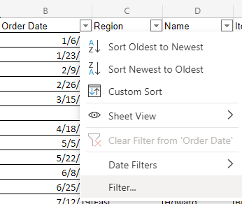
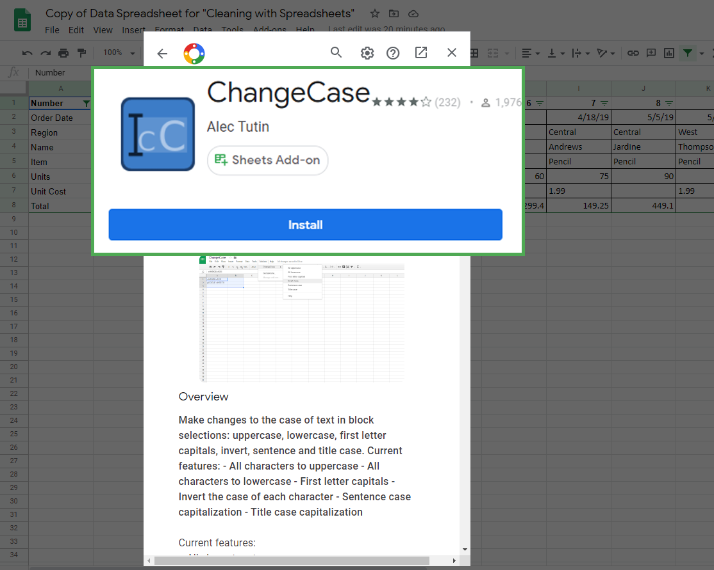
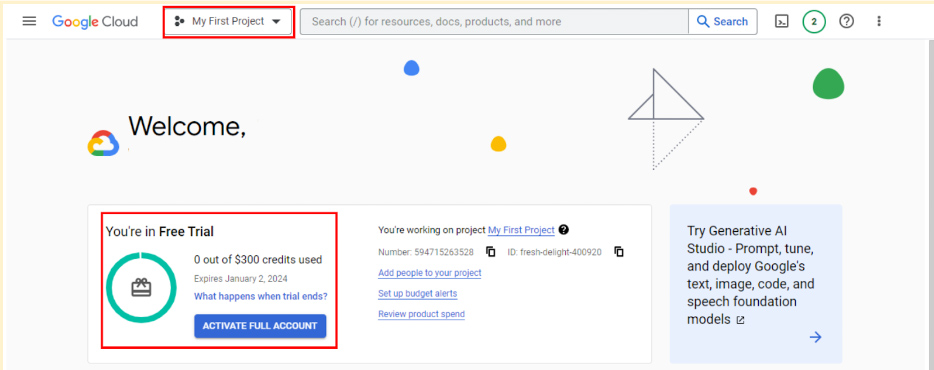
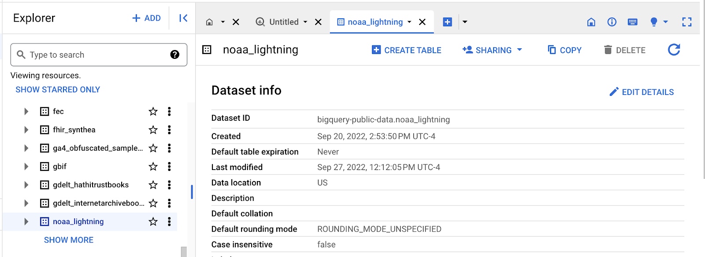
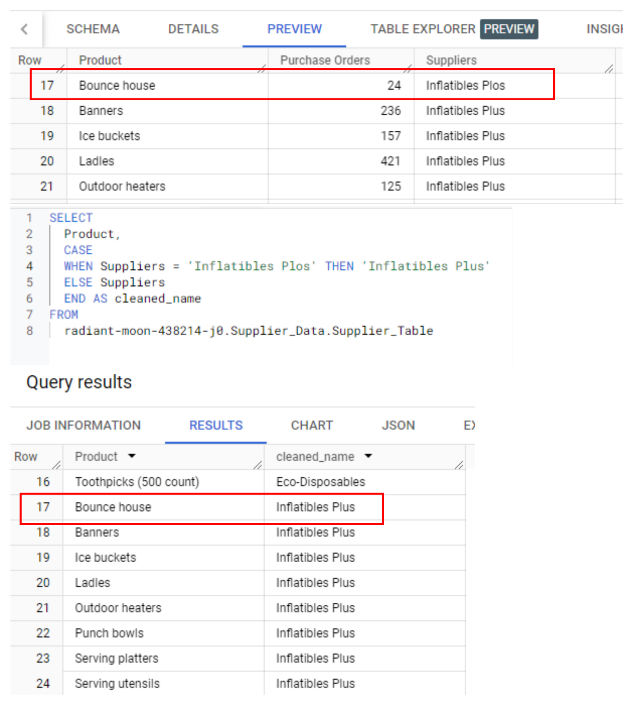

8 videos Total 32 minutes | Transcript | MCQs |
Introduction to data integrity •3 minutes | - Hi! Good to see you! My name is Sally, and I'm here to teach you all about processing data.
- I'm a measurement and analytical lead at Google.
- My job is to help advertising agencies and companies measure success and analyze their data, so I get to meet with lots of different people to show them how data analysis helps with their advertising.
- Speaking of analysis, you did great earlier learning how to gather and organize data for analysis.
- It's definitely an important step in the data analysis process, so well done!
- Now let's talk about how to make sure that your organized data is complete and accurate.
- Clean data is the key to making sure your data has integrity before you analyze it.
- We'll show you how to make sure your data is clean and tidy.
- Cleaning and processing data is one part of the overall data analysis process.
- As a quick reminder, that process is Ask, Prepare, Process, Analyze, Share, and Act.
- Which means it's time for us to explore the Process phase, and I'm here to guide you the whole way.
- I'm very familiar with where you are right now.
- I'd never heard of data analytics until I went through a program similar to this one.
- Once I started making progress, I realized how much I enjoyed data analytics and the doors it could open.
- And now I'm excited to help you open those same doors!
- One thing I realized as I worked for different companies, is that clean data is important in every industry.
- For example, I learned early in my career to be on the lookout for duplicate data, a common problem that analysts come across when cleaning.
- I used to work for a company that had different types of subscriptions.
- In our data set, each user would have a new row for each subscription type they bought, which meant users would show up more than once in my data.
- So if I had counted the number of users in a table without accounting for duplicates like this, I would have counted some users twice instead of once.
- As a result, my analysis would have been wrong, which would have led to problems in my reports and for the stakeholders relying on my analysis.
- Imagine if I told the CEO that we had twice as many customers as we actually did!?
- That's why clean data is so important.
- So the first step in processing data is learning about data integrity.
- You will find out what data integrity is and why it is important to maintain it throughout the data analysis process.
- Sometimes you might not even have the data that you need, so you'll have to create it yourself.
- This will help you learn how sample size and random sampling can save you time and effort.
- Testing data is another important step to take when processing data.
- We'll share some guidance on how to test data before your analysis officially begins.
- Just like you'd clean your clothes and your dishes in everyday life, analysts clean their data all the time, too.
- The importance of clean data will definitely be a focus here.
- You'll learn data cleaning techniques for all scenarios, along with some pitfalls to watch out for as you clean.
- You'll explore data cleaning in both spreadsheets and databases, building on what you've already learned about spreadsheets.
- We'll talk more about SQL and how you can use it to clean data and do other useful things, too.
- When analysts clean their data, they do a lot more than a spot check to make sure it was done correctly.
- You'll learn ways to verify and report your cleaning results.
- This includes documenting your cleaning process, which has lots of benefits that we'll explore.
- It's important to remember that processing data is just one of the tasks you'll complete as a data analyst.
- Actually, your skills with cleaning data might just end up being something you highlight on your resume when you start job hunting.
- Speaking of resumes, you'll be able to start thinking about how to build your own from the perspective of a data analyst.
- Once you're done here, you'll have a strong appreciation for clean data and how important it is in the data analysis process.
- So let's get started!
| What is Sally's job at Google? - A. Software Development Lead
- B. Measurement and Analytical Lead
- C. Marketing Specialist
- D. Data Scientist
Answer: B. Measurement and Analytical Lead
Which phase of the data analysis process is Sally focusing on in this session? Answer: C. Process
Why is clean data important according to Sally? - A. It saves time during analysis.
- B. It ensures data integrity before analysis.
- C. It makes the data look more presentable.
- D. It simplifies data visualization.
Answer: B. It ensures data integrity before analysis.
What is one common problem analysts face when cleaning data, as mentioned by Sally? - C. Outdated data formats
- D. Data stored in multiple locations
Answer: B. Duplicate data
Sally mentioned working for a company that had different types of subscriptions. What issue did this cause in the data set? - A. Each user was counted only once.
- B. Subscription types were not listed.
- C. Users appeared multiple times in the data.
- D. Subscription dates were missing.
Answer: C. Users appeared multiple times in the data.
What are some steps included in the data analysis process mentioned by Sally? - A. Clean, Process, Analyze, Distribute
- B. Ask, Prepare, Process, Analyze, Share, Act
- C. Identify, Organize, Process, Validate
- D. Gather, Sort, Clean, Report
Answer: B. Ask, Prepare, Process, Analyze, Share, Act
Which of the following is NOT a topic that Sally plans to cover regarding data processing? - A. Data cleaning techniques for different scenarios
- B. How to build a data visualization dashboard
- C. Testing data before analysis
- D. Documenting the data cleaning process
Answer: B. How to build a data visualization dashboard
What example does Sally give to illustrate the consequences of not cleaning data properly? - A. Creating reports based on outdated data
- B. Overestimating the number of customers due to duplicate entries
- C. Mixing up subscription types in the data set
- D. Miscalculating revenue due to missing data
Answer: B. Overestimating the number of customers due to duplicate entries
Why does Sally suggest documenting the data cleaning process? - A. To provide evidence of data changes
- B. To keep track of the data sources used
- C. To help others understand the cleaning process
- D. To simplify data visualization
Answer: C. To help others understand the cleaning process
What tools does Sally mention for data cleaning during this session? - B. Spreadsheets and databases
- C. R and Tableau
- D. Power BI and Excel
Answer: B. Spreadsheets and databases |
Why data integrity is important •2 minutes | - Welcome back.
- In this video, we're going to discuss data integrity and some risks you might run into as a data analyst.
- A strong analysis depends on the integrity of the data.
- If the data you're using is compromised in any way, your analysis won't be as strong as it should be.
- Data integrity is the accuracy, completeness, consistency, and trustworthiness of data throughout its lifecycle.
- That might sound like a lot of qualities for the data to live up to.
- But trust me, it's worth it to check for them all before proceeding with your analysis.
- Otherwise, your analysis could be wrong.
- Not because you did something wrong, but because the data you were working with was wrong to begin with.
- When data integrity is low, it can cause anything from the loss of a single pixel in an image to an incorrect medical decision.
- In some cases, one missing piece can make all of your data useless.
- Data integrity can be compromised in lots of different ways.
- There's a chance data can be compromised every time it's replicated, transferred, or manipulated in any way.
- Data replication is the process of storing data in multiple locations.
- If you're replicating data at different times in different places, there's a chance your data will be out of sync.
- This data lacks integrity because different people might not be using the same data for their findings, which can cause inconsistencies.
- There's also the issue of data transfer, which is the process of copying data from a storage device to memory, or from one computer to another.
- If your data transfer is interrupted, you might end up with an incomplete data set, which might not be useful for your needs.
- The data manipulation process involves changing the data to make it more organized and easier to read.
- Data manipulation is meant to make the data analysis process more efficient, but an error during the process can compromise the efficiency.
- Finally, data can also be compromised through human error, viruses, malware, hacking, and system failures, which can all lead to even more headaches.
- I'll stop there.
- That's enough potentially bad news to digest.
- Let's move on to some potentially good news.
- In a lot of companies, the data warehouse or data engineering team takes care of ensuring data integrity.
- Coming up, we'll learn about checking data integrity as a data analyst.
- But rest assured, someone else will usually have your back too.
- After you've found out what data you're working with, it's important to double-check that your data is complete and valid before analysis.
- This will help ensure that your analysis and eventual conclusions are accurate.
- Checking data integrity is a vital step in processing your data to get it ready for analysis, whether you or someone else at your company is doing it.
- Coming up, you'll learn even more about data integrity.
- See you soon!
| 1. What does data integrity refer to? - A) The process of storing data in multiple locations.
- B) The accuracy, completeness, consistency, and trustworthiness of data throughout its lifecycle.
- C) The method of transferring data from one computer to another.
- D) The technique of manipulating data to make it more organized.
Answer: B) The accuracy, completeness, consistency, and trustworthiness of data throughout its lifecycle.
2. What can cause data integrity to be compromised? - A) Replicating, transferring, or manipulating data.
- B) Storing data in a single location.
- C) Ensuring data is consistent across multiple systems.
- D) Verifying data accuracy before analysis.
Answer: A) Replicating, transferring, or manipulating data.
3. What is data replication? - A) The process of copying data from a storage device to memory.
- B) The process of storing data in multiple locations.
- C) The act of changing data to make it easier to read.
- D) The verification of data accuracy.
Answer: B) The process of storing data in multiple locations.
4. How can data transfer compromise data integrity? - A) By ensuring data is replicated across multiple locations.
- B) If the data transfer is interrupted, leading to an incomplete data set.
- C) By changing data to make it more organized.
- D) By preventing human errors during the transfer process.
Answer: B) If the data transfer is interrupted, leading to an incomplete data set.
5. Which of the following is NOT a way that data integrity can be compromised? - A) Data manipulation errors.
- B) Data replication at different times.
- C) Consistently verifying data accuracy.
- D) Human errors, viruses, or system failures.
Answer: C) Consistently verifying data accuracy.
6. What should be done after identifying the data you will work with? - A) Start analyzing the data immediately.
- B) Transfer the data to multiple storage locations.
- C) Double-check that the data is complete and valid before analysis.
- D) Replicate the data to ensure consistency.
Answer: C) Double-check that the data is complete and valid before analysis.
7. Which team in many companies is responsible for ensuring data integrity? - A) Data analysis team.
- B) Data warehouse or data engineering team.
- C) Quality assurance team.
- D) Marketing team.
Answer: B) Data warehouse or data engineering team.
8. What is the purpose of data manipulation? - A) To change the data in a way that makes it less reliable.
- B) To store data in multiple locations for better access.
- C) To make the data more organized and easier to read.
- D) To interrupt data transfer and increase efficiency.
Answer: C) To make the data more organized and easier to read.
|
Balance objectives with data integrity •3 minutes | - Hey there, it's good to remember to check for data integrity.
- It's also important to check that the data you use aligns with the business objective.
- This adds another layer to the maintenance of data integrity because the data you're using might have limitations that you'll need to deal with.
- The process of matching data to business objectives can actually be pretty straightforward.
- Here's a quick example.
- Let's say you're an analyst for a business that produces and sells auto parts.
- If you need to address a question about the revenue generated by the sale of a certain part, then you'd pull up the revenue table from the data set.
- If the question is about customer reviews, then you'd pull up the reviews table to analyze the average ratings.
- But before digging into any analysis, you need to consider a few limitations that might affect it.
- If the data hasn't been cleaned properly, then you won't be able to use it yet.
- You would need to wait until a thorough cleaning has been done.
- Now, let's say you're trying to find how much an average customer spends.
- You notice the same customer's data showing up in more than one row.
- This is called duplicate data.
- To fix this, you might need to change the format of the data, or you might need to change the way you calculate the average.
- Otherwise, it will seem like the data is for two different people, and you'll be stuck with misleading calculations.
- You might also realize there's not enough data to complete an accurate analysis.
- Maybe you only have a couple of months' worth of sales data.
- There's slim chance you could wait for more data, but it's more likely that you'll have to change your process or find alternate sources of data while still meeting your objective.
- I like to think of a data set like a picture.
- Take this picture.
- What are we looking at?
- Unless you're an expert traveler or know the area, it may be hard to pick out from just these two images.
- Visually, it's very clear when we aren't seeing the whole picture.
- When you get the complete picture, you realize... you're in London!
- With incomplete data, it's hard to see the whole picture to get a real sense of what is going on.
- We sometimes trust data because if it comes to us in rows and columns, it seems like everything we need is there if we just query it.
- But that's just not true.
- I remember a time when I found out I didn't have enough data and had to find a solution.
- I was working for an online retail company and was asked to figure out how to shorten customer purchase to delivery time.
- Faster delivery times usually lead to happier customers.
- When I checked the data set, I found very limited tracking information.
- We were missing some pretty key details.
- So the data engineers and I created new processes to track additional information, like the number of stops in a journey.
- Using this data, we reduced the time it took from purchase to delivery and saw an improvement in customer satisfaction.
- That felt pretty great!
- Learning how to deal with data issues while staying focused on your objective will help set you up for success in your career as a data analyst.
- And your path to success continues.
- Next step, you'll learn more about aligning data to objectives.
- Keep it up!
| Why is it important to ensure data aligns with business objectives? - A. It improves the visualization of data.
- B. It helps in avoiding data limitations.
- C. It ensures that data analysis is relevant and meaningful.
- D. It speeds up the data processing time.
Answer: C. It ensures that data analysis is relevant and meaningful.
What should an analyst do if there is duplicate data in the dataset? - A. Ignore the duplicates and proceed with the analysis.
- B. Change the format of the data or recalculate the analysis to account for duplicates.
- C. Use the duplicates to improve accuracy.
- D. Delete the entire dataset and start over.
Answer: B. Change the format of the data or recalculate the analysis to account for duplicates.
In the given example, if a business question is about customer reviews, which data table would an analyst use? - A. Revenue table.
- B. Sales table.
- D. Inventory table.
Answer: C. Reviews table.
What analogy is used in the transcript to describe the challenge of working with incomplete data? - A. A complex puzzle.
- B. A distorted mirror.
- C. A blurry photograph.
- D. An incomplete picture.
Answer: D. An incomplete picture.
What action was taken by the speaker when faced with limited tracking information in the data set? - A. The project was put on hold.
- B. New data collection processes were created.
- C. The analysis was completed with the available data.
- D. The data was discarded as unusable.
Answer: B. New data collection processes were created.
Why is it important to clean data before analysis? - A. To increase the size of the dataset.
- B. To ensure the data is ready for use and free of errors.
- C. To reduce processing time.
- D. To improve data visualization.
Answer: B. To ensure the data is ready for use and free of errors.
What does the speaker suggest doing if there isn't enough data available for a complete analysis? - A. Ignore the missing data and proceed.
- B. Use alternative data sources or adjust the analysis process.
- C. Wait for more data to become available.
- D. Stop the analysis entirely.
Answer: B. Use alternative data sources or adjust the analysis process.
What was the outcome after implementing new tracking processes for the online retail company? - A. The purchase-to-delivery time increased.
- B. The purchase-to-delivery time remained the same.
- C. Customer satisfaction decreased.
- D. The purchase-to-delivery time was reduced, improving customer satisfaction.
Answer: D. The purchase-to-delivery time was reduced, improving customer satisfaction.
What can happen if an analyst does not recognize the limitations of the data? - A. They will always get accurate results.
- B. The analysis may lead to misleading or incorrect conclusions.
- C. The data integrity will improve.
- D. The analysis will always meet business objectives.
Answer: B. The analysis may lead to misleading or incorrect conclusions.
What is a key factor to consider before starting any data analysis? - A. The size of the data set.
- B. The visual appeal of the data.
- C. The limitations that may affect the analysis.
- D. The number of columns in the data set.
Answer: C. The limitations that may affect the analysis.
|
Deal with insufficient data •3 minutes | - Every analyst has been in a situation where there is insufficient data to help with their business objective.
- Considering how much data is generated every day, it may be hard to believe, but it's true.
- So let's discuss what you can do when you have insufficient data.
- We'll cover how to set limits for the scope of your analysis and what data you should include.
- At one point, I was a data analyst at a support center.
- Every day, we received customer questions, which were logged in as support tickets.
- I was asked to forecast the number of support tickets coming in per month to figure out how many additional people we needed to hire.
- It was very important that we had sufficient data spanning back at least a couple of years because I had to account for year-to-year and seasonal changes.
- If I just had the current year's data available, I wouldn't have known that a spike in January is common and has to do with people asking for refunds after the holidays.
- Because I had sufficient data, I was able to suggest we hire more people in January to prepare.
- Challenges are bound to come up, but the good news is that once you know your business objective, you'll be able to recognize whether you have enough data.
- And if you don't, you'll be able to deal with it before you start your analysis.
- Now, let's check out some of those limitations you might come across and how you can handle different types of insufficient data.
- Say you're working in the tourism industry, and you need to find out which travel plans are searched most often.
- If you only use data from one booking site, you're limiting yourself to data from just one source.
- Other booking sites might show different trends that you would want to consider for your analysis.
- If a limitation like this impacts your analysis, you can stop and go back to your stakeholders to figure out a plan.
- If your data set keeps updating, that means the data is still incoming and might not be complete.
- So if there's a brand new tourist attraction that you're analyzing interest and attendance for, there's probably not enough data for you to determine trends.
- For example, you might want to wait a month to gather data.
- Or you can check in with the stakeholders and ask about adjusting the objective.
- For example, you might analyze trends from week to week instead of month to month.
- You could also base your analysis on trends over the past three months and say, "Here's what attendance at the attraction for month four could look like."
- You might not have enough data to know if this number is too low or too high.
- But you would tell stakeholders that it's your best estimate based on the data that you currently have.
- On the other hand, your data could be older and no longer be relevant.
- Outdated data about customer satisfaction won't include the most recent responses.
- So you'll be relying on the ratings for hotels or vacation rentals that might no longer be accurate.
- In this case, your best bet might be to find a new data set to work with.
- Data that's geographically-limited could also be unreliable.
- If your company is global, you wouldn't want to use data limited to travel in just one country.
- You would want a data set that includes all countries.
- So that's just a few of the most common limitations you'll come across and some ways you can address them.
- You can identify trends with the available data or wait for more data if time allows;
- you can talk with stakeholders and adjust your objective;
- or you can look for a new data set.
- The need to take these steps will depend on your role in your company and possibly the needs of the wider industry.
- But learning how to deal with insufficient data is always a great way to set yourself up for success.
- Your data analyst powers are growing stronger.
- And just in time.
- After you learn more about limitations and solutions, you'll learn about statistical power, another fantastic tool for you to use.
- See you soon!
| What is a common situation faced by data analysts? - A. Having too much data to analyze
- B. Having insufficient data to meet the business objective
- C. Working with data that never updates
- D. Using data that is always geographically limited
Answer: B. Having insufficient data to meet the business objective
Why was it important for the data analyst at the support center to have data spanning back at least a couple of years? - A. To calculate yearly growth rates
- B. To predict future products
- C. To account for year-to-year and seasonal changes
- D. To determine the impact of marketing campaigns
Answer: C. To account for year-to-year and seasonal changes
What should an analyst do if their data set is geographically limited but the company operates globally? - A. Proceed with the limited data as it is
- B. Look for a data set that includes all countries
- C. Use outdated data to fill in gaps
- D. Ignore the limitation and continue the analysis
Answer: B. Look for a data set that includes all countries
What is one solution when there isn't enough data available for analysis? - A. Abandon the analysis entirely
- B. Wait for more data to be gathered if time allows
- C. Ignore the missing data and proceed with the analysis
- D. Only use outdated data
Answer: B. Wait for more data to be gathered if time allows
If a data set keeps updating and isn't complete, what is one way to proceed? - A. Stop the analysis until all data is gathered
- B. Continue without considering new data
- C. Consult stakeholders to possibly adjust the analysis objective
- D. Disregard the data as it may be unreliable
Answer: C. Consult stakeholders to possibly adjust the analysis objective
What is a possible consequence of using outdated data in an analysis? - A. The analysis will be more accurate
- B. The data might not reflect the most recent trends or responses
- C. The analysis will cover a broader time frame
- D. The data will include all possible variables
Answer: B. The data might not reflect the most recent trends or responses
How can an analyst deal with data limitations when working with a brand-new tourist attraction? - A. Ignore the lack of data and estimate future trends
- B. Wait until more data has been collected to identify trends
- C. Use data from other tourist attractions as a substitute
- D. Rely solely on the current incomplete data
Answer: B. Wait until more data has been collected to identify trends
What should an analyst do when faced with a limitation that impacts their analysis? - A. Adjust the analysis based on current assumptions without consulting anyone
- B. Go back to stakeholders to figure out a new plan
- C. Complete the analysis as initially planned
- D. Use another unrelated data set to fill in the gaps
Answer: B. Go back to stakeholders to figure out a new plan
What is one potential strategy for dealing with data that is continuously being updated? - A. Analyze trends over a shorter time frame, such as weekly instead of monthly
- B. Discard the new data and use only the older data
- C. Pause the analysis indefinitely until all data is collected
- D. Only consider the data that is already complete
Answer: A. Analyze trends over a shorter time frame, such as weekly instead of monthly
Which of the following is NOT a suggested approach to handling insufficient data? - A. Identify trends with the available data
- B. Talk with stakeholders and adjust the objective
- C. Always proceed without considering limitations
- D. Look for a new data set
Answer: C. Always proceed without considering limitations |
The importance of sample size •3 minutes | - Okay, earlier we talked about having the right kind of data to meet your business objective and the importance of having the right amount of data to make sure your analysis is as accurate as possible.
- You might remember that for data analysts, a population is all possible data values in a certain dataset.
- If you're able to use 100 percent of a population in your analysis, that's great.
- But sometimes collecting information about an entire population just isn't possible.
- It's too time-consuming or expensive.
- For example, let's say a global organization wants to know more about pet owners who have cats.
- You're tasked with finding out which kinds of toys cat owners in Canada prefer.
- But there's millions of cat owners in Canada, so getting data from all of them would be a huge challenge.
- Fear not!
- Allow me to introduce you to... sample size!
- When you use sample size or a sample, you use a part of a population that's representative of the population.
- The goal is to get enough information from a small group within a population to make predictions or conclusions about the whole population.
- The sample size helps ensure the degree to which you can be confident that your conclusions accurately represent the population.
- For the data on cat owners, a sample size might contain data about hundreds or thousands of people rather than millions.
- Using a sample for analysis is more cost-effective and takes less time.
- If done carefully and thoughtfully, you can get the same results using a sample size instead of trying to hunt down every single cat owner to find out their favorite cat toys.
- There is a potential downside, though.
- When you only use a small sample of a population, it can lead to uncertainty.
- You can't really be 100 percent sure that your statistics are a complete and accurate representation of the population.
- This leads to sampling bias, which we covered earlier in the program.
- Sampling bias is when a sample isn't representative of the population as a whole.
- This means some members of the population are being overrepresented or underrepresented.
- For example, if the survey used to collect data from cat owners only included people with smartphones, then cat owners who don't have a smartphone wouldn't be represented in the data.
- Using random sampling can help address some of those issues with sampling bias.
- Random sampling is a way of selecting a sample from a population so that every possible type of the sample has an equal chance of being chosen.
- Going back to our cat owners again, using a random sample of cat owners means cat owners of every type have an equal chance of being chosen.
- Cat owners who live in apartments in Ontario would have the same chance of being represented as those who live in houses in Alberta.
- As a data analyst, you'll find that creating sample sizes usually takes place before you even get to the data.
- But it's still good for you to know that the data you are going to analyze is representative of the population and works with your objective.
- It's also good to know what's coming up in your data journey.
- In the next video, you'll have an option to become even more comfortable with sample sizes.
- See you there.
| What is a population in the context of data analysis?
a. A small group of people selected for a survey
b. A representation of a portion of the entire dataset
c. All possible data values in a certain dataset
d. The specific data used for a particular business objective
Answer: c. All possible data values in a certain dataset
Why is it sometimes not feasible to collect data from an entire population?
a. It can lead to inaccurate results
b. It's often time-consuming and expensive
c. It always introduces sampling bias
d. It is unnecessary for most data analysis
Answer: b. It's often time-consuming and expensive
What is the purpose of using a sample size in data analysis?
a. To gather data from all members of the population
b. To ensure only a small portion of the population is represented
c. To get enough information from a smaller group to make predictions about the whole population
d. To avoid any uncertainty in the data analysis
Answer: c. To get enough information from a smaller group to make predictions about the whole population
What is a potential downside of using a sample size?
a. It always guarantees accurate results
b. It eliminates the possibility of sampling bias
c. It introduces the possibility of sampling bias
d. It takes more time and is costlier than using the entire population
Answer: c. It introduces the possibility of sampling bias
How can sampling bias occur in data collection?
a. By ensuring equal representation of all population members
b. By selecting a sample that doesn't represent the population as a whole
c. By using a large enough sample size
d. By including only those who respond to a survey
Answer: b. By selecting a sample that doesn't represent the population as a whole
What is random sampling?
a. Selecting a sample in which only a specific group is represented
b. A method of choosing a sample where each member of the population has an equal chance of being selected
c. A technique for choosing data points in a sequence
d. Using a sample size that is the same as the entire population
Answer: b. A method of choosing a sample where each member of the population has an equal chance of being selected
In the example given, why would sampling bias occur if only people with smartphones were surveyed?
a. Smartphone owners are more likely to give inaccurate data
b. Cat owners without smartphones would not be represented in the data
c. It would take too long to survey smartphone users
d. Smartphone owners generally own different types of pets
Answer: b. Cat owners without smartphones would not be represented in the data
Which of the following best describes the benefit of using a sample instead of the entire population?
a. It ensures no sampling bias occurs
b. It is more time-consuming and costly
c. It allows conclusions to be drawn faster and at a lower cost
d. It guarantees that the results will be 100% accurate
Answer: c. It allows conclusions to be drawn faster and at a lower cost
What should a data analyst ensure when creating sample sizes?
a. That the sample size represents the entire population accurately
b. That the sample size includes only people with specific characteristics
c. That the entire population is used in the analysis
d. That random sampling is never used
Answer: a. That the sample size represents the entire population accurately
What will be discussed in the next video according to the transcript?
a. Methods to collect data from an entire population
b. Techniques for avoiding sampling bias altogether
c. How to become more comfortable with sample sizes
d. Advanced statistical methods for data analysis
Answer: c. How to become more comfortable with sample sizes |
Using statistical power •4 minutes | - Hey, there.
- We've all probably dreamed of having a superpower at least once in our lives.
- I know I have.
- I'd love to be able to fly.
- But there's another superpower you might not have heard of: statistical power.
- Statistical power is the probability of getting meaningful results from a test.
- I'm guessing that's not a superpower any of you have dreamed about.
- Still, it's a pretty great data superpower.
- For data analysts, your projects might begin with the test or study.
- Hypothesis testing is a way to see if a survey or experiment has meaningful results.
- Here's an example.
- Let's say you work for a restaurant chain that's planning a marketing campaign for their new milkshakes.
- You need to test the ad on a group of customers before turning it into a nationwide ad campaign.
- In the test, you want to check whether customers like or dislike the campaign.
- You also want to rule out any factors outside of the ad that might lead them to say they don't like it.
- Using all your customers would be too time consuming and expensive.
- So, you'll need to figure out how many customers you'll need to show that the ad is effective.
- Fifty probably wouldn't be enough.
- Even if you randomly chose 50 customers, you might end up with customers who don't like milkshakes at all.
- And if that happens, you won't be able to measure the effectiveness of your ad in getting more milkshake orders since no one in the sample size would order them.
- That's why you need a larger sample size: so you can make sure you get a good number of all types of people for your test.
- Usually, the larger the sample size, the greater the chance you'll have statistically significant results with your test.
- And that's statistical power.
- In this case, using as many customers as possible will show the actual differences between the groups who like or dislike the ad versus people whose decision wasn't based on the ad at all.
- There are ways to accurately calculate statistical power, but we won't go into them here.
- You might need to calculate it on your own as a data analyst.
- For now, you should know that statistical power is usually shown as a value out of one.
- So if your statistical power is 0.6, that's the same thing as saying 60%.
- In the milk shake ad test, if you found a statistical power of 60%, that means there's a 60% chance of you getting a statistically significant result on the ad's effectiveness.
- "Statistically significant" is a term that is used in statistics.
- If you want to learn more about the technical meaning, you can search online.
- But in basic terms, if a test is statistically significant, it means the results of the test are real and not an error caused by random chance.
- So there's a 60% chance that the results of the milkshake ad test are reliable and real and a 40% chance that the result of the test is wrong.
- Usually, you need a statistical power of at least 0.8 or 80% to consider your results statistically significant.
- Let's check out one more scenario.
- We'll stick with milkshakes because, well, because I like milkshakes.
- Imagine you work for a restaurant chain that wants to launch a brand-new birthday cake flavored milkshake.
- This milkshake will be more expensive to produce than your other milkshakes.
- Your company hopes that the buzz around the new flavor will bring in more customers and money to offset this cost.
- They want to test this out in a few restaurant locations first.
- So let's figure out how many locations you'd have to use to be confident in your results.
- First, you'd have to think about what might prevent you from getting statistically significant results.
- Are there restaurants running any other promotions that might bring in new customers?
- Do some restaurants have customers that always buy the newest item, no matter what it is?
- Do some location have construction that recently started, that would prevent customers from even going to the restaurant?
- To get a higher statistical power, you'd have to consider all of these factors before you decide how many locations to include in your sample size for your study.
- You want to make sure any effect is most likely due to the new milkshake flavor, not another factor.
- The measurable effects would be an increase in sales or the number of customers at the locations in your sample size.
- That's it for now.
- Coming up, we'll explore sample sizes in more detail, so you can get a better idea of how they impact your tests and studies.
- In the meantime, you've gotten to know a little bit more about milkshakes and superpowers.
- And of course, statistical power.
- Sadly, only statistical power can truly be useful for data analysts.
- Though putting on my cape and flying to grab a milkshake right now does sound pretty good.
| What is statistical power? - A. The ability to fly using data.
- B. The probability of finding meaningful results from a test.
- C. The total number of samples used in a data analysis.
- D. A measure of a test's complexity.
- Answer: B. The probability of finding meaningful results from a test.
Why is a larger sample size important in hypothesis testing? - A. It ensures that the results are always correct.
- B. It increases the chances of getting statistically significant results.
- C. It reduces the cost of data collection.
- D. It eliminates the need for random sampling.
- Answer: B. It increases the chances of getting statistically significant results.
If the statistical power of a test is 0.6, what does it mean? - A. There is a 60% chance of getting a statistically significant result.
- B. The test has a 60% probability of failing.
- C. 60% of the sample will give accurate results.
- D. There is a 60% error in the data collected.
- Answer: A. There is a 60% chance of getting a statistically significant result.
What statistical power value is generally considered sufficient for results to be statistically significant? - A. 0.5 or 50%
- B. 0.6 or 60%
- C. 0.7 or 70%
In the example of testing a milkshake advertisement, why would using only 50 customers not be sufficient? - A. 50 customers are too many, making the test expensive.
- B. The customers might not represent a diverse enough group.
- C. It would be impossible to measure the ad's effectiveness with so few people.
- D. Random chance would guarantee accurate results with 50 customers.
- Answer: B. The customers might not represent a diverse enough group.
When testing a new birthday cake-flavored milkshake in selected restaurant locations, which factors should be considered to achieve higher statistical power? - A. Other promotions running at the locations.
- B. Construction that may affect customer traffic.
- C. The tendency of some customers to buy the newest item.
- D. All of the above.
- Answer: D. All of the above.
What does "statistically significant" mean in basic terms? - A. Results are based on random chance and may not be accurate.
- B. Results of a test are real and not due to random error.
- C. The sample size is too small to be considered.
- D. The test was conducted under ideal conditions.
- Answer: B. Results of a test are real and not due to random error.
What might prevent a restaurant's test of a new milkshake from achieving statistically significant results? - A. Other marketing campaigns running at the same time.
- B. Using a very large sample size.
- C. Conducting the test over a long period.
- D. Choosing locations with high customer turnover.
- Answer: A. Other marketing campaigns running at the same time.
How is statistical power typically expressed? - A. As a whole number greater than one.
- B. As a fraction with a denominator of 100.
- C. As a value between 0 and 1.
- D. As a percentage greater than 100%.
- Answer: C. As a value between 0 and 1.
Why might a company choose to test a new product in only a few locations first? - A. To limit the financial impact if the product fails.
- B. To avoid sampling errors.
- C. To create buzz in all locations simultaneously.
- D. To prevent the results from being statistically significant.
- Answer: A. To limit the financial impact if the product fails.
|
Determine the best sample size •4 minutes | - Great to see you again.
- In this video, we'll go into more detail about sample sizes and data integrity.
- If you've ever been to a store that hands out samples, you know it's one of life's little pleasures.
- For me, anyway! those small samples are also a very smart way for businesses to learn more about their products from customers without having to give everyone a free sample.
- A lot of organizations use sample size in a similar way.
- They take one part of something larger.
- In this case, a sample of a population.
- Sometimes they'll perform complex tests on their data to see if it meets their business objectives.
- We won't go into all the calculations needed to do this effectively.
- Instead, we'll focus on a "big picture" look at the process and what it involves.
- As a quick reminder, sample size is a part of a population that is representative of the population.
- For businesses, it's a very important tool.
- It can be both expensive and time-consuming to analyze an entire population of data.
- Using sample size usually makes the most sense and can still lead to valid and useful findings.
- There are handy calculators online that can help you find sample size.
- You need to input the confidence level, population size, and margin of error.
- We've talked about population size before.
- To build on that, we'll learn about confidence level and margin of error.
- Knowing about these concepts will help you understand why you need the to calculate sample size.
- The confidence level is the probability that your sample accurately reflects the greater population.
- You can think of it the same way as confidence in anything else.
- It's how strongly you feel that you can rely on something or someone.
- Having a 99 percent confidence level is ideal.
- But most industries hope for at least a 90 or 95 percent confidence level.
- Industries like pharmaceuticals usually want a confidence level that's as high as possible when they are using a sample size.
- This makes sense because they're testing medicines and need to be sure they work and are safe for everyone to use.
- For other studies, organizations might just need to know that the test or survey results have them heading in the right direction.
- For example, if a paint company is testing out new colors, a lower confidence level is okay.
- You also want to consider the margin of error for your study.
- You'll learn more about this soon, but it basically tells you how close your sample size results are to what your results would be if you use the entire population that your sample size represents.
- Think of it like this.
- Let's say that the principal of a middle school approaches you with a study about students' candy preferences.
- They need to know an appropriate sample size, and they need it now.
- The school has a student population of 500, and they're asking for a confidence level of 95 percent and a margin of error of 5 percent.
- We've set up a calculator in a spreadsheet, but you can also easily find this type of calculator by searching "sample size calculator" on the internet.
- Just like those calculators, our spreadsheet calculator doesn't show any of the more complex calculations for figuring out sample size.
- All we need to do is input the numbers for our population, confidence level, and margin of error.
- And when we type 500 for our population size, 95 for our confidence level percentage, 5 for our margin of error percentage, the result is about 218.
- That means for this study, an appropriate sample size would be 218.
- If we surveyed 218 students and found that 55 percent of them preferred chocolate, then we could be pretty confident that would be true of all 500 students.
- 218 is the minimum number of people we need to survey based on our criteria of a 95 percent confidence level and a 5 percent margin of error.
- In case you're wondering, the confidence level and margin of error don't have to add up to 100 percent.
- They're independent of each other.
- So let's say we change our margin of error from 5 percent to 3 percent.
- Then we find that our sample size would need to be larger, about 341 instead of 218, to make the results of the study more representative of the population.
- Feel free to practice with an online calculator.
- Knowing sample size and how to find it will help you when you work with data.
- We've got more useful knowledge coming your way, including learning about margin of error.
- See you soon!
| - What is sample size?
- A) The entire population being studied.
- B) A portion of the population that represents the entire population.
- C) A random group of people selected without considering the population size.
- D) The number of variables in a dataset.
- Answer: B
- Why do businesses use sample sizes?
- A) To analyze the entire population, as it is more cost-effective.
- B) To give everyone a free sample of their products.
- C) To save time and resources while still obtaining useful findings.
- D) To avoid performing complex calculations on their data.
- Answer: C
- What does the confidence level represent in a sample size calculation?
- A) The number of people who are confident about the results.
- B) The probability that the sample accurately reflects the greater population.
- C) The percentage of the population surveyed.
- D) The degree of error in the survey results.
- Answer: B
- Which of the following confidence levels is usually considered ideal in most industries?
- A) 50%
- B) 70%
- C) 95%
- D) 99%
- Answer: D
- Why might a pharmaceutical company require a higher confidence level when using sample sizes?
- A) Because they need to minimize costs.
- B) Because the medicines being tested must be proven to be safe and effective for everyone.
- C) Because higher confidence levels are less important for pharmaceutical research.
- D) Because they prefer smaller sample sizes.
- Answer: B
- What does the margin of error tell you in a study involving sample size?
- A) How many people should be included in the study.
- B) How close the sample results are to what the results would be for the entire population.
- C) The percentage of the sample that is incorrect.
- D) The likelihood that the survey results are completely accurate.
- Answer: B
- If a study's confidence level is increased from 90% to 95%, what is likely to happen to the required sample size?
- A) The sample size will decrease.
- B) The sample size will remain the same.
- C) The sample size will increase.
- D) The sample size will be divided by the confidence level.
- Answer: C
- In the example given, how many students would need to be surveyed to achieve a 95% confidence level with a 5% margin of error in a school of 500 students?
- A) 100 students
- B) 218 students
- C) 341 students
- D) 500 students
- Answer: B
- What happens to the required sample size if the margin of error is reduced from 5% to 3%?
- A) The sample size decreases.
- B) The sample size remains unchanged.
- C) The sample size increases.
- D) The sample size is no longer needed.
- Answer: C
- What is the relationship between confidence level and margin of error?
- A) They must always add up to 100%.
- B) They are independent of each other.
- C) Increasing one decreases the other.
- D) They are inversely proportional to the sample size.
- Answer: B
|
Evaluate data reliability •5 minutes | - Hey there! Earlier, we touched on margin of error without explaining it completely.
- Well, we're going to right that wrong in this video by explaining margin of error more.
- We'll even include an example of how to calculate it.
- As a data analyst, it's important for you to figure out sample size and variables like confidence level and margin of error before running any kind of test or survey.
- It's the best way to make sure your results are objective, and it gives you a better chance of getting statistically significant results.
- But if you already know the sample size, like when you're given survey results to analyze, you can calculate the margin of error yourself.
- Then you'll have a better idea of how much of a difference there is between your sample and your population.
- We'll start at the beginning with a more complete definition.
- Margin of error is the maximum that the sample results are expected to differ from those of the actual population.
- Let's think about an example of margin of error.
- It would be great to survey or test an entire population, but it's usually impossible or impractical to do this.
- So instead, we take a sample of the larger population.
- Based on the sample size, the resulting margin of error will tell us how different the results might be compared to the results if we had surveyed the entire population.
- Margin of error helps you understand how reliable the data from your hypothesis testing is.
- The closer to zero the margin of error, the closer your results from your sample would match results from the overall population.
- For example, let's say you completed a nationwide survey using a sample of the population.
- You asked people who work five-day workweeks whether they like the idea of a four-day workweek.
- So your survey tells you that 60% prefer a four-day workweek.
- The margin of error was 10%, which tells us that between 50 and 70% like the idea.
- So if we were to survey all five-day workers nationwide, between 50 and 70% would agree with our results.
- Keep in mind that our range is between 50 and 70%.
- That's because the margin of error is counted in both directions from the survey results of 60%.
- If you set up a 95% confidence level for your survey, there'll be a 95% chance that the entire population's responses will fall between 50 and 70% saying, yes, they want a four-day workweek.
- Since your margin of error overlaps with that 50% mark, you can't say for sure that the public likes the idea of a four-day workweek.
- In that case, you'd have to say your survey was inconclusive.
- Now, if you wanted a lower margin of error, say 5%, with a range between 55 and 65%, you could increase the sample size.
- But if you've already been given the sample size, you can calculate the margin of error yourself.
- Then you can decide yourself how much of a chance your results have of being statistically significant based on your margin of error.
- In general, the more people you include in your survey, the more likely your sample is representative of the entire population.
- Decreasing the confidence level would also have the same effect, but that would also make it less likely that your survey is accurate.
- So to calculate margin of error, you need three things: population size, sample size, and confidence level.
- And just like with sample size, you can find lots of calculators online by searching "margin of error calculator."
- But we'll show you in a spreadsheet, just like we did when we calculated sample size.
- Lets say you're running a study on the effectiveness of a new drug.
- You have a sample size of 500 participants whose condition affects 1% of the world's population.
- That's about 80 million people, which is the population for your study.
- Since it's a drug study, you need to have a confidence level of 99%.
- You also need a low margin of error.
- Let's calculate it.
- We'll put the numbers for population, confidence level, and sample size, in the appropriate spreadsheet cells.
- And our result is a margin of error of close to 6%, plus or minus.
- When the drug study is complete, you'd apply the margin of error to your results to determine how reliable your results might be.
- Calculators like this one in the spreadsheet are just one of the many tools you can use to ensure data integrity.
- And it's also good to remember that checking for data integrity and aligning the data with your objectives will put you in good shape to complete your analysis.
- Knowing about sample size, statistical power, margin of error, and other topics we've covered will help your analysis run smoothly.
- That's a lot of new concepts to take in.
- If you'd like to review them at any time, you can find them all in the glossary, or feel free to rewatch the video!
- Soon you'll explore the ins and outs of clean data.
- The data adventure keeps moving!
- I'm so glad you're moving along with it.
- You got this!
| - What does the margin of error represent in a survey?
- A. The minimum difference between the sample results and the actual population results.
- B. The maximum difference that the sample results are expected to differ from the actual population results.
- C. The average difference between the sample results and the entire population.
- D. The difference between the highest and lowest values in the survey results.
Answer: B. The maximum difference that the sample results are expected to differ from the actual population results.
- How can you decrease the margin of error in a survey?
- A. Decrease the sample size.
- B. Increase the confidence level.
- C. Increase the sample size.
- D. Use a larger population size.
Answer: C. Increase the sample size.
- If a survey shows that 60% of people prefer a four-day workweek with a margin of error of 10%, what is the range of possible support for a four-day workweek?
- A. 40% to 60%
- B. 50% to 70%
- C. 60% to 80%
- D. 45% to 65%
Answer: B. 50% to 70%
- Which of the following factors is required to calculate the margin of error?
- A. Sample size and number of questions in the survey
- B. Population size, sample size, and confidence level
- C. Population size and number of survey responses
- D. Confidence level and number of questions in the survey
Answer: B. Population size, sample size, and confidence level
- What happens to the accuracy of a survey if the confidence level is decreased?
- A. It becomes more likely that the survey results are accurate.
- B. It becomes less likely that the survey results are accurate.
- C. The accuracy of the survey remains unchanged.
- D. The accuracy improves only if the sample size is also decreased.
Answer: B. It becomes less likely that the survey results are accurate.
- Why is it important to understand margin of error before conducting a survey?
- A. To ensure that the survey results will match the entire population.
- B. To adjust the survey questions based on the sample size.
- C. To increase the chances of obtaining statistically significant results.
- D. To decrease the number of participants required for the survey.
Answer: C. To increase the chances of obtaining statistically significant results.
- If a survey has a confidence level of 95% with a margin of error of 5%, what does this imply about the survey results?
- A. There is a 95% chance that the entire population's responses will fall within ±5% of the survey results.
- B. The survey results are guaranteed to be within ±5% of the entire population's responses.
- C. There is a 5% chance that the survey results will match the population's responses.
- D. The entire population's responses will definitely fall within ±5% of the survey results.
Answer: A. There is a 95% chance that the entire population's responses will fall within ±5% of the survey results.
- In the context of the drug study example, why is a low margin of error important?
- A. It increases the sample size needed for the study.
- B. It reduces the confidence level required for the results.
- C. It ensures that the results are reliable and can be applied to the entire population.
- D. It allows for a smaller population size to be used in the study.
Answer: C. It ensures that the results are reliable and can be applied to the entire population.
- Why is it usually impractical to survey an entire population?
- A. The margin of error would be too high.
- B. It is difficult to analyze data from a large sample.
- C. The results would not be statistically significant.
- D. It is often impossible or impractical to access the entire population.
Answer: D. It is often impossible or impractical to access the entire population.
- What can a margin of error close to zero indicate about a survey's results?
- A. The survey results are very different from the actual population.
- B. The survey results closely match the actual population's results.
- C. The sample size was too small.
- D. The confidence level was too low.
Answer: B. The survey results closely match the actual population's results.
|
|
|
|
9 readings Total 160 minutes |
|
|
Course 4 overview: Set your expectations •20 minutes | Course 4 overview: Set your expectationsWelcome to the fourth course in the program! As you make your way through the certificate, this course and others that follow will begin to focus more on practical, skills-based assignments and projects. In this course, you’ll learn to clean data by checking it for completeness and correctness. You’ll review a variety of approaches to clean data in spreadsheets and databases. Then, you’ll gain essential troubleshooting skills that will enable you to fix any errors. An important step in cleaning data is creating reports to communicate the changes you’ve made to others. You’ll understand how to do that in order to ensure the accuracy and reliability of data. Together, these skills will help ensure your data analysis is successful.
Course Overview- Foundations: Data, Data, Everywhere
- Ask Questions to Make Data-Driven Decisions
- Prepare Data for Exploration
- Process Data from Dirty to Clean (this course)
- Analyze Data to Answer Questions
- Share Data Through the Art of Visualization
- Data Analysis with R Programming
- Google Data Analytics Capstone: Complete a Case Study
Course 4 contentEach course is broken into modules. Here’s a quick overview of the skills you’ll gain in each of the five Course 4 modules. Module 1: The importance of integrityData integrity is critical to successful analysis. In this part of the course, you’ll explore methods and steps that analysts take to check their data for integrity. This includes knowing what to do when you don’t have enough data. You’ll also learn about random samples and understand how to avoid sampling bias. All of these methods will also help you ensure your analysis is successful. Module 2: Clean data for more accurate insightsEvery data analyst wants to analyze clean data. In this part of the course, you’ll learn the difference between clean and dirty data. Then, you’ll practice cleaning data in spreadsheets and other tools. Module 3: Data cleaning with SQLKnowing a variety of ways to clean data can make a data analyst’s job much easier. In this part of the course, you’ll use SQL to clean data from databases. In particular, you’ll explore how SQL queries and functions can be used to clean and transform your data before an analysis. Module 4: Verify and report cleaning resultsWhen you clean data, you make changes to the original dataset. It’s important to verify the changes you make are accurate and to let your teammates know about the changes. In this part of the course, you’ll learn to verify that data is clean and report your data cleaning results. With verified clean data, you’re ready to begin analyzing! Module 5: Optional: Add data to your resumeCreating an effective resume will help you in your data analytics career. In this part of the course, you’ll learn all about the job application process. Your focus will be on building a resume that highlights your strengths and relevant experience. Module 6: Course wrap-upReview the course glossary and prepare for the next course in the Google Data Analytics Certificate program. What to expectEach module includes a series of lessons with many types of learning opportunities. These include: - Videos for instructors to teach new concepts and demonstrate the use of tools
- In-video questions that pop up from time to time to help you to check your understanding of key concepts and skills
- Step-by-step guides you can use to follow along with instructors as they demonstrate tools
- Readings to explore topics more in-depth and build on the concepts from the videos
- Discussion forums to share, explore, and reinforce lesson topics
- Discussion prompts to promote thinking and engagement in the discussion forums
- Practice quizzes to prepare you for graded quizzes
- Graded quizzes to measure your progress and give you valuable feedback
This program was designed to let you work at your own pace—your personalized deadlines are just a guide. There is no penalty for late assignments. To earn your certificate, you simply need to complete all of the work. If you miss two assessment deadlines in a row, or if you miss an assessment deadline by two weeks, you'll see a Reset deadlines option on the Grades page. Click it to switch to a new course schedule with updated deadlines. You can use this option as many times as you need—it won’t remove any progress you’ve already made in the course, but you may find new course content if the instructor updated the course after you started. If you cancel a subscription and then reactivate it, your deadlines will automatically reset. In this course, you'll be assessed with graded quizzes and activities. Both are based on the wide variety of learning materials and activities that reinforce the important skills you’ll develop. And both can be taken more than once. Tips for success- It is strongly recommended that you go through the items in each lesson in the order they appear because new information and concepts build on previous knowledge.
- Participate in all learning opportunities to gain as much knowledge and experience as possible.
- If something is confusing, don’t hesitate to replay a video, review a reading, or repeat a self-review activity.
- Use the additional resources that are referenced in this course. They are designed to support your learning. You can find all of these resources in the Resources tab.
- When you encounter useful links in this course, bookmark them so you can refer to the information later for study or review.
- Understand and follow the Coursera Code of Conduct to ensure that the learning community remains a welcoming, friendly, and supportive place for all members.
Updates to the course As you complete this course, you may notice updates to the content, like new practice materials and additional examples. These updates ensure the program provides up-to-date skills and guidance that will help you in your data analytics career. If you previously completed a graded activity, you may need to repeat the assessment in order to complete this course. For more information, check out the course discussion forum. | - What is the primary focus of Course 4 in the Google Data Analytics Certificate program?
- A. Data visualization techniques
- B. Cleaning data and ensuring data integrity
- C. Advanced statistical analysis
- D. Creating predictive models using machine learning
Answer: B. Cleaning data and ensuring data integrity
- In Module 1, what key concept is emphasized for successful data analysis?
- A. Visualization techniques
- B. Data integrity
- C. Data transformation
- D. Database management
Answer: B. Data integrity
- Which tool is specifically mentioned for data cleaning in Module 3?
- A. Python
- B. R Programming
- C. SQL
- D. Microsoft Excel
Answer: C. SQL
- Why is it important to verify data after cleaning it, as mentioned in Module 4?
- A. To reduce the dataset size
- B. To ensure that the original dataset remains unchanged
- C. To confirm that the changes are accurate and communicate the results to others
- D. To speed up the data analysis process
Answer: C. To confirm that the changes are accurate and communicate the results to others
- What optional activity is covered in Module 5?
- A. Building a predictive model
- B. Creating a resume for a data analytics career
- C. Developing a data visualization project
- D. Learning advanced SQL functions
Answer: B. Creating a resume for a data analytics career
- How is the Course 4 program structured in terms of modules?
- A. It is divided into five modules plus an optional sixth module.
- B. It consists of seven required modules with no optional content.
- C. It has a flexible module structure with no set order.
- D. It includes eight modules covering various data analytics topics.
Answer: A. It is divided into five modules plus an optional sixth module.
- What are some types of learning opportunities provided in each module?
- A. In-video questions, graded quizzes, and step-by-step guides
- B. Group projects, individual assignments, and live lectures
- C. Practical lab sessions, workshops, and field trips
- D. Case studies, coding challenges, and peer evaluations
Answer: A. In-video questions, graded quizzes, and step-by-step guides
- What should a learner do if they miss two assessment deadlines in a row?
- A. Wait until the end of the course to complete the assessments
- B. Use the "Reset deadlines" option on the Grades page
- C. Email the course instructor for an extension
- D. Withdraw from the course and start over
Answer: B. Use the "Reset deadlines" option on the Grades page
- What is a recommended strategy for succeeding in Course 4?
- A. Skipping videos and focusing on quizzes
- B. Reviewing materials out of order for variety
- C. Participating in all learning opportunities and following the lesson sequence
- D. Using only the graded quizzes as a measure of understanding
Answer: C. Participating in all learning opportunities and following the lesson sequence
- Why might you notice updates to the course content during your progress?
- A. The program is static and doesn’t get any updates.
- B. Updates help ensure the program remains current with skills and guidance needed for a data analytics career.
- C. Updates are purely for aesthetic changes to the course layout.
- D. The course content changes randomly and doesn’t follow a specific pattern.
Answer: B. Updates help ensure the program remains current with skills and guidance needed for a data analytics career.
|
More about data integrity and compliance •20 minutes | More about data integrity and complianceThis reading illustrates the importance of data integrity using an example of a global company’s data. Definitions of terms that are relevant to data integrity will be provided at the end. Scenario: calendar dates for a global companyCalendar dates are represented in a lot of different short forms. Depending on where you live, a different format might be used. - In some countries, 12/10/20 (DD/MM/YY) stands for October 12, 2020.
- In other countries, the national standard is YYYY-MM-DD so October 12, 2020 becomes 2020-10-12.
- In the United States, (MM/DD/YY) is the accepted format so October 12, 2020 is going to be 10/12/20.
Now, think about what would happen if you were working as a data analyst for a global company and didn’t check date formats. Well, your data integrity would probably be questionable. Any analysis of the data would be inaccurate. Imagine ordering extra inventory for December when it was actually needed in October! A good analysis depends on the integrity of the data, and data integrity usually depends on using a common format. So it is important to double-check how dates are formatted to make sure what you think is December 10, 2020 isn’t really October 12, 2020, and vice versa. Here are some other things to watch out for: - Data replication compromising data integrity: Continuing with the example, imagine you ask your international counterparts to verify dates and stick to one format. One analyst copies a large dataset to check the dates. But because of memory issues, only part of the dataset is actually copied. The analyst would be verifying and standardizing incomplete data. That partial dataset would be certified as compliant but the full dataset would still contain dates that weren't verified. Two versions of a dataset can introduce inconsistent results. A final audit of results would be essential to reveal what happened and correct all dates.
- Data transfer compromising data integrity: Another analyst checks the dates in a spreadsheet and chooses to import the validated and standardized data back to the database. But suppose the date field from the spreadsheet was incorrectly classified as a text field during the data import (transfer) process. Now some of the dates in the database are stored as text strings. At this point, the data needs to be cleaned to restore its integrity.
- Data manipulation compromising data integrity: When checking dates, another analyst notices what appears to be a duplicate record in the database and removes it. But it turns out that the analyst removed a unique record for a company’s subsidiary and not a duplicate record for the company. Your dataset is now missing data and the data must be restored for completeness.
ConclusionFortunately, with a standard date format and compliance by all people and systems that work with the data, data integrity can be maintained. But no matter where your data comes from, always be sure to check that it is valid, complete, and clean before you begin any analysis.
Reference: Data constraints and examplesAs you progress in your data journey, you'll come across many types of data constraints (or criteria that determine validity). The table below offers definitions and examples of data constraint terms you might come across. Data constraint | Definition | Examples | Data type | Values must be of a certain type: date, number, percentage, Boolean, etc. | If the data type is a date, a single number like 30 would fail the constraint and be invalid | Data range | Values must fall between predefined maximum and minimum values | If the data range is 10-20, a value of 30 would fail the constraint and be invalid | Mandatory | Values can’t be left blank or empty | If age is mandatory, that value must be filled in | Unique | Values can’t have a duplicate | Two people can’t have the same mobile phone number within the same service area | Regular expression (regex) patterns | Values must match a prescribed pattern | A phone number must match ###-###-#### (no other characters allowed) | Cross-field validation | Certain conditions for multiple fields must be satisfied | Values are percentages and values from multiple fields must add up to 100% | Primary-key | (Databases only) value must be unique per column | A database table can’t have two rows with the same primary key value. A primary key is an identifier in a database that references a column in which each value is unique. More information about primary and foreign keys is provided later in the program. | Set-membership | (Databases only) values for a column must come from a set of discrete values | Value for a column must be set to Yes, No, or Not Applicable | Foreign-key | (Databases only) values for a column must be unique values coming from a column in another table | In a U.S. taxpayer database, the State column must be a valid state or territory with the set of acceptable values defined in a separate States table | Accuracy | The degree to which the data conforms to the actual entity being measured or described | If values for zip codes are validated by street location, the accuracy of the data goes up. | Completeness | The degree to which the data contains all desired components or measures | If data for personal profiles required hair and eye color, and both are collected, the data is complete. | Consistency | The degree to which the data is repeatable from different points of entry or collection | If a customer has the same address in the sales and repair databases, the data is consistent. |
| - Why is it important to standardize date formats when working with global data?
- A. To make the data appear more visually appealing.
- B. To prevent ordering errors and ensure accurate analysis.
- C. To reduce the number of records in a dataset.
- D. To comply with local government regulations.
Answer: B. To prevent ordering errors and ensure accurate analysis.
- What issue might arise from data replication when verifying dates in a large dataset?
- A. The dataset may get completely overwritten.
- B. The data might be incorrectly formatted as text.
- C. The dataset may be only partially copied, leading to incomplete verification.
- D. The data may contain more duplicate records than before.
Answer: C. The dataset may be only partially copied, leading to incomplete verification.
- What data integrity issue can occur during data transfer?
- A. Dates may be duplicated.
- B. Date fields may be incorrectly classified as text fields.
- C. Values may exceed the predefined data range.
- D. The original data format may become encrypted.
Answer: B. Date fields may be incorrectly classified as text fields.
- If an analyst removes what appears to be a duplicate record but it turns out to be unique, what type of data integrity issue has occurred?
- A. Data replication issue
- B. Data transfer issue
- C. Data manipulation issue
- D. Cross-field validation issue
Answer: C. Data manipulation issue
- Which of the following is NOT a data constraint mentioned in the reading?
- A. Data type
- B. Primary-key
- C. Visual consistency
- D. Set-membership
Answer: C. Visual consistency
- What does the 'Mandatory' data constraint ensure?
- A. Values can be duplicated within the same dataset.
- B. Values must fall within a specific range.
- C. Values cannot be left blank or empty.
- D. Values must conform to a regular expression pattern.
Answer: C. Values cannot be left blank or empty.
- Which scenario best describes 'Cross-field validation'?
- A. Values in a column must be unique.
- B. The data must conform to a certain format, such as a phone number pattern.
- C. Values across multiple fields must satisfy a condition, like adding up to 100%.
- D. Values in one table must match values from another table.
Answer: C. Values across multiple fields must satisfy a condition, like adding up to 100%.
- How can data completeness be achieved in a dataset?
- A. By ensuring no duplicates exist.
- B. By collecting all desired components or measures.
- C. By matching the format of the data to predefined regular expressions.
- D. By ensuring values fall within a specific data range.
Answer: B. By collecting all desired components or measures.
- Which term refers to values for a column that must come from a set of predefined discrete values?
- A. Data range
- B. Set-membership
- C. Primary-key
- D. Foreign-key
Answer: B. Set-membership
- What is the definition of data accuracy in the context of data integrity?
- A. Ensuring data conforms to a specific data type, such as date or percentage.
- B. Ensuring data is collected from multiple sources.
- C. Ensuring data values closely represent the actual entity being measured.
- D. Ensuring all data fields are mandatory.
Answer: C. Ensuring data values closely represent the actual entity being measured.
|
Well-aligned objectives and data •20 minutes | Well-aligned objectives and dataYou can gain powerful insights and make accurate conclusions when data is well-aligned to business objectives. As a data analyst, alignment is something you will need to judge. Good alignment means that the data is relevant and can help you solve a business problem or determine a course of action to achieve a given business objective. In this reading, you will review the business objectives associated with three scenarios. You will explore how clean data and well-aligned business objectives can help you come up with accurate conclusions. On top of that, you will learn how new variables discovered during data analysis can cause you to set up data constraints so you can keep the data aligned to a business objective. Clean data + alignment to business objective = accurate conclusionsBusiness objectiveAccount managers at Impress Me, an online content subscription service, want to know how soon users view content after their subscriptions are activated.
To start off, the data analyst verifies that the data exported to spreadsheets is clean and confirms that the data needed (when users access content) is available. Knowing this, the analyst decides there is good alignment of the data to the business objective. All that is missing is figuring out exactly how long it takes each user to view content after their subscription has been activated. Here are the data processing steps the analyst takes for a user from an account called V&L Consulting. (These steps would be repeated for each subscribing account, and for each user associated with that account.) Step 1Data-processing step | Source of data | Look up the activation date for V&L Consulting | Account spreadsheet |
Relevant data in spreadsheet:
Result: October 21, 2019 Step 2Data-processing step | Source of data | Look up the name of a user belonging to the V&L Consulting account | Account spreadsheet (users tab) |
Relevant data in spreadsheet:
Result: Maria Ballantyne Step 3Data-processing step | Source of data | Find the first content access date for Maria B. | Content usage spreadsheet |
Relevant data in spreadsheet:
Result: October 31, 2019 Step 4Data-processing step | Source of data | Calculate the time between activation and first content usage for Maria B. | New spreadsheet calculation |
Relevant data in spreadsheet:
Result: 10 days Pro tip 1In the above process, the analyst could use VLOOKUP to look up the data in Steps 1, 2, and 3 to populate the values in the spreadsheet in Step 4. VLOOKUP is a spreadsheet function that searches for a certain value in a column to return a related piece of information. Using VLOOKUP can save a lot of time; without it, you have to look up dates and names manually. Refer to the VLOOKUP page in the Google Help Center for how to use the function in Google Sheets. Pro tip 2In Step 4 of the above process, the analyst could use the DATEDIF function to automatically calculate the difference between the dates in column C and column D. The function can calculate the number of days between two dates. Refer to the Microsoft Support DATEDIF page for how to use the function in Excel. The DAYS360 function does the same thing in accounting spreadsheets that use a 360-day year (twelve 30-day months). Refer to the DATEDIF page in the Google Help Center for how to use the function in Google Sheets. Alignment to business objective + additional data cleaning = accurate conclusions Business objectiveCloud Gate, a software company, recently hosted a series of public webinars as free product introductions. The data analyst and webinar program manager want to identify companies that had five or more people attend these sessions. They want to give this list of companies to sales managers who can follow up for potential sales.
The webinar attendance data includes the fields and data shown below. Name | <First name> <Last name> | This was required information attendees had to submit | Email Address | xxxxx@company.com | This was required information attendees had to submit | Company | <Company name> | This was optional information attendees could provide
|
Data cleaningThe webinar attendance data seems to align with the business objective. But the data analyst and program manager decide that some data cleaning is needed before the analysis. They think data cleaning is required because: - The company name wasn’t a mandatory field. If the company name is blank, it might be found from the email address. For example, if the email address is username@google.com, the company field could be filled in with Google for the data analysis. This data cleaning step assumes that people with company-assigned email addresses attended a webinar for business purposes.
- Attendees could enter any name. Since attendance across a series of webinars is being looked at, they need to validate names against unique email addresses. For example, if Joe Cox attended two webinars but signed in as Joe Cox for one and Joseph Cox for the other, he would be counted as two different people. To prevent this, they need to check his unique email address to determine that he was the same person. After the validation, Joseph Cox could be changed to Joe Cox to match the other instance.
Alignment to business objective + newly discovered variables + constraints = accurate conclusions Business objectiveAn after-school tutoring company, A+ Education, wants to know if there is a minimum number of tutoring hours needed before students have at least a 10% improvement in their assessment scores.
The data analyst thinks there is good alignment between the data available and the business objective because: - Students log in and out of a system for each tutoring session, and the number of hours is tracked
- Assessment scores are regularly recorded
Data constraints for new variablesAfter looking at the data, the data analyst discovers that there are other variables to consider. Some students had consistent weekly sessions while other students had scheduled sessions more randomly even though their total number of tutoring hours was the same. The data doesn’t align as well with the original business objective as first thought, so the analyst adds a data constraint to focus only on the students with consistent weekly sessions. This modification helps to get a more accurate picture about the enrollment time needed to achieve a 10% improvement in assessment scores. Key takeawaysHopefully these examples give you a sense of what to look for to know if your data aligns with your business objective. - When there is clean data and good alignment, you can get accurate insights and make conclusions the data supports.
- If there is good alignment but the data needs to be cleaned, clean the data before you perform your analysis.
- If the data only partially aligns with an objective, think about how you could modify the objective, or use data constraints to make sure that the subset of data better aligns with the business objective.
| - What is the primary benefit of having well-aligned data with business objectives?
- A. It simplifies data processing steps.
- B. It enhances the ability to make accurate conclusions and gain insights.
- C. It reduces the number of variables in analysis.
- D. It increases the complexity of data management.
Answer: B. It enhances the ability to make accurate conclusions and gain insights.
- In the scenario involving Impress Me, what was the main business objective?
- A. To determine how many users subscribe to the service.
- B. To find out how soon users view content after their subscriptions are activated.
- C. To calculate the total number of subscriptions.
- D. To evaluate user satisfaction with content.
Answer: B. To find out how soon users view content after their subscriptions are activated.
- Which function can be used in spreadsheets to look up data efficiently?
- A. DATEDIF
- B. SUMIF
- C. VLOOKUP
- D. AVERAGE
Answer: C. VLOOKUP
- Why is data cleaning necessary in the webinar attendance analysis?
- A. To ensure all required fields are filled out.
- B. To combine data from multiple sources.
- C. To validate unique names against email addresses.
- D. To reduce the size of the dataset.
Answer: C. To validate unique names against email addresses.
- What data constraint was added by the analyst for A+ Education's analysis?
- A. To include all students, regardless of attendance frequency.
- B. To focus only on students with consistent weekly tutoring sessions.
- C. To eliminate any students with less than 10 tutoring hours.
- D. To analyze only the highest scoring students.
Answer: B. To focus only on students with consistent weekly tutoring sessions.
- What does the formula DATEDIF calculate?
- A. The average of two dates.
- B. The difference between two dates in days.
- C. The total number of sessions attended.
- D. The sum of hours logged by students.
Answer: B. The difference between two dates in days.
- If the data partially aligns with a business objective, what should the analyst consider doing?
- A. Ignore the data and proceed with the analysis.
- B. Modify the business objective or use data constraints.
- C. Collect additional data until it fully aligns.
- D. Conduct the analysis without any changes.
Answer: B. Modify the business objective or use data constraints.
- What can be concluded if the data is clean and well-aligned with business objectives?
- A. The analysis will require no adjustments.
- B. Accurate insights and conclusions can be drawn from the data.
- C. The data will be easy to collect and manage.
- D. There will be no need for data cleaning.
Answer: B. Accurate insights and conclusions can be drawn from the data.
- What was the main objective of the Cloud Gate software company's data analysis?
- A. To assess the effectiveness of the webinars.
- B. To identify companies with five or more attendees at the webinars.
- C. To evaluate user feedback on the product.
- D. To compare attendance rates among different demographics.
Answer: B. To identify companies with five or more attendees at the webinars.
- Why might an account manager check the company name based on email addresses during data cleaning?
- A. To improve the aesthetic of the data presentation.
- B. To ensure all required fields are filled correctly.
- C. To fill in missing company names for better data analysis.
- D. To avoid duplicates in the attendance data.
Answer: C. To fill in missing company names for better data analysis.
|
When you find an issue with your data •10 minutes | When you find an issue with your dataWhen you are getting ready for data analysis, you might realize you don’t have the data you need or you don’t have enough of it. In some cases, you can use what is known as proxy data in place of the real data. Think of it like substituting oil for butter in a recipe when you don’t have butter. In other cases, there is no reasonable substitute and your only option is to collect more data. Consider the following data issues and suggestions on how to work around them. Data issue 1: no dataPossible Solutions | Examples of solutions in real life | Gather the data on a small scale to perform a preliminary analysis and then request additional time to complete the analysis after you have collected more data. | If you are surveying employees about what they think about a new performance and bonus plan, use a sample for a preliminary analysis. Then, ask for another 3 weeks to collect the data from all employees. | If there isn’t time to collect data, perform the analysis using proxy data from other datasets. This is the most common workaround. | If you are analyzing peak travel times for commuters but don’t have the data for a particular city, use the data from another city with a similar size and demographic. |
Data issue 2: too little dataPossible Solutions | Examples of solutions in real life | Do the analysis using proxy data along with actual data. | If you are analyzing trends for owners of golden retrievers, make your dataset larger by including the data from owners of labradors. | Adjust your analysis to align with the data you already have. | If you are missing data for 18- to 24-year-olds, do the analysis but note the following limitation in your report: this conclusion applies to adults 25 years and older only. |
Data issue 3: wrong data, including data with errors*Possible Solutions | Examples of solutions in real life | If you have the wrong data because requirements were misunderstood, communicate the requirements again. | If you need the data for female voters and received the data for male voters, restate your needs. | Identify errors in the data and, if possible, correct them at the source by looking for a pattern in the errors. | If your data is in a spreadsheet and there is a conditional statement or boolean causing calculations to be wrong, change the conditional statement instead of just fixing the calculated values. | If you can’t correct data errors yourself, you can ignore the wrong data and go ahead with the analysis if your sample size is still large enough and ignoring the data won’t cause systematic bias. | If your dataset was translated from a different language and some of the translations don’t make sense, ignore the data with bad translation and go ahead with the analysis of the other data. |
* Important note: Sometimes data with errors can be a warning sign that the data isn’t reliable. Use your best judgment. Use the following decision tree as a reminder of how to deal with data errors or not enough data:
1. Can you fix or request a corrected dataset? NO
2. Do you have enough data to omit the wrong data? NO
3. Can you proxy the data? NO
4. Can you collect more data? NO
Modify the business objective (if possible) | What should you consider when you realize you don’t have the data you need for analysis? - A. Ignore the data issue and proceed with the analysis.
- B. Use proxy data or collect more data if necessary.
- C. Stop the analysis and report the issue to management.
- D. Change the analysis objective to fit the available data.
Answer: B. Use proxy data or collect more data if necessary.
In the context of data analysis, what is proxy data? - A. Data that has been manipulated to fit a certain criteria.
- B. Data used as a substitute when the actual data is unavailable or insufficient.
- C. Data collected from multiple sources to increase reliability.
- D. Data that is generated through simulations.
Answer: B. Data used as a substitute when the actual data is unavailable or insufficient.
What is a suggested solution when there is no data available? - A. Use data from different industries.
- B. Gather data on a small scale for preliminary analysis and request additional time for complete data collection.
- C. Adjust the analysis to fit the available data.
- D. Change the research question to something more feasible.
Answer: B. Gather data on a small scale for preliminary analysis and request additional time for complete data collection.
If you have too little data for analysis, what is one possible solution? - A. Discard the analysis entirely.
- B. Use only proxy data and ignore the actual data.
- C. Adjust your analysis to align with the existing data and acknowledge limitations.
- D. Make up data to complete your analysis.
Answer: C. Adjust your analysis to align with the existing data and acknowledge limitations.
What should you do if you discover that you have wrong data due to misunderstood requirements? - A. Ignore the data and proceed with analysis.
- B. Communicate the requirements again to clarify your needs.
- C. Adjust the analysis to fit the wrong data.
- D. Collect new data without addressing the misunderstanding.
Answer: B. Communicate the requirements again to clarify your needs.
How can you handle data with errors if you cannot correct them? - A. Always discard the entire dataset.
- B. Omit the wrong data if your sample size is large enough and it won’t cause systematic bias.
- C. Include all data regardless of errors.
- D. Report the errors to management and wait for a resolution.
Answer: B. Omit the wrong data if your sample size is large enough and it won’t cause systematic bias.
What is the first question to ask when dealing with data errors according to the decision tree? - A. Can you proxy the data?
- B. Can you collect more data?
- C. Can you fix or request a corrected dataset?
- D. Do you have enough data to omit the wrong data?
Answer: C. Can you fix or request a corrected dataset?
When is it appropriate to modify the business objective in relation to data issues? - A. When you have enough data to proceed with the analysis.
- B. When you can’t collect more data, fix errors, or proxy the data.
- C. When the analysis results contradict the initial objectives.
- D. When the dataset is too large to manage effectively.
Answer: B. When you can’t collect more data, fix errors, or proxy the data.
What is a common workaround for analyzing data when there is no available data? - A. Use estimates based on personal opinions.
- B. Collect data from unrelated studies.
- C. Use proxy data from similar datasets.
- D. Wait until the data is available and delay the analysis.
Answer: C. Use proxy data from similar datasets.
What should be done if you find that your dataset contains errors due to poor translations? - A. Discard the entire dataset.
- B. Ignore the poorly translated data and analyze the rest.
- C. Attempt to translate the data correctly before analysis.
- D. Report the errors to the data provider and wait for a fix.
Answer: B. Ignore the poorly translated data and analyze the rest.
|
Calculate sample size •20 minutes | Calculate sample sizeBefore you dig deeper into sample size, familiarize yourself with these terms and definitions: Terminology | Definitions | Population | The entire group that you are interested in for your study. For example, if you are surveying people in your company, the population would be all the employees in your company. | Sample | A subset of your population. Just like a food sample, it is called a sample because it is only a taste. So if your company is too large to survey every individual, you can survey a representative sample of your population. | Margin of error | Since a sample is used to represent a population, the sample’s results are expected to differ from what the result would have been if you had surveyed the entire population. This difference is called the margin of error. The smaller the margin of error, the closer the results of the sample are to what the result would have been if you had surveyed the entire population. | Confidence level | How confident you are in the survey results. For example, a 95% confidence level means that if you were to run the same survey 100 times, you would get similar results 95 of those 100 times. Confidence level is targeted before you start your study because it will affect how big your margin of error is at the end of your study. | Confidence interval | The range of possible values that the population’s result would be at the confidence level of the study. This range is the sample result +/- the margin of error. | Statistical significance | The determination of whether your result could be due to random chance or not. The greater the significance, the less due to chance. |
Things to remember when determining the size of your sampleWhen figuring out a sample size, here are things to keep in mind: - Don’t use a sample size less than 30. It has been statistically proven that 30 is the smallest sample size where an average result of a sample starts to represent the average result of a population.
- The confidence level most commonly used is 95%, but 90% can work in some cases.
Increase the sample size to meet specific needs of your project: - For a higher confidence level, use a larger sample size
- To decrease the margin of error, use a larger sample size
- For greater statistical significance, use a larger sample size
Note: Sample size calculators use statistical formulas to determine a sample size. More about these are coming up in the course! Stay tuned. Why a minimum sample of 30?This recommendation is based on the Central Limit Theorem (CLT) in the field of probability and statistics. As sample size increases, the results more closely resemble the normal (bell-shaped) distribution from a large number of samples. A sample of 30 is the smallest sample size for which the CLT is still valid. Researchers who rely on regression analysis – statistical methods to determine the relationships between controlled and dependent variables – also prefer a minimum sample of 30. Still curious? Without getting too much into the math, check out these articles: - Central Limit Theorem (CLT): This article by Investopedia explains the Central Limit Theorem and briefly describes how it can apply to an analysis of a stock index.
- Sample Size Formula: This article by Statistics Solutions provides a little more detail about why some researchers use 30 as a minimum sample size.
Sample sizes vary by business problemSample size will vary based on the type of business problem you are trying to solve. For example, if you live in a city with a population of 200,000 and get 180,000 people to respond to a survey, that is a large sample size. But without actually doing that, what would an acceptable, smaller sample size look like? Would 200 be alright if the people surveyed represented every district in the city? Answer: It depends on the stakes. - A sample size of 200 might be large enough if your business problem is to find out how residents felt about the new library
- A sample size of 200 might not be large enough if your business problem is to determine how residents would vote to fund the library
You could probably accept a larger margin of error surveying how residents feel about the new library versus surveying residents about how they would vote to fund it. For that reason, you would most likely use a larger sample size for the voter survey. 
Larger sample sizes have a higher costYou also have to weigh the cost against the benefits of more accurate results with a larger sample size. Someone who is trying to understand consumer preferences for a new line of products wouldn’t need as large a sample size as someone who is trying to understand the effects of a new drug. For drug safety, the benefits outweigh the cost of using a larger sample size. But for consumer preferences, a smaller sample size at a lower cost could provide good enough results.
Knowing the basics is helpfulKnowing the basics will help you make the right choices when it comes to sample size. You can always raise concerns if you come across a sample size that is too small. A sample size calculator is also a great tool for this. Sample size calculators let you enter a desired confidence level and margin of error for a given population size. They then calculate the sample size needed to statistically achieve those results. Refer to the Determine the Best Sample Size video for a demonstration of a sample size calculator, or refer to the Sample Size Calculator reading for additional information.
Key takeawaysAs you continue on your data analytics journey, be sure to familiarize yourself with key terms including population, sample, margin of error, confidence level, and confidence interval before calculating sample size. Remember that a minimum sample size of 30 is recommended and that sample size varies depending on the specific business problem. Also consider the trade-off between accuracy and cost when determining sample size, as larger sample sizes provide more accurate results but at a higher cost. Finally, use sample size calculators to determine the appropriate sample size for your study. | - What is the definition of a population in a study?
- A. A subset of the entire group being studied.
- B. The entire group that you are interested in for your study.
- C. The average result of a survey.
- D. The total number of responses collected in a survey.
Answer: B. The entire group that you are interested in for your study.
- What is the purpose of a sample in research?
- A. To collect responses from the entire population.
- B. To provide a representation of the population.
- C. To eliminate margin of error.
- D. To increase the cost of the study.
Answer: B. To provide a representation of the population.
- Which of the following best describes the margin of error?
- A. The range of values in which the true population value lies.
- B. The difference expected between the sample results and the actual population results.
- C. The percentage of confidence in the sample results.
- D. The total number of participants in a study.
Answer: B. The difference expected between the sample results and the actual population results.
- What does a 95% confidence level indicate?
- A. You can expect different results every time the survey is run.
- B. There is a 95% chance that the population’s responses will fall within the calculated confidence interval.
- C. The sample size must be at least 95 participants.
- D. You can only trust the results 95% of the time.
Answer: B. There is a 95% chance that the population’s responses will fall within the calculated confidence interval.
- Why is a minimum sample size of 30 recommended?
- A. It ensures that the sample is cost-effective.
- B. It is the smallest sample size where average results start to represent the population’s average results.
- C. It simplifies the data collection process.
- D. It eliminates any margin of error.
Answer: B. It is the smallest sample size where average results start to represent the population’s average results.
- How does increasing the sample size affect the margin of error?
- A. It increases the margin of error.
- B. It decreases the margin of error.
- C. It has no effect on the margin of error.
- D. It makes the margin of error unpredictable.
Answer: B. It decreases the margin of error.
- What should you consider when determining the sample size for a study?
- A. The average income of participants.
- B. The time of year when the study is conducted.
- C. The stakes involved in the business problem being studied.
- D. The total number of participants in previous studies.
Answer: C. The stakes involved in the business problem being studied.
- Why might larger sample sizes be necessary for certain studies, such as drug safety?
- A. They provide more accurate results, which are crucial for safety.
- B. They are less expensive to conduct.
- C. They allow for faster data collection.
- D. They reduce the margin of error to zero.
Answer: A. They provide more accurate results, which are crucial for safety.
- Which tool can help determine the appropriate sample size for a study?
- A. A confidence interval calculator
- B. A sample size calculator
- C. A margin of error estimator
- D. A statistical significance checker
Answer: B. A sample size calculator
- What trade-off should be considered when determining sample size?
- A. The cost versus the average age of participants.
- B. The accuracy of results versus the cost of obtaining them.
- C. The sample size versus the time required to conduct the study.
- D. The sample size versus the number of questions asked in the survey.
Answer: B. The accuracy of results versus the cost of obtaining them.
|
When data isn't readily available •20 minutes | When data isn't readily availableEarlier, you learned how you can still do an analysis using proxy data if you have no data. You might have some questions about proxy data, so this reading will give you a few more examples of the types of datasets that can serve as alternate data sources. Proxy data examplesSometimes the data to support a business objective isn’t readily available. This is when proxy data is useful. Take a look at the following scenarios and where proxy data comes in for each example: Business scenario | How proxy data can be used | A new car model was just launched a few days ago and the auto dealership can’t wait until the end of the month for sales data to come in. They want sales projections now. | The analyst proxies the number of clicks to the car specifications on the dealership’s website as an estimate of potential sales at the dealership. | A brand new plant-based meat product was only recently stocked in grocery stores and the supplier needs to estimate the demand over the next four years. | The analyst proxies the sales data for a turkey substitute made out of tofu that has been on the market for several years. | The Chamber of Commerce wants to know how a tourism campaign is going to impact travel to their city, but the results from the campaign aren’t publicly available yet. | The analyst proxies the historical data for airline bookings to the city one to three months after a similar campaign was run six months earlier. |
Open (public) datasetsIf you are part of a large organization, you might have access to lots of sources of data. But if you are looking for something specific or a little outside your line of business, you can also make use of open or public datasets. (You can refer to this Medium article for a brief explanation of the difference between open and public data.) Here's an example. A nasal version of a vaccine was recently made available. A clinic wants to know what to expect for contraindications, but just started collecting first-party data from its patients. A contraindication is a condition that may cause a patient not to take a vaccine due to the harm it would cause them if taken. To estimate the number of possible contraindications, a data analyst proxies an open dataset from a trial of the injection version of the vaccine. The analyst selects a subset of the data with patient profiles most closely matching the makeup of the patients at the clinic. There are plenty of ways to share and collaborate on data within a community. Kaggle (kaggle.com) which we previously introduced, has datasets in a variety of formats including the most basic type, Comma Separated Values (CSV) files.
CSV, JSON, SQLite, and BigQuery datasets- CSV: Check out this Credit card customers dataset, which has information from 10,000 customers including age, salary, marital status, credit card limit, credit card category, etc. (CC0: Public Domain, Sakshi Goyal).
- JSON: Check out this JSON dataset for trending YouTube videos (CC0: Public Domain, Mitchell J).
- SQLite: Check out this SQLite dataset for 24 years worth of U.S. wildfire data (CC0: Public Domain, Rachael Tatman).
- BigQuery: Check out this Google Analytics 360 sample dataset from the Google Merchandise Store (CC0 Public Domain, Google BigQuery).
Refer to the Kaggle documentation for datasets for more information and search for and explore datasets on your own at kaggle.com/datasets. As with all other kinds of datasets, be on the lookout for duplicate data and ‘Null’ in open datasets. Null most often means that a data field was unassigned (left empty), but sometimes Null can be interpreted as the value, 0. It is important to understand how Null was used before you start analyzing a dataset with Null data. Key takeawaysAs you work on data analysis projects, proxy data can often be used to estimate or predict outcomes when actual data is not available. Open or public datasets can be used as proxy data sources, and there are many available online repositories for finding relevant datasets. But be cautious when using proxy data and ensure that it is well-suited for the intended purpose. Finally, check for duplicate data and null values in open datasets before using them for analysis. | What is proxy data primarily used for? - A. To replace primary data in all analyses.
- B. To estimate or predict outcomes when actual data is unavailable.
- C. To provide historical context for a dataset.
- D. To ensure the accuracy of survey results.
Answer: B. To estimate or predict outcomes when actual data is unavailable.
In the example of the new car model, what proxy data was used to project sales? - A. Historical sales data from previous car models.
- B. The number of clicks to the car specifications on the dealership’s website.
- C. Customer reviews and feedback.
- D. Competitor sales data.
Answer: B. The number of clicks to the car specifications on the dealership’s website.
When estimating demand for a new plant-based meat product, what type of proxy data was utilized? - A. Sales data for beef products.
- B. Sales data for a similar turkey substitute made from tofu.
- C. Historical data for all plant-based products.
- D. Consumer surveys about plant-based diets.
Answer: B. Sales data for a similar turkey substitute made from tofu.
What is a contraindication in the context of vaccinations? - A. A patient profile that matches the vaccine requirements.
- B. A condition that may prevent a patient from safely taking a vaccine.
- C. A statistical measure of vaccine effectiveness.
- D. The expected number of side effects from a vaccine.
Answer: B. A condition that may prevent a patient from safely taking a vaccine.
Which of the following is an example of an open dataset? - A. A company's internal sales report.
- B. A dataset from a government health survey that is publicly available.
- C. Proprietary data from a market research firm.
- D. A company's employee performance reviews.
Answer: B. A dataset from a government health survey that is publicly available.
What format is mentioned as a type of dataset that can be found on Kaggle? What should you check for in open datasets before analysis? - A. The number of participants in the dataset.
- B. Duplicate data and null values.
- C. The original source of the dataset.
- D. The popularity of the dataset.
Answer: B. Duplicate data and null values.
What is the main benefit of using public datasets in data analysis? - A. They are always accurate and reliable.
- B. They provide a wealth of data for various research topics.
- C. They are only available to government agencies.
- D. They require no analysis or cleaning before use.
Answer: B. They provide a wealth of data for various research topics.
Which of the following is a potential issue with using null values in datasets? - A. Null values are always assigned the value of zero.
- B. Null values can indicate missing information, leading to inaccurate analysis.
- C. Null values can improve the quality of the dataset.
- D. Null values make a dataset more comprehensive.
Answer: B. Null values can indicate missing information, leading to inaccurate analysis.
Why might an analyst choose to use historical data from previous tourism campaigns as proxy data? - A. It is easier to access than current data.
- B. It can help estimate the impact of a new tourism campaign based on past outcomes.
- C. It is always more accurate than real-time data.
- D. It reduces the need for actual data collection.
Answer: B. It can help estimate the impact of a new tourism campaign based on past outcomes.
|
Sample size calculator •20 minutes | Sample size calculatorIn this reading, you will learn the basics of sample size calculators, how to use them, and how to understand the results. A sample size calculator tells you how many people you need to interview (or things you need to test) to get results that represent the target population. Let’s review some terms you will come across when using a sample size calculator: - Confidence level: The probability that your sample size accurately reflects the greater population.
- Margin of error: The maximum amount that the sample results are expected to differ from those of the actual population.
- Population: This is the total number you hope to pull your sample from.
- Sample: A part of a population that is representative of the population.
- Estimated response rate: If you are running a survey of individuals, this is the percentage of people you expect will complete your survey out of those who received the survey.
How to use a sample size calculatorIn order to use a sample size calculator, you need to have the population size, confidence level, and the acceptable margin of error already decided so you can input them into the tool. If this information is ready to go, check out these sample size calculators below: What to do with the resultsAfter you have plugged your information into one of these calculators, it will give you a recommended sample size. Keep in mind, the calculated sample size is the minimum number to achieve what you input for confidence level and margin of error. If you are working with a survey, you will also need to think about the estimated response rate to figure out how many surveys you will need to send out. For example, if you need a sample size of 100 individuals and your estimated response rate is 10%, you will need to send your survey to 1,000 individuals to get the 100 responses you need for your analysis.
Now that you have the basics, try some calculations using the sample size calculators and refer back to this reading if you need a refresher on the definitions. | What is the primary purpose of a sample size calculator? - A. To calculate the total population size.
- B. To determine the number of people or items needed to achieve representative results from a target population.
- C. To analyze the survey responses collected.
- D. To estimate the time required for data collection.
Answer: B. To determine the number of people or items needed to achieve representative results from a target population.
Which of the following best defines the term "confidence level"? - A. The total number of responses needed for a survey.
- B. The maximum difference between sample results and actual population results.
- C. The probability that your sample size accurately reflects the greater population.
- D. The number of individuals in the sample.
Answer: C. The probability that your sample size accurately reflects the greater population.
What does "margin of error" indicate in the context of a sample size calculator? - A. The minimum number of participants needed in a study.
- B. The total number of surveys distributed.
- C. The maximum amount that the sample results are expected to differ from those of the actual population.
- D. The average response rate from survey participants.
Answer: C. The maximum amount that the sample results are expected to differ from those of the actual population.
In the context of sample size calculations, what does "population" refer to? - A. The group of people who completed the survey.
- B. The total number you hope to pull your sample from.
- C. The number of responses you received.
- D. The estimated response rate of the survey.
Answer: B. The total number you hope to pull your sample from.
What is an "estimated response rate"? - A. The total population size needed for a survey.
- B. The percentage of people you expect will complete your survey out of those who received it.
- C. The number of people interviewed in the sample.
- D. The confidence level set for the survey.
Answer: B. The percentage of people you expect will complete your survey out of those who received it.
To use a sample size calculator effectively, which of the following must you have prepared in advance? - A. Sample responses and confidence level.
- B. Population size, confidence level, and acceptable margin of error.
- C. Survey questions and estimated response rate.
- D. Total survey time and response rate.
Answer: B. Population size, confidence level, and acceptable margin of error.
If you need a sample size of 100 individuals and your estimated response rate is 10%, how many surveys should you send out? What happens after you input your information into a sample size calculator? - A. It provides the exact number of responses received.
- B. It gives a recommended sample size based on your inputs.
- C. It automatically sends out surveys to the population.
- D. It calculates the total cost of conducting the survey.
Answer: B. It gives a recommended sample size based on your inputs.
The calculated sample size from a sample size calculator is considered to be: - A. The maximum number of participants needed for a survey.
- B. The average response rate from the population.
- C. The minimum number required to achieve the specified confidence level and margin of error.
- D. The exact number of responses needed for a conclusive result.
Answer: C. The minimum number required to achieve the specified confidence level and margin of error.
When using sample size calculators, which aspect should be considered if you are conducting a survey? - A. The confidence level and margin of error only.
- B. The population size and margin of error only.
- C. The estimated response rate to determine the number of surveys to distribute.
- D. The time it takes to conduct the survey.
Answer: C. The estimated response rate to determine the number of surveys to distribute.
|
All about margin of error •20 minutes | All about margin of errorMargin of error is the maximum amount that the sample results are expected to differ from those of the actual population. More technically, the margin of error defines a range of values below and above the average result for the sample. The average result for the entire population is expected to be within that range. We can better understand margin of error by using some examples below. Margin of error in baseball
Imagine you are playing baseball and that you are up at bat. The crowd is roaring, and you are getting ready to try to hit the ball. The pitcher delivers a fastball traveling about 90-95mph, which takes about 400 milliseconds (ms) to reach the catcher’s glove. You swing and miss the first pitch because your timing was a little off. You wonder if you should have swung slightly earlier or slightly later to hit a home run. That time difference can be considered the margin of error, and it tells us how close or far your timing was from the average home run swing. Margin of error in marketingThe margin of error is also important in marketing. Let’s use A/B testing as an example. A/B testing (or split testing) tests two variations of the same web page to determine which page is more successful in attracting user traffic and generating revenue. User traffic that gets monetized is known as the conversion rate. A/B testing allows marketers to test emails, ads, and landing pages to find the data behind what is working and what isn’t working. Marketers use the confidence interval (determined by the conversion rate and the margin of error) to understand the results. For example, suppose you are conducting an A/B test to compare the effectiveness of two different email subject lines to entice people to open the email. You find that subject line A: “Special offer just for you” resulted in a 5% open rate compared to subject line B: “Don’t miss this opportunity” at 3%. Does that mean subject line A is better than subject line B? It depends on your margin of error. If the margin of error was 2%, then subject line A’s actual open rate or confidence interval is somewhere between 3% and 7%. Since the lower end of the interval overlaps with subject line B’s results at 3%, you can’t conclude that there is a statistically significant difference between subject line A and B. Examining the margin of error is important when making conclusions based on your test results. Want to calculate your margin of error? All you need is population size, confidence level, and sample size. In order to better understand this calculator, review these terms: - Confidence level: A percentage indicating how likely your sample accurately reflects the greater population
- Population: The total number you pull your sample from
- Sample: A part of a population that is representative of the population
- Margin of error: The maximum amount that the sample results are expected to differ from those of the actual population
In most cases, a 90% or 95% confidence level is used. But, depending on your industry, you might want to set a stricter confidence level. A 99% confidence level is reasonable in some industries, such as the pharmaceutical industry.
After you have settled on your population size, sample size, and confidence level, plug the information into a margin of error calculator like the ones below: Key takeawaysMargin of error is used to determine how close your sample’s result is to what the result would likely have been if you could have surveyed or tested the entire population. Margin of error helps you understand and interpret survey or test results in real-life. Calculating the margin of error is particularly helpful when you are given the data to analyze. After using a calculator to calculate the margin of error, you will know how much the sample results might differ from the results of the entire population. | What is the definition of margin of error? - A. The average result of a sample.
- B. The maximum amount that the sample results are expected to differ from those of the actual population.
- C. The percentage of the sample that responded positively.
- D. The total number of participants in a survey.
Answer: B. The maximum amount that the sample results are expected to differ from those of the actual population.
In the baseball example, what does the timing difference represent? - A. The total time taken to pitch the ball.
- B. The average speed of the pitch.
- C. The margin of error in the player's swing timing.
- D. The distance from the pitcher to the catcher.
Answer: C. The margin of error in the player's swing timing.
What is A/B testing primarily used for in marketing? - A. To determine the cost of running a campaign.
- B. To test two variations of the same web page for user traffic and revenue generation.
- C. To calculate the conversion rate for all marketing strategies.
- D. To analyze user demographics.
Answer: B. To test two variations of the same web page for user traffic and revenue generation.
If the margin of error for an A/B test is 2%, what does this imply about the confidence interval of subject line A with a 5% open rate? - A. The open rate is definitely higher than subject line B's open rate.
- B. The open rate could range between 3% and 7%.
- C. The open rate is lower than subject line B's open rate.
- D. The open rate is exactly 5%.
Answer: B. The open rate could range between 3% and 7%.
Which of the following terms is NOT required to calculate the margin of error? - A. Population size
- B. Sample size
- C. Confidence level
- D. Sample mean
Answer: D. Sample mean
What is a common confidence level used in surveys? - A. 50%
- B. 70%
- C. 90% or 95%
- D. 100%
Answer: C. 90% or 95%
Why is it important to examine the margin of error when analyzing A/B test results? - A. It determines how many participants are needed for the test.
- B. It helps to make conclusions about the statistical significance between test results.
- C. It calculates the total revenue generated by the test.
- D. It adjusts the sample size for future tests.
Answer: B. It helps to make conclusions about the statistical significance between test results.
What does a confidence level indicate in statistical analysis? - A. The percentage of the population surveyed.
- B. How accurately the sample reflects the greater population.
- C. The total number of responses collected.
- D. The average margin of error.
Answer: B. How accurately the sample reflects the greater population.
In which industry might a stricter confidence level of 99% be reasonable? - A. Marketing
- B. Retail
- C. Pharmaceutical
- D. Entertainment
Answer: C. Pharmaceutical
What is one of the key takeaways about margin of error? - A. It always guarantees accurate results.
- B. It helps to understand and interpret survey or test results in real life.
- C. It is only useful when analyzing a small sample.
- D. It cannot be calculated using online calculators.
Answer: B. It helps to understand and interpret survey or test results in real life.
|
Glossary terms from module 1 •10 minutes | Glossary terms from module 1Terms and definitions for Course 4, Module 1Accuracy: The degree to which the data conforms to the actual entity being measured or described Completeness: The degree to which the data contains all desired components or measures Confidence interval: A range of values that conveys how likely a statistical estimate reflects the population Confidence level: The probability that a sample size accurately reflects the greater population Consistency: The degree to which data is repeatable from different points of entry or collection Cross-field validation: A process that ensures certain conditions for multiple data fields are satisfied Data constraints: The criteria that determine whether a piece of a data is clean and valid Data integrity: The accuracy, completeness, consistency, and trustworthiness of data throughout its life cycle Data manipulation: The process of changing data to make it more organized and easier to read Data range: Numerical values that fall between predefined maximum and minimum values Data replication: The process of storing data in multiple locations DATEDIF: A spreadsheet function that calculates the number of days, months, or years between two dates Estimated response rate: The average number of people who typically complete a survey Hypothesis testing: A process to determine if a survey or experiment has meaningful results Mandatory: A data value that cannot be left blank or empty Margin of error: The maximum amount that the sample results are expected to differ from those of the actual population Random sampling: A way of selecting a sample from a population so that every possible type of the sample has an equal chance of being chosen Regular expression (RegEx): A rule that says the values in a table must match a prescribed pattern | What does 'accuracy' refer to in data measurement? - A. The completeness of the data.
- B. The degree to which the data conforms to the actual entity being measured.
- C. The reliability of the data over time.
- D. The speed at which data is processed.
Answer: B. The degree to which the data conforms to the actual entity being measured.
Which term describes the range of values that conveys how likely a statistical estimate reflects the population? - B. Confidence level
- C. Data range
- D. Margin of error
Answer: A. Confidence interval
What is the confidence level in statistics? - A. The degree to which data is complete.
- B. The probability that a sample size accurately reflects the greater population.
- C. The maximum amount of error allowed in survey results.
- D. The average number of survey respondents.
Answer: B. The probability that a sample size accurately reflects the greater population.
What does 'consistency' in data refer to? - A. The degree to which data is accurate.
- B. The degree to which data is repeatable from different points of entry or collection.
- C. The completeness of the data.
- D. The speed at which data can be processed.
Answer: B. The degree to which data is repeatable from different points of entry or collection.
What is cross-field validation? - A. A process to ensure data integrity.
- B. A method of validating individual data entries.
- C. A process that ensures certain conditions for multiple data fields are satisfied.
- D. A technique for data manipulation.
Answer: C. A process that ensures certain conditions for multiple data fields are satisfied.
Which term refers to the accuracy, completeness, consistency, and trustworthiness of data throughout its life cycle? - A. Data manipulation
- B. Data constraints
- D. Data replication
Answer: C. Data integrity
What is the purpose of data manipulation? - A. To validate data accuracy.
- B. To change data to make it more organized and easier to read.
- C. To store data in multiple locations.
- D. To measure data completeness.
Answer: B. To change data to make it more organized and easier to read.
What does the term 'data range' refer to? - A. The total number of entries in a dataset.
- B. The maximum and minimum values that numerical data can take.
- C. The average value of a dataset.
- D. The variability of data points.
Answer: B. The maximum and minimum values that numerical data can take.
What is the function of DATEDIF in spreadsheets? - A. To calculate the average of a dataset.
- B. To compute the sum of two dates.
- C. To calculate the number of days, months, or years between two dates.
- D. To determine the maximum value in a dataset.
Answer: C. To calculate the number of days, months, or years between two dates.
What does 'hypothesis testing' involve? - A. Analyzing the accuracy of survey responses.
- B. Determining if a survey or experiment has meaningful results.
- C. Estimating response rates for surveys.
- D. Validating the integrity of data collected.
Answer: B. Determining if a survey or experiment has meaningful results.
Which of the following is a mandatory data value? - A. A value that can be left blank.
- B. A value that must always be present and cannot be left blank.
- C. A value that is optional for data entry.
- D. A value that is required only in certain conditions.
Answer: B. A value that must always be present and cannot be left blank.
What does the margin of error indicate? - A. The average deviation of data points from the mean.
- B. The maximum amount that the sample results are expected to differ from those of the actual population.
- C. The confidence level of the data collected.
- D. The accuracy of data replication.
Answer: B. The maximum amount that the sample results are expected to differ from those of the actual population.
What is random sampling? - A. A method of selecting samples that guarantees specific outcomes.
- B. A way of selecting a sample from a population so that every possible type of sample has an equal chance of being chosen.
- C. A technique that uses data replication for accuracy.
- D. A method that requires a minimum number of samples to be selected.
Answer: B. A way of selecting a sample from a population so that every possible type of sample has an equal chance of being chosen.
What is a regular expression (RegEx)? - A. A pattern used to validate numerical data.
- B. A rule that says the values in a table must match a prescribed pattern.
- C. A method for calculating averages in a dataset.
- D. A tool for cleaning data from errors.
Answer: B. A rule that says the values in a table must match a prescribed pattern.
|
|
|
|
6 quizzes Total 92 minutes |
|
|
Test your knowledge on data integrity and analytics objectives •8 minutes |
1.Question 1 Fill in the blank: Data _____ involves the accuracy, completeness, consistency, and trustworthiness of data throughout its lifecycle. Status: [object Object] 1 point integrity transferral replication Manipulation
2.Question 2 Which process do data analysts use to make data more organized and easier to read? Status: [object Object] 1 point Data manipulation Data replication Data transfer Data uniformity
3.Question 3 Before analysis, a company collects data from countries that use different date formats. Which of the following actions would improve the data integrity? Status: [object Object] 1 point Organize the data by country Change all of the dates to the same format Leave the dates in their current formats Remove data in an unfamiliar date format
4.Question 4 In this spreadsheet, what common data problem appears in rows 2 and 7 ?
| First | Last | CustID | 1 | Douglas | Pool | 10794 | 2 | Ronnie | Mazlan | 10351 | 3 | Tonya | Butcher | 10990 | 4 | Yanni | Morningside | 10184 | 5 | Eliza | Fe | 10212 | 6 | Travis | Tatien | 10746 | 7 | Ronnie | Mazlan | 10351 |
Status: [object Object] 1 point Duplicate data Data virus System failure Insufficient data
|
Self-Reflection: Pre-cleaning activities •20 minutes |
Activity OverviewNow that you have learned about how to prepare for data cleaning, you can pause for a moment and reflect on these steps. In this self-reflection, you will consider your thoughts about the importance of pre-cleaning activities and respond to brief questions. This self-reflection will help you develop insights into your own learning and prepare you to apply your knowledge of pre-cleaning activities and insufficient data to your own data cleaning work. As you answer questions—and come up with questions of your own—you will consider concepts, practices, and principles to help refine your understanding and reinforce your learning. You’ve done the hard work, so make sure to get the most out of it: This reflection will help your knowledge stick!
Follow the instructions to complete each step of the activity. Then answer the question at the end of the activity before going to the next course item.
Before data analysts can analyze data, they first need to think about and understand the data they're working with. Assessing data integrity is a key step in this process. As you've learned in previous lessons, you should complete the following tasks before analyzing data: 1. Determine data integrity by assessing the overall accuracy, consistency, and completeness of the data. 2. Connect objectives to data by understanding how your business objectives can be served by an investigation into the data. 3. Know when to stop collecting data. Data analysts perform pre-cleaning activities to complete these steps. Pre-cleaning activities help you determine and maintain data integrity, which is essential to the role of a junior data analyst.
One of the objectives of pre-cleaning activities is to address insufficient data. Recall from previous lessons that data can be insufficient for a number of reasons. Insufficient data has one or more of the following problems: - Comes from only one source
- Continuously updates and is incomplete
- Is outdated
- Is geographically limited
To deal with insufficient data, you can: - Identify trends within the available data.
- Wait for more data if time allows.
- Discuss with stakeholders and adjust your objective.
- Search for a new dataset.
1.ReflectionConsider what you have learned about data insufficiency and the steps for how to avoid it: - Why are pre-cleaning steps important to complete prior to data cleaning?
- What problems might occur if you don't follow these steps?
Now, write 2-3 sentences (40-60 words) in response to each of these questions. Enter your response in the text box below. Why are pre-cleaning steps important to complete prior to data cleaning?
Pre-cleaning steps help identify issues like missing values, inconsistencies, and data types that need correction. This initial assessment ensures a more efficient and effective data-cleaning process by prioritizing tasks and preventing potential errors from being overlooked during the cleaning phase. What problems might occur if you don't follow these steps?
Skipping pre-cleaning steps can lead to missed data quality issues, such as unnoticed duplicates or inconsistent formats, resulting in inaccurate analyses. It can also waste time during cleaning by addressing problems inefficiently or causing errors in subsequent analysis due to unrecognized data flaws. |
|
|
Test your knowledge on insufficient data •8 minutes | 
1.Question 1 What are some strategies data professionals can use when they do not have enough data to meet a business objective? Select all that apply. Status: [object Object] 1 point Use hypothetical data that aligns with their own predictions. Use smaller-scale data until they can find more complete data. Locate another relevant dataset to work with. Consider whether it is possible to adjust the objective. 
2.Question 2 Which of the following are limitations that might lead to insufficient data? Select all that apply. Status: [object Object] 1 point Data from a single source Outdated data Data that updates continually Duplicate data 
3.Question 3 A data analyst wants to find out how many middle school students in Helsinki have laptops. It is unlikely that they can survey every middle schooler in the city. Instead, they survey enough students to represent all middle schoolers. This describes what data analytics concept? Status: [object Object] 1 point Confidence level Statistical significance Using a sample Margin of error 
4.Question 4 Fill in the blank: Sampling _____ occurs when some members of a population are overrepresented or underrepresented in the data. Status: [object Object] 1 point bias randomization integrity duplication
|
Test your knowledge on testing your data •8 minutes |
1.Question 1 Fill in the blank: Hypothesis testing is a way to see if a survey or experiment has _____ results. Status: [object Object] 1 point meaningful insufficient random probable
2.Question 2 A research team conducts an experiment to determine if a new cybersecurity tool is more effective than the previous version. What type of results are required for the experiment to be statistically significant? Status: [object Object] 1 point Results that are hypothetical and in need of more testing Results that are inaccurate and should be ignored Results that are unlikely to occur again Results that are real and not caused by random chance
3.Question 3 In order to have a high confidence level in a customer survey, what should the sample size accurately reflect? Status: [object Object] 1 point The entire population The most valuable members of the population The trends from previous customer surveys The predictions of stakeholders 
4.Question 4 Fill in the blank: Typically, a data professional aims to achieve a statistical power of at least _____ to consider their results statistically significant. Status: [object Object] 1 point 0.8, or 80% 0.1, or 10% 1, or 100% 0.6, or 60%
|
Test your knowledge on margin of error •8 minutes |
1.Question 1 Fill in the blank: Margin of error is the _____ amount that the sample results are expected to differ from those of the actual population. Status: [object Object] 1 point minimum median maximum average
2.Question 2 What elements are required to calculate margin of error? Select all that apply. Status: [object Object] 1 point Sample size Mean calculation Population size Confidence level
3.Question 3 In a survey about a new gardening product, 80% of respondents report they would buy the product again. The margin of error for the survey is 5%. Based on that margin of error, what range reflects the population's true response? Status: [object Object] 1 point 75-85% 75-80% 73-78% 70-80%
4.Question 4 In an employee satisfaction survey, 60% of respondents report that they prefer commuting to work via train. The margin of error for the survey is 4%. Based on that margin of error, what range reflects the population's true response? Status: [object Object] 1 point 50-60% 64-68% 46-54% 56-64%
|
Module 1 challenge •40 minutes |
1.Question 1 Fill in the blank: If a test is statistically significant, the results are less likely to be due to _____ and more likely to be due to a real difference between the groups being compared. Status: [object Object] 1 point insufficient data random chance causation bias
2.Question 2 A delivery company stores customer data in a delivery database and a customer relationship database. When a customer changes their shipping address, the change is not reflected in the delivery database. This leads to the shipments being delivered to the wrong address. What data integrity problem does this scenario describe? Status: [object Object] 1 point Replication Transfer Manipulation Gathering
3.Question 3 In a survey about a new type of protein bar, 70% of respondents report they would buy the bar again. The margin of error for the survey is 4%. Based on that margin of error, what range reflects the population's true response? Status: [object Object] 1 point 66-70% 70-74% 74-78% 66-74%
4.Question 4 A candy manufacturer conducts a survey to learn more about its customer base. Although young people are known to purchase a large percentage of its candy, due to age requirements, the survey is only sent to customers who are 18 years or older. What is likely to result? Status: [object Object] 1 point Unbiased sampling Sampling bias Geographically limited sampling Random sampling
5.Question 5 Fill in the blank: A data analyst uses _____ to determine whether an experiment or survey has meaningful results. Status: [object Object] 1 point trial and error hypothesis testing estimation approximation
6.Question 6 A data professional in the logistics industry wants to calculate the margin of error for a study about transportation route efficiency. They know the population size and sample size. What must they also know in order to accurately calculate margin of error? Status: [object Object] 1 point Correlation Distribution Confidence level Testing methodology
7.Question 7 A data professional copies a dataset from a USB drive to their computer. They accidentally unplug the USB before the process is complete, which causes the dataset on their computer to be incomplete. What data integrity problem does this scenario describe? Status: [object Object] 1 point Cleaning Transfer Manipulation Replication
8.Question 8 Which of the following statements accurately describe sample size, population, and confidence level? Select all that apply. Status: [object Object] 1 point Sample size is a part of a population that is representative of the population. Confidence level deals with how strongly a data professional feels that they can rely on their sample reflecting the greater population. Random sampling is a method that data professionals use to help address some of the issues with sampling bias. To be effective, most industries aim for a confidence level of at least 50-60%.
|
|
|
|
1 discussion prompt Total 10 minutes |
|
|
Dataset first impressions •10 minutes | Dataset first impressionsRecently, you’ve been learning about data types, data structures, and databases. As a data analyst, you’ll have the chance to explore lots of different datasets. But before you begin, there are some important questions to consider: - What steps might you take when you open a dataset for the first time?
- What have you learned about in this course that you can apply as you explore the dataset?
Please write two or more paragraphs (100-150 words) describing what you might do with a new dataset. You can include any steps or processes you’ve already learned about in your description. Then, visit the discussion forum to read what other learners have written, and engage in discussions about at least two of their posts. Participation is optional
| When opening a new dataset for the first time, the initial step is to observe the data carefully to understand its structure and content. This includes checking the number of rows and columns, identifying the data types of each column (e.g., numeric, categorical, date), and examining a few sample records to get a sense of the values present. It's also important to look for any obvious issues, such as missing values, duplicate records, or inconsistencies in data formats. Understanding these details can help in planning the next steps for data cleaning and preparation.
The next step involves applying data-cleaning techniques learned in the course. This may include handling missing values, correcting data types, or normalizing data for consistency. Exploring summary statistics, like mean, median, and mode, or using visualizations to get an overview of the distribution can provide insights into potential data quality issues. Once the data has been cleaned and understood, it's easier to identify any patterns or trends that may be relevant to the analysis. Engaging in these initial steps will set a solid foundation for a meaningful data analysis. |
|
|
|
1 plugin Total 10 minutes | 
|
Refresher: Your Google Data Analytics Certificate roadmap •10 minutes |
10 videos Total 66 minutes | Transcript | MCQs |
Clean it up! •2 minutes | - Can you guess what inaccurate or bad data costs businesses every year? Thousands of dollars? Millions? Billions?
- Well, according to IBM, the yearly cost of poor quality data is $3.1 trillion in the US alone.
- That's a lot of zeros.
- Now, can you guess the number 1 cause of poor quality data?
- It's not a new system implementation or a computer technical glitch.
- The most common factor is actually human error.
- Here's a spreadsheet from a law office.
- It shows customers, the legal services they bought, the service order number, how much they paid, and the payment method.
- Dirty data can be the result of someone typing in a piece of data incorrectly.
- Inconsistent formatting, blank fields, or the same piece of data being entered more than once, which causes duplicates.
- Dirty data is data that's incomplete, incorrect, or irrelevant to the problem you're trying to solve.
- When you work with dirty data, you can't be sure that your results are correct.
- In fact, you can pretty much bet they won't be.
- Earlier, you learned that data integrity is critical to reliable data analytics results, and clean data helps you achieve data integrity.
- Clean data is data that's complete, correct, and relevant to the problem you're trying to solve.
- When you work with clean data, you'll find that your projects go much more smoothly.
- I remember the first time I witnessed firsthand how important clean data really is.
- I had just started using SQL and I thought it worked like magic.
- I could have the computer sum up millions of numbers, saving me tons of time and effort.
- But I quickly discovered that only works when the data is clean.
- If there was even one accidental letter in a column that should only have numbers, the computer wouldn't know what to do.
- So it would throw an error, and suddenly I was stuck, and there's no way I can add up millions of numbers by myself.
- So I had to clean up that data to make it work.
- The good news is that there's plenty of effective processes and tools to help you do that.
- Coming up, you'll gain the skills and knowledge you need to make sure the data you work with is always clean.
- Along the way, we'll dig deeper into the difference between clean and dirty data and why clean data is so important.
- We'll also talk about different ways to clean your data and common problems to look for during the process.
- Ready to start?
- Let's do it.
| What is the estimated yearly cost of poor quality data in the US according to IBM? - A. $1.2 trillion
- B. $2.5 trillion
- C. $3.1 trillion
- D. $4.7 trillion
Answer: C. $3.1 trillion
What is identified as the number one cause of poor quality data? - A. System implementation
- B. Computer technical glitches
- D. Data replication issues
Answer: C. Human error
Which of the following is NOT mentioned as a characteristic of dirty data? - A. Incomplete
- B. Correct
- C. Incorrect
- D. Irrelevant
Answer: B. Correct
What does the term 'clean data' refer to? - A. Data that is only partially correct.
- B. Data that is complete, correct, and relevant to the problem.
- C. Data that is stored in a cloud database.
- D. Data that is processed with the latest software.
Answer: B. Data that is complete, correct, and relevant to the problem.
What problem did the speaker encounter when using SQL for data analysis? - A. The SQL program crashed unexpectedly.
- B. The data included an accidental letter in a numerical column.
- C. The computer was too slow to process the data.
- D. The data was missing key information.
Answer: B. The data included an accidental letter in a numerical column.
Why is clean data important for data analytics? - A. It reduces the time taken to analyze data.
- B. It ensures that results are reliable and accurate.
- C. It allows for faster computation in SQL.
- D. It prevents technical glitches in data processing.
Answer: B. It ensures that results are reliable and accurate.
What does the speaker imply about the processes and tools for cleaning data? - A. They are often too complicated to use effectively.
- B. They are plentiful and can help ensure data cleanliness.
- C. They are only necessary for large datasets.
- D. They are outdated and no longer effective.
Answer: B. They are plentiful and can help ensure data cleanliness.
What common data issues does the speaker suggest will be addressed in the upcoming lessons? - A. How to secure data against breaches.
- B. Different ways to clean data and common problems to look for.
- C. The costs associated with poor quality data.
- D. The technical specifications of data processing software.
Answer: B. Different ways to clean data and common problems to look for.
What effect does working with dirty data have on results? - A. It usually leads to more accurate outcomes.
- B. It can cause uncertainty about the correctness of results.
- C. It simplifies data processing.
- D. It eliminates the need for data cleaning.
Answer: B. It can cause uncertainty about the correctness of results.
What is the speaker's attitude towards cleaning data? - A. It is an optional step in data analysis.
- B. It is a tedious and unimportant process.
- C. It is a crucial skill that will be developed in the course.
- D. It is only necessary for large-scale data projects.
Answer: C. It is a crucial skill that will be developed in the course.
|
Why data cleaning is critical •5 minutes | - Clean data is incredibly important for effective analysis.
- If a piece of data is entered into a spreadsheet or database incorrectly, or if it's repeated, or if a field is left blank, or if data formats are inconsistent, the result is dirty data.
- Small mistakes can lead to big consequences in the long run.
- I'll be completely honest with you, data cleaning is like brushing your teeth.
- It's something you should do and do properly because otherwise it can cause serious problems.
- For teeth, that might be cavities or gum disease.
- For data, that might be costing your company money, or an angry boss.
- But here's the good news.
- If you keep brushing twice a day, every day, it becomes a habit.
- Soon, you don't even have to think about it.
- It's the same with data.
- Trust me, it will make you look great when you take the time to clean up that dirty data.
- As a quick refresher, dirty data is incomplete, incorrect, or irrelevant to the problem you're trying to solve.
- It can't be used in a meaningful way, which makes analysis very difficult, if not impossible.
- On the other hand, clean data is complete, correct, and relevant to the problem you're trying to solve.
- This allows you to understand and analyze information and identify important patterns, connect related information, and draw useful conclusions.
- Then you can apply what you learn to make effective decisions.
- In some cases, you won't have to do a lot of work to clean data.
- For example, when you use internal data that's been verified and cared for by your company's data engineers and data warehouse team, it's more likely to be clean.
- Let's talk about some people you'll work with as a data analyst.
- Data engineers transform data into a useful format for analysis and give it a reliable infrastructure.
- This means they develop, maintain, and test databases, data processors and related systems.
- Data warehousing specialists develop processes and procedures to effectively store and organize data.
- They make sure that data is available, secure, and backed up to prevent loss.
- When you become a data analyst, you can learn a lot by working with the person who maintains your databases to learn about their systems.
- If data passes through the hands of a data engineer or a data warehousing specialist first, you know you're off to a good start on your project.
- There's a lot of great career opportunities as a data engineer or a data warehousing specialist.
- If this kind of work sounds interesting to you, maybe your career path will involve helping organizations save lots of time, effort, and money by making sure their data is sparkling clean.
- But even if you go in a different direction with your data analytics career and have the advantage of working with data engineers and warehousing specialists, you're still likely to have to clean your own data.
- It's important to remember: no dataset is perfect.
- It's always a good idea to examine and clean data before beginning analysis.
- Here's an example.
- Let's say you're working on a project where you need to figure out how many people use your company's software program.
- You have a spreadsheet that was created internally and verified by a data engineer and a data warehousing specialist.
- Check out the column labeled "Username."
- It might seem logical that you can just scroll down and count the rows to figure out how many users you have.
- But that won't work because one person sometimes has more than one username.
- Maybe they registered from different email addresses, or maybe they have a work and personal account.
- In situations like this, you would need to clean the data by eliminating any rows that are duplicates.
- Once you've done that, there won't be any more duplicate entries.
- Then your spreadsheet is ready to be put to work.
- So far we've discussed working with internal data.
- But data cleaning becomes even more important when working with external data, especially if it comes from multiple sources.
- Let's say the software company from our example surveyed its customers to learn how satisfied they are with its software product.
- But when you review the survey data, you find that you have several nulls.
- A null is an indication that a value does not exist in a data set.
- Note that it's not the same as a zero.
- In the case of a survey, a null would mean the customers skipped that question.
- A zero would mean they provided zero as their response.
- To do your analysis, you would first need to clean this data.
- Step one would be to decide what to do with those nulls.
- You could either filter them out and communicate that you now have a smaller sample size, or you can keep them in and learn from the fact that the customers did not provide responses.
- There's lots of reasons why this could have happened.
- Maybe your survey questions weren't written as well as they could be.
- Maybe they were confusing or biased, something we learned about earlier.
- We've touched on the basics of cleaning internal and external data, but there's lots more to come.
- Soon, we'll learn about the common errors to be aware of to ensure your data is complete, correct, and relevant.
- See you soon!
| Why is clean data important for effective analysis? - A. It reduces the cost of data storage.
- B. It ensures that data is complete, correct, and relevant for analysis.
- C. It helps in increasing the number of datasets available.
- D. It eliminates the need for data engineers.
Answer: B. It ensures that data is complete, correct, and relevant for analysis.
What is considered "dirty data"? - A. Data that is verified and reliable.
- B. Data that is complete, correct, and relevant.
- C. Data that is incomplete, incorrect, or irrelevant to the problem.
- D. Data that is organized and well-structured.
Answer: C. Data that is incomplete, incorrect, or irrelevant to the problem.
What analogy does the speaker use to explain the importance of data cleaning? - A. Cooking a meal.
- B. Brushing your teeth.
- C. Writing a report.
- D. Running a marathon.
Answer: B. Brushing your teeth.
Which professionals transform data into a useful format for analysis? - A. Data analysts
- B. Data scientists
- D. Data warehousing specialists
Answer: C. Data engineers
What is a null in a dataset? - A. A value that equals zero.
- B. A duplicate entry.
- C. An indication that a value does not exist in the dataset.
- D. A placeholder for missing data.
Answer: C. An indication that a value does not exist in the dataset.
In the context of data cleaning, what should you do when you encounter duplicate usernames? - A. Count all usernames without filtering.
- B. Eliminate duplicate entries to ensure accurate user counts.
- C. Assume that duplicate usernames represent different users.
- D. Ignore duplicates and proceed with the analysis.
Answer: B. Eliminate duplicate entries to ensure accurate user counts.
What does it mean when survey data contains nulls? - A. The survey was answered correctly.
- B. The question was skipped by respondents.
- C. The data is complete.
- D. The survey is invalid.
Answer: B. The question was skipped by respondents.
What is one of the first steps to take when cleaning data that contains nulls? - A. Ignore the nulls and proceed with analysis.
- B. Decide whether to filter them out or keep them in.
- C. Replace nulls with zeroes.
- D. Double the sample size to account for nulls.
Answer: B. Decide whether to filter them out or keep them in.
Why is internal data usually cleaner than external data? - A. It is always accurate.
- B. It has been verified and cared for by the company’s data engineers.
- C. It requires no cleaning at all.
- D. It comes from multiple external sources.
Answer: B. It has been verified and cared for by the company’s data engineers.
What can happen if data is not cleaned properly before analysis? - A. The analysis will be quicker and easier.
- B. The results may lead to incorrect conclusions or decisions.
- C. It will make the data more interesting.
- D. It will automatically enhance data accuracy.
Answer: B. The results may lead to incorrect conclusions or decisions.
Which of the following is NOT a reason for keeping null values in the dataset? - A. To learn from the lack of responses.
- B. To ensure the sample size remains large.
- C. To assess the quality of survey questions.
- D. To improve data integrity.
Answer: B. To ensure the sample size remains large.
What should you do if your survey questions are found to be confusing or biased? - A. Ignore the responses and proceed with the analysis.
- B. Revise the questions for future surveys.
- C. Remove all data from that survey.
- D. Assume the responses are accurate regardless of the questions.
Answer: B. Revise the questions for future surveys.
|
Angie: I love cleaning data •1 minute | - I am Angie.
- I'm a program manager of engineering at Google.
- I truly believe that cleaning Data is the heart and soul of data.
- It's how you get to know your data: its quirks, its flaws, it's mysteries.
- I love a good mystery.
- I remember one time I found somebody had purchased, I think it was one million dollars worth of chicken sandwiches in one transaction.
- This mystery drove me nuts.
- I had all these questions.
- Could this have really happened?
- Or maybe it was a really big birthday party?
- How did they make a million dollars worth of chicken sandwiches?
- I was cleaning my data and trying to figure out where did it go wrong.
- We ended up finding out that we'd been squaring and multiplying all of our transactions for a very specific case.
- It took us about three days to figure this out.
- I will never forget the moment when it was like, aha!
- We got to the bottom of it.
- The result is our data was cleaned, and we had this great dataset that we could use for analysis.
- But what I loved was just the mystery of it and getting to know all these weird intricacies about my dataset.
- It felt like a superpower almost, like I was a detective, and I had gone in there and I had really solved something.
- I love cleaning data!
| What is Angie's role at Google? - A. Data Analyst
- B. Program Manager of Engineering
- C. Software Engineer
- D. Project Coordinator
Answer: B. Program Manager of Engineering
According to Angie, what is the heart and soul of data? - A. Data analysis
- B. Data cleaning
- C. Data storage
- D. Data visualization
Answer: B. Data cleaning
What unusual transaction did Angie encounter while cleaning data? - A. A million-dollar purchase of electronics
- B. A million-dollar purchase of chicken sandwiches
- C. A million-dollar donation
- D. A million-dollar purchase of clothing
Answer: B. A million-dollar purchase of chicken sandwiches
What did Angie suspect about the transaction involving the chicken sandwiches? - A. It was an error in data entry.
- B. It could be related to a large birthday party.
- C. It was a fraudulent transaction.
- D. It was a promotional deal.
Answer: B. It could be related to a large birthday party.
What was the actual cause of the mystery surrounding the chicken sandwich transaction? - A. An incorrect payment method
- B. Squaring and multiplying all of their transactions
- C. Data being entered multiple times
- D. A glitch in the payment system
Answer: B. Squaring and multiplying all of their transactions
How long did it take Angie and her team to resolve the mystery? - D. A week
Answer: C. Three days
What did Angie compare her experience of cleaning data to? - B. A superpower or being a detective
- C. Writing a story
- D. Conducting a scientific experiment
Answer: B. A superpower or being a detective
What was the outcome after Angie cleaned the data? - A. They discovered more errors
- B. They had a dataset suitable for analysis
- C. They found more mysteries
- D. They had to discard the data
Answer: B. They had a dataset suitable for analysis.
What aspect of data cleaning does Angie particularly enjoy? - A. The technical challenges
- B. The mysteries and intricacies of the dataset
- C. The ability to visualize data
- D. The speed of data processing
Answer: B. The mysteries and intricacies of the dataset
Which phrase best describes Angie's feelings toward data cleaning? - A. Frustrated and overwhelmed
- B. Indifferent and uninterested
- C. Passionate and enthusiastic
- D. Skeptical and critical
Answer: C. Passionate and enthusiastic
|
Recognize and remedy dirty data •5 minutes | - Hey, there.
- In this video, we'll focus on common issues associated with dirty data.
- These includes spelling and other texts errors, inconsistent labels, formats and field lane, missing data and duplicates.
- This will help you recognize problems quicker and give you the information you need to fix them when you encounter something similar during your own analysis.
- This is incredibly important in data analytics.
- Let's go back to our law office spreadsheet.
- As a quick refresher, we'll start by checking out the different types of dirty data it shows.
- Sometimes, someone might key in a piece of data incorrectly.
- Other times, they might not keep data formats consistent.
- It's also common to leave a field blank.
- That's also called a null, which we learned about earlier.
- If someone adds the same piece of data more than once, that creates a duplicate.
- Let's break that down.
- Then we'll learn about a few other types of dirty data and strategies for cleaning it.
- Misspellings, spelling variations, mixed up letters, inconsistent punctuation, and typos in general, happen when someone types in a piece of data incorrectly.
- As a data analyst, you'll also deal with different currencies.
- For example, one dataset could be in US dollars and another in euros, and you don't want to get them mixed up.
- We want to find these types of errors and fix them like this.
- You'll learn more about this soon.
- Clean data depends largely on the data integrity rules that an organization follows, such as spelling and punctuation guidelines.
- For example, a beverage company might ask everyone working in its database to enter data about volume in fluid ounces instead of cups.
- It's great when an organization has rules like this in place.
- It really helps minimize the amount of data cleaning required, but it can't eliminate it completely.
- Like we discussed earlier, there's always the possibility of human error.
- The next type of dirty data our spreadsheet shows is inconsistent formatting.
- In this example, something that should be formatted as currency is shown as a percentage.
- Until this error is fixed, like this, the law office will have no idea how much money this customer paid for its services.
- We'll learn about different ways to solve this and many other problems soon.
- We discussed nulls previously, but as a reminder, nulls are empty fields.
- This kind of dirty data requires a little more work than just fixing a spelling error or changing a format.
- In this example, the data analysts would need to research which customer had a consultation on July 4th, 2020.
- Then when they find the correct information, they'd have to add it to the spreadsheet.
- Another common type of dirty data is duplicated.
- Maybe two different people added this appointment on August 13th, not realizing that someone else had already done it or maybe the person entering the data hit copy and paste by accident.
- Whatever the reason, it's the data analyst job to identify this error and correct it by deleting one of the duplicates.
- Now, let's continue on to some other types of dirty data.
- The first has to do with labeling.
- To understand labeling, imagine trying to get a computer to correctly identify panda bears among images of all different kinds of animals.
- You need to show the computer thousands of images of panda bears.
- They're all labeled as panda bears.
- Any incorrectly labeled picture, like the one here that's just bear, will cause a problem.
- The next type of dirty data is having an inconsistent field length.
- You learned earlier that a field is a single piece of information from a row or column of a spreadsheet.
- Field length is a tool for determining how many characters can be keyed into a field.
- Assigning a certain length to the fields in your spreadsheet is a great way to avoid errors.
- For instance, if you have a column for someone's birth year, you know the field length is four because all years are four digits long.
- Some spreadsheet applications have a simple way to specify field lengths and make sure users can only enter a certain number of characters into a field.
- This is part of data validation.
- Data validation is a tool for checking the accuracy and quality of data before adding or importing it.
- Data validation is a form of data cleansing, which you'll learn more about soon.
- But first, you'll get familiar with more techniques for cleaning data.
- This is a very important part of the data analyst job.
- I look forward to sharing these data cleaning strategies with you.
| What are common issues associated with dirty data? - A. Only spelling errors
- B. Inconsistent labels, missing data, duplicates, and formatting issues
- C. Only missing data and duplicates
- D. None of the above
Answer: B. Inconsistent labels, missing data, duplicates, and formatting issues
Which of the following is NOT considered dirty data? - A. Misspellings
- B. Inconsistent formatting
- D. Duplicates
Answer: C. Accurate data
What term is used to describe an empty field in a dataset? - C. Error
- D. Incomplete
Answer: B. Null
What is one strategy mentioned for minimizing data cleaning? - A. Increasing the sample size
- B. Establishing data integrity rules
- C. Using more spreadsheets
- D. Allowing any data entry format
Answer: B. Establishing data integrity rules
What type of dirty data occurs when the same piece of data is entered more than once? - A. Null
- B. Inconsistent formatting
- D. Spelling error
Answer: C. Duplicate
Which example illustrates inconsistent formatting in data? - A. Entering a name in all caps
- B. Showing currency as a percentage
- C. Leaving a field blank
- D. Using different spellings for the same word
Answer: B. Showing currency as a percentage
What is the role of data validation? - A. To analyze data after it's been collected
- B. To check the accuracy and quality of data before adding it
- C. To determine the margin of error in data
- D. To summarize data in reports
Answer: B. To check the accuracy and quality of data before adding it
What can happen if data fields have inconsistent lengths? - A. It can lead to data duplication.
- B. It can cause confusion in data entry.
- C. It can result in errors during data analysis.
- D. All of the above.
Answer: D. All of the above.
Why is it important to fix labeling issues in datasets? - A. It helps in faster data entry.
- B. Incorrect labels can lead to errors in data identification and analysis.
- C. It reduces the file size of the dataset.
- D. It ensures that all data is in one format.
Answer: B. Incorrect labels can lead to errors in data identification and analysis.
What is a common cause of duplicated data entries? - A. Inconsistent data formats
- B. Manual data entry errors, such as accidental copy and paste
- C. Deliberate data manipulation
- D. All of the above
Answer: B. Manual data entry errors, such as accidental copy and paste.
Which type of data requires more work to fix compared to simple spelling errors? - B. Formatting errors
- C. Duplicates
- D. Spelling variations
Answer: A. Null data
In the context of data cleaning, what does the term 'field' refer to? - B. A piece of information from a row or column of a spreadsheet
- C. A validation rule applied to data
- D. A type of error in data entry
Answer: B. A piece of information from a row or column of a spreadsheet.
What is one example of human error that can lead to dirty data? - A. Using an automated data entry system
- B. Incorrectly typing a piece of data
- C. Setting up data validation rules
- D. Consistent data formats
Answer: B. Incorrectly typing a piece of data.
What is a potential problem with inconsistent data formats? - A. It makes the data more readable.
- B. It can confuse the analysis of data.
- C. It ensures accuracy in reporting.
- D. It eliminates the need for data validation.
Answer: B. It can confuse the analysis of data.
|
Data-cleaning tools and techniques •6 minutes | - Hi.
- Now that you're familiar with some of the most common types of dirty data, it's time to clean them up.
- As you've learned, clean data is essential to data integrity and reliable solutions and decisions.
- The good news is that spreadsheets have all kinds of tools you can use to get your data ready for analysis.
- The techniques for data cleaning will be different depending on the specific data set you're working with.
- So we won't cover everything you might run into, but this will give you a great starting point for fixing the types of dirty data analysts find most often.
- Think of everything that's coming up as a teaser trailer of data cleaning tools.
- I'm going to give you a basic overview of some common tools and techniques, and then we'll practice them again later on.
- Here, we'll discuss how to remove unwanted data, clean up text to remove extra spaces and blanks, fix typos, and make formatting consistent.
- However, before removing unwanted data, it's always a good practice to make a copy of the data set.
- That way, if you remove something that you end up needing in the future, you can easily access it and put it back in the data set.
- Once that's done, then you can move on to getting rid of the duplicates or data that isn't relevant to the problem you're trying to solve.
- Typically, duplicates appear when you're combining data sets from more than one source or using data from multiple departments within the same business.
- You've already learned a bit about duplicates, but let's practice removing them once more now using this spreadsheet, which lists members of a professional logistics association.
- Duplicates can be a big problem for data analysts.
- So it's really important that you can find and remove them before any analysis starts.
- Here's an example of what I'm talking about.
- Let's say this association has duplicates of one person's $500 membership in its database.
- When the data is summarized, the analyst would think there was $1,000 being paid by this member and would make decisions based on that incorrect data.
- But in reality, this member only paid $500.
- These problems can be fixed manually, but most spreadsheet applications also offer lots of tools to help you find and remove duplicates.
- Now, irrelevant data, which is data that doesn't fit the specific problem that you're trying to solve, also needs to be removed.
- Going back to our association membership list example, let's say a data analyst was working on a project that focused only on current members.
- They wouldn't want to include information on people who are no longer members, or who never joined in the first place.
- Removing irrelevant data takes a little more time and effort because you have to figure out the difference between the data you need and the data you don't.
- But believe me, making those decisions will save you a ton of effort down the road.
- The next step is removing extra spaces and blanks.
- Extra spaces can cause unexpected results when you sort, filter, or search through your data.
- And because these characters are easy to miss, they can lead to unexpected and confusing results.
- For example, if there's an extra space and in a member ID number, when you sort the column from lowest to highest, this row will be out of place.
- To remove these unwanted spaces or blank cells, you can delete them yourself.
- Or again, you can rely on your spreadsheets, which offer lots of great functions for removing spaces or blanks automatically.
- The next data cleaning step involves fixing misspellings, inconsistent capitalization, incorrect punctuation, and other typos.
- These types of errors can lead to some big problems.
- Let's say you have a database of emails that you use to keep in touch with your customers.
- If some emails have misspellings, a period in the wrong place, or any other kind of typo, not only do you run the risk of sending an email to the wrong people, you also run the risk of spamming random people.
- Think about our association membership example again.
- Misspelling might cause the data analyst to miscount the number of professional members if they sorted this membership type and then counted the number of rows.
- Like the other problems you've come across, you can also fix these problems manually.
- Or you can use spreadsheet tools, such as spellcheck, autocorrect, and conditional formatting to make your life easier.
- There's also easy ways to convert text to lowercase, uppercase, or proper case, which is one of the things we'll check out again later.
- All right, we're getting there.
- The next step is removing formatting.
- This is particularly important when you get data from lots of different sources.
- Every database has its own formatting, which can cause the data to seem inconsistent.
- Creating a clean and consistent visual appearance for your spreadsheets will help make it a valuable tool for you and your team when making key decisions.
- Most spreadsheet applications also have a "clear formats" tool, which is a great time saver.
- Cleaning data is an essential step in increasing the quality of your data.
- Now you know lots of different ways to do that.
- In the next video, you'll take that knowledge even further and learn how to clean up data that's come from more than one source.
| Why is clean data essential for data integrity? - A. It simplifies data entry.
- B. It ensures reliable solutions and decisions.
- C. It enhances the visual appearance of spreadsheets.
- D. It speeds up data processing.
Answer: B. It ensures reliable solutions and decisions.
What should you do before removing unwanted data from a dataset? - A. Delete all duplicates.
- B. Make a copy of the dataset.
- C. Sort the data.
- D. Filter the data.
Answer: B. Make a copy of the dataset.
What is a common cause of duplicates in a dataset? - A. Manual data entry errors.
- B. Combining datasets from multiple sources.
- C. Inconsistent formatting.
- D. Irrelevant data inclusion.
Answer: B. Combining datasets from multiple sources.
What type of data needs to be removed when it doesn't fit the specific problem you're trying to solve? - C. Blank data
- D. Extra data
Answer: B. Irrelevant data
What can extra spaces in data cause when sorting or filtering? - C. Enhanced readability
- D. Faster processing
Answer: B. Unexpected results
Which of the following is NOT a technique mentioned for cleaning data? - A. Removing extra spaces
- B. Fixing misspellings
- C. Increasing the font size
- D. Ensuring consistent capitalization
Answer: C. Increasing the font size
What is a potential risk of having misspellings in a database of emails? - A. Sending emails to the wrong people
- B. Increasing data processing time
- C. Enhancing user engagement
- D. Making the database less visually appealing
Answer: A. Sending emails to the wrong people
What tool can be used to remove unwanted formatting in spreadsheets? - C. Auto-correct
- D. Conditional formatting
Answer: B. Clear formats tool
Why is creating a clean and consistent visual appearance important in spreadsheets? - A. It makes data entry easier.
- B. It helps make key decisions more effectively.
- C. It improves loading times.
- D. It allows for more complex calculations.
Answer: B. It helps make key decisions more effectively.
What will be covered in the next video mentioned in the transcript? - A. How to visualize data
- B. Advanced data entry techniques
- C. Cleaning data from multiple sources
- D. Analyzing data integrity
Answer: C. Cleaning data from multiple sources.
|
Clean data from multiple sources •5 minutes | - Welcome back.
- So far you've learned a lot about dirty data and how to clean up the most common errors in a dataset.
- Now we're going to take that a step further and talk about cleaning up multiple datasets.
- Cleaning data that comes from two or more sources is very common for data analysts, but it does come with some interesting challenges.
- A good example is a merger, which is an agreement that unites two organizations into a single new one.
- In the logistics field, there's been lots of big changes recently, mostly because of the e-commerce boom.
- With so many people shopping online, it makes sense that the companies responsible for delivering those products to their homes are in the middle of a big shake-up.
- When big things happen in an industry, it's common for two organizations to team up and become stronger through a merger.
- Let's talk about how that will affect our logistics association.
- As a quick reminder, this spreadsheet lists association member ID numbers, first and last names, addresses, how much each member pays in dues, when the membership expires, and the membership types.
- Now, let's think about what would happen if the International Logistics Association decided to get together with the Global Logistics Association in order to help their members handle the incredible demands of e-commerce.
- First, all the data from each organization would need to be combined using data merging.
- Data merging is the process of combining two or more datasets into a single dataset.
- This presents a unique challenge because when two totally different datasets are combined, the information is almost guaranteed to be inconsistent and misaligned.
- For example, the Global Logistics Association's spreadsheet has a separate column for a person's suite, apartment, or unit number, but the International
- Logistics Association combines that information with their street address.
- This needs to be corrected to make the number of address columns consistent.
- Next, check out how the Global Logistics Association uses people's email addresses as their member ID, while the International Logistics Association uses numbers.
- This is a big problem because people in a certain industry, such as logistics, typically join multiple professional associations.
- There's a very good chance that these datasets include membership information on the exact same person, just in different ways.
- It's super important to remove those duplicates.
- Also, the Global Logistics Association has many more member types than the other organization.
- On top of that, it uses a term, "Young Professional" instead of "Student Associate."
- But both describe members who are still in school or just starting their careers.
- If you were merging these two datasets, you'd need to work with your team to fix the fact that the two associations describe memberships very differently.
- Now you understand why the merging of organizations also requires the merging of data, and that can be tricky.
- But there's lots of other reasons why data analysts merge datasets.
- For example, in one of my past jobs, I merged a lot of data from multiple sources to get insights about our customers' purchases.
- The kinds of insights I gained helped me identify customer buying patterns.
- When merging datasets, I always begin by asking myself some key questions to help me avoid redundancy and to confirm that the datasets are compatible.
- In data analytics, compatibility describes how well two or more datasets are able to work together.
- The first question I would ask is, do I have all the data I need?
- To gather customer purchase insights, I wanted to make sure I had data on customers, their purchases, and where they shopped.
- Next I would ask, does the data I need exist within these datasets?
- As you learned earlier in this program, this involves considering the entire dataset analytically.
- Looking through the data before I start using it lets me get a feel for what it's all about, what the schema looks like, if it's relevant to my customer purchase insights, and if it's clean data.
- That brings me to the next question.
- Do the datasets need to be cleaned, or are they ready for me to use?
- Because I'm working with more than one source, I will also ask myself, are the datasets cleaned to the same standard?
- For example, what fields are regularly repeated?
- How are missing values handled?
- How recently was the data updated?
- Finding the answers to these questions and understanding if I need to fix any problems at the start of a project is a very important step in data merging.
- In both of the examples we explored here, data analysts could use either the spreadsheet tools or SQL queries to clean up, merge, and prepare the datasets for analysis.
- Depending on the tool you decide to use, the cleanup process can be simple or very complex.
- Soon, you'll learn how to make the best choice for your situation.
- As a final note, programming languages like R are also very useful for cleaning data.
- You'll learn more about how to use R and other concepts we covered soon.
| What is the main focus of the discussion in this transcript? - A. The importance of data visualization.
- B. The process of cleaning multiple datasets.
- C. The history of logistics organizations.
- D. The benefits of e-commerce for consumers.
Answer: B. The process of cleaning multiple datasets.
What is a merger in the context of organizations? - A. A process of separating two organizations.
- B. An agreement that unites two organizations into a single new one.
- C. A method of analyzing data from a single source.
- D. A strategy for improving customer service.
Answer: B. An agreement that unites two organizations into a single new one.
What challenge is commonly faced when merging datasets from different sources? - A. Data storage limitations.
- B. Inconsistent and misaligned information.
- C. Lack of data analysis tools.
- D. High costs of merging data.
Answer: B. Inconsistent and misaligned information.
In the example provided, what specific issue arises from the different ways the organizations store address information? - A. One organization lacks email addresses.
- B. One organization combines unit numbers with street addresses.
- C. One organization has missing data on member dues.
- D. One organization has outdated member information.
Answer: B. One organization combines unit numbers with street addresses.
Why is it important to remove duplicates when merging datasets? - A. To save storage space.
- B. To ensure accurate representation of individuals across datasets.
- C. To improve the speed of data processing.
- D. To comply with data privacy regulations.
Answer: B. To ensure accurate representation of individuals across datasets.
What question does the speaker suggest asking when starting to merge datasets? - A. How many datasets do I have?
- B. Do I have all the data I need?
- C. What software will I use?
- D. How long will the merging process take?
Answer: B. Do I have all the data I need?
What does compatibility mean in the context of merging datasets? - A. The ability of datasets to be stored together.
- B. How well two or more datasets are able to work together.
- C. The cost-effectiveness of merging datasets.
- D. The speed at which datasets can be processed.
Answer: B. How well two or more datasets are able to work together.
What should be considered when determining if datasets need to be cleaned? - A. The total size of the datasets.
- B. The history of the organizations involved.
- C. How recently the data was updated.
- D. The number of datasets being merged.
Answer: C. How recently the data was updated.
Which tools or languages are mentioned as useful for cleaning data? - B. SQL queries and programming languages like R
- C. Microsoft Word and PowerPoint
- D. Only spreadsheet tools
Answer: B. SQL queries and programming languages like R
What is a key step before using the datasets for analysis? - A. Buying more storage space.
- B. Reviewing the datasets analytically to understand their schema.
- C. Sending out additional surveys for more data.
- D. Merging the datasets without cleaning them.
Answer: B. Reviewing the datasets analytically to understand their schema.
What issue arises from the Global Logistics Association using email addresses as member IDs? - A. It makes data analysis faster.
- B. It could lead to duplicating membership information.
- C. It simplifies the membership process.
- D. It prevents data from being misaligned.
Answer: B. It could lead to duplicating membership information.
Why might cleaning and merging datasets be complex? - A. There are too many tools available.
- B. Different datasets may have different standards for data cleaning.
- C. The process is only necessary for small datasets.
- D. All datasets are inherently consistent.
Answer: B. Different datasets may have different standards for data cleaning.
What example does the speaker provide for a scenario requiring data merging? - A. A company creating new products.
- B. A merger between two logistics associations.
- C. A study on customer preferences.
- D. A marketing campaign for a new product.
Answer: B. A merger between two logistics associations.
What is the significance of handling missing values during data merging? - A. It determines the file format of the datasets.
- B. It ensures that all data points are filled in before analysis.
- C. It affects the accuracy and completeness of the merged dataset.
- D. It simplifies the merging process.
Answer: C. It affects the accuracy and completeness of the merged dataset.
What can help a data analyst avoid redundancy when merging datasets? - A. Using more complex algorithms
- B. Asking key questions about the datasets
- C. Reducing the number of datasets
- D. Ignoring data integrity
Answer: B. Asking key questions about the datasets
|
Data-cleaning features in spreadsheets •8 minutes | - Hi again.
- As you learned earlier, there's a lot of different ways to clean up data.
- I've shown you some examples of how you can clean data manually, such as searching for and fixing misspellings or removing empty spaces and duplicates.
- We also learned that lots of spreadsheet applications have tools that help simplify and speed up the data cleaning process.
- There's a lot of great efficiency tools that data analysts use all the time, such as conditional formatting, removing duplicates, formatting dates, fixing text strings and substrings, and splitting text to columns.
- We'll explore those in more detail now.
- The first is something called conditional formatting.
- Conditional formatting is a spreadsheet tool that changes how cells appear when values meet specific conditions.
- Likewise, it can let you know when a cell does not meet the conditions you've set.
- Visual cues like this are very useful for data analysts, especially when we're working in a large spreadsheet with lots of data.
- Making certain data points standout makes the information easier to understand and analyze.
- For cleaning data, knowing when the data doesn't follow the condition is very helpful.
- Let's return to the logistics association spreadsheet to check out conditional formatting in action.
- We'll use conditional formatting to highlight blank cells.
- That way, we know where there's missing information so we can add it to the spreadsheet.
- To do this, we'll start by selecting the range we want to search.
- For this example we're not focused on address 3 and address 5.
- The fields will include all the columns in our spreadsheets, except for F and H.
- Next, we'll go to Format and choose Conditional formatting.
- Great.
- Our range is automatically indicated in the field.
- The format rule will be to format cells if the cell is empty.
- Finally, we'll choose the formatting style.
- I'm going to pick a shade of bright pink, so my blanks really stand out.
- Then click "Done," and the blank cells are instantly highlighted.
- The next spreadsheet tool removes duplicates.
- As you've learned before, it's always smart to make a copy of the data set before removing anything.
- Let's do that now.
- Great, now we can continue.
- You might remember that our example spreadsheet has one association member listed twice.
- To fix that, go to Data and select "Remove duplicates."
- "Remove duplicates" is a tool that automatically searches for and eliminates duplicate entries from a spreadsheet.
- Choose "Data has header row" because our spreadsheet has a row at the very top that describes the contents of each column.
- Next, select "All" because we want to inspect our entire spreadsheet.
- Finally, "Remove duplicates."
- You'll notice the duplicate row was found and immediately removed.
- Another useful spreadsheet tool enables you to make formats consistent.
- For example, some of the dates in this spreadsheet are in a standard date format.
- This could be confusing if you wanted to analyze when association members joined, how often they renewed their memberships, or how long they've been with the association.
- To make all of our dates consistent, first select column J, then go to "Format," select "Number," then "Date."
- Now all of our dates have a consistent format.
- Before we go over the next tool, I want to explain what a text string is.
- In data analytics, a text string is a group of characters within a cell, most often composed of letters.
- An important characteristic of a text string is its length, which is the number of characters in it.
- You'll learn more about that soon.
- For now, it's also useful to know that a substring is a smaller subset of a text string.
- Now let's talk about Split.
- Split is a tool that divides a text string around the specified character and puts each fragment into a new and separate cell.
- Split is helpful when you have more than one piece of data in a cell and you want to separate them out.
- This might be a person's first and last name listed together, or it could be a cell that contains someone's city, state, country, and zip code, but you actually want each of those in its own column.
- Let's say this association wanted to analyze all of the different professional certifications its members have earned.
- To do this, you want each certification separated out into its own column.
- Right now, the certifications are separated by a comma.
- That's the specified text separating each item, also called the delimiter.
- Let's get them separated.
- Highlight the column, then select "Data," and "Split text to columns."
- This spreadsheet application automatically knew that the comma was a delimiter and separated each certification.
- But sometimes you might need to specify what the delimiter should be.
- You can do that here.
- Split text to columns is also helpful for fixing instances of numbers stored as text.
- Sometimes values in your spreadsheet will seem like numbers, but they're formatted as text.
- This can happen when copying and pasting from one place to another or if the formatting's wrong.
- For this example, let's check out our new spreadsheet from a cosmetics maker.
- If a data analyst wanted to determine total profits, they could add up everything in column F.
- But there's a problem; one of the cells has an error.
- If you check into it, you learn that the "707" in this cell is text and can't be changed into a number.
- When the spreadsheet tries to multiply the cost of the product by the number of units sold, it's unable to make the calculation.
- But if we select the orders column and choose "Split text to columns," the error is resolved because now it can be treated as a number.
- Coming up, you'll learn about a tool that does just the opposite.
- CONCATENATE is a function that joins multiple text strings into a single string.
- Spreadsheets are a very important part of data analytics.
- They save data analysts time and effort and help us eliminate errors each and every day.
- Here, you've learned about some of the most common tools that we use.
- But there's a lot more to come.
- Next, we'll learn even more about data cleaning with spreadsheet tools.
- Bye for now!
| - What is one method mentioned for manually cleaning data?
- A. Using pivot tables
- B. Searching for and fixing misspellings
- C. Analyzing data trends
- D. Creating formulas
Answer: B. Searching for and fixing misspellings
- Which spreadsheet tool changes how cells appear based on specific conditions?
- A. Data validation
- B. Conditional formatting
- C. Data filtering
- D. Data sorting
Answer: B. Conditional formatting
- What visual cue can conditional formatting provide?
- A. Indicate the average of a data range
- B. Highlight cells that do not meet specified conditions
- C. Automatically sum selected values
- D. Display data trends over time
Answer: B. Highlight cells that do not meet specified conditions
- When using the "Remove duplicates" tool, what should you select if your spreadsheet has a header row?
- A. Data has no header row
- B. Data has header row
- C. All data should be included
- D. Only visible cells should be included
Answer: B. Data has header row
- What is the purpose of the "Split" tool in spreadsheet applications?
- A. To merge multiple cells into one
- B. To divide a text string into separate cells based on a specified character
- C. To calculate the sum of multiple cells
- D. To format text strings consistently
Answer: B. To divide a text string into separate cells based on a specified character
- In the context of text strings, what is a substring?
- A. A complete text string
- B. A character that indicates the end of a text string
- C. A smaller subset of a text string
- D. A special formatting option for strings
Answer: C. A smaller subset of a text string
- What delimiter was used in the example for separating professional certifications?
- A. Semicolon
- B. Comma
- C. Space
- D. Hyphen
Answer: B. Comma
- What happens when a number is formatted as text in a spreadsheet?
- A. It can be used for calculations without issue.
- B. It may cause errors in calculations.
- C. It automatically converts to a number format.
- D. It will be ignored by the spreadsheet.
Answer: B. It may cause errors in calculations.
- What does the CONCATENATE function do?
- A. Splits text strings into separate cells
- B. Joins multiple text strings into a single string
- C. Calculates the average of numbers
- D. Formats cells based on conditions
Answer: B. Joins multiple text strings into a single string
- Why are spreadsheets important for data analysts, as mentioned in the transcript?
- A. They create charts automatically.
- B. They save time and help eliminate errors.
- C. They are used to store unformatted data.
- D. They provide statistical analysis without user input.
Answer: B. They save time and help eliminate errors.
|
Optimize the data-cleaning process •14 minutes | - Welcome back.
- You've learned about some very useful data-cleaning tools that are built right into spreadsheet applications.
- Now we'll explore how functions can optimize your efforts to ensure data integrity.
- As a reminder, a function is a set of instructions that performs a specific calculation using the data in a spreadsheet.
- The first function we'll discuss is called COUNTIF.
- COUNTIF is a function that returns the number of cells that match a specified value.
- Basically, it counts the number of times a value appears in a range of cells.
- Let's go back to our professional association spreadsheet.
- In this example, we want to make sure the association membership prices are listed accurately.
- We'll use COUNTIF to check for some common problems, like negative numbers or a value that's much less or much greater than expected.
- To start, let's find the least expensive membership: $100 for student associates.
- That'll be the lowest number that exists in this column.
- If any cell has a value that's less than 100, COUNTIF will alert us.
- We'll add a few more rows at the bottom of our spreadsheet, then beneath column H, type "member dueS less than $100."
- Next, type the function in the cell next to it.
- Every function has a certain syntax that needs to be followed for it to work.
- Syntax is a predetermined structure that includes all required information and its proper placement.
- The syntax of a COUNTIF function should be like this: Equals COUNTIF, open parenthesis, range, comma, the specified value in quotation marks and a closed parenthesis.
- It will show up like this.
- Where I2 through I72 is the range, and the value is less than 100.
- This tells the function to go through column I, and return a count of all cells that contain a number less than 100.
- Turns out there is one!
- Scrolling through our data, we find that one piece of data was mistakenly keyed in as a negative number.
- Let's fix that now.
- Now we'll use COUNTIF to search for any values that are more than we would expect.
- The most expensive membership type is $500 for corporate members.
- Type the function in the cell.
- This time it will appear like this: I2 through I72 is still the range, but the value is greater than 500.
- There's one here too.
- Check it out.
- This entry has an extra zero.
- It should be $100.
- The next function we'll discuss is called LEN.
- LEN is a function that tells you the length of the text string by counting the number of characters it contains.
- This is useful when cleaning data if you have a certain piece of information in your spreadsheet that you know must contain a certain length.
- For example, this association uses six-digit member identification codes.
- If we'd just imported this data and wanted to be sure our codes are all the correct number of digits, we'd use LEN.
- The syntax of LEN is equals LEN, open parenthesis, the range, and the close parenthesis.
- We'll insert a new column after Member ID.
- Then type an equals sign and LEN.
- Add an open parenthesis.
- The range is the first Member ID number in A2.
- Finish the function by closing the parenthesis.
- It tells us that there are six characters in cell A2.
- Let's continue the function through the entire column and find out if any results are not six.
- But instead of manually going through our spreadsheet to search for these instances, we'll use conditional formatting.
- We talked about conditional formatting earlier.
- It's a spreadsheet tool that changes how cells appear when values meet specific conditions.
- Let's practice that now.
- Select all of column B except for the header.
- Then go to Format and choose Conditional formatting.
- The format rule is to format cells if not equal to six.
- Click "Done."
- The cell with the seven inside is highlighted.
- Now we're going to talk about LEFT and RIGHT.
- LEFT is a function that gives you a set number of characters from the left side of a text string.
- RIGHT is a function that gives you a set number of characters from the right side of a text string.
- As a quick reminder, a text string is a group of characters within a cell, commonly composed of letters, numbers, or both.
- To see these functions in action, let's go back to the spreadsheet from the cosmetics maker from earlier.
- This spreadsheet contains product codes.
- Each has a five-digit numeric code and then a four-character text identifier.
- But let's say we only want to work with one side or the other.
- You can use LEFT or RIGHT to give you the specific set of characters or numbers you need.
- We'll practice cleaning up our data using the LEFT function first.
- The syntax of LEFT is equals LEFT, open parenthesis, the range, a comma, and a number of characters from the left side of the text string we want.
- Then, we finish it with a closed parenthesis.
- Here, our project requires just the five-digit numeric codes.
- In a separate column, type equals LEFT, open parenthesis, then the range.
- Our range is A2.
- Then, add a comma, and then number 5 for our five-digit product code.
- Finally, finish the function with a closed parenthesis.
- Our function should show up like this.
- Press "Enter."
- And now, we have a substring, which is the number part of the product code only.
- Click and drag this function through the entire column to separate out the rest of the product codes by number only.
- Now, let's say our project only needs the four-character text identifier.
- For that, we'll use the RIGHT function, and the next column will begin the function.
- The syntax is equals RIGHT, open parenthesis, the range, a comma and the number of characters we want.
- Then, we finish with a closed parenthesis.
- Let's key that in now.
- Equals right, open parenthesis, and the range is still A2.
- Add a comma.
- This time, we'll tell it that we want the first four characters from the right.
- Close up the parenthesis and press "Enter."
- Then, drag the function throughout the entire column.
- Now, we can analyze the product in our spreadsheet based on either substring.
- The five-digit numeric code or the four character text identifier.
- Hopefully, that makes it clear how you can use LEFT and RIGHT to extract substrings from the left and right sides of a string.
- Now, let's learn how you can extract something in between.
- Here's where we'll use something called MID.
- MID is a function that gives you a segment from the middle of a text string.
- This cosmetics company lists all of its clients using a client code.
- It's composed of the first three letters of the city where the client is located, its state abbreviation, and then a three-digit identifier.
- But let's say a data analyst needs to work with just the states in the middle.
- The syntax for MID is equals MID, open parenthesis, the range, then a comma.
- When using MID, you always need to supply a reference point.
- In other words, you need to set where the function should start.
- After that, place another comma, and how many middle characters you want.
- In this case, our range is D2.
- Let's start the function in a new column.
- Type equals MID, open parenthesis, D2.
- Then the first three characters represent a city name, so that means the starting point is the fourth.
- Add a comma and four.
- We also need to tell the function how many middle characters we want.
- Add one more comma, and two, because the state abbreviations are two characters long.
- Press "Enter" and bam, we just get the state abbreviation.
- Continue the MID function through the rest of the column.
- We've learned about a few functions that help separate out specific text strings.
- But what if we want to combine them instead?
- For that, we'll use CONCATENATE, which is a function that joins together two or more text strings.
- The syntax is equals CONCATENATE, then an open parenthesis inside indicates each text string you want to join, separated by commas.
- Then finish the function with a closed parenthesis.
- Just for practice, let's say we needed to rejoin the left and right text strings back into complete product codes.
- In a new column, let's begin our function.
- Type equals CONCATENATE, then an open parenthesis.
- The first text string we want to join is in H2.
- Then add a comma.
- The second part is in I2.
- Add a closed parenthesis and press "Enter".
- Drag it down through the entire column, and just like that, all of our product codes are back together.
- The last function we'll learn about here is TRIM.
- TRIM is a function that removes leading, trailing, and repeated spaces in data.
- Sometimes when you import data, your cells have extra spaces, which can get in the way of your analysis.
- For example, if this cosmetics maker wanted to look up a specific client name, it won't show up in the search if it has extra spaces.
- You can use TRIM to fix that problem.
- The syntax for TRIM is equals TRIM, open parenthesis, your range, and closed parenthesis.
- In a separate column, type equals TRIM and an open parenthesis.
- The range is C2, as you want to check out the client names.
- Close the parenthesis and press "Enter".
- Finally, continue the function down the column.
- TRIM fixed the extra spaces.
- Now we know some very useful functions that can make your data cleaning even more successful.
- This was a lot of information.
- As always, feel free to go back and review the video and then practice on your own.
- We'll continue building on these tools soon, and you'll also have a chance to practice.
- Pretty soon, these data cleaning steps will become second nature, like brushing your teeth.
| What is the primary purpose of functions in spreadsheet applications? - A. To format data visually
- B. To perform specific calculations using data in a spreadsheet
- C. To store data in multiple locations
- D. To create visual charts
Answer: B. To perform specific calculations using data in a spreadsheet
What does the COUNTIF function do? - A. Returns the sum of a range of cells
- B. Counts the number of cells that match a specified value
- C. Calculates the average of a specified range
- D. Determines the maximum value in a range
Answer: B. Counts the number of cells that match a specified value
In the example provided, what is the threshold value used with the COUNTIF function to check for underpriced memberships? - C. $200
- D. $300
Answer: B. $100
What does the LEN function measure? - A. The total number of cells in a range
- B. The length of a text string by counting the number of characters it contains
- C. The average value of a data set
- D. The maximum and minimum values in a range
Answer: B. The length of a text string by counting the number of characters it contains
How can you highlight cells that do not meet a specific condition, such as not equal to six characters? - A. By using the COUNTIF function
- B. By applying conditional formatting
- C. By using the LEN function
- D. By sorting the data
Answer: B. By applying conditional formatting
What does the LEFT function do? - A. It returns the last set of characters from a text string.
- B. It returns a set number of characters from the left side of a text string.
- C. It counts the total number of characters in a string.
- D. It removes extra spaces from a text string.
Answer: B. It returns a set number of characters from the left side of a text string.
If you want to extract the last four characters of a text string, which function would you use? What is the purpose of the MID function? - A. To extract characters from the beginning of a text string
- B. To count the total characters in a string
- C. To extract a segment from the middle of a text string
- D. To join two or more text strings together
Answer: C. To extract a segment from the middle of a text string
What does the CONCATENATE function do? - A. It splits text strings into separate components.
- B. It joins together two or more text strings.
- C. It removes extra spaces from a text string.
- D. It counts the number of characters in a string.
Answer: B. It joins together two or more text strings.
Which function is used to remove leading, trailing, and repeated spaces in data? What is the syntax for the COUNTIF function? - B. =COUNTIF(range, criteria)
- C. =COUNTIF(criteria)
- D. =COUNTIF(criteria, range)
Answer: B. =COUNTIF(range, criteria)
If the COUNTIF function finds a negative number when checking for membership prices, what does that indicate? - B. There is an error in the data entry
- C. The membership price is valid
- D. The function is not working correctly
Answer: B. There is an error in the data entry
When using the LEFT function, what must be included after specifying the range? - A. A number indicating how many characters to extract from the right
- B. A number indicating how many characters to extract from the left
- C. A string to join with the extracted characters
- D. A condition to check for data validity
Answer: B. A number indicating how many characters to extract from the left
In the context of data cleaning, why is it important to use the TRIM function? - A. To merge data from multiple columns
- B. To ensure cells are formatted correctly
- C. To remove unnecessary spaces that may affect data analysis
- D. To count the number of entries in a dataset
Answer: C. To remove unnecessary spaces that may affect data analysis
|
Different data perspectives •10 minutes | - Hi, let's get into it.
- Motivational speaker Wayne Dyer once said, "If you change the way you look at things, the things you look at change."
- This is so true in data analytics.
- No two analytics projects are ever exactly the same.
- So it only makes sense that different projects require us to focus on different information differently.
- In this video, we'll explore different methods that data analysts use to look at data differently and how that leads to more efficient and effective data cleaning.
- Some of these methods include sorting and filtering, pivot tables, a function called VLOOKUP, and plotting to find outliers.
- Let's start with sorting and filtering.
- As you learned earlier, sorting and filtering data helps data analysts customize and organize the information the way they need for a particular project.
- But these tools are also very useful for data cleaning.
- You might remember that sorting involves arranging data into a meaningful order to make it easier to understand, analyze, and visualize.
- For data cleaning, you can use sorting to put things in alphabetical or numerical order, so you can easily find a piece of data.
- Sorting can also bring duplicate entries closer together for faster identification.
- Filters, on the other hand, are very useful in data cleaning when you want to find a particular piece of information.
- You learned earlier that filtering means showing only the data that meets a specific criteria while hiding the rest.
- This lets you view only the information you need.
- When cleaning data, you might use a filter to only find values above a certain number, or just even or odd values.
- Again, this helps you find what you need quickly and separates out the information you want from the rest.
- That way you can be more efficient when cleaning your data.
- Another way to change the way you view data is by using pivot tables.
- You've learned that a pivot table is a data summarization tool that is used in data processing.
- Pivot tables sort, reorganize, group, count, total or average data stored in the database.
- In data cleaning, pivot tables are used to give you a quick, clutter- free view of your data.
- You can choose to look at the specific parts of the data set that you need to get a visual in the form of a pivot table.
- Let's create one now using our cosmetic makers spreadsheet again.
- To start, select the data we want to use.
- Here, we'll choose the entire spreadsheet.
- Select "Data" and then "Pivot table."
- Choose "New sheet" and "Create."
- Let's say we're working on a project that requires us to look at only the most profitable products.
- Items that earn the cosmetics maker at least $10,000 in orders.
- So the row we'll include is "Total" for total profits.
- We'll sort in descending order to put the most profitable items at the top.
- And we'll show totals.
- Next, we'll add another row for products so that we know what those numbers are about.
- We can clearly determine that the most profitable products have the product codes 15143 E-X-F-O and 32729 M-A-S-C.
- We can ignore the rest for this particular project because they fall below $10,000 in orders.
- Now, we might be able to use context clues to assume we're talking about exfoliants and mascaras.
- But we don't know which ones, or if that assumption is even correct.
- So we need to confirm what the product codes correspond to.
- And this brings us to the next tool.
- It's called VLOOKUP.
- VLOOKUP stands for vertical lookup.
- It's a function that searches for a certain value in a column to return a corresponding piece of information.
- When data analysts look up information for a project, it's rare for all of the data they need to be in the same place.
- Usually, you'll have to search across multiple sheets or even different databases.
- The syntax of the VLOOKUP is equals VLOOKUP, open parenthesis, then the data you want to look up.
- Next is a comma and where you want to look for that data.
- In our example, this will be the name of a spreadsheet followed by an exclamation point.
- The exclamation point indicates that we're referencing a cell in a different sheet from the one we're currently working in.
- Again, that's very common in data analytics.
- Okay, next is the range in the place where you're looking for data, indicated using the first and last cell separated by a colon.
- After one more comma is the column in the range containing the value to return.
- Next, another comma and the word "false," which means that an exact match is what we're looking for.
- Finally, complete your function by closing the parentheses.
- To put it simply, VLOOKUP searches for the value in the first argument in the leftmost column of the specified location.
- Then the value of the third argument tells VLOOKUP to return the value in the same row from the specified column.
- The "false" tells VLOOKUP that we want an exact match.
- Soon you'll learn the difference between exact and approximate matches.
- But for now, just know that V lookup takes the value in one cell and searches for a match in another place.
- Let's begin.
- We'll type equals VLOOKUP.
- Then add the data we are looking for, which is the product data.
- The dollar sign makes sure that the corresponding part of the reference remains unchanged.
- You can lock just the column, just the row, or both at the same time.
- Next, we'll tell it to look at Sheet 2, in both columns We added 2 to represent the second column.
- The last term, "false," says we wanted an exact match.
- With this information, we can now analyze the data for only the most profitable products.
- Going back to the two most profitable products, we can search for 15143 E-X-F-O And 32729 M-A-S-C.
- Go to Edit and then Find.
- Type in the product codes and search for them.
- Now we can learn which products we'll be using for this particular project.
- The final tool we'll talk about is something called plotting.
- When you plot data, you put it in a graph chart, table, or other visual to help you quickly find what it looks like.
- Plotting is very useful when trying to identify any skewed data or outliers.
- For example, if we want to make sure the price of each product is correct, we could create a chart.
- This would give us a visual aid that helps us quickly figure out if anything looks like an error.
- So let's select the column with our prices.
- Then we'll go to Insert and choose Chart.
- Pick a column chart as the type.
- One of these prices looks extremely low.
- If we look into it, we discover that this item has a decimal point in the wrong place.
- It should be $7.30, not 73 cents.
- That would have a big impact on our total profits.
- So it's a good thing we caught that during data cleaning.
- Looking at data in new and creative ways helps data analysts identify all kinds of dirty data.
- Coming up, you'll continue practicing these new concepts so you can get more comfortable with them.
- You'll also learn additional strategies for ensuring your data is clean, and we'll provide you with effective insights.
- Great work so far.
| - What did motivational speaker Wayne Dyer say about perspective?
- A. "The only constant is change."
- B. "If you change the way you look at things, the things you look at change."
- C. "Data is the new oil."
- D. "You can't manage what you don't measure."
Answer: B. "If you change the way you look at things, the things you look at change."
- Which of the following methods is NOT mentioned as a way for data analysts to view data differently?
- A. Sorting and filtering
- B. Pivot tables
- C. Data normalization
- D. VLOOKUP
Answer: C. Data normalization
- What is the primary purpose of sorting data in data analytics?
- A. To create visualizations.
- B. To arrange data into a meaningful order for easier understanding and analysis.
- C. To merge multiple datasets.
- D. To create a summary of data.
Answer: B. To arrange data into a meaningful order for easier understanding and analysis.
- How do filters assist in data cleaning?
- A. They remove all data from the dataset.
- B. They show only the data that meets specific criteria, hiding the rest.
- C. They create summary tables.
- D. They combine multiple data fields into one.
Answer: B. They show only the data that meets specific criteria, hiding the rest.
- What is the function of a pivot table?
- A. To visualize data in a pie chart.
- B. To sort, reorganize, group, count, total, or average data stored in a database.
- C. To filter out irrelevant data.
- D. To create new data entries.
Answer: B. To sort, reorganize, group, count, total, or average data stored in a database.
- What does VLOOKUP stand for?
- A. Vertical lookup
- B. Value lookup
- C. Variable lookup
- D. Verified lookup
Answer: A. Vertical lookup
- In the context of VLOOKUP, what does the 'false' argument signify?
- A. It indicates an approximate match.
- B. It specifies that an exact match is required.
- C. It tells the function to ignore errors.
- D. It suggests that a range of values should be considered.
Answer: B. It specifies that an exact match is required.
- What is the purpose of plotting data?
- A. To sort the data alphabetically.
- B. To put data into a visual format to help identify skewed data or outliers.
- C. To filter out unnecessary data.
- D. To merge multiple datasets into one.
Answer: B. To put data into a visual format to help identify skewed data or outliers.
- What visual aid was suggested to check the accuracy of product prices?
- A. A line graph
- B. A pie chart
- C. A column chart
- D. A bar chart
Answer: C. A column chart
- What was discovered about a price that initially appeared incorrect?
- A. It was too high compared to competitors.
- B. It had a decimal point in the wrong place.
- C. It was missing altogether.
- D. It was entered as a percentage.
Answer: B. It had a decimal point in the wrong place.
- What is the next step after learning these data analysis methods, according to the transcript?
- A. To stop practicing and start applying the concepts.
- B. To continue practicing the new concepts and learn additional strategies for data cleaning.
- C. To focus solely on VLOOKUP.
- D. To work with external databases only.
Answer: B. To continue practicing the new concepts and learn additional strategies for data cleaning.
- Why is it important for data analysts to view data in new and creative ways?
- A. To create more complex reports.
- B. To identify all kinds of dirty data.
- C. To reduce the amount of data collected.
- D. To eliminate the need for data visualization.
Answer: B. To identify all kinds of dirty data.
|
Even more data-cleaning techniques •6 minutes | - Hello.
- So far you've learned about a lot of different tools and functions that analysts use to clean up data for analysis.
- Now we'll take a step back and talk about some of the really big picture aspects of clean data.
- Knowing how to fix specific problems, either manually with spreadsheet tools, or with functions, is extremely valuable.
- But it's also important to think about how your data has moved between systems and how it's evolved along it's journey to your data analysis project.
- To do this, data analysts use something called data mapping.
- Data mapping is the process of matching fields from one database to another.
- This is very important to the success of data migration, data integration, and lots of other data management activities.
- As you learned earlier, different systems store data in different ways.
- For example, the state field in one spreadsheet might show Maryland spelled out.
- But another spreadsheet might store it as MD.
- Data mapping helps us note these kinds of differences so we know when data is moved and combined it will be compatible.
- As a quick reminder, compatibility describes how well two or more data sets are able to work together.
- The first step to data mapping is identifying what data needs to be moved.
- This includes the tables and the fields within them.
- We also need to define the desired format for the data once it reaches its destination.
- To figure out how this works let's go back to the merger between our two logistics associations.
- Starting with the first data field, we'll identified that we need to move both sets of member IDs.
- To define the desired format, we'll choose whether to use numbers like this spreadsheet, or email addresses like the other spreadsheet.
- Next comes mapping the data.
- Depending on the schema and number of primary and foreign keys in a data source, data mapping can be simple or very complex.
- As a reminder, a schema is a way of describing how something is organized.
- A primary key references a column in which each value is unique and a foreign key is a field within a table that is a primary key in another table.
- For more challenging projects there's all kinds of data mapping software programs you can use.
- These data mapping tools will analyze field by field how to move data from one place to another then they automatically clean, match, inspect, and validate the data.
- They also create consistent naming conventions, ensuring compatibility when the data is transferred from one source to another.
- When selecting a software program to map your data, you want to be sure that it supports the file types you're working with, such as Excel, SQL, Tableau, and others.
- Later on, you'll learn more about selecting the right tool for a particular task.
- For now, let's practice mapping data manually.
- First, we need to determine the content of each section to make sure the data ends up in the right place.
- For example, the data on when memberships expire would be consolidated into a single column.
- This step makes sure that each piece of information ends up in the most appropriate place in the merged data source.
- Now, you might remember that some of the data was inconsistent between the two organizations, like the fact that one uses a separate column for suite apartment or unit number but the other doesn't.
- This brings us to the next step, transforming the data into a consistent format.
- This is a great time to use concatenate.
- As you learned before, concatenate is a function that joins together two or more text strings, which is what we did earlier with our cosmetics company example.
- We'll insert a new column and then type equals concatenate, then the two text strings we want to make one.
- Drag that through the entire column.
- Now we have the consistency in the new merged association lists of member addresses.
- Now that everything's compatible, it's time to transfer the data to its destination.
- There's a lot of different ways to move data from one place to another, including querying, import wizards, and even simple drag and drop.
- Here's our merged spreadsheet.
- It looks good, but we still want to make sure everything was transferred properly.
- We'll go into the testing phase of data mapping.
- For this, you inspect a sample piece of data to confirm that it's clean and properly formatted.
- It's also a smart practice to do spot checks on things such as the number of nulls.
- For the test, you can use a lot of the data cleaning tools we discussed previously, such as data validation, conditional formatting, COUNTIF, sorting, and filtering.
- Finally, once you've determined that the data is clean and compatible, you can start using it for analysis.
- Data mapping is so important because even one mistake when merging data can ripple throughout an organization, causing the same error to appear again and again.
- This leads to poor results.
- On the other hand, data mapping can save the day by giving you a clear road map you can follow to make sure your data arrives safely at it's destination.
- That's why you learn how to do it.
| What is the primary focus of the discussion in the transcript? - A. Specific functions of data cleaning tools
- B. The importance of data mapping in data analysis
- C. The use of software for data visualization
- D. The history of data analysis
Answer: B. The importance of data mapping in data analysis
What is data mapping? - A. The process of cleaning data for analysis
- B. The process of matching fields from one database to another
- C. The process of analyzing data for trends
- D. The process of converting data into a visual format
Answer: B. The process of matching fields from one database to another
Why is data mapping important? - A. It reduces the size of data files.
- B. It ensures that data from different sources can work together effectively.
- C. It creates new data entries automatically.
- D. It eliminates the need for data cleaning.
Answer: B. It ensures that data from different sources can work together effectively.
What does 'compatibility' describe in the context of data? - A. The accuracy of the data
- B. How well two or more data sets are able to work together
- C. The completeness of the data
- D. The speed of data processing
Answer: B. How well two or more data sets are able to work together
What is the first step in the data mapping process? - A. Transforming data into a consistent format
- B. Identifying what data needs to be moved
- C. Testing the data for errors
- D. Importing data into a new system
Answer: B. Identifying what data needs to be moved
In the context of data mapping, what is a primary key? - A. A key that references a value that is common across tables
- B. A unique identifier for a record in a database table
- C. A type of data constraint
- D. A method of ensuring data integrity
Answer: B. A unique identifier for a record in a database table
What is the purpose of data mapping software? - A. To automate the cleaning and validation of data
- B. To create visual representations of data
- C. To ensure data entry is completed accurately
- D. To replace manual data mapping processes entirely
Answer: A. To automate the cleaning and validation of data
What does the function 'concatenate' do in data management? - A. It splits data into multiple parts.
- B. It combines two or more text strings into one.
- C. It formats data for visual presentation.
- D. It analyzes the frequency of data entries.
Answer: B. It combines two or more text strings into one.
Which of the following is a method mentioned for moving data from one place to another? - C. Data replication
- D. Data normalization
Answer: B. Querying
What is a key step in the testing phase of data mapping? - A. Creating new data entries
- B. Inspecting a sample piece of data to confirm it is clean and properly formatted
- C. Replacing null values with zeros
- D. Merging multiple datasets
Answer: B. Inspecting a sample piece of data to confirm it is clean and properly formatted
What can happen if there is an error when merging data? - A. The error will likely be fixed automatically.
- B. The error can cause repeated mistakes throughout the organization.
- C. The data will become more organized.
- D. The analysis process will speed up.
Answer: B. The error can cause repeated mistakes throughout the organization.
Why is it important to have a clear roadmap when mapping data? - A. It eliminates the need for software tools.
- B. It ensures that data arrives safely at its destination.
- C. It simplifies the data analysis process.
- D. It allows for random sampling of data.
Answer: B. It ensures that data arrives safely at its destination.
|
|
|
|
10 readings Total 180 minutes |
|
|
What is dirty data? •20 minutes | What is dirty data?Earlier, we discussed that dirty data is data that is incomplete, incorrect, or irrelevant to the problem you are trying to solve. This reading summarizes: - Types of dirty data you may encounter
- What may have caused the data to become dirty
- How dirty data is harmful to businesses
Types of dirty data
Duplicate dataDescription | Possible causes | Potential harm to businesses | Any data record that shows up more than once | Manual data entry, batch data imports, or data migration | Skewed metrics or analyses, inflated or inaccurate counts or predictions, or confusion during data retrieval |
Outdated dataDescription | Possible causes | Potential harm to businesses | Any data that is old which should be replaced with newer and more accurate information | People changing roles or companies, or software and systems becoming obsolete | Inaccurate insights, decision-making, and analytics |
Incomplete dataDescription | Possible causes | Potential harm to businesses | Any data that is missing important fields | Improper data collection or incorrect data entry | Decreased productivity, inaccurate insights, or inability to complete essential services |
Incorrect/inaccurate dataDescription | Possible causes | Potential harm to businesses | Any data that is complete but inaccurate | Human error inserted during data input, fake information, or mock data | Inaccurate insights or decision-making based on bad information resulting in revenue loss |
Inconsistent dataDescription | Possible causes | Potential harm to businesses | Any data that uses different formats to represent the same thing | Data stored incorrectly or errors inserted during data transfer | Contradictory data points leading to confusion or inability to classify or segment customers |
Business impact of dirty dataFor further reading on the business impact of dirty data, enter the term “dirty data” into your preferred browser’s search bar to bring up numerous articles on the topic. Here are a few impacts cited for certain industries from a previous search: - Banking: Inaccuracies cost companies between 15% and 25% of revenue (source).
- Digital commerce: Up to 25% of B2B database contacts contain inaccuracies (source).
- Marketing and sales: 99% of companies are actively tackling data quality in some way (source).
- Healthcare: Duplicate records can be 10% and even up to 20% of a hospital’s electronic health records (source).
Key takeawaysDirty data includes duplicate data, outdated data, incomplete data, incorrect or inaccurate data, and inconsistent data. Each type of dirty data can have a significant impact on analyses, leading to inaccurate insights, poor decision-making, and revenue loss. There are a number of causes of dirty data, including manual data entry errors, batch data imports, data migration, software obsolescence, improper data collection, and human errors during data input. As a data professional, you can take steps to mitigate the impact of dirty data by implementing effective data quality processes. | What is dirty data? - A. Data that is well-organized and accurate.
- B. Data that is incomplete, incorrect, or irrelevant to the problem being solved.
- C. Data that has been formatted for easy analysis.
- D. Data that is collected from unreliable sources.
Answer: B. Data that is incomplete, incorrect, or irrelevant to the problem being solved.
Which of the following is a type of dirty data? - C. Verified data
- D. Organized data
Answer: B. Outdated data
What is the potential harm of duplicate data to businesses? - A. Increased productivity
- B. Skewed metrics or analyses and confusion during data retrieval
- C. Improved decision-making
- D. Accurate insights
Answer: B. Skewed metrics or analyses and confusion during data retrieval
What can cause outdated data? - A. Proper data collection methods
- B. People changing roles or companies
- C. Accurate data entry
- D. Regular updates to software
Answer: B. People changing roles or companies
Which type of dirty data is characterized by missing important fields? - A. Duplicate data
- B. Outdated data
- D. Inconsistent data
Answer: C. Incomplete data
What is a possible cause of incorrect or inaccurate data? - A. Proper data validation
- B. Human error during data input
- C. Automated data collection
- D. Regularly scheduled data audits
Answer: B. Human error during data input
Inconsistent data can lead to which of the following issues for businesses? - B. Contradictory data points leading to confusion
- C. Enhanced customer segmentation
- D. Improved data integrity
Answer: B. Contradictory data points leading to confusion
According to the transcript, what percentage of revenue can inaccuracies in banking cost companies? - C. 30% to 40%
- D. 50% to 60%
Answer: B. 15% to 25%
What percentage of B2B database contacts in digital commerce may contain inaccuracies? - C. Up to 50%
- D. Up to 75%
Answer: B. Up to 25%
What is one of the key takeaways about dirty data mentioned in the transcript? - A. Dirty data has no impact on business decision-making.
- B. Only duplicate data is considered dirty data.
- C. Each type of dirty data can significantly impact analyses and lead to poor decision-making.
- D. Dirty data can improve the quality of analyses.
Answer: C. Each type of dirty data can significantly impact analyses and lead to poor decision-making.
Which of the following is a potential cause of dirty data? - A. Effective data management
- B. Manual data entry errors
- C. Automated data validation
- D. Routine data audits
Answer: B. Manual data entry errors
What can data professionals do to mitigate the impact of dirty data? - A. Ignore data quality processes
- B. Implement effective data quality processes
- C. Use outdated software
- D. Rely solely on manual data entry
Answer: B. Implement effective data quality processes.
|
Common data-cleaning pitfalls •20 minutes | Common data-cleaning pitfallsIn this reading, you will learn the importance of data cleaning and how to identify common mistakes. Some of the errors you might come across while cleaning your data could include: 
Common mistakes to avoid- Not checking for spelling errors: Misspellings can be as simple as typing or input errors. Most of the time the wrong spelling or common grammatical errors can be detected, but it gets harder with things like names or addresses. For example, if you are working with a spreadsheet table of customer data, you might come across a customer named “John” whose name has been input incorrectly as “Jon” in some places. The spreadsheet’s spellcheck probably won’t flag this, so if you don’t double-check for spelling errors and catch this, your analysis will have mistakes in it.
- Forgetting to document errors: Documenting your errors can be a big time saver, as it helps you avoid those errors in the future by showing you how you resolved them. For example, you might find an error in a formula in your spreadsheet. You discover that some of the dates in one of your columns haven’t been formatted correctly. If you make a note of this fix, you can reference it the next time your formula is broken, and get a head start on troubleshooting. Documenting your errors also helps you keep track of changes in your work, so that you can backtrack if a fix didn’t work.
- Not checking for misfielded values: A misfielded value happens when the values are entered into the wrong field. These values might still be formatted correctly, which makes them harder to catch if you aren’t careful. For example, you might have a dataset with columns for cities and countries. These are the same type of data, so they are easy to mix up. But if you were trying to find all of the instances of Spain in the country column, and Spain had mistakenly been entered into the city column, you would miss key data points. Making sure your data has been entered correctly is key to accurate, complete analysis.
- Overlooking missing values: Missing values in your dataset can create errors and give you inaccurate conclusions. For example, if you were trying to get the total number of sales from the last three months, but a week of transactions were missing, your calculations would be inaccurate. As a best practice, try to keep your data as clean as possible by maintaining completeness and consistency.
- Only looking at a subset of the data: It is important to think about all of the relevant data when you are cleaning. This helps make sure you understand the whole story the data is telling, and that you are paying attention to all possible errors. For example, if you are working with data about bird migration patterns from different sources, but you only clean one source, you might not realize that some of the data is being repeated. This will cause problems in your analysis later on. If you want to avoid common errors like duplicates, each field of your data requires equal attention.
- Losing track of business objectives: When you are cleaning data, you might make new and interesting discoveries about your dataset-- but you don’t want those discoveries to distract you from the task at hand. For example, if you were working with weather data to find the average number of rainy days in your city, you might notice some interesting patterns about snowfall, too. That is really interesting, but it isn’t related to the question you are trying to answer right now. Being curious is great! But try not to let it distract you from the task at hand.
- Not fixing the source of the error: Fixing the error itself is important. But if that error is actually part of a bigger problem, you need to find the source of the issue. Otherwise, you will have to keep fixing that same error over and over again. For example, imagine you have a team spreadsheet that tracks everyone’s progress. The table keeps breaking because different people are entering different values. You can keep fixing all of these problems one by one, or you can set up your table to streamline data entry so everyone is on the same page. Addressing the source of the errors in your data will save you a lot of time in the long run.
- Not analyzing the system prior to data cleaning: If we want to clean our data and avoid future errors, we need to understand the root cause of your dirty data. Imagine you are an auto mechanic. You would find the cause of the problem before you started fixing the car, right? The same goes for data. First, you figure out where the errors come from. Maybe it is from a data entry error, not setting up a spell check, lack of formats, or from duplicates. Then, once you understand where bad data comes from, you can control it and keep your data clean.
- Not backing up your data prior to data cleaning: It is always good to be proactive and create your data backup before you start your data clean-up. If your program crashes, or if your changes cause a problem in your dataset, you can always go back to the saved version and restore it. The simple procedure of backing up your data can save you hours of work-- and most importantly, a headache.
- Not accounting for data cleaning in your deadlines/process: All good things take time, and that includes data cleaning. It is important to keep that in mind when going through your process and looking at your deadlines. When you set aside time for data cleaning, it helps you get a more accurate estimate for ETAs for stakeholders, and can help you know when to request an adjusted ETA.
Key takeawaysData cleaning is essential for accurate analysis and decision-making. Common mistakes to avoid when cleaning data include spelling errors, misfielded values, missing values, only looking at a subset of the data, losing track of business objectives, not fixing the source of the error, not analyzing the system prior to data cleaning, not backing up your data prior to data cleaning, and not accounting for data cleaning in your deadlines/process. By avoiding these mistakes, you can ensure that your data is clean and accurate, leading to better outcomes for your business. Additional resourcesRefer to these "top ten" lists for data cleaning in Microsoft Excel and Google Sheets to help you avoid the most common mistakes: | What is the main purpose of data cleaning? - A. To increase the size of the dataset
- B. To ensure accurate analysis and decision-making
- C. To make data visually appealing
- D. To summarize data for reports
Answer: B. To ensure accurate analysis and decision-making
What is a common mistake related to spelling errors during data cleaning? - A. Forgetting to format the data correctly
- B. Overlooking manual data entry errors
- C. Not checking for misspellings, which can lead to analysis mistakes
- D. Relying solely on automated spellcheck features
Answer: C. Not checking for misspellings, which can lead to analysis mistakes
Why is it important to document errors while cleaning data? - A. To waste time on unnecessary details
- B. To help avoid making the same mistakes in the future
- C. To confuse future analysts
- D. To improve the appearance of the dataset
Answer: B. To help avoid making the same mistakes in the future
What happens when values are misfielded? - A. They are correctly formatted but placed in the wrong field
- B. They are completely lost
- C. They can cause automatic corrections
- D. They are flagged by the system as errors
Answer: A. They are correctly formatted but placed in the wrong field
What is the potential harm of overlooking missing values in a dataset? - A. It can lead to increased data integrity.
- B. It can result in inaccurate conclusions.
- C. It helps to simplify data analysis.
- D. It has no effect on the data analysis process.
Answer: B. It can result in inaccurate conclusions.
What is a common mistake when analyzing data subsets? - A. Overlooking the entire dataset
- B. Focusing on multiple data sources
- C. Ensuring all fields receive equal attention
- D. Eliminating duplicates
Answer: A. Overlooking the entire dataset
Why should data professionals avoid losing track of business objectives during data cleaning? - A. It helps to keep the data interesting.
- B. It ensures they only focus on the most relevant data.
- C. It prevents distractions from unrelated discoveries.
- D. It encourages exploration of all data aspects.
Answer: C. It prevents distractions from unrelated discoveries.
What is the recommended approach for fixing recurring errors in data? - A. Fix each error individually without analysis
- B. Find the source of the errors and address it
- C. Ignore the errors and continue with analysis
- D. Document the errors without fixing them
Answer: B. Find the source of the errors and address it
What should be done before starting the data cleaning process? - A. Analyze the entire dataset
- B. Back up the data
- C. Start cleaning without any preparation
- D. Share the data with all stakeholders
Answer: B. Back up the data
Why is it important to account for data cleaning in deadlines or processes? - A. To delay the project timeline
- B. To ensure accurate ETAs for stakeholders
- C. To minimize the need for cleaning data
- D. To reduce the amount of data being processed
Answer: B. To ensure accurate ETAs for stakeholders
What is one of the key takeaways from the reading about data cleaning? - A. Data cleaning is optional for accurate analysis.
- B. Avoiding common mistakes leads to cleaner, more accurate data.
- C. Data cleaning only applies to large datasets.
- D. Spelling errors are not significant in data analysis.
Answer: B. Avoiding common mistakes leads to cleaner, more accurate data.
What should data professionals do if they discover interesting patterns unrelated to their current analysis? - A. Dive deeper into those patterns immediately
- B. Set them aside and focus on the original question
- C. Document them for future reference
- D. Ignore them completely
Answer: B. Set them aside and focus on the original question.
|
Step-by-Step guide: Data-cleaning features in spreadsheets •20 minutes | Step-by-Step guide: Data-cleaning features in spreadsheetsThis reading outlines the steps the instructor performs in the next video, Data-cleaning features in spreadsheets. In the video, the instructor explains how to use menu options in spreadsheets to fix errors. Keep this step-by-step guide open as you watch the video. It can serve as a helpful reference if you need additional context or clarification while following the video steps. This is not a graded activity, but you can complete these steps to practice the skills demonstrated in the video. What you’ll need If you’d like to follow along with the examples in this video, choose a spreadsheet tool. Google Sheets or Excel are recommended. To access the spreadsheet the instructor uses in this video, click the link to the template to create a copy of the dataset. If you don’t have a Google account, download the data directly from the attachments below. Link to logistics data: International Logistics Association Memberships - Data for Cleaning Link to cosmetics data: Cosmetics Inc. - Data for Cleaning OR International Logistics Association Memberships - Data for Cleaning XLSX File Cosmetics Inc. - Data for Cleaning XLSX File 
Example 1: Use conditional formatting to highlight blank cellsConditional formatting is a spreadsheet tool that changes how cells appear when values meet specific conditions. - Open the spreadsheet International Logistics Association Memberships - Data for Cleaning.
- Select the range of cells to which you’ll apply conditional formatting. In this example, you’ll select columns A through L, except for columns F and H. To select all columns except for F and H:
a. Select cell A to highlight column A. b. Hold down the SHIFT key and at the same time use your mouse to select cell E. This will highlight all the columns between A and E.
c. To select the remainder of the columns, hold down the CONTROL (Windows) or COMMAND (Mac) key while you select cells G, I, J, K, and L. d. Columns A through L in your spreadsheet should be highlighted except Column F and Column H. - From the menu, select Format, then Conditional formatting. The columns you’ve selected should turn a light shade of green, and a new Conditional format rules tool will appear. Additionally, the Apply to range field should indicate the cells you’ve selected.
- Next, apply a condition to these cells to change the cell color if the cell is empty. In the Format cells if drop-down, select Cell is empty.
- Select the Formatting style field. Select a bright color from the drop-down to make the blank cells stand out.
- Select Done.
Example 2: Remove duplicatesRemove duplicates is a spreadsheet tool that automatically searches for and eliminates duplicate entries from a spreadsheet. This is faster and easier than searching the data by scrolling through it. - Create a copy of your dataset by right clicking the Association ABC membership tab and selecting Duplicate. This is a good practice, as it protects against accidentally deleting important data. Continue working in the new sheet, Copy of Association ABC memberships.
- In the menu, select Data, then Data cleanup, then Remove duplicates.
- Check the box next to Data has header row.
- Check the box next to Select All to inspect the entire spreadsheet.
- Select Remove duplicates.
Example 3: Format dates consistentlyFormat dates to make all of the data in your spreadsheet consistent. This makes items easier to find and manipulate. - Select column J (Membership valid through), which contains dates.
- From the menu, select Format, then Number, then Date.
Example 4: Use split to separate data into columnsThe split menu option is helpful when you have more than one piece of data in a cell and you want to separate those pieces of data into different cells. - Select column L (Certification).
- In the menu, select Data, then Split text to columns.
- The delimiter (for example, a comma) will be automatically detected.
- If needed, specify the separator manually in the dropdown that appears in your spreadsheet.
Example 5: Use split to fix numbers stored as textSPLIT is a spreadsheet function that divides text around a specified character and puts each fragment into a new, separate cell. - Open the spreadsheet Cosmetics Inc. - Data for Cleaning.
- Notice that cell F12 contains an error.
- Select column E (Orders).
- In the menu select Data, then select Split text to columns.
- This removes the quotation marks from cell E12 so the spreadsheet recognizes the data in the cell as a number. This resolves the error in cell F12.
| What is the purpose of the step-by-step guide provided in the reading? - A. To prepare for a graded assessment
- B. To outline steps for data-cleaning features in spreadsheets
- C. To provide a tutorial on spreadsheet formulas
- D. To compare different spreadsheet tools
Answer: B. To outline steps for data-cleaning features in spreadsheets
Which spreadsheet tools are recommended for following along with the video examples? - A. LibreOffice and Notepad
- B. Google Sheets and Excel
- C. Microsoft Word and Google Docs
- D. Apple Numbers and PowerPoint
Answer: B. Google Sheets and Excel
In Example 1, what does conditional formatting do? - A. It changes the background color of all cells.
- B. It changes how cells appear when specific conditions are met.
- C. It merges multiple cells into one.
- D. It deletes duplicate entries in the spreadsheet.
Answer: B. It changes how cells appear when specific conditions are met.
How do you select multiple columns in Example 1, excluding specific columns F and H? - A. Select each column one at a time
- B. Use the CTRL (Windows) or COMMAND (Mac) key while selecting
- C. Use the SHIFT key to highlight all columns at once
- D. Select all columns and then manually unselect F and H
Answer: B. Use the CTRL (Windows) or COMMAND (Mac) key while selecting
What is the purpose of the "Remove duplicates" feature in Example 2? - A. To change the formatting of cells
- B. To search for and eliminate duplicate entries automatically
- C. To create a new dataset
- D. To sort data in ascending order
Answer: B. To search for and eliminate duplicate entries automatically
In Example 3, what is the first step to format dates consistently? - C. Select all columns
- D. Select the header row
Answer: B. Select column J
What does the "Split" function do, as demonstrated in Example 4? - A. It merges multiple cells into one
- B. It separates data in a cell into different columns
- C. It formats the text in a cell
- D. It removes empty cells from the spreadsheet
Answer: B. It separates data in a cell into different columns
In Example 5, which column is selected to fix numbers stored as text? - A. Column F
- B. Column J
- C. Column L
- D. Column E
Answer: D. Column E
What should you do before using the "Remove duplicates" feature in Example 2? - A. Save your original file
- B. Create a copy of your dataset
- C. Delete all duplicates manually
- D. Check for errors in the data
Answer: B. Create a copy of your dataset
How can you access the template used in the video for data cleaning? - A. By searching online for data cleaning tutorials
- B. By clicking the link provided to create a copy of the dataset
- C. By emailing the instructor for the file
- D. By creating a new spreadsheet from scratch
Answer: B. By clicking the link provided to create a copy of the dataset
|
Step-by-Step: Optimize the data-cleaning process •20 minutes | Step-by-Step: Optimize the data-cleaning processThis reading outlines steps the instructor performs in the following video, Optimize the data-cleaning process. The video teaches some useful spreadsheet functions, which can make your data-cleaning even more successful. Keep this step-by-step guide open as you watch the video. It can serve as a helpful reference if you need additional context or clarification while following the video steps. This is not a graded activity, but you can complete these steps to practice the skills demonstrated in the video. What you’ll needIf you would like to access the spreadsheet the instructor uses in this video, click the link to the dataset to create a copy. If you don’t have a Google account, you may download the data directly from the attachments below. Link to logistics data: International Logistics Association Memberships - Data for Cleaning Link to cosmetics data: Cosmetics Inc. - Data for Cleaning OR International Logistics Association Memberships - Data for Cleaning XLSX File Cosmetics Inc. - Data for Cleaning XLSX File
Example 1: The COUNTIF functionCOUNTIF is a spreadsheet function that returns the number of cells within a range that match a specified value. Use COUNTIF to find numbers lower than 100- Open the International Logistics Association Memberships - Data for Cleaning dataset, and scroll down to row 74.
- Note: The dataset has 72 rows, and row 73 is left blank for separation.
- In cell H74, enter Member Dues < 100 to label the calculation.
- In cell I74, enter the formula =COUNTIF(I2:I72,"<100") to count how many members in the cell range I2:I72 pay dues of less than $100. This formula returns a value of 1, indicating one value is below $100.
- In cell I55, change -$200 to $200. Cell I74 should now display the value 0.
Use COUNTIF to find numbers higher than 500- In cell H75, enter Member Dues > 500.
- In cell I75, enter the formula =COUNTIF(I2:I72,">500") to count how many members in cell range I2:I72 pay dues of greater than 500. This formula returns a value of 1, indicating one value is above 500.
- In cell I44, change $1,000 to $100. Cell I75 should now display the value 0.
Example 2: The LEN functionThe LEN function is useful if you have a certain piece of information in your spreadsheet that you know must contain a certain length. - Right click cell A.
- Select + Insert one column right to create a new, empty column.
- Select cell B1 and enter LEN to name the new column.
- In cell B2, enter =LEN(A2). This function references the value of cell A2 and returns its length, 6.
- Double-click on the lower right corner of cell B2. This will copy the function through the rest of the column. Each cell will show the length of the Member ID in that row.
Example 3: Use conditional formattingConditional formatting is a spreadsheet tool that changes how cells appear when values meet specific conditions. - To highlight all of column B except for the header, select cell B. Then press CONTROL (Windows) or COMMAND (MAC) and select cell B1.
- Navigate to the Format menu, and choose Conditional Formatting.
- Set the Format rules field to Is not equal to and enter 6 as the value.
- Select Done.
- Notice cell B36 is highlighted because its value is 7.
Example 4: The LEFT and RIGHT functionsLEFT is a function that returns a set number of characters from the left side of a text string. RIGHT is a function that returns a set number of characters from the right side of a text string. The LEFT function- Use the Cosmetics Inc. - Data for Cleaning dataset.
- Select cell H1, and enter Left.
- In cell H2, enter =LEFT(A2, 5) to extract the first five characters from cell A2. This function will show the substring 51993.
- Select cell H2.
- Select and hold the fill handle, the small circle in the corner of a selected cell, then drag this formula down to populate the rest of this column.
The RIGHT function- Select cell I1, and enter Right.
- In cell I2, enter =RIGHT(A2, 4) to extract the last four characters from cell A2. This function will show the substring Masc.
- Select cell I2.
- Select and hold the fill handle and drag this formula down to populate the rest of this column.
Example 5: The MID functionMID is a function that returns a segment from the middle of a text string. - Select cell J1, and enter Mid.
- In cell J2, enter =MID(D2, 4, 2) to extract the two-letter state code that starts at character four in cell D2.
- Double-click the fill handle and to automatically populate the rest of this column.
Example 6: The CONCATENATE functionCONCATENATE is a spreadsheet function that joins together two or more text strings. - Select cell K1, and enter Concatenate.
- In cell K2, enter =CONCATENATE(H2, I2) to combine the values from columns H and I.
- Double-click the fill handle and to automatically populate the rest of this column.
Example 7: TRIM functionTRIM is a function that removes leading, trailing, and repeated spaces in data. - Select cell L1, and enter Trim.
- In cell L2, enter =TRIM(C2) to remove any leading, trailing, or repeated spaces.
- Double-click the fill handle and to automatically populate the rest of this column.
| - What is the purpose of the COUNTIF function in spreadsheet applications?
- A. To sum values within a range
- B. To count the number of cells within a range that match a specified value
- C. To find the average of a data set
- D. To create a new data column
Answer: B. To count the number of cells within a range that match a specified value
- In the example provided, what formula is used to count how many members pay dues of less than $100?
- A. =COUNTIF(I2, "<=100")
- B. =COUNTIF(I2, "<100")
- C. =COUNT(I2, "<100")
- D. =COUNTIF(I2, "<=200")
Answer: B. =COUNTIF(I2, "<100")
- What does the LEN function do in a spreadsheet?
- A. Counts the number of cells
- B. Calculates the average of a range
- C. Returns the length of a text string
- D. Combines multiple strings into one
Answer: C. Returns the length of a text string
- How can you apply conditional formatting to highlight cells in a column?
- A. By selecting the cell and changing the font color
- B. By navigating to the Format menu and setting specific format rules
- C. By inserting a new column next to it
- D. By sorting the data in that column
Answer: B. By navigating to the Format menu and setting specific format rules
- What is the LEFT function used for in a spreadsheet?
- A. To calculate the total of a range
- B. To extract characters from the left side of a text string
- C. To remove spaces from text
- D. To concatenate two text strings
Answer: B. To extract characters from the left side of a text string
- Which function would you use to extract the last four characters from a text string?
- A. MID
- B. LEFT
- C. RIGHT
- D. LEN
Answer: C. RIGHT
- What is the purpose of the MID function in spreadsheets?
- A. To return the first few characters of a string
- B. To remove spaces from text
- C. To extract a segment from the middle of a text string
- D. To combine multiple strings into one
Answer: C. To extract a segment from the middle of a text string
- What does the CONCATENATE function do?
- A. Joins together two or more text strings
- B. Counts the number of characters in a string
- C. Removes spaces from a string
- D. Extracts a specific character from a string
Answer: A. Joins together two or more text strings
- Which function would you use to remove leading, trailing, and repeated spaces in data?
- A. LEFT
- B. RIGHT
- C. TRIM
- D. LEN
Answer: C. TRIM
- In the example with the COUNTIF function, what value will the formula return if you change the $1,000 to $100 for the COUNTIF that counts members with dues greater than $500?
- A. 1
- B. 0
- C. 2
- D. 500
Answer: B. 0
- To create a new column for the LEN function, which action should you take first?
- A. Select cell B2 and enter the formula
- B. Right-click cell A and insert one column to the right
- C. Click on the Format menu
- D. Use the CONCATENATE function
Answer: B. Right-click cell A and insert one column to the right
- What is indicated when cell B36 is highlighted after applying conditional formatting with the rule "Is not equal to 6"?
- A. The value in B36 is less than 6
- B. The value in B36 is greater than 6
- C. The value in B36 is equal to 6
- D. The value in B36 is 7
Answer: D. The value in B36 is 7
|
Workflow automation •20 minutes | Workflow automationIn this reading, you will learn about workflow automation and how it can help you work faster and more efficiently. Basically, workflow automation is the process of automating parts of your work. That could mean creating an event trigger that sends a notification when a system is updated. Or it could mean automating parts of the data cleaning process. As you can probably imagine, automating different parts of your work can save you tons of time, increase productivity, and give you more bandwidth to focus on other important aspects of the job. 
What can be automated?Automation sounds amazing, doesn’t it? But as convenient as it is, there are still some parts of the job that can’t be automated. Let's take a look at some things we can automate and some things that we can’t. Task | Can it be automated? | Why? | Communicating with your team and stakeholders | No | Communication is key to understanding the needs of your team and stakeholders as you complete the tasks you are working on. There is no replacement for person-to-person communications. | Presenting your findings | No | Presenting your data is a big part of your job as a data analyst. Making data accessible and understandable to stakeholders and creating data visualizations can’t be automated for the same reasons that communications can’t be automated. | Preparing and cleaning data | Partially | Some tasks in data preparation and cleaning can be automated by setting up specific processes, like using a programming script to automatically detect missing values. | Data exploration | Partially | Sometimes the best way to understand data is to see it. Luckily, there are plenty of tools available that can help automate the process of visualizing data. These tools can speed up the process of visualizing and understanding the data, but the exploration itself still needs to be done by a data analyst. | Modeling the data | Yes | Data modeling is a difficult process that involves lots of different factors; luckily there are tools that can completely automate the different stages. |
More about automating data cleaningOne of the most important ways you can streamline your data cleaning is to clean data where it lives. This will benefit your whole team, and it also means you don’t have to repeat the process over and over. For example, you could create a programming script that counted the number of words in each spreadsheet file stored in a specific folder. Using tools that can be used where your data is stored means that you don’t have to repeat your cleaning steps, saving you and your team time and energy. More resourcesThere are a lot of tools out there that can help automate your processes, and those tools are improving all the time. Here are a few articles or blogs you can check out if you want to learn more about workflow automation and the different tools out there for you to use: Key takeawaysAs a data analyst, automation can save you a lot of time and energy, and free you up to focus more on other parts of your project. The more analysis you do, the more ways you will find to make your processes simpler and more streamlined. | What is workflow automation? - A. The process of completing tasks manually.
- B. The process of automating parts of your work.
- C. A method of hiring more employees.
- D. A system for tracking employee hours.
Answer: B. The process of automating parts of your work.
Which of the following tasks can be partially automated? - A. Communicating with your team
- B. Presenting your findings
- C. Preparing and cleaning data
- D. Presenting data visualizations
Answer: C. Preparing and cleaning data
Why can't communication with your team and stakeholders be automated? - B. It requires person-to-person interaction to understand needs.
- C. It can be done more efficiently by machines.
- D. It is not necessary for project completion.
Answer: B. It requires person-to-person interaction to understand needs.
Which task is fully automatable according to the note? - A. Data exploration
- B. Presenting findings
- D. Communicating with stakeholders
Answer: C. Modeling the data
What is one way to streamline data cleaning? - A. Clean data after it has been collected.
- B. Clean data where it lives using programming scripts.
- C. Only clean data manually.
- D. Avoid cleaning data altogether.
Answer: B. Clean data where it lives using programming scripts.
What is a potential benefit of automating parts of your work? - A. Increased errors in data processing
- B. More time to focus on important tasks
- C. Reduced productivity
- D. Increased need for manual data entry
Answer: B. More time to focus on important tasks
Which of the following can help automate the process of visualizing data? - A. Manual analysis
- B. Communication with stakeholders
- D. Incomplete data
Answer: C. Visualization tools
What is a key takeaway regarding automation for data analysts? - A. Automation complicates the analysis process.
- B. Automation can save time and energy.
- C. Automation should be avoided in data projects.
- D. Automation makes data less reliable.
Answer: B. Automation can save time and energy.
Which of the following tasks cannot be automated? - A. Data modeling
- B. Preparing and cleaning data
- C. Presenting your findings
- D. Data exploration
Answer: C. Presenting your findings
How can automation benefit a team working on data projects? - A. By increasing the workload for team members
- B. By eliminating the need for teamwork
- C. By saving time and reducing repetitive tasks
- D. By ensuring that all data is perfect before analysis
Answer: C. By saving time and reducing repetitive tasks.
|
Step-by-Step: Different data perspectives •20 minutes | Step-by-Step: Different data perspectivesThis reading outlines the steps the instructor performs in the next video, Different data perspectives. The video teaches you different methods data analysts use to view data differently and how looking at different views leads to more efficient and effective data cleaning. Keep this step-by-step guide open as you watch the video. It can serve as a helpful reference if you need additional context or clarification while following the video steps. This is not a graded activity, but you can complete these steps to practice the skills demonstrated in the video. What you’ll needIf you’d like to follow along with the examples in this video, choose a spreadsheet tool. Google Sheets or Excel are recommended. To access the spreadsheet the instructor uses in this video, click the link to the template to create a copy of the dataset. If you don’t have a Google account, download the data directly from the attachments below. Link to template: Cosmetics, Inc. OR Cosmetics Inc. - Data for Pivot Table and VLOOKUP XLSX File
Example 1: Pivot tablesA pivot table is a data summarization tool. It can be used in data processing and in data cleaning, for which pivot tables offer a quick, clutter-free view of your data. Pivot tables help sort, reorganize, group, count, total, or average data in a dataset. - In the Cosmetics Inc. spreadsheet, select the data you'll include. In this case, select all of the data in Sheet 1 of the spreadsheet by selecting cell A1 then dragging your cursor to cell F31.
- Select Insert, then Pivot Table. Choose New sheet and Create. Google Sheets creates a new sheet where you can define the pivot table.
- Use the Pivot table editor to add specific data to your pivot table.
a. In the Pivot table editor panel, next to Rows, select Add. b. From the columns list, select Total. c. Below Rows, from the Order dropdown list, select Descending to put the most profitable items at the top. d. Next to Rows, select Add. e. From the column list, select Products. f. Notice that the top two most ordered products are 15143Exfo and 32729Masc. The rest of the orders total less than $10,000. Example 2: VLOOKUPVLOOKUP is a spreadsheet function that vertically searches for a certain value in a column to return a corresponding piece of information. It's rare for all of the data an analyst will need to be in the same place. Usually, you'll have to search across multiple sheets or even different databases. VLOOKUP helps bring the information together. In the previous example, you found the product codes of the most ordered products. Now, you’ll use VLOOKUP to find the names of these products. - Select the Sheet 1 tab to navigate to Sheet 1 of the spreadsheet.
- Select cell H2.
- Enter =VLOOKUP(A2, 'Sheet 2'!A1:B31, 2, false)
- Note: This references information in another sheet. Make sure you have Sheet 2 in your workbook.
- This formula will take the value in cell A2 of Sheet 1 and check for that value in Sheet 2 among the cells from A1:B31 in the 2nd column (which corresponds with the 2 in the formula). Because the formula includes “false,” it will search only for an exact match. It will then output the value of column B in Sheet 2 as the result.
- Press Enter to input the formula. The result is LashX Mascara.
- Next, select the cell and drag the fill handle in the lower-right corner down to populate the other cells in the sheet with the formula.
- To find the names of the two most profitable products you identified in the previous example use the find and replace tool.
- Select Edit > Find and Replace.
- In the Find text box, enter the product code for the most profitable product, 15143Exfo.
- Select This sheet from the dropdown list next to Search.
- Select Find to find any cells in this sheet that contain this product code.
- Notice that cell A31 is a match. This means the VLOOKUP search you ran in Column H31 contains the name of the most profitable product: SoSoft Exfoliator.
- Repeat steps a-d with the product code 32729Masc to find the product name of the second most profitable product. Cell A27 contains 32729Masc, so the product name is Darkest Lashes Mascara.
Example 3: PlottingThe plotting tool allows analysts to quickly create a graph, chart, table, or other visual from data. Plotting is useful for identifying skewed data or outliers. - In Sheet 1 of the Cosmetics, Inc. spreadsheet, select column B, which contains the prices.
- Select Insert > Chart.
- If the chart created is not a column chart, select Column chart from the dropdown menu under Chart type in the Chart editor.
- Select and drag the chart to the right so you can view the data in the sheet.
- Check for obvious outliers and fix them in the spreadsheet. For example, you might notice that an item in the middle of the chart has an extremely low price of $0.73. The decimal point is in the wrong place. In cell B14, correct this price to $7.30, and notice that Google Sheets automatically updates the chart.
| What is the purpose of the video "Different Data Perspectives"? - A. To explain how to create spreadsheets
- B. To teach methods data analysts use to view data differently
- C. To provide information on database management
- D. To discuss the importance of data storage
Answer: B. To teach methods data analysts use to view data differently
Which spreadsheet tools are recommended for following along with the examples in the video? - A. LibreOffice and Notepad
- B. Google Sheets and Excel
- C. Microsoft Word and Google Docs
- D. PowerPoint and Canva
Answer: B. Google Sheets and Excel
What is a pivot table? - A. A tool for visualizing data
- B. A data summarization tool used for data processing and cleaning
- C. A type of chart
- D. A function for calculating averages
Answer: B. A data summarization tool used for data processing and cleaning
In the Cosmetics Inc. spreadsheet, how do you create a pivot table? - A. Select Insert, then Chart
- B. Select Insert, then Pivot Table
- C. Select Data, then Sort
- D. Select File, then New
Answer: B. Select Insert, then Pivot Table
What is the purpose of the VLOOKUP function in a spreadsheet? - A. To create a chart from data
- B. To search for a value in a column and return corresponding information
- C. To filter data based on criteria
- D. To format data into a pivot table
Answer: B. To search for a value in a column and return corresponding information
In the VLOOKUP formula =VLOOKUP(A2, 'Sheet 2'!A1:B31, 2, false), what does the parameter false indicate? - A. It allows for an approximate match
- B. It specifies that the search should return any match
- C. It requires an exact match
- D. It indicates that the search is case-sensitive
Answer: C. It requires an exact match
What type of chart is created by default when using the chart tool in the Cosmetics Inc. spreadsheet? - D. Line chart
Answer: C. Column chart
How can analysts identify outliers in their data using plotting tools? - A. By calculating averages
- B. By creating graphs or charts from the data
- C. By filtering the data
- D. By manually inspecting the data
Answer: B. By creating graphs or charts from the data
What should you do if you notice an obvious outlier in a chart? - A. Ignore it
- B. Delete the entire dataset
- C. Correct the data in the spreadsheet
- D. Change the chart type
Answer: C. Correct the data in the spreadsheet
What happens in Google Sheets when you correct a price in the spreadsheet? - B. The chart automatically updates
- C. A new chart is created
- D. The spreadsheet becomes read-only
Answer: B. The chart automatically updates
Which step is NOT part of creating a pivot table? - A. Selecting the data you want to include
- B. Choosing to create a new sheet
- C. Entering a VLOOKUP formula
- D. Using the Pivot table editor to define the table
Answer: C. Entering a VLOOKUP formula
In the example, what product name is found using VLOOKUP for the code 15143Exfo? - C. Darkest Lashes Mascara
- D. 32729Masc
Answer: B. SoSoft Exfoliator
|
Step-by-Step: Even more data-cleaning techniques •20 minutes | Step-by-Step: Even more data-cleaning techniquesThis reading outlines the steps the instructor performs in the next video, Even more data-cleaning techniques. This video teaches you different methods data analysts use in data mapping. Data mapping is the process of matching fields from one database to another. It’s critical to the success of data migration, data integration, and many other data-management activities. This video contains one activity for you to practice. Keep this step-by-step guide open as you watch the video. It can serve as a helpful reference if you need additional context or clarification while following the video steps. This is not a graded activity, but you can complete these steps to practice the skill demonstrated in the video. What you’ll needIf you’d like to follow along with the example in this video, choose a spreadsheet tool, such as Google Sheets or Excel. To access the spreadsheet the instructor uses in this video, click the link to the template to create a copy of the dataset. If you don’t have a Google account, download the data directly from the attachments below. Link to templates: International Logistics Association memberships Global Logistics Association Logistics Association Merger Downloads: International Logistics Association memberships XLSX File Global Logistics Association XLSX File Logistics Association Merger XLSX File
Example: CONCATENATECONCATENATE is a function that joins together two or more text strings. In the video, you’ll learn how to use CONCATENATE to clean data after two datasets have been combined. - Open the dataset spreadsheet titled Global Logistics Association. When prompted, select USE TEMPLATE.
- Insert a new column to the right of column E. Label it New Address in cell F1.
- In the second row of the new column (cell F2), enter =CONCATENATE (D2,E2) and press Enter.
- You will notice that some results need a space between the street address and the unit or suite number, such as: 25 Dyas RdSte. 101.
- You could manually clean the data later to add a space between Rd and Ste., but CONCATENATE can actually do it for you.
- The CONCATENATE formula can help you format the data as it is merged by entering an additional string to insert a space between Rd and Ste.
- Enter =CONCATENATE(D2, " ", E2) and you will have an address that is formatted like this: 25 Dyas Rd Ste. 101. Much better!
- Ensure the new data in the cell accurately reflects the merging of the two previous columns.
- Select cell F2 and drag down to apply the formula to all rows in the column.
| What is the primary focus of the video "Even more data-cleaning techniques"? - A. Data visualization techniques
- B. Data mapping and cleaning methods
- C. Data analysis and reporting
- D. Data storage solutions
Answer: B. Data mapping and cleaning methods
What is data mapping? - A. The process of analyzing data patterns
- B. The process of matching fields from one database to another
- C. The process of visualizing data results
- D. The process of deleting unnecessary data
Answer: B. The process of matching fields from one database to another
Why is data mapping critical? - A. It enhances data storage capabilities.
- B. It is essential for data migration and integration activities.
- C. It simplifies data entry processes.
- D. It increases the speed of data retrieval.
Answer: B. It is essential for data migration and integration activities.
What is the purpose of the CONCATENATE function in data cleaning? - A. To separate data strings
- B. To remove duplicate entries
- C. To join together two or more text strings
- D. To sort data in ascending order
Answer: C. To join together two or more text strings
In the example provided, what is the first step in using the CONCATENATE function? - A. Downloading the dataset
- B. Inserting a new column next to column E
- C. Applying the formula in cell E2
- D. Merging the two datasets manually
Answer: B. Inserting a new column next to column E
What should you label the new column created next to column E? - D. Final Address
Answer: C. New Address
What formula is used in cell F2 to merge the data from columns D and E? - A. =JOIN(D2,E2)
- B. =COMBINE(D2,E2)
- D. =MERGE(D2,E2)
Answer: C. =CONCATENATE(D2,E2)
How can the CONCATENATE function improve the merging of data? - A. By deleting unnecessary spaces
- B. By automatically formatting data with additional strings
- C. By sorting the merged data
- D. By converting text to numbers
Answer: B. By automatically formatting data with additional strings
What modification can be made to the CONCATENATE formula to add a space between the street address and the unit number? - A. =CONCATENATE(D2, E2, " ")
- B. =CONCATENATE(D2, " ", E2)
- C. =CONCATENATE(" ", D2, E2)
- D. =CONCATENATE(E2, D2, " ")
Answer: B. =CONCATENATE(D2, " ", E2)
After applying the CONCATENATE formula in cell F2, what should you do next? - B. Drag down to apply the formula to all rows in the column
- C. Create a new spreadsheet
- D. Save the file as a PDF
Answer: B. Drag down to apply the formula to all rows in the column
|
Working with .csv files •10 minutes | Working with .csv filesIn an earlier course in this certificate program, you worked with .csv files. Data analysts use .csv files often, so throughout this course you will continue to use .csv files to transfer data into data analysis programs for further analysis and visualization. .csv files are plain text files with an organized table structure that includes rows and columns. The values in each row are separated by commas. This table structure makes them easy to understand, edit, manipulate, and use for data analysis. A major advantage of .csv files is their widespread compatibility. They can be imported and exported by a vast range of data analysis tools and software programs. Download .csv files To use .csv files and upload them to data analysis programs you will first need to download them to your local device. Downloading a .csv file from a website can vary depending on your operating system or internet browser. Here are some ways you can download a .csv file: - Click the download link or .csv attachment: Locate the link for the .csv file or attachment on the website. Click on it, and the download process will start.
- Right-click and Save: Right-click on the data table or element containing the .csv data. Choose Save as… or a similar option. Name the file and make sure the extension on the file is “.csv”.
- Force download: You can use the Alt key on your keyboard while clicking the link. This will trigger the download, and you will be able to find the .csv file in your Downloads folder.
Note: When using the Chrome browser or ChromeOS, .csv files may open in a new tab instead of downloading to your machine. If this happens, follow these instructions: - Select File from the menu bar, then select Save as Google Sheets. This will open the .csv file as a Google Sheet.
- Select File from the menu bar, then select Download from the dropdown menu, then select Comma Separated Values (.csv).
Upload .csv filesYou will often need to upload .csv files during the data analysis process. Here is how you do this: - Locate the upload option: Each data analysis platform will have a designated button, menu option, or drag and drop area labeled Upload or Import. This is where you will upload your .csv file.
- Choose your .csv file: Click Upload or Import on the platform you are using to open your file explorer. Select your .csv file. If you just downloaded a .csv file from the web, it will be located in your computer’s Downloads folder.
- Initiate the upload: Once you've selected your .csv file, click Upload or Import.The platform may display a progress bar or message indicating that the upload is complete.
Note: Some platforms have restrictions on the file size or format of .csv files. Make sure your .csv files adhere to these requirements before uploading. Key takeawaysData analysis programs help us extract insights and knowledge from data. Using .csv files is essential in data analysis. Understanding how to easily download data from the web or add your data to these programs will allow you to complete data cleaning, visualizations, analysis, and so much more! | What is a .csv file? - A. A binary file format
- B. A plain text file with an organized table structure of rows and columns
- C. A file format used exclusively for images
- D. A file format used for audio data
Answer: B. A plain text file with an organized table structure of rows and columns
What separates the values in each row of a .csv file? Which of the following is a major advantage of .csv files? - A. They are difficult to edit
- B. They have limited compatibility with software programs
- C. They are widely compatible with a vast range of data analysis tools
- D. They are only usable in specific applications
Answer: C. They are widely compatible with a vast range of data analysis tools
How can you download a .csv file from a website? - A. By only using the "Save As" option
- B. By clicking the download link, right-clicking and saving, or forcing a download
- C. By emailing the file to yourself
- D. By printing the file directly from the website
Answer: B. By clicking the download link, right-clicking and saving, or forcing a download
What should you do if a .csv file opens in a new tab while using Chrome? - A. Close the tab immediately
- B. Select File, then Save as Google Sheets or Download as Comma Separated Values
- C. Refresh the page
- D. Print the page directly
Answer: B. Select File, then Save as Google Sheets or Download as Comma Separated Values
Which option is typically used to upload a .csv file in data analysis programs? - C. Save As
- D. Export
Answer: B. Upload or Import
What should you check before uploading a .csv file to a data analysis platform? - B. The content of the file
- C. File size or format restrictions of the platform
- D. The number of rows in the file
Answer: C. File size or format restrictions of the platform
Where will you typically find a downloaded .csv file on your computer? - A. Desktop
- B. Documents folder
- D. Pictures folder
Answer: C. Downloads folder
What is one of the key takeaways about using .csv files in data analysis? - A. They are primarily used for storing images.
- B. They are not essential for data analysis.
- C. They help in extracting insights and knowledge from data.
- D. They can only be used for small datasets.
Answer: C. They help in extracting insights and knowledge from data.
Why is it important to understand how to work with .csv files in data analysis? - A. To avoid using data cleaning processes
- B. To complete data cleaning, visualizations, analysis, and more
- C. To limit the types of analysis you can perform
- D. To make data analysis more complicated
Answer: B. To complete data cleaning, visualizations, analysis, and more.
|
Develop your approach to cleaning data •20 minutes | Develop your approach to cleaning dataAs you continue on your data journey, you’re likely discovering that data is often messy—and you can expect raw, primary data to be imperfect. In this reading, you’ll consider how to develop your personal approach to cleaning data. You will explore the idea of a cleaning checklist, which you can use to guide your cleaning process. Then, you’ll define your preferred methods for cleaning data. By the time you complete this reading, you’ll have a better understanding of how to methodically approach the data cleaning process. This will save you time when cleaning data and help you ensure that your data is clean and usable. Consider your approach to cleaning dataData cleaning usually requires a lot of time, energy, and attention. But there are two steps you can take before you begin to help streamline your process: creating a cleaning checklist and deciding on your preferred methods. This will help ensure that you know exactly how you want to approach data cleaning and what you need to do to be confident in the integrity of your data. Your cleaning checklistStart developing your personal approach to cleaning data by creating a checklist to help you identify problems in your data efficiently and identify the scale and scope of your dataset. Think of this checklist as your default “what to search for” list. Here are some examples of common data cleaning tasks you could include in your checklist: - Determine the size of the dataset: Large datasets may have more data quality issues and take longer to process. This may impact your choice of data cleaning techniques and how much time to allocate to the project.
- Determine the number of categories or labels: By understanding the number and nature of categories and labels in a dataset, you can better understand the diversity of the dataset. This understanding also helps inform data merging and migration strategies.
- Identify missing data: Recognizing missing data helps you understand data quality so you can take appropriate steps to remediate the problem. Data integrity is important for accurate and unbiased analysis.
- Identify unformatted data: Identifying improperly or inconsistently formatted data helps analysts ensure data uniformity. This is essential for accurate analysis and visualization.
- Explore the different data types: Understanding the types of data in your dataset (for instance, numerical, categorical, text) helps you select appropriate cleaning methods and apply relevant data analysis techniques.
There might be other data cleaning tasks you’ve been learning about that you also want to prioritize in your checklist. Your checklist is an opportunity for you to define exactly what you want to remember about cleaning your data; feel free to make it your own. Your preferred cleaning methodsIn addition to creating a checklist, identify which actions or tools you prefer using when cleaning data. You’ll use these tools and techniques with each new dataset—or whenever you encounter issues in a dataset—so this list should be compatible with your checklist. For example, suppose you have a large dataset with missing data. You’ll want to know how to check for missing data in larger datasets, and how you plan to handle any missing data, before you start cleaning. Outlining your preferred methods can save you lots of time and energy. Key takeawaysThe data you encounter as an analyst won’t always conform to your checklist or your preferred actions and tools. But having these things can make common data cleaning tasks much easier to complete. As is so often the case, thoughtful planning sets up any project for success! | - What is the primary focus of the reading?
- A. Analyzing data
- B. Developing an approach to cleaning data
- C. Collecting raw data
- D. Visualizing data
Answer: B. Developing an approach to cleaning data
- Why is creating a cleaning checklist important?
- A. To make the dataset larger
- B. To identify problems efficiently and ensure data integrity
- C. To decrease the time spent on data analysis
- D. To eliminate the need for data cleaning
Answer: B. To identify problems efficiently and ensure data integrity
- What should you determine first when cleaning a dataset?
- A. The number of categories or labels
- B. The size of the dataset
- C. The types of data present
- D. The source of the data
Answer: B. The size of the dataset
- What does identifying missing data help with?
- A. Increasing the dataset size
- B. Understanding data quality and remediation steps
- C. Decreasing data complexity
- D. Simplifying data visualization
Answer: B. Understanding data quality and remediation steps
- Why is identifying unformatted data important?
- A. It increases data redundancy.
- B. It ensures data uniformity for accurate analysis and visualization.
- C. It improves the size of the dataset.
- D. It makes data collection easier.
Answer: B. It ensures data uniformity for accurate analysis and visualization.
- Which of the following is NOT mentioned as a common task in a data cleaning checklist?
- A. Determine the size of the dataset
- B. Identify data privacy issues
- C. Identify missing data
- D. Explore different data types
Answer: B. Identify data privacy issues
- What is suggested to be a helpful action before starting the data cleaning process?
- A. Collect more data
- B. Outline preferred methods for handling data issues
- C. Disregard the checklist
- D. Analyze the data first
Answer: B. Outline preferred methods for handling data issues
- How can knowing your preferred methods for cleaning data benefit you?
- A. It makes the dataset smaller.
- B. It saves time and energy when cleaning data.
- C. It guarantees perfect data quality.
- D. It eliminates the need for data analysis.
Answer: B. It saves time and energy when cleaning data.
- What is a key takeaway mentioned in the reading?
- A. Data will always conform to your checklist.
- B. Having a checklist can make common data cleaning tasks easier.
- C. Data cleaning is unnecessary if the data is collected correctly.
- D. You should avoid planning for data cleaning.
Answer: B. Having a checklist can make common data cleaning tasks easier.
- Which of the following best describes the purpose of exploring different data types in a dataset?
- A. To increase the number of records
- B. To select appropriate cleaning methods and analysis techniques
- C. To reduce the complexity of the dataset
- D. To eliminate irrelevant data
Answer: B. To select appropriate cleaning methods and analysis techniques.
|
Glossary terms from module 2 •10 minutes | Glossary terms from module 2Terms and definitions for Course 4, Module 2Clean data: Data that is complete, correct, and relevant to the problem being solved Compatibility: How well two or more datasets are able to work together CONCATENATE: A spreadsheet function that joins together two or more text strings Conditional formatting: A spreadsheet tool that changes how cells appear when values meet specific conditions Data engineer: A professional who transforms data into a useful format for analysis and gives it a reliable infrastructure Data mapping: The process of matching fields from one data source to another Data merging: The process of combining two or more datasets into a single dataset Data validation: A tool for checking the accuracy and quality of data Data warehousing specialist: A professional who develops processes and procedures to effectively store and organize data Delimiter: A character that indicates the beginning or end of a data item Dirty data: Data that is incomplete, incorrect, or irrelevant to the problem to be solved Duplicate data: Any record that inadvertently shares data with another record Field length: A tool for determining how many characters can be keyed into a spreadsheet field Incomplete data: Data that is missing important fields Inconsistent data: Data that uses different formats to represent the same thing Incorrect/inaccurate data: Data that is complete but inaccurate LEFT: A function that returns a set number of characters from the left side of a text string LEN: A function that returns the length of a text string by counting the number of characters it contains Length: The number of characters in a text string Merger: An agreement that unites two organizations into a single new one MID: A function that returns a segment from the middle of a text string Null: An indication that a value does not exist in a dataset Outdated data: Any data that has been superseded by newer and more accurate information Remove duplicates: A spreadsheet tool that automatically searches for and eliminates duplicate entries from a spreadsheet Split: A function that divides text around a specified character and puts each fragment into a new, separate cell Substring: A smaller subset of a text string Text string: A group of characters within a cell, most often composed of letters TRIM: A function that removes leading, trailing, and repeated spaces in data Unique: A value that can’t have a duplicate | What is clean data? - A. Data that is incomplete and irrelevant
- B. Data that is complete, correct, and relevant to the problem being solved
- C. Data that contains errors and duplicates
- D. Data that is unstructured and raw
Answer: B. Data that is complete, correct, and relevant to the problem being solved
What does compatibility refer to in data contexts? - A. The accuracy of a single dataset
- B. The ability of two or more datasets to work together
- C. The process of transforming data
- D. The completeness of a dataset
Answer: B. The ability of two or more datasets to work together
What is the CONCATENATE function used for in spreadsheets? - B. To join together two or more text strings
- C. To remove leading spaces
- D. To calculate the length of a text string
Answer: B. To join together two or more text strings
What does conditional formatting do in a spreadsheet? - A. It formats data based on date values only
- B. It changes how cells appear when values meet specific conditions
- C. It removes duplicates from a dataset
- D. It calculates the sum of a range of cells
Answer: B. It changes how cells appear when values meet specific conditions
Who is a data engineer? - A. A professional who analyzes data for insights
- B. A professional who transforms data into a useful format for analysis
- C. A professional who conducts statistical tests
- D. A professional who creates visual representations of data
Answer: B. A professional who transforms data into a useful format for analysis
What is data mapping? - A. The process of cleaning and validating data
- B. The process of matching fields from one data source to another
- C. The process of merging multiple datasets
- D. The process of analyzing data for trends
Answer: B. The process of matching fields from one data source to another
What does data merging involve? - A. Splitting a dataset into smaller segments
- B. Combining two or more datasets into a single dataset
- C. Validating data accuracy
- D. Deleting unnecessary data entries
Answer: B. Combining two or more datasets into a single dataset
What is data validation? - A. A tool for formatting text strings
- B. A tool for checking the accuracy and quality of data
- C. A method for merging datasets
- D. A process for cleaning data
Answer: B. A tool for checking the accuracy and quality of data
What is a delimiter in data processing? - A. A tool for removing duplicates
- B. A character that indicates the beginning or end of a data item
- C. A type of data validation
- D. A function to join text strings
Answer: B. A character that indicates the beginning or end of a data item
What does the LEFT function do in spreadsheets? - A. It counts the number of characters in a text string
- B. It returns a set number of characters from the left side of a text string
- C. It removes leading spaces from data
- D. It splits text into separate cells
Answer: B. It returns a set number of characters from the left side of a text string
What does the MID function return? - A. The length of a text string
- B. A segment from the middle of a text string
- C. A specified number of characters from the left side of a text string
- D. An indication that a value does not exist
Answer: B. A segment from the middle of a text string
What does the TRIM function do? - A. It counts characters in a string
- B. It removes leading, trailing, and repeated spaces in data
- C. It joins two text strings
- D. It validates data accuracy
Answer: B. It removes leading, trailing, and repeated spaces in data
What is a substring? - A. A type of delimiter
- B. A smaller subset of a text string
- C. An indication of null values
- D. A method of data validation
Answer: B. A smaller subset of a text string
What does the "remove duplicates" tool do in a spreadsheet? - A. It counts the number of duplicates in a dataset
- B. It automatically searches for and eliminates duplicate entries from a spreadsheet
- C. It highlights duplicates for manual review
- D. It merges duplicate records into a single entry
Answer: B. It automatically searches for and eliminates duplicate entries from a spreadsheet.
What is the definition of unique data? - A. Data that can be duplicated
- B. A value that cannot have a duplicate
- C. Data that is incomplete
- D. Data that is irrelevant to the analysis
Answer: B. A value that cannot have a duplicate.
|
|
|
|
6 quizzes Total 184 minutes |
|
|
Test your knowledge on data cleaning •8 minutes |
1.Question 1 Which data professionals are most often responsible for ensuring that data is available, secure, and backed up to prevent loss? Data analysts Data warehousing specialists Data engineers Data scientists
2.Question 2 Fill in the blank: If a dataset contains _____, this is an indication that those values do not exist in the dataset. outliers zeroes anomalies nulls
3.Question 3 A data professional works in a spreadsheet column that can only contain six-digit customer ID numbers. They ensure the data points in the column are always exactly six-digits long using which data analytics tool? Field length Data formatting Labels Filtering Status: [object Object] 1 point
4.Question 4 Fill in the blank: Data validation is a tool for checking the _____ of data before adding or importing it. origin and age accuracy and quality accessibility and openness size and structure
|
Hands-On Activity: Cleaning data with spreadsheets •60 minutes |

Activity overview
You’ve learned about cleaning data and its importance in meeting good data science standards. In this activity, you’ll do some data cleaning with spreadsheets, then transpose the data. By the time you complete this activity, you will be able to perform some basic cleaning methods in spreadsheets. This will enable you to clean and transpose data, which is important for making data more specific and accurate in your career as a data analyst. Follow the instructions to complete each step of the activity. Then answer the questions at the end of the activity before going to the next course item.
To get started, first access the data spreadsheet. To use the spreadsheet for this course item, click the link below and select “Use Template.” Link to data spreadsheet: Cleaning with spreadsheets OR If you don’t have a Google account, you can download the template directly from the attachment below.
Data Spreadsheet for Cleaning with Spreadsheets XLSX File
The first technique we’ll use is to select and eliminate rows containing blank cells by using filters. To eliminate rows with blank cells: 1. Highlight all cells in the spreadsheet. You can highlight Columns A-H by clicking on the header of Column A, holding Shift, and clicking on the header of Column H. 2. Click on the Data tab and pick the Create a filter option. In Microsoft Excel, this is called Filter.
Excel:
3. Every column now shows a green triangle in the first row next to the column title. Click the green triangle in Column B to access a new menu. 4. On that new menu, click Filter by condition and open the dropdown menu to select Is empty. Click OK.
In Excel, click the dropdown, then Filter... then make sure only (Blanks) is checked. Click OK. Excel: 
You can then review a list of all the rows with blank cells in that column. 5. Select all these cells and delete the rows except the row of column headers. 6. Return to the Filter by condition and return it to None. In Excel, click Clear Filter from ‘Column’. - Note: You will now notice that any row that had an empty cell in Column A will be removed (including the extra empty rows after the data).
7. Repeat this for Columns B-H. 8. Note: If you simply deleted the data from the row by tapping the backspace button, you will need to go a step further and delete the empty row entirely by left-clicking the row number located on the furthest left side of the screen.
9. Next, right click on the highlighted row to call up the drop down window, and select the Delete row option.
10. Continue to do this same operation for the remaining empty rows in the data set. All the rows that had blank cells are now removed from the spreadsheet.
The second technique you will practice will help you convert the data from the current long format (more rows than columns) to the wide format (more columns than rows). This action is called transposing. To transpose your data: 1. Highlight and copy the data that you want to transpose including the column labels. You can do this by highlighting Columns A-H. In Excel, highlight only the relevant cells (A1-H45) instead of the headers. 2. Right-click on cell I1. This is where you want the transposed data to start. 3. Hover over Paste Special from the right-click menu. Select the Transposed option. In Excel, select the Transpose icon under the paste options.
Excel:
You should now find the data transformed into the new wide format. At this point, you should remove the original long data from the spreadsheet. 4. Delete the previous long data. The easiest way to do this is to click on Column A, so the entire column is highlighted. Then, hold down the Shift key and click on Column H. You should find these columns highlighted. Right-click on the highlighted area and select Delete Columns A - H.
Your screen should now appear like this:
Now that you have transposed the data, eliminate the extra spaces in the values of the cells. 1. Highlight the data in the spreadsheet. 2. Click on the Data tab, then hover over Data cleanup and select Trim whitespace.
In Excel, you can use the TRIM command to get rid of white spaces. In any space beneath your data (such as cell A10), enter =TRIM(A1). Then, drag the auto-fill square handle at the bottom right corner of the cell and pull it downward to call the rest of the data in the column without the white spaces. Note: It's important to carry out the TRIM formula for each column individually, as it may affect certain types of cell values (like dates) undesirably. One option is right-clicking the "Order Date" column at the top, and selecting the Format Cells option to change the dates to string values before applying the TRIM formula.
For additional understanding of using the TRIM formula in Excel, please explore the Microsoft Excel guide on using the formula correctly. Now all the extra spaces in the cells have been removed.
Next, you’ll process string data. The easiest way to clean up string data will depend on the spreadsheet program you are using. If you are using Excel, you’ll use a simple formula. If you are using Google Sheets, you can use an Add-on to do this with a few clicks. Follow the steps in the relevant section below. Microsoft Excel
If you are using Microsoft Excel, this documentation explains how to use a formula to change the case of a text string. Follow these instructions to clean the string text and then move on to the confirmation and reflection section of this activity. Google sheets
If you’re completing this exercise using Google Sheets, you’ll need to install an add-in that will give you the functionality needed to easily clean string data and change cases. Google Sheets Add-on Instructions: - Click on the Add-Ons option at the top of Google Sheets.
- Click on Get add-ons.
- Search for ChangeCase. It should appear like this:
 4. Click on Install to install the dd-on. It may ask you to login or verify the installation permissions. Once you have installed the add-on successfully, you can access it by clicking on the Add-ons menu again. Now, you can change the case of text data that shows up. To change the text in Column C to all uppercase: 1. Click on Column C. Be sure to deselect the column header, unless you want to change the case of that as well (which you don't). 2. Click on the Add-Ons tab and select ChangeCase. Select the option All uppercase. Notice the other options that you could have chosen if needed.
If you want to clear the formatting for any or all cells, you can find the command in the Format tab. To clear formatting: 1. Select the data for which you want to delete the formatting. In this case, highlight all the data in the spreadsheet by clicking and dragging over Rows 1-8. 2. Click the Format tab and select the Clear Formatting option. In Excel, go to the Home tab, then hover over Clear and select Clear Formats. You will notice that all the cells have had their formatting removed.
Be sure to save a copy of the spreadsheet template you used to complete this activity. You can use it for further practice or to help you work through your thought processes for similar tasks in a future data analyst role.
1.Reflection
Review the final product of the spreadsheet you cleaned during this activity. Which of the following is the rightmost column? - Column Z
- Column AA
- Column AZ
- Column AS
2.In this activity, you practiced cleaning and transposing data. In the text box below, write 2-3 sentences (40-60 words) in response to each of the following questions:- What was the most challenging part of cleaning the data?
- Why is cleaning and transposing data important for data analysis?
- If you had to clean this data again, what would you do differently? Why?
|
Test your knowledge on the first steps toward clean data •8 minutes |
1.Question 1 To create a clean and consistent visual appearance for a spreadsheet, which tool ensures all font types, sizes, and colors are uniform? Conditional formatting Autocorrect Clear formats Spellcheck
2.Question 2 What is the process of combining two or more datasets into a single dataset? Data transferring Data composition Data validation Data merging
3.Question 3 Fill in the blank: In data analytics, _____ describes how well two or more datasets are able to work together. alignment agreement suitability compatibility
4.Question 4 What are some benefits of documenting any errors you find while data cleaning? Select all that apply. Having a backup of your dataset More efficient troubleshooting Keep track of changes Save time by not repeating errors in the future
|
Hands-On Activity: Clean data with spreadsheet functions •60 minutes |
Activity Overview
By now, you’ve been introduced to some useful techniques for cleaning spreadsheet data, such as sorting and filtering. In this activity, you'll continue to develop your data-cleaning skills by using spreadsheet functions.
Review the following scenario. Then complete the step-by-step instructions. Imagine you are a data analyst working for a marketing agency based in San Francisco. The marketing agency wants to contact local boba tea shops to inquire about a potential collaboration for a new marketing campaign. The agency plans to visit the top-rated shops within a 10-mile radius of the center of their target area. To assist with planning, the agency asks your team to review external data related to ratings and locations of boba tea shops in San Francisco. One of your teammates has created a spreadsheet from an online source. However, the data is not in the greatest shape. Your assignment is to identify the dirty elements in the dataset and clean them up. By the time you complete this activity, you will be able to identify dirty elements in a dataset, remove duplicate data, and use the COUNTIF and SPLIT functions to help clean data.
Follow the instructions to complete each step of the activity. Then answer the questions at the end of the activity before going to the next course item.
To get started, access the spreadsheet that contains the data. Click the link and make a copy of the spreadsheet. Or, if you don’t have a Google account, you may download the dataset directly from the attachment below: San Francisco Boba Tea Shop Location Info CSV File The dataset includes the following column headers: 
As a data analyst, your job is to present data that is readable, accurate, and visually appealing. Cleaning your data helps you achieve this goal. The first step is to identify the dirty elements in your data. - Rename your spreadsheet. Click Untitled Spreadsheet and enter a new name. You can use the name sf_boba_tea_shop_data or a similar name that describes the data your spreadsheet contains.
- If you want to get a better view of your data, you can make the columns wider by dragging the right boundary of the column heading. This may apply to the name (B), address (D), and lat-long (F) columns.
- Now, review your data and consider any problems you may need to address. The following are examples of errors that you can quickly identify and fix. This is not a comprehensive list of every potential problem, but is a great starting point for data cleaning.
- First, there is at least one duplicate line (rows 20 and 21) in your dataset.

- Second, all Yelp ratings should fall between 0 and 5. However, at least one rating (in cell C8) falls outside of that range.

- Finally, the data for latitude and longitude is contained in a single column (F). In order for someone to be able to use this data for analysis, the two values should be in separate columns.
Now you know what issues to focus your attention on during the cleaning process. Your goal is to fix these errors and help create a clean dataset for analysis. You can address each issue in turn. 
The first step is to eliminate any duplicate entries from your dataset. As a best practice, duplicates should be removed even if they are not readily apparent. - To start, select columns A through F.
- Then, in the menu bar, choose Data, then Data Cleanup, and select Remove duplicates.
- In the pop-up window, click Data has header row. You want to remove duplicate boba shop id's and boba shop names. In the Columns to analyze section, make sure the relevant columns (id, name) are selected.
4. Once everything has been selected, click Remove duplicates. 5. If done correctly, 3 duplicate rows will be found and removed and 604 rows will remain.
Next, clean up any data that does not make sense. Yelp ratings should be less than 5 and greater than 0. Now, you will determine how many entries are inaccurate and correct them. You can use the COUNTIF function to perform this task. - The COUNTIF function quickly counts how many items in a range of cells meet a given criterion. In cell I2, enter =COUNTIF(C:C,">5"). The first entry (C:C) refers to the range where you are counting the data. In this case, the range is the entire rating column (C), which contains the Yelp ratings. The second entry refers to the criterion (>5), and tells the function to count all the values greater than 5.
- Press Enter. You’ll notice that the function returns a value of 9. This tells you that your dataset contains 9 entries that have a rating greater than 5.

As a data analyst, it's your job to decide what to do with incorrect values or to ask the dataset owner for advice if you’re unsure. In this case, one effective approach would be to search on Yelp for the actual ratings. For this activity, you can just replace the incorrect ratings with the number 5. An efficient way to replace the ratings is to sort the data numerically from largest to smallest rating. 3. Select columns A through F. 4. Then, from the menu bar, choose Data, then Sort range, and select Advanced range sorting options. 5. In the pop-up window, check the box next to Data has header row. Sort by rating from Z →A. This way, the highest ratings will be listed first.
6. Click Sort. Check out your spreadsheet. At the start of the rating column, you should now find the 9 rows that have incorrect values (rating > 5).
7. Next, select the range of cells C2:C10. Press delete to delete the values that are greater than 5. 8. Replace all the values with the number 5. In cell C2, enter 5. Then, drag the fill handle down to cell C10 to fill the remaining cells with 5. 9. After replacing the incorrect ratings with the number 5, you may notice that the new value in cell I2 is 0. The output of the COUNTIF function now reflects the changes in your dataset. This confirms that the rating column no longer contains any values greater than 5. 10. FInally, delete the formula from cell I2 since you don’t need this information anymore.
Next, clean up the latitude and longitude data by placing each value in a separate column. You can use the SPLIT function to accomplish this task. 1. The SPLIT function divides text around a specified character or string, and puts each fragment of text into a separate cell in the row. The SPLIT function will split the single lat-long column into two separate columns, one for latitude and the other for longitude. In cell G2, enter =SPLIT(F2,"-"). The first entry (F2) refers to the cell where the text is located. The second entry (“-”) refers to the fact that you are dividing the text based on the minus sign. 
2. Press Enter. The result shows each fragment of text in a different cell.
3. Select cell G2 again. In cell G2, double-click on the fill handle to split all the remaining lat-long entries. 4. Now add column headers to the two new columns (G and H). In cell G1, enter lat. In cell H1, enter long. 5. Next, replace the original lat-long data in column F with the new split entries in columns G and H. Select columns G and H, right-click, and choose Copy. 
6. Then, select Column F, right-click, and choose Paste special and Paste values only.
7. Now the new lat column is column F, and the new long column is column G. Adjust the width of the lat column (F) to fit the data by dragging the right boundary of the column heading.
8. Next, select column H, right-click, and choose Delete column. 9. Finally, the longitude values should be negative so that they are accurate coordinates for mapping. To make the values in the long column negative, multiply them by -1. In cell H2, enter =G2*-1. The asterisk is the operator for multiplication. Press Enter. 10. Still in cell H2, double-click on the fill handle to fill in the rest of the values. 11. Next, add a column header. In cell H1, enter: long. 12. Now, replace the longitude data in column G with the new data in column H. Select column H, right-click, and choose Copy. 13. Select Column G, right-click, and choose Paste special and Paste values only. 14. Then, select column H, right-click, and choose Delete column. Columns F and G should look like this: 
Now your data is cleaner, clearer, and easier to use.
Be sure to save a copy of the spreadsheet template you used to complete this activity. You can use it for further practice or to help you work through your thought processes for similar tasks in a future data analyst role. 1.Reflection
Which of the following functions divides text around a specified character or string and puts each fragment of text into a separate cell in the row? - The SPLIT function
- The CONCATENATE function
- The COUNTIF function
- The TRIM function
2.In the text box below, write 2-3 sentences (40-60 words) in response to each of the following questions:- As a data analyst, why is it important for the data you present to be readable, accurate, and visually appealing?
- How can spreadsheet functions help you clean data more efficiently and effectively?
|
Test your knowledge on cleaning data in spreadsheets •8 minutes |
1.Question 1 What is the relationship between a text string and a substring? A text string is the list of attributes at the top of columns within a table. A substring is a single attribute within that list. A text string is a column of data within a table. A substring is one cell within that column. A text string is a row of data within a table. A substring is one cell within that row. A text string is a group of characters within a cell. A substring is a smaller subset of that text string.
2.Question 2 A data analyst uses the COUNTIF function to count the number of times a value less than 50 occurs between spreadsheet cells D2 through F100. What is the correct syntax? =COUNTIF(D2:F100,"<50") =COUNTIF(D2:F100,>50) =COUNTIF(D2:F100,">50") =COUNTIF(D2:F100,<50)
3.Question 3 Fill in the blank: To remove leading, trailing, and repeated spaces in data, analysts use the ____ function. RIGHT TRIM MID LEFT
4.Question 4 Which spreadsheet tool searches for matches to a specified value in one column, returning a corresponding piece of information from another location? SPLIT LEN CONCATENATE VLOOKUP 
|
Module 2 challenge •40 minutes |
1.Question 1 To identify ways to improve the shipping process, a data analyst merges a dataset of client order data with a dataset of shipping data. What should the data team do to ensure the compatibility of the two datasets? Status: [object Object] 1 / 1 point Map the data Apply a data structure Use a visualization Spotcheck for null values
2.Question 2 Fill in the blank: When typing a MID function, the correct _____ to follow is =MID(range, reference starting point, number of middle characters). Status: [object Object] 1 / 1 point syntax system algorithm validation
3.Question 3 In this spreadsheet, which function will extract Clay Casey’s four-digit postcode?
| A | B | C | D | 1 | Customer | Street | Territory | Country | 2 | Terry Stewart | 707 Collins St, Docklands | VIC 3008 | Australia | 3 | Che Price | 177 William St, Tennant Creek | NT 0860 | Australia | 4 | Stanley Moss | 430 Little Collins St, | CXI 6798 | Australia | 5 | Clay Casey | 250 Queen St, Sydney | NSW 3000 | Australia |
Status: [object Object] 1 / 1 point =RIGHT(C5,4) =LEFT(C5,4) =RIGHT(4,C5) =LEFT(4,C5)
4.Question 4 Fill in the blank: In a VLOOKUP function, the value of the third argument tells VLOOKUP to return the value in the _____ row from the specified column. Status: [object Object] 0 / 1 point false neighboring same right
5.Question 5 In the following spreadsheet, a data professional wants to create product IDs in Column C. The IDs should include the product name from Column A and its version number from Column B. Which function will create the ID Life_vest04?
| A | B | C | 1 | Product name | Version number | ID | 2 | Raft | 05 |
| 3 | Oar | 01 |
| 4 | Life_vest | 04 |
| 5 | Tether_rope | 02 |
|
Status: [object Object] 1 / 1 point =CONCATENATE(A4*B4) =CONCATENATE(A4+B4) =CONCATENATE(B4, A4) =CONCATENATE(A4,B4)
6.Question 6 A data analyst wants to know how many cells from G2 through cell G100 contain only numbers below 500. Which of the following COUNTIF statements should they use? Status: [object Object] 1 / 1 point =COUNTIF(G2:G100, >500) =COUNTIF(E2:E100, <=500) =COUNTIF(G2:G100,"<500") =COUNTIF(G2:G100,">=500")
7.Question 7 A data analyst uses a spreadsheet’s Split tool to place each vegetable and fruit into new, separate cells. What is the comma’s function in this scenario?
| A | B | 1 | Vegetables | Fruits | 2 | Carrot, Celery | Strawberry, Grape | 3 | Broccoli, Cauliflower, Spinach | Coconut, Banana, Orange | 4 | Zucchini | Pear, Blackberry |
Status: [object Object] 1 / 1 point Delimiter Substring Duplicate String
8.Question 8 A junior data analyst needs to search their spreadsheet for a particular client ID. In order to identify all cells containing the ID, they use a spreadsheet tool that changes how cells appear when values meet specific conditions. What tool do they use? Status: [object Object] 1 / 1 point Cell filtering Conditional formatting Field length Data merging
9.Question 9 The owner of a local landscaping business just acquired the customers from another landscaping business where the owner retired. Both owners had created their own databases containing customer information, including names, phone numbers, and services requested. The new owner wants to combine this customer data into a single, unified database so that they have everything in one place. However, there might be duplicates like customers who used both services and inconsistencies like differences in how names or phone numbers are entered in the data. What is the most important step to take before the new owner starts analyzing customer data for marketing campaigns? Status: [object Object] 1 / 1 point Develop targeted marketing campaigns for the new customer base. Data mapping to standardize, merge, and clean the data from both databases. Use VLOOKUP to merge the customer email addresses. Design attractive visualizations for presenting the combined data.
10.Question 10 You're a data analyst working for a social media marketing agency. Your team just received a massive dataset containing follower demographics and engagement metrics for several client accounts. You suspect the data might have some inconsistencies. What steps should you take to ensure a smooth and accurate data cleaning process? Select all that apply. Status: [object Object] 0.5 / 1 point Examine the data to understand the data cleaning needs before you start. Identify and address spelling errors before you start. Focus on cleaning a small sample set of the data first. Clean the data before making a backup copy. |
|
|
|
1 plugin Total 10 minutes |
|
|
Principles of data integrity •10 minutes | 
|
9 videos Total 48 minutes | Transcript | MCQs |
Use SQL to clean data •0 minutes | - Welcome back and great job on that last weekly challenge.
- Now that we know the difference between cleaning dirty data and some general data cleaning techniques, let's focus on data cleaning using SQL.
- Coming up we'll learn about the different data cleaning functions in spreadsheets and SQL and how SQL can be used to clean large data sets.
- I'll also show you how to develop some basic search queries for databases and how to apply basic SQL functions for transforming data and cleaning strings.
- Cleaning your data is the last step in the data analysis process before you can move on to the actual analysis, and SQL has a lot of great tools that can help you do that.
- But before we start cleaning databases, we'll take a closer look at SQL and when to use it.
- I'll see you there.
| What is the main focus of the upcoming lesson? - A. Understanding data analysis processes
- B. Learning about data cleaning using SQL
- C. Developing advanced search queries
- D. Exploring data visualization techniques
Answer: B. Learning about data cleaning using SQL
What will the lesson include regarding SQL? - A. Techniques for data entry
- B. How to create complex databases
- C. Basic SQL functions for transforming data and cleaning strings
- D. Methods for visualizing data
Answer: C. Basic SQL functions for transforming data and cleaning strings
What is the significance of cleaning data in the data analysis process? - A. It allows for data entry validation
- B. It is the last step before actual analysis
- C. It helps in generating reports
- D. It ensures data security
Answer: B. It is the last step before actual analysis
What will the lesson NOT cover according to the transcript? - A. Data cleaning techniques in spreadsheets
- B. SQL functions for data transformation
- C. The importance of data integrity
- D. Developing basic search queries for databases
Answer: C. The importance of data integrity
What can SQL be used for in data management? - A. To visualize data
- B. To clean large data sets
- C. To enter data manually
- D. To create unstructured data
Answer: B. To clean large data sets
What is the speaker's tone regarding the upcoming content? - C. Critical
- D. Indifferent
Answer: B. Enthusiastic
What is the purpose of basic search queries mentioned in the transcript? - A. To create visualizations from data
- B. To facilitate data entry
- C. To retrieve specific data from databases
- D. To manage database security
Answer: C. To retrieve specific data from databases
What will the lesson help learners understand better? - A. The theoretical concepts of data analysis
- B. The practical application of data cleaning techniques
- C. Advanced SQL programming
- D. Data storage methods
Answer: B. The practical application of data cleaning techniques
What is implied about SQL in the context of data cleaning? - A. It is outdated and not effective
- B. It is a powerful tool for cleaning data
- C. It is only useful for small datasets
- D. It is primarily used for data entry
Answer: B. It is a powerful tool for cleaning data
What does the speaker imply about the learner's performance on the previous challenge? - A. It was poor and needs improvement
- B. It was satisfactory and commendable
- C. It was irrelevant to the current lesson
- D. It was too challenging
Answer: B. It was satisfactory and commendable
|
Sally: For the love of SQL •3 minutes | - Advertising agencies get money from their clients to advertise their brand.
- These agencies use our products, use certain Google platforms, advertising platforms, and I help them with how to best use those platforms, different strategies they can use to be best in class.
- A lot of the folks at the advertising agencies have reports that they have to send out to their clients.
- These reports take a lot of time to create and visualize, and so what I do is I help the practitioners and the analytics teams use a particular product that enables them to create those reports much faster and much easier.
- If you're going to start off as a data analyst, it opens tons of doors because everybody is tracking data, is using data, needs to use data, regardless of industry.
- Anywhere from health care, to advertising, to e-commerce, to entertainment, anything and everything, everybody uses data, so everybody needs you as a data analyst.
- SQL makes our lives easier when we're analyzing lots of different data.
- It's only somewhat recently that the SQL programs that we use now can give us instant results for analyzing millions or billions of data.
- Years ago, maybe about five years ago or so, even though we could still analyze those millions of rows, we would end up having to wait fifteen minutes, thirty minutes for the queries to run.
- But now it's instantaneous, and so that's really exciting, and we can do so much more with that power.
- SQL has helped a lot in my career because it's one of those fundamental things you have to know as a data analyst.
- Back in the day, not everyone knew SQL, so knowing SQL was definitely a competitive advantage.
- Nowadays, I would say more people, maybe most people know it.
- It's a core skill and highly sought after by everybody.
- So, knowing SQL, becoming a data analyst makes you quite popular from recruiters, so I think that's really fun.
- I taught myself SQL, so my knowledge about SQL is something I hold near and dear, close to my heart since it's something that almost I've made for myself, and I feel so much satisfaction from it.
- So that's why I really like SQL.
- One of the fun things about SQL and another reason why I really enjoy using it is because when you type something in that query, and you just hit Control, Shift, Enter, or once you've run the query, you get the results almost instantly, depending on the platform you use.
- But it's fascinating to see if you think conceptually how much analysis the computer is doing for you based on that little bit of command code or a little bit of code you wrote, and it's just so powerful if you think about what's happening behind the scenes.
- So I think that's fun to look at.
- We live in a world of big data, and it keeps getting bigger.
- The computing power is also increasing exponentially.
- With all the data that we can track, the more and more we can track that data, the more and more we need data analysts.
- Our career prospects are basically skyrocketing.
- I'm Sally, I'm a measurement and analytical lead at Google.
| What is the primary role of advertising agencies as mentioned in the transcript? - A. To create products for their clients
- B. To advertise their clients' brands
- C. To analyze data for their clients
- D. To manage social media accounts
Answer: B. To advertise their clients' brands
How do advertising agencies utilize Google platforms according to the speaker? - A. To track social media trends
- B. To manage client accounts
- C. To enhance their advertising strategies
- D. To create physical advertisements
Answer: C. To enhance their advertising strategies
What does the speaker help analytics teams with? - A. Creating new advertising products
- B. Developing advertising campaigns
- C. Generating reports more efficiently
- D. Managing client relationships
Answer: C. Generating reports more efficiently
What advantage does starting off as a data analyst provide, according to the speaker? - A. Limited career opportunities
- B. Skills that are only useful in specific industries
- C. Numerous job opportunities across various industries
- D. A focus on manual data entry tasks
Answer: C. Numerous job opportunities across various industries
Why is SQL considered important for data analysts? - A. It is the only programming language used in analytics
- B. It simplifies the analysis of large datasets
- C. It is used primarily for creating visual reports
- D. It is not commonly used anymore
Answer: B. It simplifies the analysis of large datasets
What significant change regarding SQL is mentioned in the transcript? - A. SQL is now less relevant than before
- B. SQL programs can now provide instant results for large datasets
- C. SQL can only analyze small datasets
- D. SQL is no longer used in the industry
Answer: B. SQL programs can now provide instant results for large datasets
How did SQL benefit the speaker's career? - A. It was not useful for her career
- B. It was a competitive advantage when few people knew it
- C. It is a programming language she dislikes
- D. It made her less popular with recruiters
Answer: B. It was a competitive advantage when few people knew it
What is one of the enjoyable aspects of using SQL, as per the speaker? - A. It takes a long time to learn
- B. The ability to see instant results from queries
- C. It is a complex language
- D. It is not user-friendly
Answer: B. The ability to see instant results from queries
What trend in data is highlighted in the transcript? - A. Data usage is declining
- B. The amount of data being tracked is increasing
- C. Data analysis is becoming obsolete
- D. Only small businesses need data analysts
Answer: B. The amount of data being tracked is increasing
What is the speaker's current position? - B. Measurement and analytical lead at Google
- C. Advertising executive
- D. Data scientist
Answer: B. Measurement and analytical lead at Google
|
Understand SQL capabilities •3 minutes | - Hello, again.
- So before we go over all the ways data analysts use SQL to clean data, I want to formally introduce you to SQL.
- We've talked about SQL a lot already.
- You've seen some databases and some basic functions in SQL, and you've even seen how SQL can be used to process data.
- But now let's actually define SQL.
- SQL is a structured query language that analysts use to work with databases.
- Data analysts usually use SQL to deal with large datasets because it can handle huge amounts of data.
- And I mean trillions of rows.
- That's a lot of rows to wrap your head around.
- So let me give you an idea about how much data that really is.
- Imagine a data set that contains the names of all 8 billion people in the world.
- It would take the average person 101 years to read all 8 billion names.
- SQL can process this in seconds.
- Personally, I think that's pretty cool.
- Other tools like spreadsheets might take a really long time to process that much data, which is one of the main reasons data analysts choose to use SQL, when dealing with big datasets.
- Let me give you a short history on SQL.
- Development on SQL actually began in the early 70s.
- In 1970, Edgar F.Codd developed the theory about relational databases.
- You might remember learning about relational databases a while back.
- This is a database that contains a series of tables that can be connected to form relationships.
- At the time IBM was using a relational database management system called System R.
- Well, IBM computer scientists were trying to figure out a way to manipulate and retrieve data from IBM System R.
- Their first query language was hard to use.
- So they quickly moved on to the next version, SQL.
- In 1979, after extensive testing SQL, now just spelled S-Q-L, was released publicly.
- By 1986, SQL had become the standard language for relational database communication and it still is.
- This is another reason why data analysts choose SQL.
- It's a well-known standard within the community.
- The first time I used SQL to pull data from a real database was for my first job as a data analyst.
- I didn't have any background knowledge about SQL before that.
- I only found out about it because it was a requirement for that job.
- The recruiter for that position gave me a week to learn it.
- So I went online and researched it and ended up teaching myself SQL.
- They actually gave me a written test as part of the job application process.
- I had to write SQL queries and functions on a whiteboard.
- But I've been using SQL ever since.
- And I really like it.
- And just like I learned SQL on my own, I wanted to remind you that you can figure things out yourself too.
- There's tons of great online resources for learning.
- So don't let one job requirement stand in your way without doing some research first.
- Now that we know a little more about why analysts choose to work with SQL when they're handling a lot of data and a little bit about the history of SQL, we'll move on and learn some practical applications for it.
- Coming up next, we'll check out some of the tools we learned in spreadsheets and figure out if any of those apply to working in SQL.
- Spoiler alert, they do.
- See you soon.
| What does SQL stand for? - A. Simple Query Language
- B. Structured Query Language
- C. Standard Query Language
- D. Sequential Query Language
Answer: B. Structured Query Language
Why do data analysts prefer using SQL for large datasets? - A. It is easier to learn than other languages
- B. It can handle huge amounts of data, including trillions of rows
- C. It has a more user-friendly interface than spreadsheets
- D. It requires less coding than other programming languages
Answer: B. It can handle huge amounts of data, including trillions of rows
In what year did SQL get publicly released? Who developed the theory about relational databases that led to the creation of SQL? - C. Charles Babbage
- D. John von Neumann
Answer: B. Edgar F. Codd
What significant change occurred in 1986 regarding SQL? - A. SQL was first introduced
- B. SQL became the standard language for relational database communication
- C. SQL was replaced by another programming language
- D. SQL was made open source
Answer: B. SQL became the standard language for relational database communication
How long would it take an average person to read the names of all 8 billion people in the world, according to the transcript? - D. 200 years
Answer: C. 101 years
What was the first query language developed by IBM for System R? - A. SQL
- B. QL
- C. System Q
- D. It was hard to use and not named
Answer: D. It was hard to use and not named
What is one of the main reasons data analysts choose to use SQL over spreadsheets? - A. SQL is a programming language, while spreadsheets are not
- B. SQL can process large datasets much faster than spreadsheets
- C. SQL is easier to use for data visualization
- D. SQL requires less technical knowledge
Answer: B. SQL can process large datasets much faster than spreadsheets
What advice does the speaker give about learning SQL? - A. It’s best to learn through formal education only
- B. Online resources are abundant for self-learning
- C. It’s too complex to learn without guidance
- D. Learning SQL is not necessary for data analysts
Answer: B. Online resources are abundant for self-learning
What practical applications are mentioned as upcoming topics related to SQL? - A. Advanced programming techniques
- B. Tools learned in spreadsheets that apply to SQL
- C. Theoretical concepts of data analysis
- D. Data visualization techniques
Answer: B. Tools learned in spreadsheets that apply to SQL
|
Spreadsheets versus SQL •4 minutes | - Hey there.
- So far we've learned about both spreadsheets and SQL.
- While there's lots of differences between spreadsheets and SQL, you'll find some similarities too.
- Let's check out what spreadsheets and SQL have in common and how they're different.
- Spreadsheets and SQL actually have a lot in common.
- Specifically, there's tools you can use in both spreadsheets and SQL to achieve similar results.
- We've already learned about some tools for cleaning data in spreadsheets, which means you already know some tools that you can use in SQL.
- For example, you can still perform arithmetic, use formulas and join data when you're using SQL, so we'll build on the skills we've learned in spreadsheets and use them to do even more complex work in SQL.
- Here's an example of what I mean by more complex work.
- If we were working with health data for a hospital, we'd need to be able to access and process a lot of data.
- We might need demographic data, like patients' names, birthdays, and addresses, information about their insurance or past visits, public health data or even user generated data to add to their patient records.
- All of this data is being stored in different places, maybe even in different formats, and each location might have millions of rows and hundreds of related tables.
- This is way too much data to input manually, even for just one hospital.
- That's where SQL comes in handy.
- Instead of having to look at each individual data source and record it in our spreadsheet, we can use SQL to pull all this information from different locations in our database.
- Now, let's say we want to find something specific in all this data, like how many patients with a certain diagnosis came in today.
- In a spreadsheet we can use the COUNTIF function to find that out, or we can combine the COUNT and WHERE queries in SQL to find out how many rows match our search criteria.
- This will give us similar results, but works with a much larger and more complex set of data.
- Next, let's talk about how spreadsheets and SQL are different.
- First, it's important to understand that spreadsheets and SQL are different things.
- Spreadsheets are generated with a program like Excel or Google Sheets.
- These programs are designed to execute certain built-in functions.
- SQL on the other hand is a language that can be used to interact with database programs, like Oracle MySQL or Microsoft SQL Server.
- The differences between the two are mostly in how they're used.
- If a data analyst was given data in the form of a spreadsheet they'll probably do their data cleaning and analysis within that spreadsheet, but if they're working with a large data set with more than a million rows or multiple files within a database, it's easier, faster and more repeatable to use SQL.
- SQL can access and use a lot more data because it can pull information from different sources in the database automatically, unlike spreadsheets which only have access to the data you input.
- This also means that data is stored in multiple places.
- A data analyst might use spreadsheets stored locally on their hard drive or their personal cloud when they're working alone, but if they're on a larger team with multiple analysts who need to access and use data stored across a database, SQL might be a more useful tool.
- Because of these differences, spreadsheets and SQL are used for different things.
- As you already know, spreadsheets are good for smaller data sets and when you're working independently.
- Plus, spreadsheets have built-in functionalities, like spell check that can be really handy.
- SQL is great for working with larger data sets, even trillions of rows of data.
- Because SQL has been the standard language for communicating with databases for so long, it can be adapted and used for multiple database programs.
- SQL also records changes in queries, which makes it easy to track changes across your team if you're working collaboratively.
- Next, we'll learn more queries and functions in SQL that will give you some new tools to work with.
- You might even learn how to use spreadsheet tools in brand new ways.
- See you next time.
| What is one similarity between spreadsheets and SQL? - A. Both are used exclusively for arithmetic calculations
- B. Both can perform data cleaning and analysis
- C. Both require manual data entry for all records
- D. Both are designed for small data sets only
Answer: B. Both can perform data cleaning and analysis
What function can be used in spreadsheets to count specific data entries? - C. AVERAGE
- D. FIND
Answer: B. COUNTIF
Which SQL clauses can be combined to achieve similar results as the COUNTIF function in spreadsheets? - A. SELECT and ORDER
- B. COUNT and GROUP BY
- D. SELECT and JOIN
Answer: C. COUNT and WHERE
What is one primary advantage of using SQL over spreadsheets when dealing with large data sets? - A. SQL is better for arithmetic operations
- B. SQL can automatically pull information from different sources in a database
- C. SQL has built-in functions for spell check
- D. SQL is easier to use for manual data entry
Answer: B. SQL can automatically pull information from different sources in a database
How do spreadsheets typically access data? - A. By pulling data from multiple databases
- B. By using local files or personal cloud storage
- C. By automatically connecting to external data sources
- D. By integrating with SQL databases
Answer: B. By using local files or personal cloud storage
What type of data sets are spreadsheets best suited for? - A. Large data sets with millions of rows
- B. Data sets with more than a trillion rows
- C. Smaller data sets and independent work
- D. Real-time data streaming
Answer: C. Smaller data sets and independent work
What is a key feature of SQL regarding data tracking? - A. SQL does not record changes in queries
- B. SQL records changes in queries, facilitating collaboration
- C. SQL requires manual tracking of changes
- D. SQL is limited to tracking only new data entries
Answer: B. SQL records changes in queries, facilitating collaboration
Which of the following statements is true about spreadsheets? - A. They are primarily designed for complex data manipulation.
- B. They provide access to unlimited data sources automatically.
- C. They are useful for smaller datasets and have built-in functions.
- D. They are not suitable for any form of data analysis.
Answer: C. They are useful for smaller datasets and have built-in functions.
In what context would a data analyst prefer to use SQL over spreadsheets? - A. When dealing with very small datasets
- B. When collaborating with a large team on multiple data sources
- C. When the data is all located in a single file
- D. When performing basic arithmetic calculations
Answer: B. When collaborating with a large team on multiple data sources
What is a notable limitation of spreadsheets compared to SQL? - A. Spreadsheets cannot perform arithmetic operations.
- B. Spreadsheets can only work with data that is manually input.
- C. Spreadsheets are always slower than SQL.
- D. Spreadsheets do not allow for data cleaning.
Answer: B. Spreadsheets can only work with data that is manually input.
|
Widely used SQL queries •6 minutes | - Hey, welcome back.
- So far we've learned that SQL has some of the same tools as spreadsheets, but on a much larger scale.
- In this video, we'll learn some of the most widely used SQL queries that you can start using for your own data cleaning and eventual analysis.
- Let's get started.
- We've talked about queries as requests you put into the database to ask it to do things for you.
- Queries are a big part of using SQL.
- It's Structured Query Language, after all.
- Queries can help you do a lot of things, but there are some common ones that data analysts use all the time.
- So let's start there.
- First, I'll show you how to use the SELECT query.
- I've called this one out before, but now I'll add some new things for us to try out.
- Right now, the table viewer is blank because we haven't pulled anything from the database yet.
- For this example, the store we're working with is hosting a giveaway for customers in certain cities.
- We have a database containing customer information that we can use to narrow down which customers are eligible for the giveaway.
- Let's do that now.
- We can use SELECT to specify exactly what data we want to interact with in a table.
- If we combine SELECT with FROM, we can pull data from any table in this database as long as they know what the columns and rows are named.
- We might want to pull the data about customer names and cities from one of the tables.
- To do that, we can input SELECT name, comma, city FROM customer underscore data dot customer underscore address.
- To get this information from the customer underscore address table, which lives in the customer underscore data, data set.
- SELECT and FROM help specify what data we want to extract from the database and use.
- We can also insert new data into a database or update existing data.
- For example, maybe we have a new customer that we want to insert into this table.
- We can use the INSERT INTO query to put that information in.
- Let's start with where we're trying to insert this data, the customer underscore address table.
- We also want to specify which columns we're adding this data to by typing their names in the parentheses.
- That way, SQL can tell the database exactly where we were inputting new information.
- Then we'll tell it what values we're putting in.
- Run the query, and just like that, it added it to our table for us.
- Now, let's say we just need to change the address of a customer.
- Well, we can tell the database to update it for us.
- To do that, we need to tell it we're trying to update the customer underscore address table.
- Then we need to let it know what value we're trying to change.
- But we also need to tell it where we're making that change specifically so that it doesn't change every address in the table. There.
- Now this one customer's address has been updated.
- If we want to create a new table for this database, we can use the CREATE TABLE IF NOT EXISTS statement.
- Keep in mind, just running a SQL query doesn't actually create a table for the data we extract.
- It just stores it in our local memory.
- To save it, we'll need to download it as a spreadsheet or save the result into a new table.
- As a data analyst, there are a few situations where you might need to do just that.
- It really depends on what kind of data you're pulling and how often.
- If you're only using a total number of customers, you probably don't need a CSV file or a new table in your database.
- If you're using the total number of customers per day to do something like track a weekend promotion in a store, you might download that data as a CSV file so you can visualize it in a spreadsheet.
- But if you're being asked to pull this trend on a regular basis, you can create a table that will automatically refresh with the query you've written.
- That way, you can directly download the results whenever you need them for a report.
- Another good thing to keep in mind, if you're creating lots of tables within a database, you'll want to use the DROP TABLE IF EXISTS statement to clean up after yourself.
- It's good housekeeping.
- You probably won't be deleting existing tables very often.
- After all, that's the company's data, and you don't want to delete important data from their database.
- But you can make sure you're cleaning up the tables you've personally made so that there aren't old or unused tables with redundant information cluttering the database. There.
- Now you've seen some of the most widely used SQL queries in action.
- There's definitely more query keywords for you to learn and unique combinations that'll help you work within databases.
- But this is a great place to start.
- Coming up, we'll learn even more about queries in SQL and how to use them to clean our data.
- See you next time.
| - What is SQL primarily used for?
- A. Data visualization
- B. Data cleaning and analysis
- C. Programming applications
- D. Creating web pages
Answer: B. Data cleaning and analysis
- What does the SELECT query do in SQL?
- A. It deletes records from a database
- B. It specifies what data to extract from a database
- C. It updates existing data in a table
- D. It combines two tables into one
Answer: B. It specifies what data to extract from a database
- How do you combine SELECT and FROM in SQL?
- A. By using the command SELECT all FROM
- B. By specifying the table name after FROM
- C. By only using SELECT without FROM
- D. By using SELECT * FROM all tables
Answer: B. By specifying the table name after FROM
- What is the purpose of the INSERT INTO query?
- A. To delete data from a table
- B. To update existing data in a table
- C. To insert new data into a table
- D. To create a new table
Answer: C. To insert new data into a table
- What must you specify when using the UPDATE query?
- A. The database name only
- B. The specific row to change
- C. The new value and the specific row to change
- D. Only the table name
Answer: C. The new value and the specific row to change
- What does the CREATE TABLE IF NOT EXISTS statement do?
- A. It updates an existing table
- B. It creates a new table if it doesn't already exist
- C. It deletes a table if it exists
- D. It modifies the structure of an existing table
Answer: B. It creates a new table if it doesn't already exist
- Why might a data analyst want to download data as a CSV file?
- A. To permanently delete the data from the database
- B. To visualize the data in a spreadsheet
- C. To update existing records
- D. To create a new table
Answer: B. To visualize the data in a spreadsheet
- What is the purpose of the DROP TABLE IF EXISTS statement?
- A. To create a new table
- B. To delete existing tables from the database
- C. To update records in a table
- D. To view the structure of a table
Answer: B. To delete existing tables from the database
- What happens when you run a SQL query?
- A. It permanently deletes all data
- B. It automatically saves results to a new table
- C. It stores results in local memory until downloaded or saved
- D. It sends data to another server
Answer: C. It stores results in local memory until downloaded or saved
- What should you consider when creating multiple tables within a database?
- A. Always back up the database before creating new tables
- B. Use the DROP TABLE IF EXISTS statement to clean up unused tables
- C. Never delete tables, even if they are unused
- D. Use the CREATE TABLE statement for all data entries
Answer: B. Use the DROP TABLE IF EXISTS statement to clean up unused tables.
|
Evan: Having fun with SQL •2 minutes | - Hi, I'm Evan.
- I'm a learning portfolio manager here at Google.
- I don't think I'm a computer science or super engineering type, but I really, really like working with numbers, so actually, I went into accounting.
- And about after two years of accounting I said, "Wow, I really don't want to do all this by hand," so I took my first information systems class, where they taught me the language SQL or S-Q-L, and it completely opened up my mind.
- Between a working knowledge of spreadsheets where you change one cell and the whole spreadsheet changes because those amazing calculated fields and SQL where I can query billions of rows of data in a matter of second, I was completely sold on my love for data.
- I've dedicated my life and my career to just communicating that passion and getting folks excited about the things that they can do with their data.
- Why is SQL such an amazing first language to pick up?
- Well, there's so many things that you can do with it.
- I will first caveat and say, I am not a computer science major.
- I don't know deep down Java and Python, and I was a little bit apprehensive of learning a computer language.
- It's like a pseudo-programming language, but in reality, you can write your first SQL statement as you're going to find out here in just five minutes or less.
- SQL, honestly, it's one of those languages that's easy to learn and even more fun to master.
- I've been learning SQL for 15 years.
- I've been teaching it for 10.
- As you're going to see in some of these hands-on labs you'll be working through, it's very easy to return data from within a database or a data set.
- Just select whatever columns from whichever database that you're pulling from, and immediately you get the data back.
- Now, the really fun part is actually teasing apart and saying, I wonder if I change my query, add these more columns, filter this data set a different way, share with my colleagues.
- It's meant to be an interactive querying language, and "query" means "asking a question."
- If I can challenge you one thing, it's that the syntax for picking up SQL, much like the rules of a chess game, are very easy to pick up.
- But the hard part is actually not the syntax writing, much like with any programming language, but the actual what question do you want to ask of your data?
- What I would encourage you to do is be super curious about whatever data set that you're given.
- Spend a lot of time, even before you touch your keyboard, in thinking about what data set or what insights you can get from your data.
- And then start having fun.
- There's many different ways to write the same correct SQL statement, so try one out, share it with your friends and then start returning that data back for insights.
- Good luck.
| What is Evan's current role at Google? - A. Software Engineer
- B. Data Scientist
- C. Learning Portfolio Manager
- D. SQL Developer
Answer: C. Learning Portfolio Manager
What subject did Evan initially pursue before discovering his interest in data? - A. Computer Science
- B. Accounting
- C. Information Systems
- D. Engineering
Answer: B. Accounting
What programming language did Evan learn that opened up his passion for data? How does Evan describe SQL in terms of its learning curve? - A. Difficult to learn, but easy to master
- B. Easy to learn and even more fun to master
- C. Complex and challenging
- D. Not worth learning
Answer: B. Easy to learn and even more fun to master
What does Evan emphasize as an important part of working with SQL? - A. The syntax and structure of SQL statements
- B. The ability to write complex queries immediately
- C. The ability to ask insightful questions about the data
- D. Understanding the history of SQL
Answer: C. The ability to ask insightful questions about the data
What is the meaning of the term "query" in the context of SQL? - A. A command to delete data
- B. A way to store data
- C. Asking a question about the data
- D. A function to sort data
Answer: C. Asking a question about the data
How long has Evan been learning SQL? - C. 5 years
- D. 20 years
Answer: B. 15 years
What advice does Evan give regarding working with datasets? - A. Start coding immediately
- B. Spend time thinking about insights before coding
- C. Follow strict rules for SQL syntax
- D. Focus only on syntax to get started
Answer: B. Spend time thinking about insights before coding
What does Evan suggest you do after writing an SQL statement? - C. Forget about it
- D. Compare it with Java code
Answer: B. Share it with friends
What does Evan mean when he says SQL is like a pseudo-programming language? - A. It is not a real programming language
- B. It has programming elements but is easier to learn
- C. It is only for professional programmers
- D. It cannot be used for serious applications
Answer: B. It has programming elements but is easier to learn
|
Clean string variables using SQL •12 minutes
| - It's so great to have you back.
- Now that we know some basic SQL queries and spent some time working in a database, let's apply that knowledge to something else we've been talking about; preparing and cleaning data.
- You already know that cleaning and completing your data before you analyze it is an important step.
- In this video, I'll show you some ways SQL can help you do just that.
- Including how to remove duplicates as well as four functions to help you clean string variables.
- Earlier we covered how to remove duplicates and spreadsheets using the Remove duplicates tool.
- In SQL, we can do the same thing by including Distinct in our Select statement.
- For example, let's say the company we work for has a special promotion for customers in Ohio.
- We want to get the customer IDs of customers who live in Ohio, but some customer information has been entered multiple times.
- We can get these customer IDs by writing, select customer_id from customer_data.customer_address.
- This query will give us duplicates if they exist in the table.
- If customer ID 9080 shows up three times in our table, our results will have three of that customer ID, but we don't want that.
- We want a list of all unique customer IDs.
- To do that, we add Distinct to our Select statement by writing, Select Distinct customer_ id from customer_data.customer_address.
- Now the customer ID 9080 will show up only once in our results.
- You might remember we talked before about text strings as a group of characters within a cell, commonly composed of letters, numbers or both.
- These text strings need to be clean sometimes.
- Maybe they've been entered differently in different places across your database, and now they don't match.
- In those cases, you'll need to clean them before you can analyze them.
- Here are some functions you can use in SQL to handle string variables.
- You might recognize some of these functions from when we talked about spreadsheets.
- Now it's time to see them work in a new way.
- Pull up the data set we shared right before this video, and you can follow along step by step with me during the rest of this video.
- The first function I want to show you is length, which we've encountered before.
- If we already know the length our string variables are supposed to be, we can use length to double check that our string variables are consistent.
- For some databases, this query is written as len, but it does the same thing.
- Let's say we're working with the customer_address table from our earlier example, we can make sure that all country codes have the same length by using Length on each of these strings.
- To write our SQL query, let's first start with Select and From.
- We know our data comes from the customer_address table within the customer_data dataset.
- We add customer_ data.customer _address after the From clause.
- Then under Select, we'll write Length, and then the column we want to check; country.
- To remind ourselves what this is, we can label this column in our results as letter_in _country.
- We add as letters_in _country after Length parentheses country.
- The result we get is a list of the number of letters in each country listed for each of our customers.
- It seems that almost all of them are twos, which means the country field contains only two letters, but we notice one that has three.
- That's not good.
- We want our data to be consistent.
- Let's check out which countries were incorrectly listed in our table.
- We can do that by putting the Length parenthesis, country parentheses function that we created into the Where clause, because we're telling SQL to filter the data to show only customers whose country contains more than two letters.
- Now we'll write, Select country from customer_data.customer_address, where Length parentheses, country parentheses greater than 2.
- When we run this query, we now get the two countries where the number of letters is greater than the 2 we expect to find.
- The incorrectly listed countries show up as USA instead of US.
- If we created this table, then we could update our table so that this entries shows up as US instead of USA.
- But in this case, we didn't create this table, so we shouldn't update it.
- We still need to fix this problem, so we can pull a list of all the customers in the US, including the two that have USA instead of US.
- The good news, is that, we can account for this error in our results by using the sub-string function in our SQL query.
- To write our SQL query, let's start by writing the basic structure.
- Select, From, Where.
- We know our data is coming from the customer_address table from the customer_data dataset.
- We type in customer_data.customer_ address.
- After from.
- Next, we tell SQL what data we want it to give us.
- We want all the customers in the US by their IDs, so we type into customer_id after select.
- Finally, we want SQL to filter out only American customers, so we use the substring function after the where clause.
- We're going to use the substring function to pull the first two letters of each country so that all of them are consistent and only contain two letters.
- To use the substring function, we first need to tell SQL, the column where we found this error country.
- Then we specify which letter to start with.
- We want SQL to pull the first two letters, so we're starting with the first letter, so we type in one.
- Then we need to tell SQL how many letters, including this first letter to pull.
- Since we want the first two letters, we need SQL to pull two total letters, so we type in two.
- This will give us the first two letters of each country.
- We want US only, so we'll set this function to equals US.
- When we run this query, we get a list of all customer IDs of customers whose country is the US, including the customers that had USA instead of US.
- Going through our results, it seems like we have a couple duplicates where the customer ID is shown multiple times.
- Remember how we get rid of duplicates.
- We add distinct before customer underscore ID.
- Now when we run this query, we have our final list of customer IDs of the customers who live in the US.
- Finally, let's check out the trim function which you've come across before.
- This is really useful if you find entries with extra spaces and need to eliminate those extra spaces for consistency.
- For example, let's check out the state column in our customer_address table.
- Just like we did for the country column, we want to make sure the state column has the consistent number of letters.
- Let's use the length function again to learn if we have any state that has more than two letters, which is what we would expect to find in our data table.
- We start writing our SQL query by typing the basic SQL structure of , select from where.
- We're working with the customer_address table in the customer_data dataset, so we type in customer_data, dot customer_address after from.
- Next, we tell SQL what we want it to pull.
- We want it to give us any state that has more than two letters, so we type in state after select.
- Finally, we want SQL to filter for states that have more than two letters.
- This condition is written in the where clause.
- We type in length, parentheses state, parentheses, and that it must be greater than two because we want the states that have more than two letters.
- We want to figure out what the incorrectly listed states look like, if we have any.
- When we run this query, we get one result.
- We have one state that has more than two letters.
- But hold on.
- How can this state that seems like it has two letters, O and H for Ohio have more than two letters?
- We know that there are more than two characters because we use the length parentheses state, parentheses greater than two statement in the where clause when filtering our results.
- That means the extra characters that SQL is counting must then be a space.
- There must be a space after the age.
- This is where we would use the trim function.
- The trim function removes any spaces.
- Let's write a SQL query that accounts for this error.
- Let's say we want a list of all customer IDs of the customers who live in, OH, for Ohio.
- We start with the basic SQL structure.
- Select from where.
- We know the data comes from, the customer_address table, and the customer_data dataset.
- We type in customer_data.customer_address after from.
- Next, we tell SQL what data we want.
- We want SQL to give us the customer IDs of customers who live in Ohio.
- We type in customer_id after select.
- Since we know we have some duplicate customer entries, we'll go ahead and type in distinct before customer ID to remove any duplicate customer IDs from appearing in our results.
- Finally, we want SQL to give us the customer IDs of the customers who live in Ohio.
- We're asking SQL to filter the data.
- This belongs in the where clause.
- Here's where we'll use the trim function.
- To use the trim function, we tell SQL the column we want to remove spaces from, which is state in our case, and we want only Ohio customers, so we type in equals OH.
- That's it.
- We have all customer IDs of the customers who live in Ohio, including that customer with the extra space after the H.
- Making sure that your string variables are complete and consistent will save you a lot of time later by avoiding errors or miscalculations.
- That's why we clean data in the first place.
- Hopefully, functions like length, substring, and trim will give you the tools you need to start working with string variables in your own datasets.
- Next up, we'll check out some other ways you can work with strings and more advanced cleaning functions.
- Then you'll be ready to start working in SQL on your own.
- See you soon.
|
|
| 
|
|
|
|
|
| What is the main focus of the video discussed in the transcript? - A. Analyzing complex SQL queries
- B. Preparing and cleaning data using SQL
- C. Creating databases from scratch
- D. Importing data into spreadsheets
Answer: B. Preparing and cleaning data using SQL
How can duplicates be removed in SQL? - A. By using the Remove duplicates tool
- B. By using the DISTINCT keyword in a SELECT statement
- C. By applying conditional formatting
- D. By using the DELETE command
Answer: B. By using the DISTINCT keyword in a SELECT statement
Which SQL function is used to check the length of string variables? - C. COUNT
- D. TRIM
Answer: B. LENGTH
What does the LENGTH function help verify regarding string variables? - A. The presence of duplicates
- B. The data type of the variable
- C. The consistency of the length of string variables
- D. The completeness of the dataset
Answer: C. The consistency of the length of string variables
In the example given, what country code had an inconsistency? What SQL function is used to pull a specific segment of a string? - C. TRIM
- D. CONCATENATE
Answer: B. SUBSTRING
When using the SUBSTRING function, what parameters must be specified? - A. Start position and length of the substring
- B. Start position and end position
- C. The full string and a delimiter
- D. Only the start position
Answer: A. Start position and length of the substring
Which function is mentioned for removing extra spaces in string variables? - C. SUBSTRING
- D. DISTINCT
Answer: B. TRIM
What was identified as the reason for an incorrectly listed state having more than two letters? - B. Extra characters counted as spaces
- C. Merging issues
- D. Incorrect SQL function usage
Answer: B. Extra characters counted as spaces
What is the purpose of cleaning data before analysis? - A. To make the dataset larger
- B. To ensure accuracy and consistency in results
- C. To prepare for data visualization
- D. To improve data entry speed
Answer: B. To ensure accuracy and consistency in results
What structure is typically used to write SQL queries as mentioned in the video? - A. SELECT, INSERT, UPDATE
- C. SELECT, GROUP BY, HAVING
- D. SELECT, JOIN, ON
Answer: B. SELECT, FROM, WHERE
In the final query example for filtering customers in Ohio, what SQL keyword is used to remove duplicates from the results? - B. UNIQUE
- C. DIFFERENT
- D. REMOVABLE
Answer: A. DISTINCT
What type of errors can string functions like LENGTH, SUBSTRING, and TRIM help avoid? - A. Data import errors
- B. Logical errors in calculations
- C. Formatting errors in visualizations
- D. Miscalculations and inconsistencies in data
Answer: D. Miscalculations and inconsistencies in data
What type of data entry issue was discussed regarding the customer IDs in the US? - A. Missing data
- B. Incorrect data types
- C. Duplicates in the database
- D. Outdated information
Answer: C. Duplicates in the database
What is the intended outcome of using the cleaning functions discussed in the video? - A. To create new databases
- B. To ensure complete and consistent string variables
- C. To enhance data entry procedures
- D. To perform statistical analysis
Answer: B. To ensure complete and consistent string variables
|
Advanced data-cleaning functions, part 1 •6 minutes
| - Hi there and welcome back.
- So far we've gone over some basic SQL queries and functions that can help you clean your data.
- We've also checked out some ways you can deal with string variables in SQL to make your job easier.
- Get ready to learn more functions for dealing with strings in SQL.
- Trust me, these functions will be really helpful in your work as a data analyst.
- In this video, we'll check out strings again and learn how to use the cast function to correctly format data.
- When you import data that doesn't already exist in your SQL tables, the data types from the new dataset might not have been imported correctly.
- This is where the CAST function comes in handy.
- Basically, CAST can be used to convert anything from one data type to another.
- Let's check out an example.
- Imagine we're working with Lauren's Furniture Store.
- The owner has been collecting transaction data for the past year, but she just discovered that they can't actually organize their data because it hadn't been formatted correctly.
- So we'll help her by converting her data to make it useful again.
- For example, let's say we want to sort all purchases by purchase_price in descending order.
- That means we want the most expensive purchase to show up first in our results.
- To write the SQL query, we start with the basic SQL structure.
- SELECT, FROM, WHERE, we know the data is stored in the customer_purchase table in the customer_dataset.
- So we write customer_data.customer_purchase after FROM.
- Next, we tell SQL what data to give us in the select clause.
- We want to see the purchase_price data, so we type purchase_price after SELECT.
- Next is the where clause.
- We are not filtering out any data since we want all purchase prices shown, so we can take out the where clause.
- Finally, to sort the purchase_price in descending order, we type ORDER BY purchase_price DESC at the end of our query.
- Let's run this query.
- We see that 89.85 shows up at the top with 799.99 below it, but we know that 799.99 is a bigger number than 89.85.
- The database doesn't recognize that these are numbers, so it didn't sort them that way.
- If we go back to the customer_purchase table and take a look at its schema, we can see what data type the database thinks purchase_price is.
- It says here the database thinks purchase_price is a string, when in fact it is a float, which is a number that contains a decimal.
- That is why 89.85 shows up before 799.99.
- When we sort letters, we start from the first letter before moving on to the second letter.
- So if we want to sort the words apple and orange in descending order, we start with the first letters a and o.
- Since o comes after a, orange will show up first, then apple.
- The database did the same with 89.85 and 799.99.
- It started with the first letter, which in this case was 8 and 7 respectively.
- Since 8 is bigger than 7, the database sorted 89.85 first and then 799.99 because the database treated these as text strings.
- The database doesn't recognize these strings as floats because they haven't been typecast to match that data type yet.
- Typecasting means converting data from one type to another, which is what we'll do with the CAST function.
- We use the CAST function to replace purchase_price with a new purchase_price that the database recognizes as float instead of string.
- We start by replacing purchase_price with CAST.
- Then we tell SQL the field we want to change, which is the purchase_price field.
- Next is a data type we want to change purchase_price to, which is the FLOAT data type.
- BigQuery stores numbers in a 64 bit system, so the FLOAT data type is referenced as float 64 in our query.
- This might be slightly different in other SQL platforms, but basically the 64 and float 64 just indicates that we're casting numbers in the 64 bit system as FLOATs.
- We also need to sort this new field so we change purchase_price after ORDER BY to CAST purchase_price as FLOAT64.
- This is how we use the cast function to allow SQL to recognize the purchase_price column as FLOATs instead of text strings.
- Now we can sort our purchases by purchase_price.
- And just like that, Lauren's Furniture Store has data that can actually be used for analysis.
- As a data analyst, you'll be asked to locate and organize data a lot, which is why you want to make sure you convert between data types early on.
- Businesses like our Furniture Store are interested in timely sales data, and you need to be able to account for that in your analysis.
- The CAST function can be used to change strings into other data types too, like date and time.
- As a data analyst, you might find yourself using data from various sources.
- Part of your job is making sure the data from those sources is recognizable and usable in your database so that you won't run into any issues with your analysis.
- And now you know how to do that.
- The CAST function is one great tool you can use when you're cleaning data.
- And coming up, we'll cover some other advanced functions that you can add to your toolbox.
- See you soon.

| - What is the purpose of the CAST function in SQL?
- A. To delete records from a table
- B. To convert data from one data type to another
- C. To merge two tables together
- D. To create new tables
Answer: B. To convert data from one data type to another
- In the example provided, what issue did Lauren's Furniture Store face with their transaction data?
- A. Data was too large to store
- B. Data was missing essential fields
- C. Data was not formatted correctly for sorting
- D. Data was stored in multiple locations
Answer: C. Data was not formatted correctly for sorting
- When sorting the purchase_price in descending order, what was the reason for the incorrect sorting result?
- A. The data was too complex to analyze
- B. The database treated the numbers as strings instead of floats
- C. The SQL query contained errors
- D. The data was outdated
Answer: B. The database treated the numbers as strings instead of floats
- How did the database sort the strings '89.85' and '799.99'?
- A. By their numerical value
- B. By the first character of each string
- C. By their length
- D. Randomly
Answer: B. By the first character of each string
- What is typecasting in the context of SQL?
- A. Sorting data in a specific order
- B. Converting data from one type to another
- C. Removing duplicates from a dataset
- D. Validating data accuracy
Answer: B. Converting data from one type to another
- In the SQL query for Lauren's Furniture Store, how should purchase_price be written to ensure it is recognized as a float?
- A. CAST purchase_price AS INTEGER
- B. CAST purchase_price AS STRING
- C. CAST purchase_price AS FLOAT
- D. CAST purchase_price AS FLOAT64
Answer: D. CAST purchase_price AS FLOAT64
- What does the term 'FLOAT64' indicate in BigQuery?
- A. It refers to the 32-bit floating point
- B. It refers to the 64-bit floating point
- C. It indicates the number of records in a dataset
- D. It represents the data type for strings
Answer: B. It refers to the 64-bit floating point
- Why is it important for data analysts to convert data types early in their work?
- A. To simplify data entry
- B. To ensure timely and accurate analysis
- C. To eliminate the need for queries
- D. To enhance the visual representation of data
Answer: B. To ensure timely and accurate analysis
- What types of data can the CAST function be used to convert besides floats?
- A. Only strings
- B. Strings and integers
- C. Strings and date/time
- D. Only numerical data
Answer: C. Strings and date/time
- What will be covered in the upcoming content after this video?
- A. Basic SQL syntax
- B. Advanced functions for data analysis
- C. Data visualization techniques
- D. How to create new databases
Answer: B. Advanced functions for data analysis
|
Advanced data-cleaning functions, part 2 •8 minutes
| - Hey there.
- Great to see you again.
- So far we've seen some SQL functions in action.
- In this video, we'll go over more uses for CAST and then learn about CONCAT and COALESCE.
- Let's get started.
- Earlier we talked about the CAST function, which lets us type cast text strings into floats.
- I called out that the CAST function can be used to change into other data types too.
- Let's check out another example of how you can use CAST in your own data work.
- We've got the transaction data we were working with from our Lauren's furniture store example, but now we'll check out the purchase date field.
- The furniture store owner has asked us to look at purchases that occurred during their sales promotion period in December.
- Let's write a SQL query that will pull date and purchase_price for all purchases that occurred between December 1st, 2020 and December 31st, 2020.
- We start by writing the basic SQL structure; SELECT, FROM, WHERE.
- We know the data comes from the customer_purchase table in the customer_data data set, so we write customer_data.customer_purchase after FROM.
- Next we tell SQL what data to pull.
- Since we want date and purchase_price, we add them into the SELECT statement.
- Finally, we want SQL to filter for purchases that occurred in December only, so we type date BETWEEN 2020-12-01 and 2020-12-31 in the WHERE clause.
- Let's run the query.
- Four purchases occurred in December, but the date field looks odd.
- That's because the database recognizes the date field as date time, which consists of the date and time.
- Our SQL query still works correctly even if the date field is date time instead of date.
- But we can tell SQL to convert the date field into the date data type so we see just the date and not the time.
- To do that, we use the CAST function again.
- We'll use the CAST function to replace the date field in our select statement with the new date field that will show the date and not the time.
- We can do that by typing CAST and adding the date as the field we want to change, then we tell SQL the data type we want instead, which is the date data type. There.
- Now we can have cleaner results for purchases that occurred during the December sales period.
- CAST is a super useful function for cleaning and sorting data, which is why I wanted you to see it in action one more time.
- Next up, let's check out the CONCAT function.
- CONCAT lets you add strings together to create new text strings that can be used as unique keys.
- Going back to our customer_purchase table, we see that the furniture store sells different colors of the same product.
- The owner wants to know if customers prefer certain colors so the owner can manage store inventory accordingly.
- The problem is the product_code is the same regardless of the product color.
- We need to find another way to separate products by color so we can tell if customers prefer one color over the others.
- We'll use CONCAT to produce a unique key that'll help us tell the products apart by color and count them more easily.
- Let's write our SQL query by starting with the basic structure.
- SELECT, FROM, WHERE.
- We know our data comes from the customer_purchase table and the customer_data data set, so we type customer_data.customer_purchase after FROM.
- Next we tell SQL what data to pull.
- We use the CONCAT function here to get that unique key of product and color.
- We type CONCAT, the first column we want, product_code, and the other column we want, product_color.
- Finally, let's say we want to look at couches, so we filter for couches by typing product='couch' in the WHERE clause.
- Now we can count how many times each couch was purchased and figure out if customers preferred one color over the others.
- With CONCAT, the furniture store can find out which color couches are the most popular and order more.
- I've got one last advanced function to show you, COALESCE.
- COALESCE can be used to return non-null values in a list.
- Null values are missing values.
- If you have a field that's optional in your table, it'll have null in that field for rows that don't have appropriate values to put there.
- Let's open the customer_purchase table so I can show you what I mean.
- In the customer_purchase table, we can see a couple of rows where product information is missing.
- That is why we see nulls there.
- But for the rows where product name is null, we see that there is product_code data that we can use instead.
- We'd prefer SQL to show us the product name, like bed or couch because it's easier for us to read.
- But if the product name doesn't exist, we can tell SQL to give us the product_code instead.
- That is where the COALESCE function comes into play.
- Let's say we wanted a list of all products that were sold.
- We want to use the product name column to understand what product was sold.
- So we write our SQL query with the basic SQL structure, SELECT, FROM, WHERE.
- We know our data comes from customer_purchase table and the customer_data data set, so we type customer_data.customer_purchase after FROM.
- Next, we tell SQL the data we want.
- We want a list of product names.
- But if names aren't available, then give us the product code.
- Here is where we type COALESCE, then we tell which column to check first, product, and which column to check second, if the first column is null, product_code.
- We'll name this new field as product_info.
- Finally, we are not filtering out any data so we can take out the WHERE clause.
- This gives us product information for each purchase.
- Now we have a list of all products that were sold for the owner to review.
- COALESCE can save you time when you're making calculations too, by skipping any null values and keeping your math correct.
- Those were just some of the advanced functions you can use to clean your data and get it ready for the next step in the analysis process.
- You'll discover more as you continue working in SQL.
- But that's the end of this video and this module.
- Great work.
- We've covered a lot of ground.
- You learned the different data cleaning functions and spreadsheets and SQL, and the benefits of using SQL to deal with large data sets.
- We also added some SQL formulas and functions to your toolkit, and most importantly, we got to experience some of the ways that SQL can help you get data ready for your analysis.
- After this, you'll get to spend some time learning how to verify and report your cleaning results so that your data is squeaky clean and your stakeholders know it.
- But before that, you've got another weekly challenge to tackle.
- You've got this.
- Some of these concepts might seem challenging at first, but they'll become second nature to you as you progress in your career.
- It just takes time and practice.
- Speaking of practice, feel free to go back to any of these videos and re-watch or even try some of these commands on your own.
- Good luck and I'll see you again when you're ready.
| What is the primary use of the CAST function in SQL? - A. To merge datasets
- B. To convert data types
- C. To filter data
- D. To aggregate data
Answer: B. To convert data types
In the example discussed, what type of data does the purchase date field represent? - A. String
- B. Date
- C. DateTime
- D. Integer
Answer: C. DateTime
What SQL structure is used to query data from a database? - A. SELECT, FROM, WHERE
- B. INSERT, UPDATE, DELETE
- C. CREATE, ALTER, DROP
- D. JOIN, GROUP BY, ORDER BY
Answer: A. SELECT, FROM, WHERE
What does the BETWEEN clause do in SQL? - A. Filters data based on a specific condition
- B. Limits the number of returned rows
- C. Specifies a range for filtering dates or values
- D. Joins two tables together
Answer: C. Specifies a range for filtering dates or values
How can the CAST function be used to clean up the results of a SQL query? - A. By merging multiple columns
- B. By converting data types for cleaner presentation
- C. By aggregating numeric data
- D. By filtering out null values
Answer: B. By converting data types for cleaner presentation
What does the CONCAT function do in SQL? - A. It counts the number of records in a table
- B. It combines multiple strings into one string
- C. It removes duplicate entries from a dataset
- D. It converts strings into integers
Answer: B. It combines multiple strings into one string
Why does the furniture store owner want to use CONCAT in their SQL query? - A. To calculate total sales
- B. To differentiate products by color
- C. To filter by date
- D. To aggregate product sales
Answer: B. To differentiate products by color
What is the purpose of the COALESCE function in SQL? - A. To aggregate data from multiple columns
- B. To return the first non-null value from a list of values
- C. To join two tables together
- D. To convert data types
Answer: B. To return the first non-null value from a list of values
In the customer_purchase table, what does a null value represent? - C. An incorrect entry
- D. A duplicate entry
Answer: B. A missing value
When using COALESCE, which column is checked first for product information? - C. purchase_price
- D. purchase_date
Answer: B. product
What is the benefit of using SQL for large datasets, as mentioned in the video? - A. It provides graphical representations of data
- B. It allows for easier filtering of small datasets
- C. It helps in cleaning and preparing data for analysis
- D. It eliminates the need for data validation
Answer: C. It helps in cleaning and preparing data for analysis
What is the primary goal of using data cleaning functions like CAST, CONCAT, and COALESCE? - A. To reduce the size of the database
- B. To make the data more visually appealing
- C. To prepare data for analysis
- D. To increase data complexity
Answer: C. To prepare data for analysis
What should you do if you find the concepts challenging at first, according to the speaker? - A. Give up and stop practicing
- B. Seek help from colleagues
- C. Keep practicing until they become second nature
- D. Avoid using those functions in future work
Answer: C. Keep practicing until they become second nature
What does the video suggest you do after completing the module? - A. Immediately start a new module
- B. Review and practice the learned commands
- C. Skip the weekly challenge
- D. Write a report on what you've learned
Answer: B. Review and practice the learned commands
What will you learn after this module, as mentioned in the transcript? - B. How to verify and report cleaning results
- C. How to import data into SQL
- D. How to create databases
Answer: B. How to verify and report cleaning results
|
|
|
|
7 readings Total 105 minutes |
|
|
How a junior data analyst uses SQL •10 minutes | How a junior data analyst uses SQLIn this reading, you will learn more about how to decide when to use SQL, or Structured Query Language. As a data analyst, you will be tasked with handling a lot of data, and SQL is one of the tools that can help make your work a lot easier. SQL is the primary way data analysts extract data from databases. As a data analyst, you will work with databases all the time, which is why SQL is such a key skill. Let’s follow along as a junior data analyst uses SQL to solve a business task. The business task and contextThe junior data analyst in this example works for a social media company. A new business model was implemented on February 15, 2020 and the company wants to understand how their user-growth compares to the previous year. Specifically, the data analyst was asked to find out how many users have joined since February 15, 2020.
Spreadsheets functions and formulas or SQL queries?Before they can address this question, this data analyst needs to choose what tool to use. First, they have to think about where the data lives. If it is stored in a database, then SQL is the best tool for the job. But if it is stored in a spreadsheet, then they will have to perform their analysis in that spreadsheet. In that scenario, they could create a pivot table of the data and then apply specific formulas and filters to their data until they were given the number of users that joined after February 15th. It isn’t a really complicated process, but it would involve a lot of steps. In this case, the data is stored in a database, so they will have to work with SQL. And this data analyst knows they could get the same results with a single SQL query: SELECT COUNT(DISTINCT user_id) AS count_of_unique_users FROM table WHERE join_date >= '2020-02-15' Spreadsheets and SQL both have their advantages and disadvantages: Features of Spreadsheets | Features of SQL Databases | Smaller data sets | Larger datasets | Enter data manually | Access tables across a database | Create graphs and visualizations in the same program | Prepare data for further analysis in another software | Built-in spell check and other useful functions | Fast and powerful functionality | Best when working solo on a project | Great for collaborative work and tracking queries run by all users |
Key takeawaysWhen it comes down to it, where the data lives will decide which tool you use. If you are working with data that is already in a spreadsheet, that is most likely where you will perform your analysis. And if you are working with data stored in a database, SQL will be the best tool for you to use for your analysis. You will learn more about SQL coming up, so that you will be ready to tackle any business problem with the best tool possible. | - What is SQL primarily used for by data analysts?
- A. Creating visualizations
- B. Extracting data from databases
- C. Cleaning data in spreadsheets
- D. Performing statistical analyses
Answer: B. Extracting data from databases
- In what context is the junior data analyst working in the example?
- A. An e-commerce company
- B. A social media company
- C. A healthcare organization
- D. A financial institution
Answer: B. A social media company
- What specific task was the data analyst asked to perform?
- A. Calculate total revenue since February 15, 2020
- B. Determine user growth since February 15, 2020
- C. Analyze user engagement metrics
- D. Create a marketing report
Answer: B. Determine user growth since February 15, 2020
- What is the first consideration a data analyst must make before choosing a tool?
- A. The complexity of the analysis
- B. The size of the dataset
- C. Where the data is stored
- D. The type of analysis required
Answer: C. Where the data is stored
- What SQL query is used to find the number of unique users who joined after February 15, 2020?
- A. SELECT COUNT(user_id) FROM table WHERE join_date > '2020-02-15'
- B. SELECT DISTINCT user_id FROM table WHERE join_date = '2020-02-15'
- C. SELECT COUNT(DISTINCT user_id) AS count_of_unique_users FROM table WHERE join_date >= '2020-02-15'
- D. SELECT user_id FROM table WHERE join_date < '2020-02-15'
Answer: C. SELECT COUNT(DISTINCT user_id) AS count_of_unique_users FROM table WHERE join_date >= '2020-02-15'
- When should a data analyst use spreadsheets instead of SQL?
- A. When working with larger datasets
- B. When entering data manually
- C. When accessing tables across a database
- D. When performing collaborative work
Answer: B. When entering data manually
- Which of the following is NOT a feature of SQL databases?
- A. Fast and powerful functionality
- B. Ability to create graphs and visualizations in the same program
- C. Access to tables across a database
- D. Support for larger datasets
Answer: B. Ability to create graphs and visualizations in the same program
- What advantage does SQL have over spreadsheets?
- A. It has built-in spell check functions
- B. It is best for collaborative work
- C. It can handle larger datasets efficiently
- D. It is better for individual projects
Answer: C. It can handle larger datasets efficiently
- What is a key takeaway from the reading regarding tool selection for data analysis?
- A. SQL should always be used regardless of data location
- B. Spreadsheets are always more efficient than SQL
- C. The location of the data will determine the analysis tool used
- D. Data analysts should avoid using spreadsheets entirely
Answer: C. The location of the data will determine the analysis tool used
- What will data analysts learn more about in the future, according to the key takeaways?
- A. Advanced spreadsheet functions
- B. Data visualization techniques
- C. SQL
- D. Manual data entry
Answer: C. SQL
|
SQL dialects and their uses •20 minutes | SQL dialects and their usesIn this reading, you will learn more about SQL dialects and some of their different uses. As a quick refresher, Structured Query Language, or SQL, is a language used to talk to databases. Learning SQL can be a lot like learning a new language—including the fact that languages usually have different dialects within them. Some database products have their own variant of SQL, and these different varieties of SQL dialects are what help you communicate with each database product. These dialects will be different from company to company and might change over time if the company moves to another database system. So, a lot of analysts start with Standard SQL and then adjust the dialect they use based on what database they are working with. Standard SQL works with a majority of databases and requires a small number of syntax changes to adapt to other dialects. As a junior data analyst, it is important to know that there are slight differences between dialects. But by mastering Standard SQL, which is the dialect you will be working with in this program, you will be prepared to use SQL in any database. More informationYou may not need to know every SQL dialect, but it is useful to know that these different dialects exist. If you are interested in learning more about SQL dialects and when they are used, you can check out these resources for more information: | What does SQL stand for? - A. Structured Query Language
- B. Simple Query Language
- C. Standard Query Language
- D. Structured Query Logic
Answer: A. Structured Query Language
Why are there different SQL dialects? - A. Different programming languages require different SQL versions
- B. Each database product may have its own variant of SQL
- C. SQL dialects are created for specific data types
- D. All SQL dialects are the same across different platforms
Answer: B. Each database product may have its own variant of SQL
What is Standard SQL? - A. A database management system
- B. The default SQL dialect used by all database products
- C. A dialect that works with the majority of databases and requires minor syntax changes
- D. A variant used exclusively for cloud databases
Answer: C. A dialect that works with the majority of databases and requires minor syntax changes
What should a junior data analyst primarily focus on when learning SQL? - A. Learning every SQL dialect available
- B. Mastering Standard SQL to adapt to various dialects
- C. Understanding the differences in programming languages
- D. Specializing in one specific SQL dialect
Answer: B. Mastering Standard SQL to adapt to various dialects
Why is it important to be aware of different SQL dialects? - A. They all function the same way
- B. They can help you communicate with different database products effectively
- C. Most databases do not support any dialects
- D. Learning them is mandatory for all data analysts
Answer: B. They can help you communicate with different database products effectively
What might happen to the SQL dialect used by a company over time? - A. It will remain the same indefinitely
- B. It may change if the company moves to another database system
- C. It will become obsolete
- D. It will be standardized across all companies
Answer: B. It may change if the company moves to another database system
Where can you find more information about SQL dialects? - A. Through social media platforms
- B. Various online blogs and tutorials
- C. Only in textbooks
- D. SQL dialects are not documented anywhere
Answer: B. Various online blogs and tutorials
What error is noted in the referenced blog article about SQL dialects? - A. It incorrectly defines Standard SQL
- B. It states that SQLite uses subqueries instead of window functions
- C. It lists incorrect database products
- D. It does not mention any dialects
Answer: B. It states that SQLite uses subqueries instead of window functions
What is the primary benefit of mastering Standard SQL for a data analyst? - A. It simplifies database design
- B. It allows easy adaptation to different SQL dialects
- C. It guarantees job placement
- D. It eliminates the need for database management
Answer: B. It allows easy adaptation to different SQL dialects
Which of the following resources is suggested for learning more about SQL dialects? - C. Programming Weekly
- D. TechCrunch Articles
Answer: B. LearnSQL’s blog
|
Review: Set up your BigQuery account •20 minutes | Review: Set up your BigQuery accountNote: This reading is also in Courses 3 and 5 of this program. If you’re taking the courses in order, you may either review it or move on to the next new course item, Hands-On Activity: Processing time with SQL. If you haven’t taken Courses 3 or 5 you should complete this reading before proceeding to the next course item. As you’ve been learning, BigQuery is a database you can use to access, explore, and analyze data from many sources. Now, you’ll begin using BigQuery, which will help you gain SQL knowledge by typing out commands and troubleshooting errors. This reading will guide you through the process of setting up your very own BigQuery account. Note: Working with BigQuery is not a requirement of this program. Additional resources for other SQL database platforms are also provided at the end of this reading if you choose to use them instead. BigQuery account optionsBigQuery offers a variety of account tiers to cater to various user needs and has two free-of-charge entry points, a sandbox account and a free-of-charge trial account. These options allow you to explore the program before selecting the best choice to suit your needs. A sandbox account allows you to practice writing queries and to explore public datasets free of charge, but it has quotas and limits, as well as some additional restrictions. If you prefer to use BigQuery with the standard limits, you can set up a free-of-charge trial account instead. The free-of-charge trial is a trial period prior to paying for a subscription. In this instance, there is no automatic charge, but you will be asked for payment information when you create the account. This reading provides instructions for setting up either account type. An effective first step is to begin with a sandbox account and switch to a free-of-charge trial account when needed to run the SQL presented upcoming courses. Sandbox accountThe sandbox account is available at no cost, and anyone with a Google account can use it. However, it does have some limitations. For instance, you are limited to a maximum of 12 projects at a time. This means that, to create a 13th project, you'll need to delete one of your existing 12 projects. Additionally, the sandbox account doesn't support all operations you’ll do in this program. For example, there are limits on the amount of data you can process and you can’t insert new records into a database or update the values of existing records. However, a sandbox account is perfect for most program activities, including all of the activities in this course. Additionally, you can convert your sandbox account into a free-of-charge trial account at any time. Set up your sandbox account To set up a sandbox account: - Visit the BigQuery sandbox documentation page.
- Log in to your preferred Google account by selecting the profile icon in the BigQuery menu bar.
- Select the Go to BigQuery button on the documentation page.
- You'll be prompted to select your country and read the terms of service agreement.
- This will bring you to the SQL Workspace, where you'll be conducting upcoming activities. By default, BigQuery creates a project for you.
After you set up your account, the name of the project will be in the banner in your BigQuery console. Free-of-charge trialIf you wish to explore more of BigQuery's capabilities with fewer limitations, consider the Google Cloud Free Trial. It provides you with $300 in credit for Google Cloud usage during the first 90 days. If you're primarily using BigQuery for SQL queries, you're unlikely to come close to this spending limit. After you've used up the $300 credit or after 90 days, your free trial will expire, and you will only be able to use this account if you pay to do so. Google won't automatically charge your payment method when the trial ends. However, you'll need to set up a payment option with Google Cloud. This means that you’ll need to enter your financial information. Rest assured, it won't charge you unless you consciously opt to upgrade to a paid account. If you're uncomfortable providing payment information, don't worry; you can use the BigQuery sandbox account instead. Set up your free-of-charge trial - Go to the BigQuery page.
- Select Try BigQuery free.
- Log in using your Google email, or create an account free of charge if you don't have one. Click here to create an account.
- Select your country, a description of your organization or needs, and the checkbox to accept the terms of service, Then select CONTINUE.
- Enter your billing information and select START MY FREE TRIAL.
After you set up your account, your first project, titled My First Project will be in the banner.  Transferring between BigQuery accountsWith either a sandbox or free-of-charge trial account, you have the flexibility to upgrade to a paid account at any time. If you upgrade, all your existing projects will be retained and transferred to your new account. If you started with a free-of-charge trial, but choose not to upgrade when it ends, you can switch to a sandbox account. However, note that projects from your trial won't transfer to your sandbox. Essentially, creating a sandbox is like starting from scratch. Get started with other databases (if not using BigQuery)It’s easiest to follow along with the course activities if you use BigQuery, but you may use other SQL platforms, if you prefer. If you decide to practice SQL queries on other database platforms, here are some resources to get started: Key takeawaysBigQuery offers multiple account options. Keep the following in mind when you choose an account type: - Account tiers: BigQuery provides various account tiers to cater to a wide range of user requirements. Whether you're starting with a sandbox account or exploring a paid account with the free-of-charge trial option, BigQuery offers flexibility to choose the option that aligns best with your needs and budget.
- Sandbox limitations: While a sandbox account is a great starting point, it comes with some limitations, such as a cap on the number of projects and restrictions on data manipulation operations like inserting or updating records, which you will encounter later in this program. Be aware of these limitations if you choose to work through this course using a sandbox account.
- Easy setup and upgrades: Getting started with any BigQuery account type is quick and easy. And if your needs evolve, you have the flexibility to modify your account status at any time. Additionally, projects can be retained even when transitioning between account types.
Choose the right BigQuery account type to match your specific needs and adapt as your requirements change! | What is BigQuery primarily used for? - A. Data entry
- B. Accessing, exploring, and analyzing data from various sources
- C. Creating spreadsheets
- D. Social media marketing
Answer: B. Accessing, exploring, and analyzing data from various sources
What are the two free-of-charge entry points for BigQuery? - A. Sandbox account and paid subscription
- B. Sandbox account and free-of-charge trial account
- C. Paid trial account and premium account
- D. Free account and standard account
Answer: B. Sandbox account and free-of-charge trial account
Which account type is recommended as a first step for beginners using BigQuery? - A. Free-of-charge trial account
- B. Paid subscription
- D. Premium account
Answer: C. Sandbox account
What is one limitation of the sandbox account? - A. It requires payment information
- B. It supports all SQL operations
- C. You are limited to a maximum of 12 projects at a time
- D. It has unlimited data processing capabilities
Answer: C. You are limited to a maximum of 12 projects at a time
How can you upgrade from a sandbox account? - A. You cannot upgrade a sandbox account
- B. By creating a new account
- C. By providing additional payment information
- D. By contacting customer support
Answer: C. By providing additional payment information
What does the free-of-charge trial account provide? - A. Unlimited access to all BigQuery features
- B. $300 in credit for Google Cloud usage during the first 90 days
- C. A permanent account without charges
- D. No restrictions on data processing
Answer: B. $300 in credit for Google Cloud usage during the first 90 days
What happens when your free trial expires? - A. You lose all your projects
- B. Your payment method will be automatically charged
- C. You can only continue using the account if you pay for it
- D. Your account is converted to a paid account automatically
Answer: C. You can only continue using the account if you pay for it
What is the first step to set up a sandbox account? - A. Enter your billing information
- B. Visit the BigQuery sandbox documentation page
- C. Log in to your Facebook account
- D. Contact customer support for help
Answer: B. Visit the BigQuery sandbox documentation page
What is a key takeaway regarding BigQuery account options? - A. BigQuery only offers a paid account
- B. You cannot upgrade from a sandbox account
- C. You have flexibility to choose an account type that aligns with your needs and budget
- D. All accounts have the same limitations
Answer: C. You have flexibility to choose an account type that aligns with your needs and budget
What happens to your projects if you upgrade from a free-of-charge trial account to a paid account? - B. They are retained and transferred to your new account
- C. They cannot be upgraded
- D. You need to recreate them from scratch
Answer: B. They are retained and transferred to your new account
If you do not upgrade after your free trial ends, what can you switch to? - A. A paid account
- B. A premium account
- D. A temporary account
Answer: C. A sandbox account
What is a recommended action if you are uncomfortable providing payment information for a trial account? - A. Contact customer support for alternatives
- B. Use the BigQuery sandbox account instead
- C. Use another database platform
- D. Provide false information
Answer: B. Use the BigQuery sandbox account instead
Which of the following SQL platforms are suggested for users not wanting to use BigQuery? - A. MySQL
- B. PostgreSQL
- C. SQLite
- D. All of the above
Answer: D. All of the above
What should you expect after setting up your BigQuery free trial account? - A. You will immediately be charged
- B. Your first project will be titled "My First Project"
- C. You cannot create any projects
- D. Your account will expire after 30 days
Answer: B. Your first project will be titled "My First Project"
What is one major benefit of starting with a sandbox account? - A. It provides unlimited data processing
- B. It allows you to practice writing queries and explore public datasets for free
- C. It requires payment information to start
- D. It has no limitations on the number of projects
Answer: B. It allows you to practice writing queries and explore public datasets for free
|
Review: Get started with BigQuery •20 minutes | Review: Get started with BigQueryNote: This reading is also in Courses 3 and 5 of this program. If you’re taking the courses in order, you may either review it or move on to the next course item, Hands-On Activity: Processing time with SQL. If you haven’t taken Courses 3 or 5 you should complete this reading before proceeding to the next course item. BigQuery is a data warehouse on the Google Cloud Platform used to query and filter large datasets, aggregate results, and perform complex operations. Throughout this program, you’re going to use BigQuery to practice your SQL skills and collect, prepare, and analyze data. At this point, you have set up your own account. Now, explore some of the important elements of the SQL workspace. This will prepare you for the upcoming activities in which you will use BigQuery. Note that BigQuery updates its interface frequently, so your console might be slightly different from what is described in this reading. That’s okay; use your troubleshooting skills to find what you need! Log in to BigQueryWhen you log in to BigQuery using the landing page, you will automatically open your project space. This is a high-level overview of your project, including the project information and the current resources being used. From here, you can check your recent activity. 
Navigate to your project’s BigQuery Studio by selecting BigQuery from the navigation menu and BigQuery Studio from the dropdown menu. 
BiqQuery Studio componentsOnce you have navigated to BigQuery from the project space, most of the major components of the BigQuery console will be present: the Navigation pane, the Explorer pane, and the SQL Workspace. 
The Navigation paneOn the console page, find the Navigation pane. This is how you navigate from the project space to the BigQuery tool. This menu also contains a list of other Google Cloud Project (GCP) data tools. During this program, you will focus on BigQuery, but it’s useful to understand that the GCP has a collection of connected tools data professionals use every day. The Explorer paneThe Explorer pane lists your current projects and any starred projects you have added to your console. It’s also where you’ll find the + ADD button, which you can use to add datasets. 
This button opens the Add dialog that allows you to open or import a variety of datasets. 
Add Public DatasetsBigQuery offers a variety of public datasets from the Google Cloud Public Dataset Program. Scroll down the Add dialog to the Public Datasets option.
Select Public Datasets. This takes you to the Public Datasets Marketplace, where you can search for and select public datasets to add to your BigQuery console. For example, search for the "noaa lightning" dataset in the Marketplace search bar. When you search for this dataset, you will find NOAA’s Cloud-to-Ground Lightning Strikes data. 
Select the dataset to read its description. Select View dataset to create a tab of the dataset’s information within the SQL workspace.  The Explorer Pane lists the noaa_lightning and other public datasets. Star and examine Public DatasetsYou added the public noaa_lightning dataset to your BigQuery Workspace, so the Explorer pane displays the noaa_lightning dataset, along with the list of other public datasets. These datasets are nested under bigquery-public-data. Star bigquery-public-data by navigating to the top of the Explorer pane and selecting the star next to bigquery-public-data. 
Starring bigquery-public-data will enable you to search for and add public datasets by scrolling in the Explorer pane or by searching for them in the Explorer search bar. For example, you might want to select a different public dataset. If you select the second dataset, austin_311, it will expand to list the table stored in it, 311_service_requests.
The Explorer pane with the “bigquery-public data” and “austin_311” datasets expanded, revealing the “311_service_requests” table When you select a table, its information is displayed in the SQL Workspace. Select the 311_service_requests table to examine several tabs that describe it, including: - Schema, which displays the column names in the dataset
- Details, which contains additional metadata, such as the creation date of the dataset
- Preview, which shows the first rows from the dataset

Additionally, you can select the Query button from the menu bar in the SQL Workspace to query this table. The SQL WorkspaceThe final menu pane in your console is the SQL Workspace. This is where you will actually write and execute queries in BigQuery. 
The SQL Workspace also gives you access to your personal and project history, which stores a record of the queries you’ve run. This can be useful if you want to return to a query to run it again or use part of it in another query. Upload your dataIn addition to offering access to public datasets, BigQuery also gives you the ability to upload your own data directly into your workspace. Access this feature by opening the + ADD menu again or by clicking the three vertical dots next to your project’s name in the Explorer pane. This will give you the option to create your own dataset and upload your own tables. You will have the opportunity to upload your own data in an upcoming activity to practice using this feature! Key takeawaysBigQuery's SQL workspace allows you to search for public datasets, run SQL queries, and even upload your own data for analysis. Whether you're working with public datasets, running SQL queries, or uploading your own data, BigQuery’s SQL workspace offers a range of features to support all kinds of data analysis tasks. Throughout this program, you will be using BigQuery to practice your SQL skills, so being familiar with the major components of your BigQuery console will help you navigate it effectively in the future! | - What is BigQuery primarily used for?
- A. To create web applications
- B. To store small datasets
- C. To query and filter large datasets
- D. To conduct manual data entry
Answer: C. To query and filter large datasets
- What should you do before proceeding to the next course item if you haven’t taken Courses 3 or 5?
- A. Skip to the hands-on activity
- B. Complete the reading on BigQuery
- C. Set up a new Google account
- D. Contact your instructor
Answer: B. Complete the reading on BigQuery
- What does the Navigation pane in BigQuery allow you to do?
- A. View dataset schemas
- B. Access various Google Cloud Project data tools
- C. Write and execute SQL queries
- D. Upload your own datasets
Answer: B. Access various Google Cloud Project data tools
- Where can you find the option to add datasets in BigQuery?
- A. SQL Workspace
- B. Explorer pane
- C. Navigation pane
- D. Home page
Answer: B. Explorer pane
- What feature does BigQuery offer to help users find and select public datasets?
- A. Dataset Explorer
- B. Public Datasets Marketplace
- C. Data Validation Tool
- D. Dataset Wizard
Answer: B. Public Datasets Marketplace
- How do you star a dataset in the Explorer pane?
- A. By clicking the dataset name
- B. By selecting the star icon next to it
- C. By right-clicking the dataset
- D. By adding it to the navigation menu
Answer: B. By selecting the star icon next to it
- What information can you find in the Schema tab of a dataset?
- A. Query history
- B. Dataset creation date
- C. Column names in the dataset
- D. Public dataset descriptions
Answer: C. Column names in the dataset
- What is the purpose of the SQL Workspace in BigQuery?
- A. To view dataset previews
- B. To write and execute SQL queries
- C. To upload public datasets
- D. To manage user accounts
Answer: B. To write and execute SQL queries
- What does the Query button in the SQL Workspace do?
- A. Saves your current progress
- B. Allows you to write and execute queries
- C. Shows the history of executed queries
- D. Imports datasets from other sources
Answer: B. Allows you to write and execute queries
- How can you upload your own data to BigQuery?
- A. By using the Import function
- B. By clicking the + ADD menu or the three vertical dots next to your project name
- C. By copying and pasting data directly
- D. By dragging and dropping files into the console
Answer: B. By clicking the + ADD menu or the three vertical dots next to your project name
- What is one of the key takeaways from the reading on BigQuery?
- A. BigQuery only supports public datasets.
- B. The SQL workspace does not allow data uploads.
- C. BigQuery’s SQL workspace supports various data analysis tasks.
- D. Users cannot run SQL queries in BigQuery.
Answer: C. BigQuery’s SQL workspace supports various data analysis tasks.
- What can be found in the Explorer pane of the BigQuery console?
- A. A detailed view of query results
- B. Current projects and starred projects
- C. Your profile settings
- D. Recent news updates from Google Cloud
Answer: B. Current projects and starred projects
- What does the Public Datasets option in BigQuery allow users to do?
- A. Add datasets from local storage
- B. Search for and select public datasets
- C. Edit existing datasets
- D. Export datasets to other platforms
Answer: B. Search for and select public datasets
- What might you need to do if your BigQuery console interface looks different from the reading?
- A. Update your browser
- B. Use troubleshooting skills to find what you need
- C. Contact customer support
- D. Reinstall BigQuery
Answer: B. Use troubleshooting skills to find what you need
- Which dataset example is provided for exploration in the reading?
- A. noaa_weather
- B. noaa_lightning
- C. austin_weather
- D. austin_lightning
Answer: B. noaa_lightning
|
Optional: Upload the customer dataset to BigQuery •10 minutes | Optional: Upload the customer dataset to BigQueryIn the next video, the instructor uses a specific dataset. The instructions in this reading are provided for you to upload the same dataset in your BigQuery console. You must have a BigQuery account to follow along. Prepare for the next video- First, download the .csv file from the attachment below.
Customer Table - Sheet1 CSV File - Next, complete the following steps in your BigQuery console to upload the Customer Table dataset.
Step 1: Open your BigQuery console and click on the project you want to upload the data to. Step 2: In the Explorer on the left, click the Actions icon (three vertical dots) next to your project name and select Create dataset. 
Step 3: In the upcoming video, the name "customer_data" will be used for the dataset. If you plan to follow along with the video, enter customer_data for the Dataset ID. 
Step 4: Click CREATE DATASET (blue button) to add the dataset to your project. Step 5: In the Explorer on the left, click to expand your project, and then click the customer_data dataset you just created. Step 6: Click the Actions icon (three vertical dots) next to customer_data and select Open. Step 7: Click the blue + icon at the middle to open the Create table window.
Step 8: Under Source, for the Create table from selection, choose where the data will be coming from. - Select Upload.
- Click Browse to select the Customer Table .csv file you downloaded.
- Choose CSV from the file format drop-down.
Step 9: For Table name, enter customer_address if you plan to follow along with the video. Step 10: For Schema, click the Auto detect check box. Step 11: Click Create table (blue button). You will now see the customer_address table under your customer_data dataset in your project. Step 12: Click customer_address and then select the Preview tab. Confirm that you see the data shown below.
And now you have everything you need to follow along with the next video. This is also a great table to use to practice querying data on your own. Plus, you can use these steps to upload any other data you want to work with. | What is the first step to upload the Customer Table dataset to BigQuery? - A. Click the Actions icon next to your project name
- B. Download the .csv file from the attachment
- C. Open the BigQuery console
- D. Create a new project
Answer: B. Download the .csv file from the attachment
Which dataset name should you use if you plan to follow along with the video? - A. customer_table
- B. customer_info
- C. customer_data
- D. customer_records
Answer: C. customer_data
What should you click to create a new dataset in BigQuery? - A. Create table
- B. Create project
- D. Create view
Answer: C. Create dataset
In which section of the BigQuery console do you find the Actions icon to create a dataset? - A. In the Dataset section
- B. In the Explorer on the left
- C. In the Queries section
- D. In the Job history
Answer: B. In the Explorer on the left
What file format should you select when uploading the Customer Table .csv file? What is the purpose of clicking the "Auto detect" checkbox under Schema? - A. To manually input the schema
- B. To allow BigQuery to automatically detect the data types
- C. To validate the dataset
- D. To create a new table
Answer: B. To allow BigQuery to automatically detect the data types
What will you see under your customer_data dataset after creating the table? - A. A summary of your data
- B. A table named customer_address
- C. A list of actions you can perform
- D. An error message if the upload fails
Answer: B. A table named customer_address
What is the next step after clicking the blue + icon in the BigQuery console? - A. Create a new dataset
- B. Create a new project
- C. Open the Create table window
- D. View the project details
Answer: C. Open the Create table window
What should you do after confirming the dataset upload is successful? - A. Share the dataset with others
- B. Delete the dataset
- C. Click the Preview tab to see the data
- D. Export the data to a different format
Answer: C. Click the Preview tab to see the data
Why is it suggested to use the customer_address table to practice querying data? - A. It contains outdated data
- B. It has no relevance to your project
- C. It is a good example to practice with
- D. It is the only table available
Answer: C. It is a good example to practice with
|
Optional: Upload the store transactions dataset to BigQuery •20 minutes | Optional: Upload the store transactions dataset to BigQueryIn the next video, the instructor uses a specific dataset. The instructions in this reading are provided for you to upload the same dataset in your BigQuery console so you can follow along. You must have a BigQuery account to follow along. Prepare for the next video- First, download the .csv file from the attachment below.
Lauren's Furniture Store Transaction Table CSV File - Next, complete the steps below in your BigQuery console to upload the Store Transaction dataset.
Note: These steps will be different from what you performed before. In previous instances, you selected the Auto detect check box to allow BigQuery to auto-detect the schema. This time, you will choose to create the schema by editing it as text. This method can be used when BigQuery doesn't automatically set the desired type for a particular field. In this case, you will specify STRING instead of FLOAT as the type for the purchase_price field. Step 1: Open your BigQuery console and select the expansion arrow next to the project you'll upload the data to. Examine the datasets listed under your project. If a customer_data dataset is listed, go to step 5; otherwise, continue with step 2. Step 2: In the Explorer on the left, click the Actions icon (three vertical dots) next to your project name and select Create dataset. 
Step 3: In the Create dataset window, enter customer_data for the Dataset ID. Make sure the Location type is set to Multi-region, US (Multiple regions in United States), and all the default Advanced options remain set to the Google-managed encryption key option.
Step 4: Click CREATE DATASET (blue button) to add the dataset to your project. Step 5: In the Explorer pane, click on the expansion arrow under your project name, and then click the customer_data dataset.
Step 6: In the Dataset info page, click the blue + CREATE TABLE button to open the Create table window. Step 7: Under Source, for the Create table from selection, choose where the data will be coming from. - Select Upload.
- Click Browse to select the Store Transaction Table .csv file you downloaded.
- Choose CSV from the file format drop-down.

Step 8: For Table name, enter customer_purchase. Step 9: For Schema, click the toggle switch for Edit as text. This opens up a box for the text. Step 10: Copy and paste the following text into the box. Be sure to include the opening and closing brackets. They are required. [ { "description": "date", "mode": "NULLABLE", "name": "date", "type": "DATETIME" }, { "description": "transaction id", "mode": "NULLABLE", "name": "transaction_id", "type": "INTEGER" }, { "description": "customer id", "mode": "NULLABLE", "name": "customer_id", "type": "INTEGER" }, { "description": "product name", "mode": "NULLABLE", "name": "product", "type": "STRING" }, { "description": "product_code", "mode": "NULLABLE", "name": "product_code", "type": "STRING" }, { "description": "product color", "mode": "NULLABLE", "name": "product_color", "type": "STRING" }, { "description": "product price", "mode": "NULLABLE", "name": "product_price", "type": "FLOAT" }, { "description": "quantity purchased", "mode": "NULLABLE", "name": "purchase_size", "type": "INTEGER" }, { "description": "purchase price", "mode": "NULLABLE", "name": "purchase_price", "type": "STRING" }, { "description": "revenue", "mode": "NULLABLE", "name": "revenue", "type": "FLOAT" } ] Step 11: Scroll down and expand the Advanced options section. Step 12: For the Header rows to skip field, enter 1. NOTE: It is very important that you don't skip the last step, or you will receive 'parsing' errors, as BigQuery will try to apply the schema editing functions to the title row. 
Step 13: Click Create table (blue button). You will now see the customer_purchase table under your customer_data dataset in your Explorer pane. Step 14: Click the customer_purchase table and in the Schema tab, confirm that the schema matches the schema shown below.
Step 15: Click the Preview tab and confirm that your data matches the data shown below.
Congratulations, you are now ready to follow along with the video! | What is the first step to prepare for the next video in the BigQuery tutorial? - A. Upload the dataset directly to BigQuery
- B. Create a new BigQuery account
- C. Download the .csv file of the Store Transaction Table
- D. Watch the previous video
Answer: C. Download the .csv file of the Store Transaction Table
What should you do if a customer_data dataset is listed under your project in BigQuery? - A. Continue with the dataset creation steps
- B. Delete the existing dataset
- C. Go to step 5 of the instructions
- D. Create a new project
Answer: C. Go to step 5 of the instructions
In which window do you create a new dataset in BigQuery? - A. Dataset info page
- B. Create table window
- D. Explorer pane
Answer: C. Create dataset window
What should you enter for the Dataset ID when creating a new dataset? - B. Store_Transactions
- C. furniture_data
- D. transaction_data
Answer: A. customer_data
What setting should the Location type be set to when creating a new dataset? - B. Single-region, US
- C. Multi-region, Europe
- D. Single-region, Asia
Answer: A. Multi-region, US
What is the next step after creating the customer_data dataset? - A. Click the + CREATE TABLE button
- B. Go to the Schema tab
- C. Download another file
- D. Delete the dataset
Answer: A. Click the + CREATE TABLE button
What file format should you select when uploading the Store Transaction Table? What should you do for the Schema when creating the table? - A. Use the Auto detect option
- B. Leave it blank
- D. Select pre-defined schema
Answer: C. Edit as text
What data type should be specified for the purchase_price field in the schema? - D. DATETIME
Answer: C. STRING
What is the purpose of entering '1' in the Header rows to skip field? - B. To skip the title row and prevent parsing errors
- C. To include all rows in the dataset
- D. To set the maximum number of rows allowed
Answer: B. To skip the title row and prevent parsing errors
What should you confirm after creating the customer_purchase table? - A. The dataset is deleted
- B. The schema matches the specified schema
- C. The data is empty
- D. The project name is correct
Answer: B. The schema matches the specified schema
What tab should you click on to confirm that your data matches the expected data after creating the table? - C. Details tab
- D. Data tab
Answer: B. Preview tab
What will happen if you skip the last step of the upload process? - A. The table will be created successfully
- B. You will receive parsing errors
- C. The data will be uploaded without issues
- D. The dataset will be deleted
Answer: B. You will receive parsing errors
Which of the following is NOT mentioned as part of the steps to upload the dataset? - A. Click Browse to select the CSV file
- B. Set the data type for each field automatically
- C. Enter 'customer_purchase' for the Table name
- D. Confirm the data in the Preview tab
Answer: B. Set the data type for each field automatically
What is the final confirmation step after completing the dataset upload? - A. Ensure you have a BigQuery account
- B. Confirm that your data matches the expected data shown
- C. Delete all other datasets
- D. Change the dataset ID
Answer: B. Confirm that your data matches the expected data shown
|
Glossary terms from module 3 •5 minutes | Glossary terms from module 3Terms and definitions for Course 4, Module 3CAST: A SQL function that converts data from one datatype to another COALESCE: A SQL function that returns non-null values in a list CONCAT: A SQL function that adds strings together to create new text strings that can be used as unique keys DISTINCT: A keyword that is added to a SQL SELECT statement to retrieve only non-duplicate entries Float: A number that contains a decimal Substring: A subset of a text string Typecasting: Converting data from one type to another | What does the CAST function do in SQL? - A. It retrieves non-null values from a list.
- B. It converts data from one datatype to another.
- C. It concatenates strings to create new text strings.
- D. It adds unique keys to a database.
Answer: B. It converts data from one datatype to another.
What is the purpose of the COALESCE function in SQL? - A. To retrieve duplicate entries from a database.
- B. To return non-null values from a list.
- C. To convert data types.
- D. To concatenate text strings.
Answer: B. To return non-null values from a list.
What does the CONCAT function do in SQL? - A. It converts data types from one to another.
- B. It adds strings together to create new text strings.
- C. It retrieves unique entries from a dataset.
- D. It creates a numeric value with a decimal.
Answer: B. It adds strings together to create new text strings.
What is the purpose of the DISTINCT keyword in a SQL SELECT statement? - A. To retrieve all entries, including duplicates.
- B. To count the number of entries in a dataset.
- C. To retrieve only non-duplicate entries.
- D. To convert a string into a number.
Answer: C. To retrieve only non-duplicate entries.
What does the term 'Float' refer to in data types? - A. A type of text string.
- B. A number that contains a decimal.
- C. A unique key in a database.
- D. A function for converting data types.
Answer: B. A number that contains a decimal.
What is a substring? - A. A complete text string.
- B. A function that concatenates strings.
- C. A subset of a text string.
- D. A non-null value in SQL.
Answer: C. A subset of a text string.
What does typecasting refer to? - A. The process of counting data entries.
- B. Converting data from one type to another.
- C. Combining two text strings into one.
- D. Returning non-null values in a list.
Answer: B. Converting data from one type to another.
|
|
|
|
5 quizzes Total 195 minutes |
|
|
Hands-On Activity: Processing time with SQL •60 minutes |

Activity verview
In this activity, you’ll explore how the amount of data processed by a SQL query affects how long it takes the query to run. By the time you complete this activity, you’ll be familiar with the different units used to measure data quantity. This will help you understand how dataset size affects the amount of time queries take to run and how valuable tools like SQL can be to data analysts. 
Follow the instructions to complete each step of the activity. Then answer the questions at the end of the activity before going to the next course item.
All information in a computer is represented as a binary number consisting solely of 0’s and 1’s. Each 0 or 1 in a number is a bit, which is the smallest unit of storage in computers. Data is measured by the number of bits it takes to represent it. This is then described in bytes, which are equal to 8 bits. Take a moment to examine the table below to understand each data measurement and its size relative to the others.. Unit | Abbreviation | Equivalent to | Example (with approximate size) | Byte | B | 8 bits | 1 character in a string (1 byte) | Kilobyte | KB | 1024 bytes | A page of text (4 kilobytes) | Megabyte | MB | 1024 Kilobytes | 1 song in MP3 format (2-3 megabytes) | Gigabyte | GB | 1024 Megabytes | 300 songs in MP3 format (1 gigabyte) | Terabyte | TB | 1024 Gigabytes | 500 hours of HD video (1 terabyte) | Petabyte | PB | 1024 Terabytes | 10 billion Facebook photos (1 petabyte) | Exabyte | EB | 1024 Petabytes | 500 million hours of HD video (1 exabyte) | Zettabyte | ZB | 1024 Exabytes | All the data on the internet in 2019 (4.5 ZB) |
Now that you’ve explored data measurements, think about the amount of data in the world. It’s growing at an incredible pace largely due to the more than 5.3 billion people in the world connected to the internet (as of November 2023). Smartphones and other internet-connected devices generate a staggering amount of new data. Many experts believe that the amount of all the data on the internet will swell to 175 ZB by the end of 2025! Dataset size is important The size of the dataset you’re working with usually determines which tool—spreadsheets or SQL—is best suited for the task. Spreadsheets often start to have performance issues as dataset sizes increase beyond a few megabytes. SQL databases are much better at working with larger datasets that have billions of rows with sizes measured in gigabytes. Yet the dataset’s size still matters here: Even in SQL, it takes longer for queries to complete when they’re run on longer datasets, depending on the query’s content and the number of rows SQL has to process.
You’ll now discover for yourself how query runtimes change with dataset size by running some queries on a huge dataset—Wikipedia! - On the Enable the BigQuery sandbox page, select Go to BigQuery. If you have a free trial version of BigQuery, you can use that instead.
- Note: BigQuery Sandbox frequently updates its user interface. The latest changes may not be reflected in the screenshots presented in this activity, but the principles remain the same. Adapting to changes in software updates is an essential skill for data analysts, and it’s helpful for you to practice troubleshooting. You can also reach out to your community of learners on the discussion forum for help.
- The main section is the home screen from which you can access the Query Editor. You can navigate to different projects and data sets available to you using the Explorer menu.
- Select Compose a new query so that you can work through an example query.
1. The query below sorts and filters data from the dataset bigquery-samples.wikipedia_benchmark.Wiki10B, which is a sample from the Wikipedia public dataset that contains 10 billion rows. To access the dataset, all you need to do is run the query. Copy and paste the following query into the Query editor then select Run to run it. The formatting improves readability, but it’s okay if it changes when copied over—it won’t affect how your code runs. If you choose to type out the query, make sure you use backticks around the table, rather than quotation marks. 1 2 3 4 5 6 7 8 9 10 11 12 13 SELECT language, title, SUM(views) AS views FROM `bigquery-samples.wikipedia_benchmark.Wiki10B` WHERE title LIKE '%Google%' GROUP BY language, title ORDER BY views DESC; Note: Later in this course and program, you will learn what each part of this query means and how to use its functions in your own work. After the query finishes, you will get a table that displays the total number of times each Wikipedia page with “Google” in the title has been viewed in each language.
2. Note the information that BigQuery provides on the query you just ran. (Remember, many of the public databases on BigQuery are living records and, as such, are periodically updated with new data. Throughout this course (and others in this certificate program), if your results differ from those you encounter in v ideos or screenshots, there's a good chance it is due to a data refresh.) You’ll find that the query processes more than 415 gigabytes of data when run—very impressive for 15 seconds! If you run the query on this dataset again, the runtime will be almost instant (as long as you haven’t changed the default caching settings). This is because BigQuery caches (stores in the b ackground) the query results to avoid extra work if the query needs to be rerun.
Notice that this query takes longer to run than the first query, at least 25-30 seconds. At 100 billion rows, the query processed 4.1 terabytes of data!
1.Reflection
The first query you ran processed 415.8 GB of data. The data preview displays the number of rows the query returned. How many rows were returned by the query? - 225,038
- 305,710
- 198,768
- 214,710
2.In this activity, you compared the amount of time it takes to process different sizes of queries in SQL. In the text box below, write 2-3 sentences (40-60 words) in response to each of the following questions:- How did working with SQL help you query a larger dataset?
- How long do you think it would take a team to analyze a dataset like this manually?
- How does the ability to query large datasets in reasonable amounts of time affect data analysts?
1. How did working with SQL help you query a larger dataset? Working with SQL made it possible to efficiently query large datasets by allowing the use of powerful filtering, grouping, and aggregation functions. The ability to handle billions of rows and process terabytes of data in a matter of seconds demonstrates how SQL is optimized for large-scale data analysis.
2. How long do you think it would take a team to analyze a dataset like this manually? Manually analyzing a dataset with billions of rows would be a highly time-consuming task, likely taking months or even years. The sheer volume of data would make manual processing impractical and prone to errors, underscoring the need for automated tools like SQL.
3. How does the ability to query large datasets in reasonable amounts of time affect data analysts? The ability to quickly query large datasets enables data analysts to make timely and data-driven decisions, allowing for more in-depth analysis and quicker insights. This efficiency reduces the time spent on data processing and increases productivity, ultimately leading to more effective problem-solving and business strategies. |
|
|
Hands-On Activity: Clean data using SQL •60 minutes |
Activity Overview
In previous lessons, you learned about the importance of being able to clean your data where it lives. When it comes to data stored in databases, that means using SQL queries. In this activity, you will create a custom dataset and table, import a .csv file, and use SQL queries to clean automobile data.
Review the following scenario. Then complete the step-by-step instructions. In this scenario, you are a data analyst working with a used car dealership startup venture. The investors want you to find out which cars are most popular with customers so they can make sure to stock accordingly. By the time you complete this activity, you will be able to clean data using SQL. This will enable you to process and analyze data in databases, which is a common task for data analysts.
Follow the instructions to complete each step of the activity. Then answer the questions at the end of the activity before going to the next course item.
To get started, download the automobile_data.csv file. This is data from an external source that contains historical sales data on car prices and their features. Click the link to the automobile_data.csv file to download it. Or you may download the .csv file directly from the attachments below. Link to data: automobile_data OR
automobile_data CSV File
Once you’ve downloaded the automobile_data.csv file, create your dataset. Go to the Explorer pane in your workspace and click the three dots next to your personal project name to open the drop-down menu. From here, select Create dataset. From the Create dataset menu, fill out some information about the dataset. Input the Dataset ID as cars you can keep the Location type as Multi-region, US (multiple regions in United States), and the Encryption as Google-managed encryption key default settings. Then, click the CREATE DATASET button. 
The cars dataset should appear under your project in the Explorer pane as shown below.
Step 3: Create a tableNow that you've created a dataset. You'll create a custom table to house your data. This will enable you to use SQL queries to explore and clean data. After clicking on cars to open your newly created dataset, you will be able to add a custom table for the insertion of your downloaded data. From the cars dataset info window, click CREATE TABLE.
 Within the Create table window, upload the automobile_data.csv by clicking the drop-down arrow under Source and choosing the Upload option. Click the BROWSE button and navigate to the folder where your .csv document is located, and notice the File format will automatically change to CSV. Ensure the dataset name is cars and name your table car_info. Set the schema to Auto-detect, and finally click the Create table button. After creating your table, it will appear in your Explorer pane. You can click on the newly created table, car_info, to explore the SCHEMA and DETAILS buttons within your data page. Once you have gotten familiar with your data, you can start querying it.
Step 4: Understand why you clean your data Your new dataset contains historical sales data, including details such as car features and prices. You can use this data to find the top 10 most popular cars and trims. But before you can perform your analysis, you’ll need to make sure your data is clean. If you analyze dirty data, you could end up presenting the wrong list of cars to the investors. That may cause them to lose money on their car inventory investment. Continue below to clean your data.
Step 5: Inspect the fuel_type columnThe first thing you want to do is inspect the data in your table so you can find out if there is any specific cleaning that needs to be done. Get an initial understanding of the data table by clicking on the PREVIEW tab that sits below the car_info toolbar. According to the data’s description, the fuel_type column should only have two unique string values: diesel and gas. To check and make sure that’s true, run the following query. You can generate the default query setup by clicking on the QUERY button and selecting t he In split tab. This will give you a dual view of the info window and the query. Next, we can generate the first query in the workspace: SELECT DISTINCT fuel_type FROM your project name.cars.car_info LIMIT 1000 NOTE: Within the FROM clause of the syntax above, you will need to begin the Table ID line with your personalized project name, period, the dataset name, period, and end with the table name. It's important to understand that the personal project name will be unique to each learner. You can also locate and copy the full Table ID filename by clicking on the DETAIL option tab in your car_info Table info window. Once copied, paste it after the FROM clause and run the above query. This returns the following results: This confirms that the fuel_type column doesn’t have any unexpected values. Also note that the default LIMIT 1000 is added to your query, but in this case, BigQuery is only returning two distinct fuel types. Step 6: Inspect the length column
Next, you will inspect a column with numerical data. The length column should contain numeric measurements of the cars. So you will check that the minimum and maximum lengths in the dataset align with the data description, which states that the lengths in this column should range from 141.1 to 208.1. Run this query to confirm: SELECT MIN(length) AS min_length, MAX(length) AS max_length FROM you project name.cars.car_info;
Your results should confirm that 141.1 and 208.1 are the minimum and maximum values respectively in this column.
Step 7: Fill in missing dataMissing values can create errors or skew your results during analysis. You’re going to want to check your data for null or missing values. These values might appear as a blank cell or the word null in BigQuery. You can check to see if the num_of_doors column contains null values using this query: SELECT * FROM your project name.cars.car_info WHERE num_of_doors IS NULL;
This will select any rows with missing data for the num_of_doors column and return them in your results table. You should get two results, one Mazda and one Dodge:
In order to fill in these missing values, you check with the sales manager, who states that all Dodge gas sedans and all Mazda diesel sedans sold had four doors. If you are using the BigQuery free trial, you can use this query to update your table so that all Dodge gas sedans have four doors: You should get a message telling you that three rows were modified in this table. To make sure, you can run the previous query again: Now, you only have one row with a null value for num_of_doors. Repeat this process to replace the null value for the Mazda. If you are using the BigQuery Sandbox, you can skip these UPDATE queries; they will not affect your ability to complete this activity.
Step 8: Identify potential errors
Once you have finished ensuring that there aren’t any missing values in your data, you’ll want to check for other potential errors. You can use SELECT DISTINCT to check what values exist in a column. You can run this query to check the num_of_cylinders column: SELECT DISTINCT num_of_cylinders FROM your project name.cars.car_info; After running this, you notice that there are one too many rows. There are two entries for two cylinders: rows 6 and 7. But the two in row 7 is misspelled.
 
Step 9: Ensure consistency
Pro Tip: Save the activity template Be sure to save a copy of the .csv template you used to complete this activity. You can use it for further practice or to help you work through your thought processes for similar tasks in a future data analyst role.
1.Reflection
What is the maximum value in the price column of the car_info table?
2.In the text box below, write 2-3 sentences (40-60 words) in response to each of the following questions:- Why is cleaning data before your analysis important?
- Which of these cleaning techniques do you think will be most useful for you in the future?
|
Test your knowledge on SQL queries •10 minutes | 
1.Question 1 What are some key benefits of using SQL for data analytics projects? Select all that apply. Status: [object Object] 1 point Adaptable for multiple database programs Manage huge amounts of data Insertable images and text formatting Powerful data cleaning tools
2.Question 2 Which SQL function cleans string variables by extracting a substring from a string variable? Status: [object Object] 1 point SUBSTR COUNTIF LEN LENGTH
3.Question 3 You are working with a database table that contains data about playlists, and you discover there are duplicate entries. What SQL clause will remove the duplicates from the playlist_id column? Status: [object Object] 1 point SELECT DISTINCT playlist_id SELECT REMOVE playlist_id SELECT DUPLICATE playlist_id SELECT ONLY playlist_id
4.Question 4 You are working with a database table that contains data about turtles. What SQL clause will return any turtle ages that are less than three digits long from the turtle_age column? Status: [object Object] 1 point LENGTH turtle_age < 3 LENGTH(turtle_age) < 3 LENGTH turtle_age > 3 LENGTH(turtle_age) > 3
5.Question 5 You are working with a database table that contains data about cookbooks. What SQL clause will retrieve the first eight letters of each data point in the recipe_name column, then store the result in a new column called recipe_listing? Status: [object Object] 1 point SUBSTR(recipe_name, 8) to recipe_listing SUBSTR(recipe_name, 1, 8) AS recipe_listing SUBSTR(recipe_name, 8) AS recipe_listing SUBSTR(recipe_name, 1, 8) new_recipe_listing
|
Self-Reflection: Challenges with SQL •20 minutes |

Activity Overview
Now that you have practiced writing SQL functions, you can pause for a moment and think about what you are learning. In this self-reflection, you will consider your thoughts about your experience with learning SQL and respond to brief questions. This self-reflection will help you develop insights into your own learning and prepare you to identify your successes and difficulties with learning SQL so you can understand how to develop your skills further. As you answer questions—and come up with questions of your own—you will consider concepts, practices, and principles to help refine your understanding and reinforce your learning. You’ve done the hard work, so make sure to get the most out of it: This reflection will help your knowledge stick!
So far, you have been introduced to many different tools available in SQL. As a brief review, you learned how to complete tasks such as: - Getting data from a table using SELECT statements.
- De-duplicating data using commands like DISTINCT and COUNT + WHERE.
- Manipulating string data with TRIM() and SUBSTR.
- Creating/dropping tables with CREATE TABLE and DROP TABLE.
- Changing data types with CAST.
Some of these tasks are more challenging than others, and learning all the various SQL functions takes work. But, when you practice different functions, you can master the skills needed to make SQL work the way you need it to. Take a moment to think about the parts of SQL that you’ve found most challenging. 1.Reflection
Consider everything you’ve learned about and practiced in SQL so far: - Are there any areas of data processing with SQL that you’ve found particularly challenging?
- Are there any data processing skills that you’d like to improve upon? If so, what are they?
Now, write 2-3 sentences (40-60 words) in response to each of these questions. Type your response in the text box below.
|
Module 3 challenge •45 minutes |
1.Question 1 A data analyst at a logistics company is tasked with analyzing routes and transit times for all orders. The current database of orders contains millions of rows. What tool would be most efficient for the analyst to use? Status: [object Object] 1 point Spreadsheet CSV Word processor SQL
2.Question 2 A junior data professional notices their Boolean column is incorrectly storing True/False values as strings. What SQL function can the analyst use to convert the data type from a string to Boolean? Status: [object Object] 1 point SUBSTR CAST TRIM LENGTH
3.Question 3 Fill in the blank: A data team collaborating with the HR department uses the SQL command _____ to add a row for a new employee to their organization’s database. Status: [object Object] 1 point DROP TABLE IF EXISTS INSERT INTO CREATE TABLE IF NOT EXISTS UPDATE
4.Question 4 You are working with a database table that has columns about trees, such as tree_species. Which SUBSTR function and AS command will retrieve the first 3 characters of each species name and store the result in a new column called species_ID? Status: [object Object] 1 point SUBSTR(tree_species, 3) AS species_ID SUBSTR(tree_species, 1, 3 AS) species_ID SUBSTR(tree_species, 1, 3) AS species_ID SUBSTR AS (tree_species 1, 3) species_ID
5.Question 5 In SQL, what function can be used to remove trailing spaces from a piece of data? Status: [object Object] 1 point AVG TRIM FORMAT SUBSTR
6.Question 6 While working with a database table that contains the column invoice_number, you notice that there are some duplicate entries. Which SQL clause would you use in a query to return the invoice_number data without these duplicates? Status: [object Object] 1 point DISTINCT invoice_number DROP invoice_number DELETE invoice_number DUPLICATE invoice_number
7.Question 7 Fill in the blank: Data teams use the SQL command _____ to tidy up a database that is currently cluttered with many irrelevant tables. Status: [object Object] 1 point DROP TABLE IF EXISTS UPDATE CREATE TABLE IF NOT EXISTS INSERT INTO
8.Question 8 You are using a database table that includes the column credit_card_numbers, and you want to check for any fraudulent activity. Which SQL clause will help you identify any credit card numbers that are more than 16 characters long? Status: [object Object] 1 point IDENTIFY(credit_card_numbers) < 16 LENGTH(credit_card_numbers) > 16 WHERE(credit_card_numbers) < 16 COUNT(credit_card_numbers) > 16
9.Question 9 In a table of customer data, you note that some customers have not placed any orders, so the order_value column contains null values. What SQL function can you use to replace these null values with a value in a different column? Status: [object Object] 1 point COALESCE CONCAT TRIM CAST
|
|
|
|
1 discussion prompt Total 10 minutes |
|
|
Debug SQL code •10 minutes | Debug SQL codeYou’ve been learning how to use SQL to query databases and clean your data. When using a programming language, it’s common to make coding errors. For example, if you use improper syntax, the database won’t know what you’re trying to communicate. Everyone makes coding errors, from experienced programmers to new learners. So it’s helpful to know some strategies for resolving errors. Think about some of the errors you have encountered when working with SQL. Then, explain why you chose these errors. Next, write down your top three tips for resolving them. Feel free to find more information online before you start writing. Stack Overflow is a great place to start, or you can search online to find other helpful resources. Please submit two or more paragraphs (150-200 words) in your written response. Then, go to the discussion forum to read what other learners have written, and choose at least two posts to comment on and discuss. Participation is optional
Common SQL errors often include syntax errors, incorrect use of table or column names, and issues with data type mismatches. Syntax errors, such as missing commas, semicolons, or incorrect command structure, frequently occur because SQL has specific rules for formatting queries. These errors are easy to make, especially for beginners, but they can prevent the query from running altogether. Incorrect table or column names can occur if the spelling is off or if the table/column doesn't exist in the database being queried. Data type mismatches happen when trying to compare or perform operations on data of incompatible types, such as trying to join a text column with a numeric column. Here are my top three tips for resolving SQL errors: - Read the error message carefully: SQL databases provide detailed error messages that often specify the location of the error and suggest what might be wrong. Carefully analyzing these messages can quickly point you in the right direction.
- Use online resources like Stack Overflow: Platforms like Stack Overflow are great for finding solutions to common SQL problems. Often, the error message you encounter has been experienced by others, and solutions are available online.
- Break down complex queries into smaller parts: When working with long queries, it helps to execute sections of the query individually to identify which part is causing the problem. This step-by-step approach makes it easier to isolate and fix errors efficiently.
|
|
|
|
|
1 plugin Total 10 minutes |
|
Data-cleaning with SQL functions •10 minutes |
6 videos Total 28 minutes | Transcript | MCQs |
Verify and report results •3 minutes | - Hi there, great to have you back.
- You've been learning a lot about the importance of clean data and explored some tools and strategies to help you throughout the cleaning process.
- In these videos, we'll be covering the next step in the process: verifying and reporting on the integrity of your clean data.
- Verification is a process to confirm that a data cleaning effort was well- executed and the resulting data is accurate and reliable.
- It involves rechecking your clean dataset, doing some manual clean ups if needed, and taking a moment to sit back and really think about the original purpose of the project.
- That way, you can be confident that the data you collected is credible and appropriate for your purposes.
- Making sure your data is properly verified is so important because it allows you to double-check that the work you did to clean up your data was thorough and accurate.
- For example, you might have referenced an incorrect cellphone number or accidentally keyed in a typo.
- Verification lets you catch mistakes before you begin analysis.
- Without it, any insights you gain from analysis can't be trusted for decision-making.
- You might even risk misrepresenting populations or damaging the outcome of a product that you're actually trying to improve.
- I remember working on a project where I thought the data I had was sparkling clean because I'd use all the right tools and processes, but when I went through the steps to verify the data's integrity, I discovered a semicolon that I had forgotten to remove.
- Sounds like a really tiny error, I know, but if I hadn't caught the semicolon during verification and removed it, it would have led to some big changes in my results.
- That, of course, could have led to different business decisions.
- There's an example of why verification is so crucial.
- But that's not all.
- The other big part of the verification process is reporting on your efforts.
- Open communication is a lifeline for any data analytics project.
- Reports are a super effective way to show your team that you're being 100 percent transparent about your data cleaning.
- Reporting is also a great opportunity to show stakeholders that you're accountable, build trust with your team, and make sure you're all on the same page of important project details.
- Coming up, you'll learn different strategies for reporting, like creating data-cleaning reports, documenting your cleaning process, and using something called the changelog.
- A changelog is a file containing a chronologically ordered list of modifications made to a project.
- It's usually organized by version and includes the date followed by a list of added, improved, and removed features.
- Changelogs are very useful for keeping track of how a dataset evolved over the course of a project.
- They're also another great way to communicate and report on data to others.
- Along the way, you'll also see some examples of how verification and reporting can help you avoid repeating mistakes and save you and your team time.
- Ready to get started? Let's go!
| What is the purpose of data verification? - A. To clean data
- B. To confirm that data cleaning was executed well and the resulting data is accurate
- C. To analyze the data
- D. To collect new data
Answer: B. To confirm that data cleaning was executed well and the resulting data is accurate
What might you do during the verification process? - A. Start a new project
- B. Recheck the clean dataset and perform manual clean-ups if necessary
- C. Share the data with stakeholders
- D. Ignore any small errors
Answer: B. Recheck the clean dataset and perform manual clean-ups if necessary
Why is verification important before analysis? - A. It helps in gathering more data
- B. It allows for catching mistakes that could affect insights and decision-making
- C. It eliminates the need for data cleaning
- D. It makes reports unnecessary
Answer: B. It allows for catching mistakes that could affect insights and decision-making
What can be a consequence of not verifying data? - A. Improved data quality
- B. Trustworthy insights for decision-making
- C. Misrepresentation of populations and incorrect business outcomes
- D. Increased stakeholder engagement
Answer: C. Misrepresentation of populations and incorrect business outcomes
What is a changelog? - A. A tool for cleaning data
- B. A report summarizing analysis results
- C. A file containing a chronologically ordered list of modifications made to a project
- D. A method for data collection
Answer: C. A file containing a chronologically ordered list of modifications made to a project
How does reporting benefit a data analytics project? - A. It complicates communication
- B. It builds trust and ensures accountability
- C. It eliminates the need for verification
- D. It hinders team collaboration
Answer: B. It builds trust and ensures accountability
What can happen if a small error goes unnoticed during verification? - A. It will improve the quality of the analysis
- B. It can lead to significant changes in results and affect business decisions
- C. It will have no impact on the project
- D. It will simplify the reporting process
Answer: B. It can lead to significant changes in results and affect business decisions
|
Confirm data-cleaning meets business expectations •5 minutes | - In this video, we'll discuss how to begin the process of verifying your data-cleaning efforts.
- Verification is a critical part of any analysis project.
- Without it you have no way of knowing that your insights can be relied on for data-driven decision-making.
- Think of verification as a stamp of approval.
- To refresh your memory, verification is a process to confirm that a data-cleaning effort was well-executed and the resulting data is accurate and reliable.
- It also involves manually cleaning data to compare your expectations with what's actually present.
- The first step in the verification process is going back to your original unclean data set and comparing it to what you have now.
- Review the dirty data and try to identify any common problems.
- For example, maybe you had a lot of nulls.
- In that case, you check your clean data to ensure no nulls are present.
- To do that, you could search through the data manually or use tools like conditional formatting or filters.
- Or maybe there was a common misspelling like someone keying in the name of a product incorrectly over and over again.
- In that case, you'd run a FIND in your clean data to make sure no instances of the misspelled word occur.
- Another key part of verification involves taking a big-picture view of your project.
- This is an opportunity to confirm you're actually focusing on the business problem that you need to solve and the overall project goals and to make sure that your data is actually capable of solving that problem and achieving those goals.
- It's important to take the time to reset and focus on the big picture because projects can sometimes evolve or transform over time without us even realizing it.
- Maybe an e-commerce company decides to survey 1000 customers to get information that would be used to improve a product.
- But as responses begin coming in, the analysts notice a lot of comments about how unhappy customers are with the e-commerce website platform altogether.
- So the analysts start to focus on that.
- While the customer buying experience is of course important for any e-commerce business, it wasn't the original objective of the project.
- The analysts in this case need to take a moment to pause, refocus, and get back to solving the original problem.
- Taking a big picture view of your project involves doing three things.
- First, consider the business problem you're trying to solve with the data.
- If you've lost sight of the problem, you have no way of knowing what data belongs in your analysis.
- Taking a problem-first approach to analytics is essential at all stages of any project.
- You need to be certain that your data will actually make it possible to solve your business problem.
- Second, you need to consider the goal of the project.
- It's not enough just to know that your company wants to analyze customer feedback about a product.
- What you really need to know is that the goal of getting this feedback is to make improvements to that product.
- On top of that, you also need to know whether the data you've collected and cleaned will actually help your company achieve that goal.
- And third, you need to consider whether your data is capable of solving the problem and meeting the project objectives.
- That means thinking about where the data came from and testing your data collection and cleaning processes.
- Sometimes data analysts can be too familiar with their own data, which makes it easier to miss something or make assumptions.
- Asking a teammate to review your data from a fresh perspective and getting feedback from others is very valuable in this stage.
- This is also the time to notice if anything sticks out to you as suspicious or potentially problematic in your data.
- Again, step back, take a big picture view, and ask yourself, do the numbers make sense?
- Let's go back to our e-commerce company example.
- Imagine an analyst is reviewing the cleaned up data from the customer satisfaction survey.
- The survey was originally sent to 1,000 customers, but what if the analyst discovers that there is more than a thousand responses in the data?
- This could mean that one customer figured out a way to take the survey more than once.
- Or it could also mean that something went wrong in the data cleaning process, and a field was duplicated.
- Either way, this is a signal that it's time to go back to the data-cleaning process and correct the problem.
- Verifying your data ensures that the insights you gain from analysis can be trusted.
- It's an essential part of data-cleaning that helps companies avoid big mistakes.
- This is another place where data analysts can save the day.
- Coming up, we'll go through the next steps in the data-cleaning process.
- See you there.
| What is the primary purpose of verification in the data-cleaning process? - A. To make data more organized
- B. To confirm that data-cleaning efforts were effective and the data is accurate
- C. To add more data to the dataset
- D. To analyze data for insights
Answer: B. To confirm that data-cleaning efforts were effective and the data is accurate
What is the first step in the verification process? - A. Manually cleaning the data
- B. Comparing the original unclean data set to the cleaned data
- C. Using conditional formatting
- D. Collecting new data
Answer: B. Comparing the original unclean data set to the cleaned data
If you find a lot of null values in your dirty data, what should you check for in your cleaned data? - A. Duplicates
- B. Outdated data
- C. Presence of null values
- D. Inconsistent data
Answer: C. Presence of null values
Why is it important to take a big-picture view of your project during verification? - A. To ensure all team members are involved
- B. To confirm that you are focusing on the original business problem and project goals
- C. To add more data points to the analysis
- D. To rush through the data-cleaning process
Answer: B. To confirm that you are focusing on the original business problem and project goals
What are the three key considerations when taking a big-picture view of a project? - A. Business problem, project goal, and data collection methods
- B. Business problem, team collaboration, and time management
- C. Data quality, data cleaning methods, and software used
- D. Project timeline, budget constraints, and resource allocation
Answer: A. Business problem, project goal, and data collection methods
What should you do if you notice more responses in the cleaned data than the number of surveys sent out? - A. Accept the results without further analysis
- B. Ignore the discrepancy
- C. Investigate the data for potential duplication or cleaning errors
- D. Assume the data is accurate and reliable
Answer: C. Investigate the data for potential duplication or cleaning errors
How can asking a teammate to review your data help in the verification process? - A. It provides a fresh perspective that may highlight issues you overlooked
- B. It allows you to complete the project faster
- C. It eliminates the need for further data analysis
- D. It guarantees the accuracy of the data
Answer: A. It provides a fresh perspective that may highlight issues you overlooked
What is a potential consequence of not verifying your data? - A. Improved decision-making
- B. Increased trust in the data
- C. Avoiding big mistakes in data analysis
- D. Reliance on inaccurate insights for decision-making
Answer: D. Reliance on inaccurate insights for decision-making
|
Verification of data cleaning •8 minutes
| - Hey there.
- In this video, we'll continue building on the verification process.
- As a quick reminder, the goal is to ensure that our data-cleaning work was done properly and the results can be counted on.
- You want your data to be verified so you know it's 100 percent ready to go.
- It's like car companies running tons of tests to make sure a car is safe before it hits the road.
- You learned that the first step in verification is returning to your original, unclean dataset and comparing it to what you have now.
- This is an opportunity to search for common problems.
- After that, you clean up the problems manually.
- For example, by eliminating extra spaces or removing an unwanted quotation mark.
- But there's also some great tools for fixing common errors automatically, such as TRIM and remove duplicates.
- Earlier, you learned that TRIM is a function that removes leading, trailing, and repeated spaces and data.
- Remove duplicates is a tool that automatically searches for and eliminates duplicate entries from a spreadsheet.
- Now sometimes you had an error that shows up repeatedly, and it can't be resolved with a quick manual edit or a tool that fixes the problem automatically.
- In these cases, it's helpful to create a pivot table.
- A pivot table is a data summarization tool that is used in data processing.
- Pivot tables sort, reorganize, group, count, total or average data stored in a database.
- We'll practice that now using the spreadsheet from a party supply store.
- Let's say this company was interested in learning which of its four suppliers is most cost-effective.
- An analyst pulled this data on the products the business sells, how many were purchased, which supplier provides them, the cost of the products, and the ultimate revenue.
- The data has been cleaned.
- But during verification, we noticed that one of the suppliers' names was keyed in incorrectly.
- We could just correct the word as "plus," but this might not solve the problem because we don't know if this was a one-time occurrence or if the problem's repeated throughout the spreadsheet.
- There are two ways to answer that question.
- The first is using Find and replace.
- Find and replace is a tool that looks for a specified search term in a spreadsheet and allows you to replace it with something else.
- We'll choose Edit.
- Then Find and replace.
- We're trying to find P-L-O-S, the misspelling of "plus" in the supplier's name.
- In some cases you might not want to replace the data.
- You just want to find something.
- No problem.
- Just type the search term, leave the rest of the options as default and click "Done."
- But right now we do want to replace it with P-L-U-S.
- We'll type that in here.
- Then click "Replace all" and "Done."
- There we go.
- Our misspelling has been corrected.
- That was of course the goal.
- But for now let's undo our Find and replace so we can practice another way to determine if errors are repeated throughout a dataset, like with the pivot table.
- We'll begin by selecting the data we want to use.
- Choose column C.
- Select "Data."
- Then "Pivot Table."
- Choose "New Sheet" and "Create."
- We know this company has four suppliers.
- If we count the suppliers and the number doesn't equal four, we know there's a problem.
- First, add a row for suppliers.
- Next, we'll add a value for our suppliers and summarize by COUNTA.
- COUNTA counts the total number of values within a specified range.
- Here we're counting the number of times a supplier's name appears in column C.
- Note that there's also function called COUNT, which only counts the numerical values within a specified range.
- If we use it here, the result would be zero.
- Not what we have in mind.
- But in other special applications, COUNT would give us information we want for our current example.
- As you continue learning more about formulas and functions, you'll discover more interesting options.
- If you want to keep learning, search online for spreadsheet formulas and functions.
- There's a lot of great information out there.
- Our pivot table has counted the number of misspellings, and it clearly shows that the error occurs just once.
- Otherwise our four suppliers are accurately accounted for in our data.
- Now we can correct the spelling, and we verify that the rest of the supplier data is clean.
- This is also useful practice when querying a database.
- If you're working in SQL, you can address misspellings using a CASE statement.
- The CASE statement goes through one or more conditions and returns a value as soon as a condition is met.
- Let's discuss how this works in real life using our customer_name table.
- Check out how our customer, Tony Magnolia, shows up as Tony and Tnoy.
- Tony's name was misspelled.
- Let's say we want a list of our customer IDs and the customer's first names so we can write personalized notes thanking each customer for their purchase.
- We don't want Tony's note to be addressed incorrectly to "Tnoy."
- Here's where we can use: the CASE statement.
- We'll start our query with the basic SQL structure.
- SELECT, FROM, and WHERE.
- We know that data comes from the customer_name table in the customer_data dataset, so we can add customer underscore data dot customer underscore name after FROM.
- Next, we tell SQL what data to pull in the SELECT clause.
- We want customer_id and first_name.
- We can go ahead and add customer underscore ID after SELECT.
- But for our customer's first names, we know that Tony was misspelled, so we'll correct that using CASE.
- We'll add CASE and then WHEN and type first underscore name equal "Tnoy."
- Next we'll use the THEN command and type "Tony," followed by the ELSE command.
- Here we will type first underscore name, followed by End As and then we'll type cleaned underscore name.
- Finally, we're not filtering our data, so we can eliminate the WHERE clause.
- As I mentioned, a CASE statement can cover multiple cases.
- If we wanted to search for a few more misspelled names, our statement would look similar to the original, with some additional names like this.
- There you go.
- Now that you've learned how you can use spreadsheets and SQL to fix errors automatically, we'll explore how to keep track of our changes next.
| What is the main goal of the verification process in data cleaning? - A. To generate new data entries.
- B. To ensure data is 100 percent ready to go.
- C. To eliminate all data records.
- D. To visualize data in charts.
Answer: B. To ensure data is 100 percent ready to go.
What is the first step in the verification process? - A. Creating a pivot table.
- B. Comparing the cleaned dataset to the original unclean dataset.
- C. Manually editing errors.
- D. Searching for common problems online.
Answer: B. Comparing the cleaned dataset to the original unclean dataset.
Which function is used to remove leading, trailing, and repeated spaces in data? - A. Remove duplicates
- B. CONCATENATE
What does the 'Remove duplicates' tool do? - A. It counts the number of entries in a dataset.
- B. It eliminates extra spaces from a text string.
- C. It automatically searches for and eliminates duplicate entries from a spreadsheet.
- D. It formats cells based on specific conditions.
Answer: C. It automatically searches for and eliminates duplicate entries from a spreadsheet.
What is a pivot table used for in data processing? - A. To create new data entries.
- B. To sort, reorganize, group, count, total, or average data stored in a database.
- C. To visualize data in pie charts.
- D. To input new data into a dataset.
Answer: B. To sort, reorganize, group, count, total, or average data stored in a database.
What tool allows you to search for a specified term in a spreadsheet and replace it? - C. Remove duplicates
- D. Data validation
Answer: B. Find and replace
What does the COUNTA function do in a pivot table? - A. Counts the total number of values within a specified range.
- B. Counts only the numerical values within a specified range.
- C. Counts the number of duplicate entries in a dataset.
- D. Counts the number of errors in a dataset.
Answer: A. Counts the total number of values within a specified range.
In SQL, what does the CASE statement do? - A. It generates new data entries.
- B. It converts data types.
- C. It goes through one or more conditions and returns a value as soon as a condition is met.
- D. It removes duplicates from a dataset.
Answer: C. It goes through one or more conditions and returns a value as soon as a condition is met.
How can you correct a misspelled name in SQL using the CASE statement? - A. By using the DELETE command.
- B. By searching for the name and replacing it directly in the database.
- C. By specifying the misspelled name in a WHEN clause and providing the correct name in a THEN clause.
- D. By counting the occurrences of the name.
Answer: C. By specifying the misspelled name in a WHEN clause and providing the correct name in a THEN clause.
What is the ultimate goal after verifying the supplier data in the example? - A. To remove all suppliers from the database.
- B. To ensure all supplier data is clean and accurate.
- C. To add more suppliers to the list.
- D. To replace all supplier names with unique identifiers.
Answer: B. To ensure all supplier data is clean and accurate.
|
Capture cleaning changes •5 minutes | - Hi again.
- Now that you've learned how to make your data squeaky clean, it's time to address all the dirt you've left behind.
- When you clean your data, all the incorrect or outdated information is gone, leaving you with the highest-quality content.
- But all those changes you made to the data are valuable too.
- In this video, we'll discuss why keeping track of changes is important to every data project and how to document all your cleaning changes to make sure everyone stays informed.
- This involves documentation which is the process of tracking changes, additions, deletions and errors involved in your data cleaning effort.
- You can think of it like a crime TV show.
- Crime evidence is found at the scene and passed on to the forensics team.
- They analyze every inch of the scene and document every step, so they can tell a story with the evidence.
- A lot of times, the forensic scientist is called to court to testify about that evidence, and they have a detailed report to refer to.
- The same thing applies to data cleaning.
- Data errors are the crime, data cleaning is gathering evidence, and documentation is detailing exactly what happened for peer review or court.
- Having a record of how a data set evolved does three very important things.
- First, it lets us recover data-cleaning errors.
- Instead of scratching our heads, trying to remember what we might have done three months ago, we have a cheat sheet to rely on if we come across the same errors again later.
- It's also a good idea to create a clean table rather than overriding your existing table.
- This way, you still have the original data in case you need to redo the cleaning.
- Second, documentation gives you a way to inform other users of changes you've made.
- If you ever go on vacation or get promoted, the analyst who takes over for you will have a reference sheet to check in with.
- Third, documentation helps you to determine the quality of the data to be used in analysis.
- The first two benefits assume the errors aren't fixable.
- But if they are, a record gives the data engineer more information to refer to.
- It's also a great warning for ourselves that the data set is full of errors and should be avoided in the future.
- If the errors were time-consuming to fix, it might be better to check out alternative data sets that we can use instead.
- Data analysts usually use a changelog to access this information.
- As a reminder, a changelog is a file containing a chronologically ordered list of modifications made to a project.
- You can use and view a changelog in spreadsheets and SQL to achieve similar results.
- Let's start with the spreadsheet.
- We can use Sheet's version history, which provides a real-time tracker of all the changes and who made them from individual cells to the entire worksheet.
- To find this feature, click the File tab, and then select Version history.
- In the right panel, choose an earlier version.
- We can find who edited the file and the changes they made in the column next to their name.
- To return to the current version, go to the top left and click "Back."
- If you want to check out changes in a specific cell, we can right-click and select Show Edit History.
- Also, if you want others to be able to browse a sheet's version history, you'll need to assign permission.
- Now let's switch gears and talk about SQL.
- The way you create and view a changelog with SQL depends on the software program you're using.
- Some companies even have their own separate software that keeps track of changelogs and important SQL queries.
- This gets pretty advanced.
- Essentially, all you have to do is specify exactly what you did and why when you commit a query to the repository as a new and improved query.
- This allows the company to revert back to a previous version if something you've done crashes the system, which has happened to me before.
- Another option is to just add comments as you go while you're cleaning data in SQL.
- This will help you construct your changelog after the fact.
- For now, we'll check out query history, which tracks all the queries you've run.
- You can click on any of them to revert back to a previous version of your query or to bring up an older version to find what you've changed.
- Here's what we've got.
- I'm in the Query history tab.
- Listed on the bottom right are all the queries that run by date and time.
- You can click on this icon to the right of each individual query to bring it up to the Query editor.
- Changelogs like these are a great way to keep yourself on track.
- It also lets your team get real-time updates when they want them.
- But there's another way to keep the communication flowing, and that's reporting.
- Stick around, and you'll learn some easy ways to share your documentation and maybe impress your stakeholders in the process.
- See you in the next video.
| What is the primary focus of the video? - A. How to analyze data
- B. Importance of keeping track of changes in data cleaning
- C. Techniques for data visualization
- D. Understanding data storage systems
Answer: B. Importance of keeping track of changes in data cleaning
What is meant by 'documentation' in the context of data cleaning? - A. The process of analyzing data trends
- B. Tracking changes, additions, deletions, and errors during data cleaning
- C. Generating reports for stakeholders
- D. Storing data in different formats
Answer: B. Tracking changes, additions, deletions, and errors during data cleaning
How does the speaker compare documentation in data cleaning to forensic analysis? - A. Both require complex algorithms
- B. Both involve gathering evidence and detailing findings
- C. Both focus on data visualization techniques
- D. Both are essential for database management
Answer: B. Both involve gathering evidence and detailing findings
What is one benefit of keeping a record of how a data set evolved? - A. It allows for immediate data deletion.
- B. It helps recover data-cleaning errors.
- C. It provides insights into data privacy laws.
- D. It eliminates the need for documentation.
Answer: B. It helps recover data-cleaning errors.
What is a changelog? - A. A tool for visualizing data
- B. A file containing a list of modifications made to a project
- C. A database for storing historical data
- D. A software application for cleaning data
Answer: B. A file containing a list of modifications made to a project
How can users access version history in a spreadsheet? - A. By clicking on the Data tab
- B. By clicking the File tab and selecting Version history
- C. By right-clicking on the worksheet
- D. By using the Filter function
Answer: B. By clicking the File tab and selecting Version history
What should you do to allow others to browse a sheet's version history? - A. Enable edit mode for all users
- B. Assign permission to the sheet
- C. Share the file via email
- D. Save the file as a public document
Answer: B. Assign permission to the sheet
What is one way to create a changelog in SQL? - A. Use built-in data visualization tools
- B. Specify what you did and why when committing a query
- C. Delete old queries to save space
- D. Focus solely on data entry
Answer: B. Specify what you did and why when committing a query
What does the 'Query history' feature in SQL do? - A. It generates new data entries.
- B. It tracks all the queries you have run.
- C. It visualizes data in real-time.
- D. It cleans outdated data automatically.
Answer: B. It tracks all the queries you have run.
Why is it important for data analysts to keep communication flowing through reporting? - A. To impress stakeholders and provide real-time updates
- B. To eliminate the need for documentation
- C. To reduce the amount of data processed
- D. To minimize errors in data entry
Answer: A. To impress stakeholders and provide real-time updates
|
Why documentation is important •3 minutes | - Great, you're back.
- Let's set the stage.
- The crime is dirty data.
- We've gathered the evidence.
- It's been cleaned, verified, and cleaned again.
- Now it's time to present our evidence.
- We'll retrace the steps and present our case to our peers.
- As we discussed earlier, data cleaning, verifying, and reporting is a lot like crime drama.
- Now it's our day in court.
- Just like a forensic scientist testifies on the stand about the evidence, data analysts are counted on to present their findings after a data cleaning effort.
- Earlier, we learned how to document and track every step of the data cleaning process, which means we have solid information to pull from.
- As a quick refresher, documentation is the process of tracking changes, additions, deletions, and errors involved in a data cleaning effort, changelogs are good example of this.
- Since it's staged chronologically, it provides a real-time account of every modification.
- Documenting will be a huge time saver for you as a future data analyst.
- It's basically a cheatsheet you can refer to if you're working with the similar data set or need to address similar errors.
- While your team can view changelogs directly, stakeholders can't and have to rely on your report to know what you did.
- Lets check out how we might document our data cleaning process using example we worked with earlier.
- In that example, we found that this association had two instances of the same membership for $500 in its database.
- We decided to fix this manually by deleting the duplicate info.
- There're plenty of ways we could go about documenting what we did.
- One common way is to just create a doc listing out the steps we took and the impact they had.
- For example, first on your list would be that you remove the duplicate instance, which decreased the number of rows from 33 to 32, and lowered the membership total by $500.
- If we were working with SQL, we could include a comment in the statement describing the reason for a change without affecting the execution of the statement.
- That's something a bit more advanced, which we'll talk about later.
- Regardless of how we capture and share our changelogs, we're setting ourselves up for success by being 100 percent transparent about our data cleaning.
- This keeps everyone on the same page and shows project stakeholders that we are accountable for effective processes.
- In other words, this helps build our credibility as witnesses who can be trusted to present all the evidence accurately during testimony.
- For dirty data, it's an open and shut case.
| What is the main analogy used in the discussion about data cleaning? - A. Cooking a meal
- B. Crime drama
- C. Gardening
- D. Sports competition
Answer: B. Crime drama
What is the purpose of documentation in the data cleaning process? - A. To create visual presentations for stakeholders
- B. To track changes, additions, deletions, and errors
- C. To analyze data trends
- D. To create new data entries
Answer: B. To track changes, additions, deletions, and errors
What is a changelog? - A. A report for stakeholders
- B. A tool for data entry
- C. A chronological record of modifications made during data cleaning
- D. A type of database query
Answer: C. A chronological record of modifications made during data cleaning
How can documentation benefit future data analysts? - A. It allows them to delete unnecessary data
- B. It serves as a reference for similar datasets or errors
- C. It helps in creating new data
- D. It ensures data is never altered
Answer: B. It serves as a reference for similar datasets or errors
What happens when a team member modifies data in SQL? - A. All data is permanently deleted
- B. They can include comments in the SQL statement without affecting execution
- C. The SQL statement becomes invalid
- D. The change cannot be documented
Answer: B. They can include comments in the SQL statement without affecting execution
Why is it important to be transparent about data cleaning processes? - A. To increase the number of data entries
- B. To maintain credibility and accountability to stakeholders
- C. To simplify the data analysis
- D. To ensure faster data entry
Answer: B. To maintain credibility and accountability to stakeholders
What example is given regarding data cleaning in the transcript? - A. Creating new data entries
- B. Removing a duplicate membership instance
- C. Importing data from another source
- D. Changing data formats
Answer: B. Removing a duplicate membership instance
What impact did removing the duplicate instance have in the example provided? - A. Increased the number of rows
- B. Decreased the number of rows from 33 to 32
- C. Added new memberships
- D. Increased the membership total by $500
Answer: B. Decreased the number of rows from 33 to 32
|
Feedback and cleaning •2 minutes | - Welcome back.
- By now it's safe to say that verifying, documenting and reporting are valuable steps in the data-cleaning process.
- You have proof to give stakeholders that your data is accurate and reliable.
- And the effort to attain it was well-executed and documented.
- The next step is getting feedback about the evidence and using it for good, which we'll cover in this video.
- Clean data is important to the task at hand.
- But the data-cleaning process itself can reveal insights that are helpful to a business.
- The feedback we get when we report on our cleaning can transform data collection processes, and ultimately business development.
- For example, one of the biggest challenges of working with data is dealing with errors.
- Some of the most common errors involve human mistakes like mistyping or misspelling, flawed processes like poor design of a survey form, and system issues where older systems integrate data incorrectly.
- Whatever the reason, data-cleaning can shine a light on the nature and severity of error-generating processes.
- With consistent documentation and reporting, we can uncover error patterns in data collection and entry procedures and use the feedback we get to make sure common errors aren't repeated.
- Maybe we need to reprogram the way the data is collected or change specific questions on the survey form.
- In more extreme cases, the feedback we get can even send us back to the drawing board to rethink expectations and possibly update quality control procedures.
- For example, sometimes it's useful to schedule a meeting with a data engineer or data owner to make sure the data is brought in properly and doesn't require constant cleaning.
- Once errors have been identified and addressed, stakeholders have data they can trust for decision-making.
- And by reducing errors and inefficiencies in data collection, the company just might discover big increases to its bottom line.
- Congratulations!
- You now have the foundation you need to successfully verify a report on your cleaning results.
- Stay tuned to keep building on your new skills.
| What are valuable steps in the data-cleaning process? - A. Verifying, documenting, and reporting
- B. Collecting, analyzing, and presenting
- C. Storing, archiving, and backing up
- D. Programming, testing, and deploying
Answer: A. Verifying, documenting, and reporting
What is the primary purpose of documenting and reporting during the data-cleaning process? - A. To create visualizations for stakeholders
- B. To provide proof that data is accurate and reliable
- C. To automate the data collection process
- D. To identify potential stakeholders
Answer: B. To provide proof that data is accurate and reliable
What can the data-cleaning process reveal that is helpful to a business? - A. Insights into customer behavior
- B. New marketing strategies
- C. Common errors and error-generating processes
- D. Increased sales opportunities
Answer: C. Common errors and error-generating processes
What are some common human errors mentioned in the transcript? - A. Data encryption and analysis
- B. Mistyping, misspelling, and poor survey design
- C. Data visualization and reporting
- D. Data migration and integration
Answer: B. Mistyping, misspelling, and poor survey design
How can consistent documentation and reporting help in data collection? - A. By identifying stakeholders
- B. By uncovering error patterns
- C. By automating data entry
- D. By generating new data
Answer: B. By uncovering error patterns
What might be necessary if error patterns are consistently identified? - A. Increasing the sample size of data
- B. Scheduling meetings with data engineers or data owners
- C. Ignoring the data collection process
- D. Discontinuing the data-cleaning process
Answer: B. Scheduling meetings with data engineers or data owners
What is one potential benefit of reducing errors in data collection? - A. Increased workload for data engineers
- B. Higher chances of data duplication
- C. Significant increases to a company's bottom line
- D. More complex data-cleaning processes
Answer: C. Significant increases to a company's bottom line
What foundation is established by successfully verifying a report on cleaning results? - A. The ability to automate data processing
- B. The skills needed for effective data collection and analysis
- C. The groundwork for future data corruption
- D. The foundation for stakeholder management
Answer: B. The skills needed for effective data collection and analysis
|
|
|
|
5 readings Total 65 minutes |
|
|
Step-by-Step: Verification of data cleaning •20 minutes | Step-by-Step: Verification of data cleaningThis reading outlines the steps the instructor performs in the following video, Verification of data cleaning. The video demonstrates how to verify cleaned data in both spreadsheets and SQL. Keep this step-by-step guide open as you watch the video. It can serve as a helpful reference if you need additional context or clarification while following the video steps. This is not a graded activity, but you can complete these steps to practice the skills demonstrated in the video. What you’ll needIf you’d like to follow along with the examples in this video, choose a spreadsheet tool. Google Sheets or Excel are recommended. To access the spreadsheet the instructor uses in this video, click the link to the template to create a copy of the dataset. If you don’t have a Google account, download the data directly from the attachments below. Link to dataset: Jeff’s Party Planet - Data for Cleaning OR Jeff's Party Planet - Data for Cleaning XLSX File Note: The SQL table used in this example is not available for this activity. Example 1: Verify data with spreadsheetsUse spreadsheet tools such as Find and Replace and pivot tables to find, understand, and fix errors in your spreadsheet. Use Find and Replace to replace all instances of a mistake- Use the Jeff’s Party Planet - Data for Cleaning dataset.
- From the Edit menu, choose Find and Replace to open the Find and replace dialog box.
- In the Find field, enter the misspelled word in the supplier name, Plos.
- In the Replace with field, enter Plus.
- Click Replace all to replace all instances of "Plos" with "Plus". Click Done to close the Find and replace dialog box.
- Select the Undo button to use a different method to correct this misspelling. This can also be done with Ctrl (Windows) or Command (Mac) Z.
Use a pivot table to understand errors in a spreadsheet- Select the Suppliers column.
- Select Insert > Pivot Table. In the Create pivot table dialog box, choose New Sheet then Create.
- This creates a new tab that is mostly blank.
- Additionally, the Pivot table editor pane is in the window.
- Next to Rows. Select Add, then the Suppliers column.
- Next to Values, select Add then select Suppliers. This adds a value for the Suppliers column.
- By default, Google Sheets sets the value to summarize by COUNTA (the total number of values in a range). This will show how many times each supplier name comes up. It’s a great way to check for misspellings and other anomalies. Note: Don’t use COUNT, because COUNT counts only numerical values.
- When there is only one instance of the misspelled name, manually change it to the correct spelling.
- To return to the original sheet, select the Sheet1 tab.
Example 2: Use a CASE statement to verify data in SQLUse CASE statements to correct misspellings in SQL. 1. The SQL table used in this example is not available for download, but if you were performing a similar query you’d first make sure to load the data in BigQuery. 2. Start your SQL query with the basic structure: SELECT FROM WHERE 3. In the FROM clause, specify the table you're pulling data from after FROM. For example, project-id.customer_data.customer_name 4. In the SELECT clause, specify the columns you want to return. In this example, you want customer_id and first_name. 5. However, there is a misspelling in a customer’s first name. i. To correct the misspelled name "Tnoy" to "Tony", use a CASE statement. ii. Enter CASE. On the next line, enter WHEN first_name = 'Tnoy'THEN 'Tony'. This tells SQL to replace any instances of Tnoy in the first_name column with Tony. iii. On the next line, add the statement ELSE first_name to keep other names as they are. iv. End the statement with END AS cleaned_name.This creates a new column called cleaned_name that will contain the data cleaned with the CASE statement. 6. Delete the WHERE clause because you don’t want to filter the query. 7. The final statement should be: SELECT Customer_id, CASE WHEN first_name = 'Tnoy' THEN 'Tony' ELSE first_name END AS cleaned_name FROM project-id.customer_data.customer_name 8. This SQL query will correct the misspelled name and leave other names unchanged in a new column called cleaned_name. Note that this query corrects only the display of the name; it does not update the table’s data.  | What is the primary purpose of the step-by-step guide in the video "Verification of data cleaning"? - A. To teach advanced data analysis techniques
- B. To outline the steps for verifying cleaned data
- C. To provide an introduction to SQL
- D. To demonstrate how to create complex spreadsheets
Answer: B. To outline the steps for verifying cleaned data
Which spreadsheet tools are recommended for following along with the examples in the video? - A. Microsoft Word and PowerPoint
- B. Google Sheets or Excel
- C. Microsoft Access and SQL Server
- D. Tableau and Power BI
Answer: B. Google Sheets or Excel
What is the first step suggested for verifying data in spreadsheets? - C. Manually check each entry
- D. Export the data to SQL
Answer: B. Use Find and Replace
In the Find and Replace method, what should be entered in the Find field to correct the misspelling of a supplier name? - C. Supplier
- D. Replace
Answer: B. Plos
What function does the pivot table serve in verifying data? - A. To count only numerical values
- B. To summarize data visually
- C. To show how many times each supplier name appears
- D. To create new tables from existing data
Answer: C. To show how many times each supplier name appears
What is the main purpose of using a CASE statement in SQL? - A. To join multiple tables
- B. To correct misspellings in the data
- C. To filter the results of a query
- D. To create new tables
Answer: B. To correct misspellings in the data
Which clause in the SQL query specifies the columns to return? - B. FROM
- C. WHERE
- D. GROUP BY
Answer: A. SELECT
What should be entered in the WHEN clause of the CASE statement to correct the misspelling of a name? - A. WHEN first_name = 'Tony' THEN 'Tnoy'
- B. WHEN first_name = 'Tnoy' THEN 'Tony'
- C. WHEN first_name = 'Tnoy' THEN first_name
- D. WHEN first_name = 'Tnoy' THEN NULL
Answer: B. WHEN first_name = 'Tnoy' THEN 'Tony'
What will the SQL query produce when executed? - A. An updated table with corrected data
- B. A new column called cleaned_name with the corrected display of names
- C. An error message due to incorrect syntax
- D. A summary of customer data
Answer: B. A new column called cleaned_name with the corrected display of names
What is the outcome of deleting the WHERE clause in the SQL query? - A. The query will only return rows with errors
- B. The query will return all rows from the specified table
- C. The query will execute with errors
- D. The query will summarize the data
Answer: B. The query will return all rows from the specified table
|
Data-cleaning verification checklist •10 minutes | Data-cleaning verification checklistThis reading will give you a checklist of common problems you can refer to when doing your data cleaning verification, no matter what tool you are using. When it comes to data cleaning verification, there is no one-size-fits-all approach or a single checklist that can be universally applied to all projects. Each project has its own organization and data requirements that lead to a unique list of things to run through for verification.
Keep in mind, as you receive more data or a better understanding of the project goal(s), you might want to revisit some or all of these steps. Correct the most common problemsMake sure you identified the most common problems and corrected them, including: - Sources of errors: Did you use the right tools and functions to find the source of the errors in your dataset?
- Null data: Did you search for NULLs using conditional formatting and filters?
- Misspelled words: Did you locate all misspellings?
- Mistyped numbers: Did you double-check that your numeric data has been entered correctly?
- Extra spaces and characters: Did you remove any extra spaces or characters using the TRIM function?
- Duplicates: Did you remove duplicates in spreadsheets using the Remove Duplicates function or DISTINCT in SQL?
- Mismatched data types: Did you check that numeric, date, and string data are typecast correctly?
- Messy (inconsistent) strings: Did you make sure that all of your strings are consistent and meaningful?
- Messy (inconsistent) date formats: Did you format the dates consistently throughout your dataset?
- Misleading variable labels (columns): Did you name your columns meaningfully?
- Truncated data: Did you check for truncated or missing data that needs correction?
- Business Logic: Did you check that the data makes sense given your knowledge of the business?
Review the goal of your projectOnce you have finished these data cleaning tasks, it is a good idea to review the goal of your project and confirm that your data is still aligned with that goal. This is a continuous process that you will do throughout your project-- but here are three steps you can keep in mind while thinking about this: - Confirm the business problem
- Confirm the goal of the project
- Verify that data can solve the problem and is aligned to the goal

| What is the main purpose of the data-cleaning verification checklist? - A. To automate data collection
- B. To provide a universal approach to data cleaning
- C. To help identify and correct common problems in data cleaning
- D. To create new datasets
Answer: C. To help identify and correct common problems in data cleaning
Why might a project require a unique verification checklist? - A. Because all projects are the same
- B. Because each project has its own organization and data requirements
- C. Because verification is not necessary for every project
- D. Because tools used are irrelevant
Answer: B. Because each project has its own organization and data requirements
What should you do if you receive more data or gain a better understanding of the project goal? - A. Ignore the initial steps
- B. Discontinue the data-cleaning process
- C. Revisit some or all of the verification steps
- D. Change the project goal entirely
Answer: C. Revisit some or all of the verification steps
Which of the following is NOT mentioned as a common problem to check during data cleaning? - C. Duplicates
- D. Misspelled words
Answer: B. Missing file formats
What tool can be used to remove extra spaces or characters from data? - A. COUNT function
- B. SUM function
- C. TRIM function
- D. CONCATENATE function
Answer: C. TRIM function
What should be checked to ensure numeric, date, and string data are used correctly? - A. Source of errors
- B. Mismatched data types
- C. Null data
- D. Duplicates
Answer: B. Mismatched data types
What is a key step to take after finishing the data cleaning tasks? - B. Review the goal of your project
- C. Change the tools used for cleaning
- D. Present findings to stakeholders
Answer: B. Review the goal of your project
Which of the following steps is included in verifying that data can solve the business problem? - A. Confirming the business problem
- B. Analyzing financial statements
- C. Collecting more data
- D. Creating new variables
Answer: A. Confirming the business problem
|
Embrace changelogs •20 minutes | Embrace changelogsWhat do engineers, writers, and data analysts have in common? Change. Engineers use engineering change orders (ECOs) to keep track of new product design details and proposed changes to existing products. Writers use document revision histories to keep track of changes to document flow and edits. And data analysts use changelogs to keep track of data transformation and cleaning. Here are some examples of these: 
Automated version control takes you most of the wayMost software applications have a kind of history tracking built in. For example, in Google sheets, you can check the version history of an entire sheet or an individual cell and go back to an earlier version. In Microsoft Excel, you can use a feature called Track Changes. And in BigQuery, you can view the history to check what has changed. Here’s how it works: Google Sheets | 1. Right-click the cell and select Show edit history. 2. Click the left-arrow < or right arrow > to move backward and forward in the history as needed. | Microsoft Excel | 1. If Track Changes has been enabled for the spreadsheet: click Review. 2. Under Track Changes, click the Accept/Reject Changes option to accept or reject any change made. | BigQuery | Bring up a previous version (without reverting to it) and figure out what changed by comparing it to the current version. |
Changelogs take you down the last mileA changelog can build on your automated version history by giving you an even more detailed record of your work. This is where data analysts record all the changes they make to the data. Here is another way of looking at it. Version histories record what was done in a data change for a project, but don't tell us why. Changelogs are super useful for helping us understand the reasons changes have been made. Changelogs have no set format and you can even make your entries in a blank document. But if you are using a shared changelog, it is best to agree with other data analysts on the format of all your log entries. Typically, a changelog records: - Data, file, formula, query, or any other component that changed
- Description of what changed
- Date of the change
- Person who made the change
- Person who approved the change
- Version number
- Reason for the change
Let’s say you made a change to a formula in a spreadsheet because you observed it in another report and you wanted your data to match and be consistent. If you found out later that the report was actually using the wrong formula, an automated version history would help you undo the change. But if you also recorded the reason for the change in a changelog, you could go back to the creators of the report and let them know about the incorrect formula. If the change happened a while ago, you might not remember who to follow up with. Fortunately, your changelog would have that information ready for you! By following up, you would ensure data integrity outside your project. You would also be showing personal integrity as someone who can be trusted with data. That is the power of a changelog! Finally, a changelog is important for when lots of changes to a spreadsheet or query have been made. Imagine an analyst made four changes and the change they want to revert to is change #2. Instead of clicking the undo feature three times to undo change #2 (and losing changes #3 and #4), the analyst can undo just change #2 and keep all the other changes. Now, our example was for just 4 changes, but try to think about how important that changelog would be if there were hundreds of changes to keep track of. Bonus tip
If an analyst is making changes to an existing SQL query that is shared across the company, the company most likely uses what is called a version control system. An example might be a query that pulls daily revenue to build a dashboard for senior management. Here's how a version control system affects a change to a query: - A company has official versions of important queries in their version control system.
- An analyst makes sure the most up-to-date version of the query is the one they will change. This is called syncing
- The analyst makes a change to the query.
- The analyst might ask someone to review this change. This is called a code review and can be informally or formally done. An informal review could be as simple as asking a senior analyst to take a look at the change.
- After a reviewer approves the change, the analyst submits the updated version of the query to a repository in the company's version control system. This is called a code commit. A best practice is to document exactly what the change was and why it was made in a comments area. Going back to our example of a query that pulls daily revenue, a comment might be: Updated revenue to include revenue coming from the new product, Calypso.
- After the change is submitted, everyone else in the company will be able to access and use this new query when they sync to the most up-to-date queries stored in the version control system.
- If the query has a problem or business needs change, the analyst can undo the change to the query using the version control system. The analyst can look at a chronological list of all changes made to the query and who made each change. Then, after finding their own change, the analyst can revert to the previous version.
- The query is back to what it was before the analyst made the change. And everyone at the company sees this reverted, original query, too.
Key takeawaysEngineers, writers, and data analysts use different methods to keep track of changes they make to their work. Automated version control, changelogs, and version control systems are all common tools used to track changes. Changelogs are particularly useful, as they can be used to record the reasons for changes made to data. This can help to ensure data integrity and consistency. Version control systems are most commonly used when making changes to shared queries. They enable analysts to track any changes made and revert to previous versions if necessary. | What do engineers, writers, and data analysts have in common? - A. They all use spreadsheets
- B. They all rely on change
- C. They all work in software development
- D. They all create visual content
Answer: B. They all rely on change
What do engineers use to track new product design details? - A. Document revision histories
- B. Change logs
- C. Engineering change orders (ECOs)
- D. Version control systems
Answer: C. Engineering change orders (ECOs)
In which application can you check the version history of a sheet? - C. Adobe Photoshop
- D. Tableau
Answer: B. Google Sheets
What does the Track Changes feature in Microsoft Excel allow users to do? - A. Track the amount of data processed
- B. Accept or reject changes made to the spreadsheet
- C. Compare data with other spreadsheets
- D. Automate data entry
Answer: B. Accept or reject changes made to the spreadsheet
What is the primary purpose of a changelog? - A. To automate data cleaning processes
- B. To provide a detailed record of data changes and their reasons
- C. To visualize data changes over time
- D. To track the number of users accessing the data
Answer: B. To provide a detailed record of data changes and their reasons
Which of the following is NOT typically recorded in a changelog? - A. Date of the change
- B. Reason for the change
- C. Number of users impacted by the change
- D. Person who made the change
Answer: C. Number of users impacted by the change
How can changelogs help ensure data integrity? - A. By automatically cleaning data
- B. By providing documentation of data changes and their reasons
- C. By improving data entry speed
- D. By limiting access to sensitive data
Answer: B. By providing documentation of data changes and their reasons
What is the term for when an analyst synchronizes their work with the latest version of a query? - A. Code review
- B. Code commit
- D. Version tracking
Answer: C. Syncing
What happens after an analyst submits an updated version of a query in a version control system? - A. The original query is deleted
- B. The changes are permanently lost
- C. The updated query is accessible to everyone in the company
- D. The analyst cannot revert the changes
Answer: C. The updated query is accessible to everyone in the company
What is a best practice when submitting changes to a version control system? - A. Ignore comments about the change
- B. Document what the change was and why it was made
- C. Revert to previous versions without explanation
- D. Keep changes private
Answer: B. Document what the change was and why it was made
|
Advanced functions for speedy data cleaning •10 minutes | Advanced functions for speedy data cleaningIn this reading, you will learn about some advanced functions that can help you speed up the data cleaning process in spreadsheets. Below is a table summarizing three functions and what they do:
Keeping data clean and in sync with a sourceThe IMPORTRANGE function in Google Sheets and the Paste Link feature (a Paste Special option in Microsoft Excel) both allow you to insert data from one sheet to another. Using these on a large amount of data is more efficient than manual copying and pasting. They also reduce the chance of errors being introduced by copying and pasting the wrong data. They are also helpful for data cleaning because you can “cherry pick” the data you want to analyze and leave behind the data that isn’t relevant to your project. Basically, it is like canceling noise from your data so you can focus on what is most important to solve your problem. This functionality is also useful for day-to-day data monitoring; with it, you can build a tracking spreadsheet to share the relevant data with others. The data is synced with the data source so when the data is updated in the source file, the tracked data is also refreshed. In Google Sheets, you can use the IMPORTRANGE function. It enables you to specify a range of cells in the other spreadsheet to duplicate in the spreadsheet you are working in. You must allow access to the spreadsheet containing the data the first time you import the data. The URL shown below is for syntax purposes only. Don't enter it in your own spreadsheet. Replace it with a URL to a spreadsheet you have created so you can control access to it by clicking the Allow access button.
Refer to the Google support page for IMPORTRANGE for the sample usage and syntax. Example of using IMPORTRANGEAn analyst monitoring a fundraiser needs to track and ensure that matching funds are distributed. They use IMPORTRANGE to pull all the matching transactions into a spreadsheet containing all of the individual donations. This enables them to determine which donations eligible for matching funds still need to be processed. Because the total number of matching transactions increases daily, they simply need to change the range used by the function to import the most up-to-date data. On Tuesday, they use the following to import the donor names and matched amounts: =IMPORTRANGE("https://docs.google.com/spreadsheets/d/abcd123abcd123", "sheet1!A1:C10", "Matched Funds!A1:B4001") On Wednesday, another 500 transactions were processed. They increase the range used by 500 to easily include the latest transactions when importing the data to the individual donor spreadsheet: =IMPORTRANGE("https://docs.google.com/spreadsheets/d/abcd123abcd123", "Matched Funds!A1:B4501") Note: The above examples are for illustrative purposes only. Don't copy and paste them into your spreadsheet. To try it out yourself, you will need to substitute your own URL (and sheet name if you have multiple tabs) along with the range of cells in the spreadsheet that you have populated with data. Pulling data from other data sourcesThe QUERY function is also useful when you want to pull data from another spreadsheet. The QUERY function's SQL-like ability can extract specific data within a spreadsheet. For a large amount of data, using the QUERY function is faster than filtering data manually. This is especially true when repeated filtering is required. For example, you could generate a list of all customers who bought your company’s products in a particular month using manual filtering. But if you also want to figure out customer growth month over month, you have to copy the filtered data to a new spreadsheet, filter the data for sales during the following month, and then copy those results for the analysis. With the QUERY function, you can get all the data for both months without a need to change your original dataset or copy results. The QUERY function syntax is similar to IMPORTRANGE. You enter the sheet by name and the range of data that you want to query from, and then use the SQL SELECT command to select the specific columns. You can also add specific criteria after the SELECT statement by including a WHERE statement. But remember, all of the SQL code you use has to be placed between the quotes! Google Sheets run the Google Visualization API Query Language across the data. Excel spreadsheets use a query wizard to guide you through the steps to connect to a data source and select the tables. In either case, you are able to be sure that the data imported is verified and clean based on the criteria in the query. Examples of using QUERYCheck out the Google support page for the QUERY function with sample usage, syntax, and examples you can download in a Google sheet. Link to make a copy of the sheet: QUERY examples The solutionAnalysts can use SQL to pull a specific dataset into a spreadsheet. They can then use the QUERY function to create multiple tabs (views) of that dataset. For example, one tab could contain all the sales data for a particular month and another tab could contain all the sales data from a specific region. This solution illustrates how SQL and spreadsheets are used well together. Filtering data to get what you wantThe FILTER function is fully internal to a spreadsheet and doesn’t require the use of a query language. The FILTER function lets you view only the rows (or columns) in the source data that meet your specified conditions. It makes it possible to pre-filter data before you analyze it. The FILTER function might run faster than the QUERY function. But keep in mind, the QUERY function can be combined with other functions for more complex calculations. For example, the QUERY function can be used with other functions like SUM and COUNT to summarize data, but the FILTER function can't. Example of using FILTERCheck out the Google support page for the FILTER function with sample usage, syntax, and examples you can download in a Google sheet. Link to make a copy of the sheet: FILTER examples | What is the purpose of the IMPORTRANGE function in Google Sheets? - A. To change data types in a spreadsheet
- B. To insert data from one sheet to another efficiently
- C. To format cells based on conditions
- D. To create charts from the data
Answer: B. To insert data from one sheet to another efficiently
What feature does the Paste Link option in Microsoft Excel serve? - A. It formats cells based on specific criteria
- B. It allows for easy data duplication without manual entry
- C. It enables the creation of dynamic charts
- D. It helps in merging multiple datasets into one
Answer: B. It allows for easy data duplication without manual entry
How does the IMPORTRANGE function help in data cleaning? - A. It automatically corrects data errors
- B. It allows you to "cherry pick" relevant data
- C. It encrypts sensitive data
- D. It generates random data for testing
Answer: B. It allows you to "cherry pick" relevant data
What must you do the first time you use the IMPORTRANGE function to import data? - A. Change the data format
- B. Allow access to the source spreadsheet
- C. Manually enter all data
- D. Copy and paste the entire dataset
Answer: B. Allow access to the source spreadsheet
What advantage does the QUERY function have over manual filtering? - A. It requires less data storage
- B. It can extract specific data faster from large datasets
- C. It is easier to learn
- D. It eliminates the need for any data verification
Answer: B. It can extract specific data faster from large datasets
What SQL command can you use within the QUERY function to select specific columns? - C. UPDATE
- D. DELETE
Answer: B. SELECT
What is a key feature of the FILTER function? - A. It requires knowledge of SQL to operate
- B. It allows for viewing only rows or columns that meet specified conditions
- C. It permanently changes the source data
- D. It cannot be used for data analysis
Answer: B. It allows for viewing only rows or columns that meet specified conditions
In what way can the QUERY function enhance data analysis compared to the FILTER function? - A. It can be combined with other functions like SUM and COUNT for complex calculations
- B. It is faster in processing large datasets
- C. It requires no setup to use
- D. It automatically corrects errors in the dataset
Answer: A. It can be combined with other functions like SUM and COUNT for complex calculations
What does the IMPORTRANGE function help analysts do when monitoring fundraising? - A. It eliminates the need for data entry
- B. It tracks matching transactions and donations
- C. It provides insights into market trends
- D. It generates random donor names
Answer: B. It tracks matching transactions and donations
What is a limitation of the FILTER function compared to the QUERY function? - A. FILTER can only be used in Google Sheets
- B. FILTER does not require any conditions to operate
- C. FILTER cannot be combined with other functions for complex calculations
- D. FILTER automatically cleans data
Answer: C. FILTER cannot be combined with other functions for complex calculations
|
Glossary terms from module 4 •5 minutes | Glossary terms from module 4Terms and definitions for Course 4, Module 4CASE: A SQL statement that returns records that meet conditions by including an if/then statement in a query Changelog: A file containing a chronologically ordered list of modifications made to a project COUNTA: A spreadsheet function that counts the total number of values within a specified range Find and replace: A tool that finds a specified search term and replaces it with something else Verification: A process to confirm that a data-cleaning effort was well executed and the resulting data is accurate and reliable | What is a CASE statement in SQL? - A. A statement that retrieves all records from a table
- B. A statement that returns records meeting specified conditions using an if/then format
- C. A statement that combines multiple datasets
- D. A statement that deletes records from a database
Answer: B. A statement that returns records meeting specified conditions using an if/then format
What does a changelog typically contain? - A. A list of data entries in a database
- B. A record of errors found during data collection
- C. A chronologically ordered list of modifications made to a project
- D. A summary of project goals and objectives
Answer: C. A chronologically ordered list of modifications made to a project
What does the COUNTA function do in a spreadsheet? - A. It counts only numerical values within a specified range
- B. It counts the total number of values, including text, within a specified range
- C. It calculates the average of a range of values
- D. It finds the maximum value within a range
Answer: B. It counts the total number of values, including text, within a specified range
What is the purpose of the Find and Replace tool? - A. To search for duplicate entries in a dataset
- B. To find a specified search term and replace it with another term
- C. To format cells based on certain conditions
- D. To delete unwanted data entries
Answer: B. To find a specified search term and replace it with another term
What is verification in the context of data cleaning? - A. A process to delete unnecessary data
- B. A method to confirm that the data-cleaning effort was effective and the resulting data is accurate
- C. A technique for improving data collection methods
- D. A way to visualize data analysis results
Answer: B. A method to confirm that the data-cleaning effort was effective and the resulting data is accurate
|
|
|
|
4 quizzes Total 76 minutes |
|
|
Test your knowledge on manual data cleaning •8 minutes |
1.Which of the following tasks are involved in the verification process? Select all that apply.- Considering whether the data is credible and appropriate for the project
- Manually fixing errors found in the data
- Asking stakeholders to check and confirm the data is clean
- Rechecking the data-cleaning effort
2.Question 2 Which function enables a data professional to count the total number of spreadsheet values within a specified range? Status: [object Object] 1 point COUNTA WHOLE TOTAL SUM 
3.Question 3 Fill in the blank: Changelogs are files containing _____ ordered lists of modifications made to a project. Status: [object Object] 1 point chronologically alphabetically randomly directionally
4.Question 4 A data professional discovers that SUV is spelled SWV in the database column car_types. Which CASE clause will enable them to correct the misspellings? Status: [object Object] 1 point CASE WHEN car_types = 'SWV' THEN 'SUV' CASE car_types = 'SWV' THEN 'SUV' WHEN CASE car_types = 'SWV' THEN 'SUV' WHEN car_types CASE = 'SWV' THEN 'SUV'
|
Self-Reflection: Creating a changelog •20 minutes |

Activity Overview
Now that you have learned about the importance of keeping track of changes in your data analysis, you can pause for a moment and track what you are learning. In this self-reflection, you will consider your thoughts about changelogs and respond to brief questions. This self-reflection will help you develop insights into your own learning and prepare you to incorporate changelogs into your data cleanings procedures. As you answer questions—and come up with questions of your own—you will consider concepts, practices, and principles to help refine your understanding and reinforce your learning. You’ve done the hard work, so make sure to get the most out of it: This reflection will help your knowledge stick! Review the following explanation on the importance of changelogs. Then complete the step-by-step instructions.
Follow the instructions to complete each step of the activity. Then answer the question at the end of the activity before going to the next course item.
In previous activities, you’ve reviewed the different types of questions to ask before exploring data, the importance of pre-cleaning data, the basic functions of SQL, how to clean data with spreadsheets, and more. As a junior data analyst, most of your projects will consist of these activities. As you have experienced, each of these tasks follows a complicated process. Therefore, consistent and accurate record-keeping is essential to keeping you on track. A changelog is a document used to record the notable changes made to a project over its lifetime across all of its tasks. It is typically curated so that the changes it records are listed chronologically across all versions of the project. The major benefit to using changelogs is that contributors and users connected with the project get a specific list of what important alterations have been made, when they were made, and sometimes, what version they were released for. It is an invaluable tool for communicating how the project has evolved over time to coworkers, management, and stakeholders.
A changelog for a personal project may take any form desired. However, in a professional setting and while collaborating with others, readability is important. These guiding principles help to make a changelog accessible to others: - Changelogs are for humans, not machines, so write legibly.
- Every version should have its own entry.
- Each change should have its own line.
- Group the same types of changes. For example, Fixed should be grouped separately from Added.
- Versions should be ordered chronologically starting with the latest.
- The release date of each version should be noted.
All the changes for each category should be grouped together. Types of changes usually fall into one of the following categories: - Added: new features introduced
- Changed: changes in existing functionality
- Deprecated: features about to be removed
- Removed: features that have been removed
- Fixed: bug fixes
- Security: lowering vulnerabilities
Examine the figure below for an example of a changelog. Note that the following example is written in Markdown, as it is common to keep changelogs as a readme file in a code repository.
# Changelog This file contains the notable changes to the project
Version 1.0.0 (02-23-2019) ## New - Added column classifiers (Date, Time, PerUnitCost, TotalCost, etc. ) - Added Column "AveCost" to track average item cost
## Changes - Changed date format to MM-DD-YYYY - Removal of whitespace (cosmetic)
## Fixes - Fixed misalignment in Column "TotalCost" where some rows did not match with correct dates - Fixed SUM to run over entire column instead of partial
Now that you're familiar with the example, consider what changes you need to record in a changelog. To start, you record the various changes, additions, and fixes that were discussed above. Arrange them using bullets or numbering with one change per line. Group similar changes together with a label describing the change immediately above them. Use different version numbers for each milestone reached in your project. Within each version, place the logged changes that were made since the previous version (milestone). Dates are not generally necessary for each change, but they are recommended for each version. In an upcoming course, you will have the opportunity to complete a capstone project. This will be a great chance to demonstrate your ability to organize a project like a professional data analyst by keeping your own changelog. You can do this using a simple text file or spreadsheet and include your changelog with the project write-up. It will help you stay organized and collaborate with others. Keep this in mind when you reach the capstone project in an upcoming course, and don’t be afraid to revisit this lesson if you have questions. 1.Reflection
Consider what you reviewed about changelogs in this reflection: - What makes for a good changelog?
- How do you decide if a change is significant enough to include in the changelog?
Now, write 2-3 sentences (40-60 words) in response to each of these questions. Enter your response in the text box below. A good changelog is clear, well-organized, and easy to understand, with changes grouped into relevant categories such as "Added," "Changed," and "Fixed." It should list changes in chronological order by version and include the release date for each version to track project progress effectively.
A change is significant enough to include in the changelog if it affects the functionality, user experience, or security of the project. Even small changes should be documented if they impact the codebase, data structure, or fix bugs that could cause errors or inconsistencies. |
|
|
Test your knowledge on documenting the cleaning process •8 minutes |
1.Question 1 What objectives can be achieved by documenting the evolution of a dataset? Select all that apply. Status: [object Object] 1 point Communicate data insights to stakeholders Determine the quality of the data Recover data-cleaning errors Inform other users of changes
2.Question 2 Fill in the blank: After a change to a query is submitted, all team members will be able to access the new query once they _____ the most up-to-date version control system. Status: [object Object] 1 point sync to upload copy revert from
3.Question 3 What information is typically included in a changelog? Select all that apply. Status: [object Object] 1 point A description of the change The component that changed and the reason why Frequently asked questions about the change The date of the change
4.Question 4 A data professional makes a change to a file. Then, they ask a colleague to evaluate the change to identify any potential issues. What does this scenario describe? Status: [object Object] 1 point Code commit Revert Sync Code review
|
Module 4 challenge •40 minutes | 
1.Question 1 Fill in the blank: A data scientist keeps code for data analysis pipelines in a _____, which enables them to track the evolution of the pipelines over time. Status: [object Object] 1 point changelog dataset dashboard version control system
2.Question 2 A junior data analyst analyzes data about a healthcare clinical trial. During the verification process, they prioritize the big picture view of ensuring the medication is safe and effective. What steps do they take to achieve this goal? Select all that apply. Status: [object Object] 1 point Consider the reporting Consider the data Consider the goal Consider the business problem
3.Question 3 Which SQL clause will consider a condition and return a value when that condition is met? Status: [object Object] 1 point CASE WHEN column_name = 'condition' THEN 'value' END |
WHEN CASE column_name = 'condition' THEN 'value' END |
CASE column_name = 'condition' THEN 'value' END |
WHEN column_name = 'condition' CASE 'value' END |
4.Question 4 What is the process of tracking changes, additions, deletions, and errors during data cleaning? Status: [object Object] 1 point Documentation Cataloging Observation Recording
5.Question 5 During verification, you wonder if one of your data modifications was an effective update. What can you reference to revisit the modification and your reasoning behind it? Status: [object Object] 1 point Data table Changelog Notepad Text editor
6.Question 6 A team is tasked with determining how many customers have made a purchase in the past month. Using a pivot table in Google Sheets, what function will total the number of non-empty sales in the purchase_date column of its customer database? Status: [object Object] 1 point CONCAT COUNTA CASE CHECK
7.Question 7 Which of the following statements accurately describe code review and code commit? Select all that apply. Status: [object Object] 1 point Code review occurs prior to code commit. Code review must involve numerous formal approvals. An example of code review is a web developer submitting their code for evaluation by a more experienced developer. Code commit might involve submitting changes to a data pipeline in a version control system.
8.Question 8 Fill in the blank: To update their company name during a rebranding, a data professional uses the spreadsheet tool _____ to search for any instance of “Green Thumb Inc.” and change it to “Farmer’s Friend.” Status: [object Object] 1 point formatting TRIM Remove duplicates find and replace
|
8 videos Total 35 minutes | Transcript | MCQs |
About the data-analyst hiring process •1 minute | - Hey there, thanks for stopping by once again.
- So earlier we checked out some potential career paths that might open up for you once you complete the program.
- You might also have explored the advantages of networking and building an online presence.
- And I want to tell you just by being here now, you've shown you're committed.
- You're taking a big step in your future career.
- Coming up, we'll spend some time building your resume.
- You might already have a resume that you've used or been saving and that's great.
- There's a good chance you'll still be able to use it even if you're planning to switch careers.
- Together we'll find out what kinds of changes to your resume you might want to make.
- But before that, we'll figure out what the whole application process is like.
- Then we'll explore the best way to write or adjust your resume to make it as professional-looking as possible and ready for your role as a data analyst.
- We'll also take a peek at some examples of other resumes.
- After that, we'll have you do a little self-analysis as we review the different types of data analyst jobs out there, so you can think about which ones might be best for you.
- While I'm definitely not a career counselor, we can still think of this as a kind of career counseling session.
- You'll get a better idea of how to build your resume while thinking about your bigger career picture at the same time.
- So let's get started!
| What is the main focus of the upcoming session mentioned in the transcript? - A. Exploring different career paths
- B. Building a professional-looking resume
- C. Understanding the importance of networking
- D. Learning about job interview techniques
Answer: B. Building a professional-looking resume
What does the speaker imply about existing resumes? - A. They should always be discarded when switching careers.
- B. They may still be useful even if changing careers.
- C. They need to be completely rewritten for any new job application.
- D. They should only include recent job experiences.
Answer: B. They may still be useful even if changing careers.
What is one of the first steps mentioned in the transcript before working on the resume? - A. Reviewing job interview strategies
- B. Understanding the application process
- C. Discussing salary expectations
- D. Networking with industry professionals
Answer: B. Understanding the application process
What type of job positions will the session help participants analyze? - B. Management positions
- C. Marketing roles
- D. Technical support positions
Answer: A. Data analyst jobs
How does the speaker describe their role in this session? - A. As a certified career counselor
- B. As a job placement specialist
- C. As someone providing career counseling-like support
- D. As an expert in resume writing
Answer: C. As someone providing career counseling-like support
|
The data analyst job-application •6 minutes | - Hi again.
- Right now, it seems like the perfect time to take a step back from learning about data analytics, so you can get excited about what comes after you're done here.
- The road to finding a job can be challenging, but you're building up your skillset and learning what it takes to be a data analyst.
- In this video, we'll cover what you can expect from your job search, plus some tips for using your newfound skills and knowledge to make your search easier.
- I remember when I first started out.
- I reached out to as many people as I could to learn about their career paths, their companies, and their roles.
- I wanted to get a good idea of what to expect.
- And that's what we're doing now: giving you an idea of what to expect during your own job search.
- It's important to remember that everyone's search will be different.
- It might depend on where you live, what your interests are within the field, and personal preferences, like the type of work environment you feel comfortable in.
- This is all part of making this journey your own as you hunt for a job that's perfect for you.
- The most common way to start is by checking out available jobs.
- There's a lot of job sites that are built specifically for people seeking employment.
- You can also go to company websites where they usually post job listings too.
- These sites might even have an option to send you an alert when a role matching your search becomes available.
- Once you find a few that you like, do some research to learn more about the companies and the details about the specific positions you'll be applying for.
- Then you can update your resume or create a new one.
- You'll want it to be specific and reflect what each company is looking for.
- But you can definitely have a master resume that you tweak for each position.
- It can also help to create a spreadsheet with all of your experiences and accomplishments to help you decide what to include in your resume for each.
- If you're using a professional networking site like LinkedIn, you might already have connections who can help you with your job search.
- Maybe you know someone who can write a referral for you or knows of a job within their company that would suit you.
- And even if you don't have any luck with your connections, you can also reach out to employees of the companies you're interested in.
- They might be able to give you some insight on the best ways to highlight your skills and experience when applying.
- And, it's okay if they don't write back.
- Keep trying!
- This is probably a good time to tell you of the most challenging part of a job search: hearing the word "no."
- You will probably hear it a lot, and that's 100% okay.
- It's part of everyone's experience, especially when switching career paths.
- People you reach out to might not be able to help you.
- Companies you would love to work for might not have any openings.
- Jobs you applied for might be filled by someone else, and that's all part of the process.
- The key is to stay focused.
- Don't get discouraged, and above all else believe in yourself.
- Okay, speech over, but don't forget it, or I'll be forced to give more speeches.
- So, back to your search.
- If the company you're applying to is interested, your first point of contact might be a recruiter.
- A recruiter might also reach out to you based on their own research.
- They may find your professional profile online and think you're a good match for a position.
- Speaking of which, that's another reason to keep building and refreshing your online profile.
- Recruiters are there to make sure you're a legitimate candidate for the job posted in the description.
- So when you talk with the recruiter, whether on the phone, online or in person, be professional and personable.
- It's natural to feel nervous here.
- So, it can help to refer back to your resume to wow them with your knowledge of the data analytics industry.
- And remember, recruiters are also looking for someone and they're hoping it'll be you.
- Here's another tip.
- Using technical terms like "SQL" and "clean data" will show recruiters that you know what you're doing.
- Recruiters probably won't go into too much detail about the ins and outs.
- But they want to see that you know what you're talking about.
- They might also give you prep materials or other recommendations.
- Take advantage of these because recruiters want you to do well.
- Next up is usually the hiring manager.
- This is the most important step.
- The hiring manager's job is to evaluate whether you have the ability to do the work and whether you'd be a good fit for their team.
- Your job is to convince them that yes, you do, and yes, you would be.
- A good thing you can do here is use LinkedIn or other professional sites to research the hiring managers or even other analysts who have a similar role to the one you're applying for.
- The more information you have about the job, the better your chances of actually getting it.
- You should also use this opportunity to ask lots of questions to help you figure out if the company's a good fit for you.
- You can do this when you talk to recruiters too.
- Now if the hiring manager sees you as a fit, it's very possible you'll have at least one more interview.
- The point of these interviews is to give your future stakeholders and teammates a chance to decide if you're the best candidate for the position.
- The next step is the best step.
- If all goes well, you'll get an official offer.
- Usually by phone first and maybe followed by an official letter.
- At this point, feel free to celebrate.
- Call everyone and celebrate some more.
- But even if it's your dream job, make sure it's a competitive offer before you sign.
- Remember, if they reach out to you with an offer, that means they want you as much as you want them.
- If you're interviewing at other places, you can leverage this to figure out if negotiating for a more competitive offer is possible.
- You should also research salaries, benefits, vacation time, and any other factors that are important to you for similar jobs.
- If you can show specific research like company x gives y amount more for the same role, there's usually some room to negotiate your salary, vacation days, or something else.
- Keep in mind, you'll need to find a balance between what you want, what they want to give you, and what's fair.
- So know your own worth but also understand that the company hiring you has already placed a certain value on your role.
- Okay, let's say that everything works out, and you're happy with a negotiated deal and excited to join your new team.
- Even then, hit pause and give yourself at least two weeks before you officially start.
- Why? Well, if you're already employed somewhere else during your job search, it's customary and polite to give at least a two-week notice at your old job before starting at the new one.
- Plus, it's good to give yourself a break before starting your exciting new adventure.
- You've earned it.
- By now you should have a pretty good idea of what to expect when you start your data analyst job search.
- Coming up we'll talk more about building your resume.
- See you in the next video.
| - What is the first step to take when starting a job search in data analytics?
- A. Send applications to all job postings immediately
- B. Check available jobs on job sites and company websites
- C. Create a LinkedIn profile
- D. Update your resume with your master's degree
Answer: B. Check available jobs on job sites and company websites
- Why is it beneficial to create a spreadsheet of your experiences and accomplishments?
- A. To track job applications
- B. To help decide what to include in your resume for each application
- C. To prepare for interviews
- D. To share with recruiters
Answer: B. To help decide what to include in your resume for each application
- What is one of the most challenging parts of a job search according to the speaker?
- A. Networking with professionals
- B. Hearing the word "no" frequently
- C. Writing a perfect resume
- D. Getting referrals from friends
Answer: B. Hearing the word "no" frequently
- What role do recruiters play in the job application process?
- A. They conduct the final interviews
- B. They are responsible for onboarding new employees
- C. They evaluate whether you are a legitimate candidate for the job
- D. They write job descriptions for companies
Answer: C. They evaluate whether you are a legitimate candidate for the job
- What should you do when you first meet with a hiring manager?
- A. Only ask about salary and benefits
- B. Convince them of your fit for the role and ask questions about the company
- C. Discuss your previous job in detail
- D. Ask if you can work remotely
Answer: B. Convince them of your fit for the role and ask questions about the company
- What is a recommended action after receiving a job offer?
- A. Sign the offer immediately
- B. Celebrate without considering the offer details
- C. Negotiate the offer to ensure it is competitive
- D. Inform your current employer that you are quitting right away
Answer: C. Negotiate the offer to ensure it is competitive
- Why is it customary to give a two-week notice before starting a new job?
- A. To ensure you have time to prepare for the new role
- B. To give your current employer time to find a replacement
- C. To take a vacation before starting
- D. To allow yourself a break before beginning the new position
Answer: D. To allow yourself a break before beginning the new position
- What can help you during the interview process with recruiters?
- A. Avoiding technical terms
- B. Demonstrating knowledge of industry terms like "SQL" and "clean data"
- C. Ignoring the recruiter’s questions
- D. Focusing solely on past job experiences
Answer: B. Demonstrating knowledge of industry terms like "SQL" and "clean data"
- How can you leverage an offer from one company during your job search?
- A. By ignoring other applications
- B. By negotiating for a more competitive offer with other companies
- C. By asking for a higher title
- D. By declining the offer to keep searching
Answer: B. By negotiating for a more competitive offer with other companies
- What is the importance of researching salaries, benefits, and other job factors before accepting an offer?
- A. To make the company offer a lower salary
- B. To ensure you can negotiate a fair deal that reflects your worth
- C. To impress the recruiter
- D. To prepare for your first day of work
Answer: B. To ensure you can negotiate a fair deal that reflects your worth
|
Build a resume •9 minutes | - Great, you're back.
- When you take a picture, you usually try to capture lots of different things in one image.
- Maybe you're taking a picture of the sunset and want to capture the clouds, the tree line and the mountains.
- Basically, you want a snapshot of that entire moment.
- You can think of building a resume in the same way.
- You want your resume to be a snapshot of all that you've done both in school and professionally.
- In this video, we'll go through the process of building a resume, which you'll be able to add your own details too.
- Keep in mind this is a snapshot.
- When managers and recruiters look at what you've included in your resume, they should be able to tell right away what you can offer their company.
- The key here is to be brief.
- Try to keep everything in one page and each description to just a few bullet points.
- Two to four bullet points is enough but remember to keep your bullet points concise.
- Sticking to one page will help you stay focused on the details that best reflect who you are or who you want to be professionally.
- One page might also be all that hiring managers and recruiters have time to look at.
- They're busy people, so you want to get their attention with your resume as quickly as possible.
- Now let's talk about actually building your resume.
- This is where templates come in.
- They're a great way to build a brand new resume or reformat one you already have.
- Programs like Microsoft Word or Google Docs and even some job search websites all have templates you can use.
- A template has placeholders for the information you'll need to enter and its own design elements to make your resume look inviting.
- You'll have a chance to explore this option a little later.
- For now, we'll go through the steps you can take to make your resume professional, easy to read and error-free.
- If you already have a resume document, you can use these steps to tweak it.
- Now, there's more than one way to build a resume, but most have contact information at the top of the document.
- This includes your name, address, phone number, and email address.
- If you have multiple email addresses or phone numbers, use the ones that are most reliable and sound professional.
- It's also great if you can use your first and last name in your email address, like janedoe17@email.com.
- You should also make sure that your contact information matches the details that you've included on professional websites.
- While most resumes have contact information in the same place, it's up to you how you organize that info.
- A format that focuses more on skills and qualifications and less on work history is great for people who have gaps in their work history.
- It's also good for those who are just starting out their career or making a career change, and that might be you.
- If you do want to highlight your work history, feel free to include details of your work experience starting with your most recent job.
- If you've had lots of jobs that are related to a new position you're applying for, this format make sense.
- If you're editing a resume you already have, you can keep it in the same format and adjust the details.
- If you're starting a new one or building a resume for the first time, choose the format that makes the most sense for you.
- There's lots of resume resources online.
- You should browse through a bunch of different resumes to get an idea of the formats you think work best for you.
- Once you've decided on your format, you can start adding your details.
- Some resumes begin with the summary, but this is optional.
- A summary can be helpful if you have experience that is not traditional for a data analyst or if you're making a career transition.
- If you decide to include a summary, keep it to one or two sentences that highlight your strengths and how you can help the company you're applying to.
- You'll also want to make sure your summary includes positive words about yourself, like dedicated and proactive.
- You can support those words with data, like the number of years you've worked or the tools you're experienced in like SQL and spreadsheets.
- A summary might start off with something like hardworking customer service representative with over five years of experience.
- Once you've completed this program and have your certificate, you'll be able to include that too, which could sound like this, "entry-level data analytics professional recently completed the Google Data Analytics Professional Certificate."
- Sounds pretty good, doesn't it?
- Another option is leaving a placeholder for your summary while you build the rest of your resume and then writing it after you finish the other sections.
- This way, you can review the skills and experience you've mentioned and grab two or three of the highlights to use in your summary.
- It's also good to note that the summary might change a little as you apply for different jobs.
- If you're including a work experience section, there's lots of different types of experience you could add.
- Outside of jobs with other companies, you could also include volunteer positions you've had and any freelance or side work you've done.
- The key here is the way in which you describe these experiences.
- Try to describe the work you did in a way that relates to the position you're applying for.
- Most job descriptions have minimum qualifications or requirements listed.
- These are the experiences, skills, and education you'll need to be considered for the job.
- It's important to clearly state them in your resume.
- If you're a good match, the next step is checking out preferred qualifications, which lots of job descriptions also include.
- These aren't required, but every additional qualification you match makes you a more competitive candidate for the role.
- Including any part of your skills and experience that matches a job description will help your resume rise above the competition.
- If a job listing describes a job responsibility as "effectively managing data resources," you'll want to have your own description that reflects that responsibility.
- For example, if you volunteered or worked at a local school or community center, you might say that you "effectively managed resources for after-school activities."
- Later on, you'll learn more ways to make your work history work for you.
- It's helpful to describe your skills and qualifications in the same way.
- For example, if a listing talks about organization and partnering with others, try to think about relevant experiences you've had.
- Maybe you've helped organize the food drive or partnered with someone to start an online business.
- In your descriptions, you want to highlight the impact you've had in your role, as well as the impact the role had on you.
- If you helped a business get started or reach new heights, talk about that experience and how you played a part in it.
- Or if you worked at a store when it first opened, you can say that you helped launch the successful business by ensuring quality customer service.
- If you used data analytics in any of your jobs, you'll definitely want to include that as well.
- We'll cover how to add specific data analysis skills a little bit later.
- One way to do this is to follow a formula in your descriptions: Accomplished X as measured by Y, by doing Z.
- Here's an example of how this might read on a resume: Selected as one of 275 participants nationwide for this 12-month professional development program for high- achieving talent based on leadership potential and academic success.
- If you've gained new skills in one of your experiences, be sure to highlight them all and how they helped.
- This is probably as good a spot as any to bring up data analytics.
- Even if this program is the first time you really thought about data analytics, now that you're equipped with some knowledge, you'll want to use that to your benefit.
- If you've ever managed money, maybe that means you helped the business analyze future earnings.
- Or maybe you created a budget based on your analysis of previous spending.
- Even if it was for your own or a friend's small business, it's still data that you've analyzed.
- Now you can reflect on when and how and use it in your resume.
- After you've added work experience and skills, you should include a section for any education you've completed.
- Yes, this course absolutely counts.
- You can add this course as part of your education, and you can also refer to it in your summary and skill sections.
- Depending on the format of your resume, you might want to add a section for technical skills you've acquired both in this course and elsewhere.
- Besides technical skills like SQL, you could also include language proficiencies in this section.
- Having some ability in a language other than English can only help your job search.
- Now you have an idea of how to make your resume look professional and appealing.
- As you move forward, you'll learn even more about how to make your resume shine.
- By the end, you'll have a resume you can be proud of.
- Next up, we'll talk about how to make your resume truly unique.
- See you soon.
| - What is the primary purpose of a resume?
- A. To showcase your hobbies and interests
- B. To provide a snapshot of your professional and academic accomplishments
- C. To list all the jobs you have ever held
- D. To serve as a detailed autobiography
Answer: B. To provide a snapshot of your professional and academic accomplishments
- How long should a resume typically be?
- A. Two pages
- B. One page
- C. Three pages
- D. Four pages
Answer: B. One page
- What is recommended for bullet points in a resume?
- A. Include long paragraphs to describe experiences
- B. Use two to four concise bullet points for each experience
- C. Write as many bullet points as possible
- D. Use bullet points only for educational qualifications
Answer: B. Use two to four concise bullet points for each experience
- Why are templates useful when building a resume?
- A. They automatically fill in your personal information
- B. They provide a structured format and design elements for a professional look
- C. They eliminate the need for any customization
- D. They are only available in certain software
Answer: B. They provide a structured format and design elements for a professional look
- What information should be included at the top of a resume?
- A. A personal quote
- B. Your name, address, phone number, and email address
- C. A list of your favorite books
- D. A summary of your life story
Answer: B. Your name, address, phone number, and email address
- When might including a summary at the beginning of a resume be beneficial?
- A. When you have no work experience
- B. When you have experience that is non-traditional or are transitioning careers
- C. When you want to avoid detailing your skills
- D. When you have multiple jobs in the same field
Answer: B. When you have experience that is non-traditional or are transitioning careers
- What should you focus on when describing your work experiences?
- A. The number of jobs you've had
- B. How the experiences relate to the position you're applying for
- C. Including as many experiences as possible, regardless of relevance
- D. Writing about personal life events
Answer: B. How the experiences relate to the position you're applying for
- Which formula is suggested for describing accomplishments on a resume?
- A. Accomplished X as measured by Y, by doing Z
- B. I worked at X, and it was great
- C. My job was X, and I liked it
- D. I completed Y tasks at X job
Answer: A. Accomplished X as measured by Y, by doing Z
- What should you include in the education section of your resume?
- A. Only degrees from universities
- B. Any relevant courses, certifications, or training completed
- C. Personal achievements unrelated to education
- D. Only high school information
Answer: B. Any relevant courses, certifications, or training completed
- Why is it beneficial to include technical skills in your resume?
- A. They make the resume look longer
- B. They showcase your capabilities and make you more competitive in the job market
- C. They are not necessary unless specified in the job listing
- D. They are only relevant for IT positions
Answer: B. They showcase your capabilities and make you more competitive in the job market
|
Make your resume unique •3 minutes | - Great to see you again.
- Building a strong resume is a great way to find success in your job hunt.
- You've had the chance to start building your resume, and now we'll take the next step by showing you how to refine your resume for data analytics jobs.
- Let's get started.
- For data analytics, one of the most important things your resume should do is show that you are a clear communicator.
- Companies looking for analysts want to know that the people they hire can do the analysis, but also can explain it to any audience in a clear and direct way.
- Your first audience as a data analyst will most likely be hiring managers and recruiters.
- Being direct and coherent in your resume will go a long way with them as well.
- Let's start with the summary section.
- While you won't go into too much detail in this section about any of your work experiences, it's a good spot to point out if you're transitioning into a new career role.
- You might add something like, "transitioning from a career in the auto industry and seeking a full-time role in the field of data analytics."
- One strategy you can use in your summary and throughout your resume is P-A-R, or PAR statements.
- PAR stands for Problem, Action, Result.
- This is a great way to help you write clearly and concisely.
- Instead of saying something like, "was responsible for writing two blogs a month," you'd say, "earned little-known website over 2,000 new clicks through strategic blogging."
- The website being little-known is the problem.
- The strategic action is the strategic blogging.
- And the result is the 2,000 new clicks.
- Adding PAR statements to your job descriptions or skill section can help with the organization and consistency in your resume.
- They definitely helped me when I changed jobs.
- Speaking of the skill section, make sure you include any skills and qualifications you've acquired through this course and on your own.
- You don't need to be super technical.
- But talking about your experience with spreadsheets, SQL, Tableau, and R, which is a programming language that we'll get to later, will enhance your resume and your chances of getting a job.
- If you're listing qualifications or skills, you might include a spot for programming languages and then list SQL and R, which are both a part of the Google Data Analytics certificate.
- You might even add in the top functions, packages or formulas that you're comfortable with in each.
- It also makes sense to include skills you've acquired in spreadsheets like pivot tables.
- Pivot tables, SQL, R, and lots of other terms we covered here might get you noticed by hiring managers and recruiters.
- But you definitely want your resume to accurately represent your skills and abilities.
- Only add these skills after you've completed this certificate.
- Once you start applying the ideas we talked about here to your resume, you'll be well on your way to setting yourself apart from other candidates.
- After you've completed your final course, you'll have the opportunity to complete a case study and link it on your resume.
- This'll be a great opportunity to show recruiters and hiring managers the skills you've learned while earning your certificate.
- Before you know it, you'll have a pretty great resume that you can update quickly whenever you're searching for a data analyst job.
- Nothing wrong with that.
- Up next, we'll talk more about adding experienced to your resume.
- Bye for now.
| What is one of the most important qualities that a resume for data analytics jobs should demonstrate? - A. Technical skills only
- B. Clear communication skills
- C. Length and detail
- D. Creativity in design
Answer: B. Clear communication skills
Who is the primary audience for a data analyst's resume? - A. Peers in the industry
- B. Clients and customers
- C. Hiring managers and recruiters
- D. Academic professionals
Answer: C. Hiring managers and recruiters
What does the P-A-R acronym stand for in resume writing? - B. Problem, Action, Result
- C. Purpose, Analysis, Review
- D. Process, Action, Reflection
Answer: B. Problem, Action, Result
Which statement best exemplifies a P-A-R statement? - A. "Wrote blogs each month."
- B. "Responsible for improving website traffic."
- C. "Earned little-known website over 2,000 new clicks through strategic blogging."
- D. "Created content for the website."
Answer: C. "Earned little-known website over 2,000 new clicks through strategic blogging."
What skills should you include in your resume when applying for a data analytics job? - A. Skills unrelated to data analytics
- B. Skills acquired through coursework and personal experience
- C. Skills from previous unrelated jobs only
- D. Generic skills such as "good with computers"
Answer: B. Skills acquired through coursework and personal experience
Which programming languages are mentioned as beneficial to include in a data analyst's resume? - C. C++ and Swift
- D. HTML and CSS
Answer: B. SQL and R
What should you ensure about the skills you list on your resume? - A. They are impressive-sounding regardless of your experience
- B. They accurately represent your skills and abilities
- C. They include every possible technical skill you can think of
- D. They are only the skills you learned in school
Answer: B. They accurately represent your skills and abilities
What opportunity will arise after completing the final course? - A. You can start a new job immediately
- B. You can create a personal website
- C. You can complete a case study and link it on your resume
- D. You can present your work to classmates
Answer: C. You can complete a case study and link it on your resume
|
Joseph: Black and African American inclusion in the data industry •1 minute | - Hello, my name is Joseph.
- I'm a people analyst at Google.
- As a people analyst, my job is to work with executives and HR business partners to use data to make informed people decisions.
- Inclusion is very essential to the work that we do.
- As you know, sometimes you can start with data and have your own bias in it.
- For us in this field that is very sensitive, it requires that we have a diverse set of people who have different backgrounds to have this lens of data to work.
- Being a black professional, I can better tell a story about people of color that is a lot more personal to me.
- Being an analyst requires me to take data and tell a story with it.
- On a personal standpoint, I'm very passionate about this space of increasing representation in the tech industry.
- For example, outside of work, I run a nonprofit called Sankofa Tech.
- Our whole goal is essentially to help develop the next generation of black engineers who can essentially be in this field and represent our experience using data as a foundation and offer technology as the powering moving factor going forward.
- It's critical that we have more black people in the technology sector.
- As you all know, in the next 10-20 years, AI, machine learning, will be like just speaking English in this country or even the entire world.
- So the more we can have more black people in this field, the more we can represent it in the products that are being built, and the more that our experiences are being influenced in every single product that these companies do build.
- It's definitely critical that we have more black engineers, we have more black data scientists to do the analysis, and also just black data analysts to help tell the story that's more inclusive of our experience as well.
- It's definitely essential that we do have people from different backgrounds, colors, creeds to really understand data, and have the alliance to it, and tell the story, and make it very personal to our audience.
| What is Joseph's role at Google? - A. Data Scientist
- B. People Analyst
- C. HR Business Partner
- D. Executive Officer
Answer: B. People Analyst
Why is inclusion emphasized in Joseph's work? - B. To ensure data is unbiased and represents diverse backgrounds
- C. To simplify data analysis
- D. To minimize the need for data collection
Answer: B. To ensure data is unbiased and represents diverse backgrounds
What is the mission of Joseph's nonprofit organization, Sankofa Tech? - A. To improve AI technologies
- B. To develop the next generation of black engineers
- C. To provide scholarships for tech students
- D. To conduct data analysis for tech companies
Answer: B. To develop the next generation of black engineers
According to Joseph, what is critical for representation in technology? - A. More funding for tech companies
- B. More black professionals in the tech sector
- C. Increased automation in tech jobs
- D. More data analysts from other backgrounds
Answer: B. More black professionals in the tech sector
What does Joseph believe will become as common as speaking English in the future? - B. Artificial Intelligence and machine learning
- C. Data analytics skills
- D. Diversity in tech
Answer: B. Artificial Intelligence and machine learning
What does Joseph mean by telling a story with data? - A. Creating visual presentations for stakeholders
- B. Using data to highlight personal experiences and insights
- C. Writing reports for HR
- D. Making data more complex
Answer: B. Using data to highlight personal experiences and insights
Why does Joseph stress the importance of having people from diverse backgrounds in data analysis? - A. To enhance technical skills
- B. To provide a wider perspective and more personal narratives in storytelling
- C. To reduce costs in data collection
- D. To improve data accuracy
Answer: B. To provide a wider perspective and more personal narratives in storytelling
|
Translate past work experience •4 minutes | - Welcome back.
- Everyone out there has their own personal work history.
- We all started somewhere, whether part-time or full-time.
- What matters for your resume is how you present the work you've done.
- In this video, we'll hone in on work history, and how you can translate yours effectively for your data analyst resume.
- If you don't have a specific section for work history in your resume, that's okay.
- You can use the same basic ideas to adjust your skills and qualifications section.
- The good news is that you already have a lot of the skills that recruiters and hiring agents look for when they hire data analysts.
- You've probably used lots of them in previous jobs.
- We call these "transferable skills."
- Transferable skills are skills and qualities that can transfer from one job or industry to another.
- Think about all the positions you've held, associate, owner, team member, manager, and how they might be used as a data analyst.
- Let's start with the big one that we talked about before: communication.
- When job descriptions say they want strong communication skills for a data analyst, it usually means they want someone who can speak about what they do to people who aren't as technical or analytical.
- If someone who's not familiar with the analytics can understand what you're talking about when you try to explain it to them, your communication skills are usually good-to-go.
- You've probably had to communicate in other jobs you had, whether with employees, customers or clients, team members, or managers.
- You might have had to give presentations too, whether formal or informal.
- In your work history section, you can highlight how your effective communication skills have helped you.
- You can also refer to specific presentations you've made and the outcomes of those presentations, and you can even include the audience for your presentations, especially if you present it to large groups or people in senior positions.
- After listing job details, like the place and length of employment, you might add something like, "effectively implemented and communicated daily workflow to fellow team members, resulting in an increase in productivity."
- Here you'd change the details based on the work you did.
- Since you'll be working in the world of data, including any quantitative data would be ideal.
- For example, the increase in productivity might have been a 15 percent increase.
- As long as you have a way to back up your data, hopefully with more data, then you can put it in your resume.
- This example brings us to the next transferable skill.
- Data analysts are problem-solvers.
- When problems arise in a database or lines of code, data analysts need to be able to find and troubleshoot the problem.
- If you have no prior experience working with data, you can still talk about your problem-solving skills.
- That last example we shared does a great job of showing an ability to problem-solve.
- It's actually written as a PAR, or problem, action, results statement, which we talked about earlier.
- The problem is that the daily workflow procedures were not in place.
- The action is that you put the procedures into effect and communicated them to your team, and the result is that productivity increased by 15 percent.
- This makes it clear that there was a problem, and you solved it.
- We can also use a statement to point out teamwork as an important quality to bring to the data analyst world.
- While you might have plenty of work to do on your own, it'll always be for the benefit of the team.
- Team means not only the data team you're part of, but the whole company as well.
- That's a few skills you can add to your work experience and skills and qualifications sections.
- All of these are known as soft skills.
- Soft skills are non-technical traits and behaviors that relate to how you work.
- Being detail-oriented and demonstrating perseverance are two more examples of soft skills that anyone hiring a data analyst will look for.
- Companies want to know that you will do your analysis carefully and to completion, no matter what setbacks you might face along the way.
- If you worked at a retail job, you can talk about how your attention to detail helps you find discrepancies while handling a high volume of money, and you could add how you continue to practice customer service at a high level, despite a high turnover rate at the management level.
- These are just some examples to think about and apply to your work details.
- Take a moment and think back to your last job, or maybe it's your current job.
- What soft skills do you use to find success?
- Are you starting to understand how those are transferable to the world of data analytics?
- Using PAR statements and focusing on your transferable soft skills can really add to the power of your resume.
- Now you can keep powering on to the next step to continue learning about the data analytics field and your future job in it.
- See you in the next video.
| What is the main focus of the video? - A. How to write a cover letter
- B. How to present work history effectively on a data analyst resume
- C. The importance of technical skills for data analysts
- D. How to conduct data analysis
Answer: B. How to present work history effectively on a data analyst resume
What are transferable skills? - A. Skills that are specific to one job only
- B. Skills and qualities that can be applied across different jobs or industries
- C. Skills that only data analysts possess
- D. Skills that can only be acquired through formal education
Answer: B. Skills and qualities that can be applied across different jobs or industries
Which of the following is highlighted as a critical transferable skill for a data analyst? - C. Data entry speed
- D. Knowledge of programming languages
Answer: B. Communication skills
How can job seekers demonstrate their communication skills on their resume? - A. By listing their previous job titles
- B. By detailing specific presentations they've made and their outcomes
- C. By including technical jargon
- D. By focusing on personal achievements only
Answer: B. By detailing specific presentations they've made and their outcomes
What does a PAR statement stand for? - A. Performance, Action, Result
- B. Problem, Action, Result
- C. Plan, Analyze, Report
- D. Process, Analysis, Review
Answer: B. Problem, Action, Result
Which of the following is considered a soft skill? - C. Knowledge of machine learning
- D. Data visualization
Answer: B. Problem-solving
Why are detail-oriented skills important for data analysts? - A. To perform tasks quickly
- B. To ensure careful analysis and complete tasks despite setbacks
- C. To improve technical skills
- D. To communicate effectively with clients
Answer: B. To ensure careful analysis and complete tasks despite setbacks
What should candidates reflect on to enhance their resumes? - A. Their academic achievements
- B. The soft skills they used to achieve success in their previous jobs
- C. The technical skills they possess
- D. The number of jobs they've held
Answer: B. The soft skills they used to achieve success in their previous jobs
|
Kate: My career path as a data analyst •3 minutes | - Hi, I'm Kate. I'm a senior product analyst at Google.
- I have always been perhaps an annoyingly curious person.
- Even as a child, I remember I would take things apart just to see how they worked.
- I just love seeing how things work together, and I love asking new questions.
- I love having more information.
- I think that makes me a more well-rounded person and definitely a better analyst.
- Every step in my career, including the first step in the army, I always picked at what I could in terms of trying to self teach on things like databases and things like data.
- One of my first forays into data was, I had been deployed and when I came back, I worked with the personnel office and we had to do things like track where everybody was and what their pay was and their rank and if they were getting awards, and there wasn't a single system to work through in that, so I use an Access database.
- It took me forever to learn what a foreign key was and what a primary key was.
- I'll be totally honest, I did really poorly.
- I ended up going back to Excel, but it was a really good learning experience.
- After my time in the army, I didn't have a sense of what I wanted to do.
- I had been doing personnel, but I really did still enjoy the technology piece.
- I somehow spun my army career into logistics and got a job doing logistics for what they call the roundhouse.
- It is where they work on the locomotive engines.
- I did a lot of database maintenance.
- When I left the railroad, I went to a welding company where I started out as a logistics person working on trucks.
- I mean truck parts.
- But then I was able to transition into a more database data-focused role.
- After my time at the welding company, I was ready to try something a lot more technical.
- I actually ended up working for a small consulting firm that was very boutiquey and did a lot of work with Tableau, where we started to work with companies and taught them how to do data visualization.
- I did Tableau training for awhile.
- But really I was there for over six years, and through my time there, I did database engineering, I did data engineering.
- I got to run a team of analysts, I got to teach people how to do consulting.
- There was a lot of growth for me in that six-year time period.
- After that, I decided to come to Google.
- I get to work with stakeholders on translations throughout the Google world.
- If anybody wants to translate something from one language to another, I get to work on the analytics of that.
- That means that if you take 500 different languages or 40 different languages, what does it cost?
- How many words do we translate?
- What does that translation quality look like?
- If I look back on my career, I would have told myself five, ten years ago to focus on something.
- Don't try to feel too overwhelmed.
- The important thing to be able to do is to be able to ask the right question and know how to answer it.
- I have confidence.
- Confidence is really important because people are coming to me for answers.
- That's my job, is to think really hard about the questions and give them answers that make them better and make the company better.
- The fact that I know that I can do this now, now that I've put that time and effort into it, it's really, really rewarding.
| What is Kate's current job title? - A. Database Engineer
- B. Logistics Coordinator
- C. Senior Product Analyst
- D. Data Visualization Specialist
Answer: C. Senior Product Analyst
What childhood habit does Kate mention that reflects her curiosity? - B. Taking things apart to see how they work
- C. Drawing pictures
- D. Reading books
Answer: B. Taking things apart to see how they work
What was one of Kate's first experiences with data while serving in the army? - A. Managing logistics for military trucks
- B. Tracking personnel information using an Access database
- C. Teaching data visualization
- D. Running a team of analysts
Answer: B. Tracking personnel information using an Access database
Which tool did Kate primarily use for data visualization training during her time at the consulting firm? - C. Google Analytics
- D. Power BI
Answer: B. Tableau
What type of work does Kate do at Google? - A. Database maintenance
- B. Logistics for truck parts
- C. Analytics for language translation
- D. Teaching database engineering
Answer: C. Analytics for language translation
What does Kate believe is important for her role as a product analyst? - A. Being overly technical
- B. Asking the right questions and knowing how to answer them
- C. Focusing solely on data collection
- D. Avoiding collaboration with stakeholders
Answer: B. Asking the right questions and knowing how to answer them
What advice would Kate give to her younger self regarding her career? - A. To explore multiple fields simultaneously
- B. To focus on one area and not feel overwhelmed
- C. To prioritize logistics over technology
- D. To avoid working with stakeholders
Answer: B. To focus on one area and not feel overwhelmed
What does Kate find rewarding about her current role? - A. The high salary
- B. The ability to ask questions
- C. The confidence gained from her experience and helping others
- D. The technical challenges she faces
Answer: C. The confidence gained from her experience and helping others
|
Where does your interest lie? •3 minutes | - Hello.
- If you haven't done a search for a data analyst job yet, give it a try.
- One thing you might notice is how many variations of data analysts jobs there are.
- You'll find some that just say "data analyst" in the job title, and others that include more details like "market research analyst" and "digital data analyst."
- This variety is a good thing.
- It means that as a data analyst, you'll have a pretty wide range of job opportunities available.
- While you might not be the right fit for every position that's posted, every position that's posted might not be the right fit for you.
- As you continue moving forward, it's important to keep your own interests in mind.
- There might be certain topics that we've covered or we'll cover that you find yourself especially interested in.
- When you're job hunting, you might want to tailor your search to find jobs that are focused on or include your areas of interest.
- For example, if a job description lists data cleaning as a job responsibility and you think that you'd really enjoy that process, you could make that job your top priority.
- At the same time, think about your other interests.
- If you have a background in retail or medicine or finance and had a good experience with it, you might apply for jobs that match your background.
- As an added bonus, your experience will look great on your resume.
- But it's also okay to search for jobs in an area of personal interest where you have no professional experience.
- If you've always loved cars, check out what positions the auto industry has.
- If you're fascinated by how utility companies work, hunt for jobs in the energy and utilities industry.
- Finding a job is great.
- Finding a job you love is even better.
- Always keep in mind that data analytics is constantly evolving within lots of different industries.
- Job titles and hiring needs might also change.
- But the opportunities, no matter what they are when you're searching, will be there.
- Now let's preview some of the many kinds of data analyst jobs that are out there.
- The certificate you earn here will be most applicable to junior or associate data analyst positions.
- But that doesn't mean you have to limit your job search to only postings for junior or associate analysts.
- Job titles come in all shapes and sizes.
- New analysts work in a wide range of industries.
- Health care analysts gather and interpret data from sources like electronic health records and patient surveys.
- Their work helps organizations improve the quality of their care.
- Health care analysts might also look for ways to lower the cost of care and improve patient experience.
- Data analysts in marketing complete quantitative and qualitative market analysis.
- They identify important statistics and interpret and present their findings to help stakeholders understand the data behind their marketing strategies.
- Business intelligence analysts help companies use data they've collected to increase their efficiency and maximize their profits.
- These analysts usually work with large amounts of data to identify trends and generate business insights.
- Financial analysts also work with lots of data.
- Really all analysts do.
- But financial analysts use the data to identify and potentially recommend business and investment opportunities.
- If you're a junior analyst in this field, you'll probably start off doing a lot of data gathering and financial modeling as well as spreadsheet maintenance.
- This is just a small taste of the types of data analyst jobs out there.
- Each type we've covered can branch out into other industries as well.
- For example, business intelligence analysts can work in health care, government, e-commerce and more.
- It's exciting to think about the possibilities.
- There's more work for you to do of course, but there's nothing wrong with looking ahead.
- When you get to that place you're looking ahead to, you'll be able to take charge and find the best job for you.
- For the time being, we'll keep exploring your resume. See you soon.
| What does the transcript suggest about the variety of data analyst job titles? - A. There are only a few specific titles for data analyst jobs.
- B. There is a wide range of job opportunities available in data analytics.
- C. Most job titles are outdated and no longer relevant.
- D. Data analyst jobs are limited to the technology sector.
Answer: B. There is a wide range of job opportunities available in data analytics.
Why is it important to consider your interests when searching for data analyst jobs? - A. Because every job posting is suitable for everyone.
- B. To ensure you apply for jobs that align with your personal and professional background.
- C. To increase your chances of getting hired regardless of the position.
- D. Because job titles do not matter in the data analyst field.
Answer: B. To ensure you apply for jobs that align with your personal and professional background.
What role does data cleaning play in a data analyst's job responsibilities? - A. It is often the least important aspect of data analysis.
- B. It is a key responsibility that can be prioritized if the analyst enjoys it.
- C. It is only relevant in certain industries, such as finance.
- D. It is a step that can be skipped in the data analysis process.
Answer: B. It is a key responsibility that can be prioritized if the analyst enjoys it.
Which of the following statements about data analyst job roles is true? - A. Health care analysts only focus on financial data.
- B. Marketing analysts primarily deal with qualitative data only.
- C. Business intelligence analysts work to increase efficiency and maximize profits using data.
- D. Financial analysts do not work with data.
Answer: C. Business intelligence analysts work to increase efficiency and maximize profits using data.
What is a potential starting task for junior financial analysts? - A. Conducting high-level strategic planning.
- B. Performing data gathering and financial modeling.
- C. Presenting findings to stakeholders.
- D. Working on market research analysis.
Answer: B. Performing data gathering and financial modeling.
How can data analytics evolve within different industries, according to the transcript? - A. It remains the same across all sectors.
- B. Job titles and hiring needs change, creating new opportunities.
- C. Data analytics is only applicable in technology-related fields.
- D. Industries are moving away from data analytics.
Answer: B. Job titles and hiring needs change, creating new opportunities.
What does the speaker suggest is essential for job seekers in the data analytics field? - A. To limit their search to junior or associate positions only.
- B. To keep an open mind about the variety of roles and industries available.
- C. To avoid applying for jobs outside of their professional experience.
- D. To only focus on roles within their current industry.
Answer: B. To keep an open mind about the variety of roles and industries available.
|
|
|
|
4 readings Total 50 minutes |
|
|
The importance of diversity on a data analytics team •10 minutes | The importance of diversity on a data analytics teamAs you’ve been learning, there are aspects of data analysis in which bias can play a role. This is why diversity and inclusion are important in data teams and can often be key to taking fair and accurate insights from the data. In this reading, you’re going to explore some of the ways bias can influence data analysis, the ethical considerations of working with data, and how you can mitigate bias.
Data collection and biasEven before data is collected, bias might have been involved in determining what data is collected and how. Biased data can lead to inaccurate insights, or it can reinforce existing inequity. An example of this might be a bank that focuses its data collection efforts on predominantly affluent areas. Perhaps residents there have a history of being more profitable bank clients. However, this would exclude lower-income individuals from the bank’s marketing strategies. A more diverse data team is more likely to notice gaps in data collection and understand the impact on new loan initiatives. Plus, extending loans to a broader base can help banks attract more customers, opening up new markets and revenue streams. Data analysts interpret data to gain insights and guide decision-making. For example, an analyst in a healthcare organization might review data about patient outcomes. If the analyst doesn’t understand or account for disparities in healthcare among various populations, they may present an incomplete report on what the data means. With a diverse group of data analysts, it’s more likely that someone will be familiar with these disparities and factor in additional data to create a more complete picture. For example, a diverse team analyzing healthcare data may notice that a particular study on heart disease focuses primarily on male participants. Team members may recognize this gender bias and recommend conducting a similar study with a more balanced representation of all participants to understand sex-specific risk factors. Ethical considerationsData analysts often have access to a great deal of data and must consider what's right and fair when collecting and interpreting it. It’s important to establish and follow ethical guidelines for data use, some of which are included below: - Informed consent: Obtain informed and voluntary consent from individuals before collecting their data. This ensures that people are aware of how their data will be used and gives them the opportunity to make an informed decision about data sharing.
- Anonymity and confidentiality: Protect the privacy of individuals through de-identification and confidentiality measures. This guideline helps prevent unauthorized access to sensitive data and maintains trust in data handling.
- Data security: Implement robust data security measures to safeguard data from breaches and unauthorized access. Data security is foundational for protecting individuals' information.
- Transparency: Transparency in data use practices is critical for building trust. Clearly communicate how data is collected, processed, and shared.
- Data ownership and control: Make sure to give people control over their data, including the ability to access, correct, or delete it.
If your team is small or lacks diversity, there are steps you can take to identify and mitigate bias in data collection and analysis: - Educate yourself on unconscious bias and its impact on data analysis.
- Review data collection methods to find and fix bias in tools and survey questions.
- Be transparent in documenting all aspects of your data collection and analysis methods to allow others to review and identify potential biases in your methodology.
- Consult with diverse data experts and seek peer reviews from colleagues with diverse perspectives.
- Engage in continuous learning and in discussions with other data analysts to stay up to date on the latest research and techniques.
Key takeawaysBias in data collection and interpretation can have wide-ranging impacts. Data analysts can make a positive impact by practicing ethical data collection and striving to engage diverse voices in their work. | Why is diversity and inclusion important in data teams? - A. It helps reduce the workload of data analysts.
- B. It ensures fair and accurate insights from the data.
- C. It minimizes the need for data interpretation.
- D. It simplifies data collection processes.
Answer: B. It ensures fair and accurate insights from the data.
What is one potential consequence of biased data collection? - A. Increased accuracy in insights.
- B. Reinforcement of existing inequities.
- C. Broader marketing strategies.
- D. Enhanced customer satisfaction.
Answer: B. Reinforcement of existing inequities.
How might a diverse data team enhance data interpretation? - A. By focusing solely on quantitative data.
- B. By having a wider range of personal experiences and knowledge to account for disparities.
- C. By reducing the number of data points analyzed.
- D. By minimizing communication among team members.
Answer: B. By having a wider range of personal experiences and knowledge to account for disparities.
What ethical guideline involves ensuring individuals understand how their data will be used? - C. Informed consent
- D. Anonymity and confidentiality
Answer: C. Informed consent
Which of the following is a measure to protect the privacy of individuals in data handling? - A. Data ownership and control
- B. Transparency
- C. Anonymity and confidentiality
- D. Data security
Answer: C. Anonymity and confidentiality
What can data analysts do to identify and mitigate bias in their work? - A. Avoid consulting with others about their findings.
- B. Educate themselves on unconscious bias and its impact.
- C. Focus solely on quantitative analysis.
- D. Limit discussions to their immediate team members.
Answer: B. Educate themselves on unconscious bias and its impact.
Which of the following actions can help build trust in data use practices? - A. Keep data collection methods secret.
- B. Avoid documenting data collection methods.
- C. Communicate clearly how data is collected and shared.
- D. Use complex language to explain data practices.
Answer: C. Communicate clearly how data is collected and shared.
According to the note, how can engaging diverse voices positively impact data analysis? - A. It complicates the data collection process.
- B. It helps ensure a wider range of perspectives and reduces bias.
- C. It makes data interpretation less effective.
- D. It has no impact on data analysis outcomes.
Answer: B. It helps ensure a wider range of perspectives and reduces bias.
|
CareerCon resources on YouTube •20 minutes | CareerCon resources on YouTubeThe data analytics industry is always changing and constantly aiming to improve its diversity. Google is proud to support a well-rounded education and a more inclusive environment for all of our learners. Kaggle's CareerCon resources are for anyone interested in a data analyst career. What is CareerCon?Have you ever wanted to get into the mind of a data analyst? Kaggle’s CareerCon is an annual and free digital event whose aim is to help new data analysts land their first job in the field. Recorded sessions from CareerCon offer tons of firsthand knowledge and expert advice from top data analysts and hiring managers through seminars, coding workshops, and resume advice. Although the resources offered are aimed at data scientists, the principles and guidelines are still similar to what data analysts can expect on their career journey. Important note about CareerConMost likely due to COVID-19, CareerCon 2019 was the last event held. At the time of this writing, there were no publicly available plans for future CareerCon events. CareerCon 2019 resourcesBrowse the full sessions for CareerCon 2019. Be sure to check out Portfolio and resume analysis with data science hiring managers: A panel of hiring managers discusses what they are seeking in candidates and how they examine different resumes submitted by job seekers like you. Learn from the mistakes of others and get ahead of the curve by adapting your resume/portfolio to avoid the noted mistakes and capitalize on what others have done well in their resumes. Highlights from CareerCon 2018How to build a compelling data science portfolio and resume: A hiring manager from Quora reviews actual resumes from data science candidates and gives candid feedback on areas of improvement. Learn what to include and omit from your resume and portfolio as well as formatting tips. This offers a great firsthand look into what hiring managers are seeking when reviewing your resume and portfolio.(compelling) Overview of the Data Science Interview Process: Hiring managers at Google discuss typical data science interviews, including the soft and hard skills you will want to prioritize. You will get a better sense of the interview process from both sides, and better prepare yourself for what to expect when interviewing for a data science role. Live Breakdown of Common Data Science Interview Questions: Watch a mock interview to see how a Kaggle data scientist answers questions during a data science interview. The video also includes live coding! This video is great preparation for some of the most commonly asked data science interview questions. Am I a Good Fit? Identifying Your Best Data Science Job Opportunities: Ever wonder where you will fit in for your future career? This chat with Jessica Kirkpatrick, an intelligence manager, gives you a great breakdown of the different types of categories within the data science job market, the different types of job opportunities you may notice, and how you can frame previous work and skills from another career to fit into the data science job market. Real Stories from a Panel of Successful Career Switchers: Are you switching careers? Awesome! Learn from people who were in the same position as you and successfully switched their careers into data science. This panel discusses the different experiences in their careers and life that shifted them into the data science field. | What is the primary aim of Kaggle's CareerCon? - A. To provide advanced coding skills for experienced data analysts.
- B. To help new data analysts land their first job in the field.
- C. To conduct competitive coding challenges for data scientists.
- D. To promote data analytics tools developed by Google.
Answer: B. To help new data analysts land their first job in the field.
Which type of resources does CareerCon offer? - A. Only job postings for data analyst positions.
- B. Recorded sessions, seminars, coding workshops, and resume advice.
- C. Interactive online coding challenges exclusively.
- D. Financial support for data analysts.
Answer: B. Recorded sessions, seminars, coding workshops, and resume advice.
What significant event prevented CareerCon from being held after 2019? - A. Lack of funding for the event.
- C. Changes in leadership at Kaggle.
- D. Increased competition from other events.
Answer: B. COVID-19 pandemic.
What topic is covered in the CareerCon session titled "Portfolio and resume analysis with data science hiring managers"? - A. How to conduct a successful job interview.
- B. Common mistakes in resumes and how to avoid them.
- C. Networking strategies for data analysts.
- D. How to code effectively for data analysis.
Answer: B. Common mistakes in resumes and how to avoid them.
What does the session "Overview of the Data Science Interview Process" provide insights on? - A. The technical skills required for data science roles.
- B. How to write an effective cover letter.
- C. The interview process from both the candidate's and employer's perspectives.
- D. The financial compensation for data science jobs.
Answer: C. The interview process from both the candidate's and employer's perspectives.
In the session titled "Live Breakdown of Common Data Science Interview Questions," what type of content is included? - A. Recorded interviews of hiring managers.
- B. Live coding demonstrations and mock interview responses.
- C. Written questions and answers for practice.
- D. Discussions on salary expectations.
Answer: B. Live coding demonstrations and mock interview responses.
What advice does the session "Am I a Good Fit? Identifying Your Best Data Science Job Opportunities" provide? - A. It emphasizes the need for extensive education before applying.
- B. It discusses different types of job opportunities in the data science job market.
- C. It focuses on the importance of technical skills only.
- D. It discourages career switching into data science.
Answer: B. It discusses different types of job opportunities in the data science job market.
What can participants learn from the "Real Stories from a Panel of Successful Career Switchers"? - A. The technical skills required for data science.
- B. Experiences of individuals who successfully transitioned into data science.
- C. How to find the best data science job postings.
- D. The challenges of starting a career in finance.
Answer: B. Experiences of individuals who successfully transitioned into data science.
|
Add technical skills to your resume •10 minutes | Add technical skills to your resumeTechnical skills are crucial when building a solid resume. They demonstrate to employers that you have the skills necessary to successfully perform the job. Think of technical skills as your toolbox: How you list each skill on your resume is how you demonstrate to employers that you are capable of using those tools. Common technical skills for entry-level data analystsIt takes lots of skills to be a successful data analyst, and these are some common ones that employers seek out when hiring for data analyst jobs:
1. Structured Query Language (SQL): SQL is considered a basic skill that is pivotal to any entry-level data analyst position. SQL helps you communicate with databases, and more specifically, it is designed to help you retrieve information from databases. Every month, thousands of data analyst jobs posted require SQL, and knowing how to use SQL remains one of the most common job functions of a data analyst. 2. Spreadsheets: Although SQL is popular, 62% of companies still prefer to use spreadsheets for their data insights. When getting your first job as a data analyst, the first version of your database might be in spreadsheet form, which is still a powerful tool for reporting or even presenting data sets. So, it is important for you to be familiar with using spreadsheets for your data insights. 3. Data visualization tools: Data visualization tools help to simplify complex data and enable the data to be visually understood. After gathering and analyzing data, data analysts are tasked with presenting their findings and making that information simple to grasp. Common tools that are used in data analysis include Tableau, Microstrategy, Data Studio, Looker, Datarama, Microsoft Power BI, and many more. Among these, Tableau is best known for its ease of use, so it is a must-have for beginner data analysts. Also, studies show that data analysis jobs requiring Tableau are expected to grow about 34.9% over the next decade. 4. R or Python programming: Since only less than a third of entry-level data analyst positions require knowledge of Python or R, you don’t need to be proficient in programming languages as an entry-level data analyst. But, R or Python are great additions to have as you become more advanced in your career. Key takeawaysAs a data analyst, you are often asked to collect and analyze data with a specific purpose in mind. Knowing which platform and language to use helps you analyze the data to decipher which information is important, to probe for any anomalies, prepare questions, assess risks, and so much more. | Why are technical skills important when building a resume for data analyst positions? - A. They show personal interests.
- B. They demonstrate the skills necessary to perform the job.
- C. They provide a detailed history of work experience.
- D. They emphasize soft skills over hard skills.
Answer: B. They demonstrate the skills necessary to perform the job.
What is the primary purpose of Structured Query Language (SQL) for data analysts? - A. To perform complex mathematical calculations.
- B. To communicate with databases and retrieve information.
- C. To create visual presentations of data.
- D. To analyze unstructured data.
Answer: B. To communicate with databases and retrieve information.
According to the note, what percentage of companies still prefer to use spreadsheets for data insights? Which of the following data visualization tools is mentioned as being particularly user-friendly for beginner data analysts? - C. Looker
- D. Microstrategy
Answer: B. Tableau
What is the expected growth rate of data analysis jobs requiring knowledge of Tableau over the next decade? Is proficiency in R or Python programming required for all entry-level data analyst positions? - A. Yes, it is a mandatory requirement.
- B. No, less than a third of positions require it.
- C. Yes, all data analysts must be proficient in both.
- D. No, but it is the only skill needed for the job.
Answer: B. No, less than a third of positions require it.
What is a key takeaway regarding the role of a data analyst? - A. Data analysts do not need to know which platform or language to use.
- B. Data analysts are only responsible for collecting data.
- C. Knowing which platform and language to use helps analyze data effectively.
- D. Data analysts focus solely on presenting data, not analyzing it.
Answer: C. Knowing which platform and language to use helps analyze data effectively.
|
Add professional skills to your resume •10 minutes | Add professional skills to your resumeThere is more than just data when it comes to being a data analyst—there are plenty of professional skills that can set you apart from other candidates so that potential employers will notice you and know that you have the ability to succeed in this role. Here are some of the most common professional skills you will find in an entry-level data analyst resume.
List of data analytics skills/characteristics next to icons. Presentation skills, collaboration, communication, research, problem-solving skills, adaptability, attention to detail. 1. Presentation skills Although gathering and analyzing data is a big part of the job, presenting your findings in a clear and simple way is just as important. You will want to structure your findings in a way that allows your audience to know exactly what conclusions they are supposed to draw. 2. Collaboration As a data analyst, you will be asked to work with lots of teams and stakeholders—sometimes internal or external—and your ability to share ideas, insights, and criticisms will be crucial. It is important that you and your team—which might consist of engineers and researchers—do your best to get the job done. 3. Communication Data analysts must communicate effectively to obtain the data that they need. It is also important that you are able to work and clearly communicate with teams and business leaders in a language that they understand. 4. Research As a data analyst, even if you have all of the data at your disposal, you still need to analyze it and draw crucial insights from it. To analyze the data and draw conclusions, you will need to conduct research to stay in-line with industry trends. 5. Problem-solving skills Problem-solving is a big part of a data analyst’s job, and you will encounter times when there are errors in databases, code, or even the capturing of data. You will have to adapt and think outside the box to find alternative solutions to these problems. 6. Adaptability In the ever-changing world of data, you have to be adaptable and flexible. As a data analyst, you will be working across multiple teams with different levels of needs and knowledge, which requires you to adjust to different teams, knowledge levels, and stakeholders. 7. Attention to detail A single line of incorrect code can throw everything off, so paying attention to detail is critical for a data analyst. When it comes to understanding and reporting findings, it helps if you focus on the details that matter to your audience. Adding professional skills to your resumeHere are a few ways that you can add professional skills to your resume: - Analyze your previous work experience and find opportunities to insert a professional skill. For example, if you worked in a restaurant, you could emphasize your communication and adaptability skills that you utilized to effectively function during peak hours.
- Call attention to your problem-solving, presentation, research, and communication skills in previous projects or relevant coursework.
- Add a mix of professional and technical skills in the skills or summary section of your resume.
| What is a crucial aspect of a data analyst's job in addition to gathering and analyzing data? - A. Writing complex algorithms
- B. Presenting findings clearly and simply
- C. Working independently without team collaboration
- D. Managing large teams of analysts
Answer: B. Presenting findings clearly and simply
Why is collaboration important for data analysts? - A. Data analysts typically work alone.
- B. It helps them avoid presenting findings to stakeholders.
- C. They often work with teams and stakeholders to share ideas and insights.
- D. Collaboration is not relevant in data analytics.
Answer: C. They often work with teams and stakeholders to share ideas and insights.
What skill is necessary for a data analyst to communicate effectively with teams and business leaders? - A. Advanced programming skills
- B. Technical jargon
- C. Ability to use language that others understand
- D. Experience in sales
Answer: C. Ability to use language that others understand
Why is research important for a data analyst? - B. To stay in-line with industry trends and analyze data effectively.
- C. It is not important; data analysts only analyze provided data.
- D. To avoid communicating with stakeholders.
Answer: B. To stay in-line with industry trends and analyze data effectively.
Which of the following describes the problem-solving skills required of a data analyst? - A. Avoiding errors in databases and code.
- B. Sticking to traditional methods of data analysis.
- C. Thinking outside the box to find alternative solutions to problems.
- D. Ignoring errors in data collection.
Answer: C. Thinking outside the box to find alternative solutions to problems.
How does adaptability benefit a data analyst? - A. It allows them to work with only one team.
- B. It helps them maintain a rigid approach to analysis.
- C. It enables them to adjust to different teams and stakeholders.
- D. Adaptability is not a relevant skill for data analysts.
Answer: C. It enables them to adjust to different teams and stakeholders.
Why is attention to detail critical for data analysts? - A. It helps them ignore minor errors.
- B. A single line of incorrect code can cause significant issues.
- C. They do not need to focus on details when presenting findings.
- D. It is more important to focus on overall trends than details.
Answer: B. A single line of incorrect code can cause significant issues.
How can one effectively add professional skills to their resume as a data analyst? - A. By listing only technical skills.
- B. By analyzing past work experience for opportunities to highlight professional skills.
- C. By avoiding mentioning any previous job experiences.
- D. By only focusing on educational qualifications.
Answer: B. By analyzing past work experience for opportunities to highlight professional skills.
What is an effective way to highlight skills in your resume? - A. Focus solely on previous job titles.
- B. Mention a mix of professional and technical skills in the skills or summary section.
- C. Avoid discussing any relevant coursework or projects.
- D. Limit the skills to only those required for your last job.
Answer: B. Mention a mix of professional and technical skills in the skills or summary section.
|
|
|
|
3 quizzes Total 180 minutes |
|
|
Hands-On Activity: Get started with your resume •60 minutes |

Activity Overview
Earlier, you learned about what makes an effective resume. In this activity, you’ll begin building your resume or work on your existing one. By the time you complete this activity, you’ll have a stronger understanding of common resume formats and decide on a template for your data analytics resume that you’ll complete later. This is an important part of the job application process: A strong resume is essential to moving forward as a data analytics professional.
Follow the instructions to complete each step of the activity. Then answer the questions at the end of the activity before going to the next course item.
To use the templates for this course item, click the following links and select “Use Template.” Link to template 1: Template Example 1 Link to template 2: Template Example 2 OR If you don’t have a Google account, you can download the templates directly from the following attachments.
Resume Template 1 DOCX File Resume Template 2 DOCX File
First, you’ll make some decisions about the structure and layout of your resume. You’ll start by examining the two templates and decide which format you like best. Spend some time browsing the templates, as well as templates available to you on the web. Take note of the things you like or dislike about the various formats. It’s okay to take some time and be selective here. You’ll be spending a lot of time on this document, so picking a format you’re happy with will help you get off to a strong start.
Before creating your resume, you need to make some design decisions. While you may make some small tweaks and changes to tailor the content of your resume to specific roles you are applying for, the structure and format of the resume likely won’t change. This means it is important to spend time thinking about how you’ll want to structure your resume.
There’s no best format for a resume. Instead, think about what you want to highlight about yourself to potential employers. For instance, if you have relevant work experience, then pick a format to highlight that. If you are transitioning from a different career and don’t yet have relevant work experience, then you may want to pick a format that highlights your technical skills and portfolio projects. Some resume formats include a Summary or Goals section at the top to help candidates add context to their application, while other resume formats avoid these sections completely and save that space for sections such as Skills and Experience. Whatever format you pick, make sure to follow the one-page rule and keep the completed version on just a single page. If the one-page rule seems limiting, think about the purpose resumes serve in the hiring process overall. Resumes are short documents designed to communicate the most pertinent information about yourself to recruiters and hiring managers at a glance. These are different from longer, multi-page Curriculum Vitaes (CVs) that exhaustively list every relevant thing the candidate has ever done. If an employer wants a detailed history of your past work experiences and accolades, they might specifically request a CV (curriculum vitae) instead. If they don’t, always assume they prefer a resume. While it is generally considered acceptable for resumes of applicants with extensive work history applying for senior technical roles to have two-page resumes, these are the exception rather than the rule. When applying for a data analyst position, keep it to one page!
Once you decide on a template, resist the urge to begin filling it out. The next lessons will focus on best practices for communicating your skills and experience in meaningful, impactful ways. Keep this resume template handy, as you’ll be working on it further.
Be sure to save a blank copy of the template you used to complete this activity. You can use it for further practice or to help you work through your thought processes for similar tasks in a future data analyst role. 1.Reflection
What is most important to consider when you select a resume format? - Which format fits the most content
- Aesthetic appeal
- What you want to emphasize to potential employers
- Which format hiring managers prefer
2.In this activity, you chose a template for your resume. In the following text box, write 2-3 sentences (40-60 words) in response to each of the following questions:- What did you like best about the resume template you selected?
- Were there any other templates that caught your attention?
- What would you change about the template you chose to help highlight your relevant skills and experience to potential employers?
|
Hands-On Activity: Add job-ready skills to your resume •60 minutes |
Activity Overview
In the last activity, you chose a format for your resume. Now, you will work on your resume by adding information about you, as well as the job-ready skills you’ve developed in this program! By the time you complete this activity, you will be able to build a document that describes your skills, experience, and achievements. This is very important for applying for jobs as a data analyst.
Follow the instructions to complete each step of the activity. Then answer the questions at the end of the activity before going to the next course item.
To get started, open the resume template that you chose in the previous activity. If you can’t find the template you chose, you can access the resume templates below. To use the templates for this course item, click the links below and select “Use Template.” Link to resume template 1: Resume Template 1 Link to resume template 2: Resume Template 2 OR If you don’t have a Google account, you can download the templates directly from the attachments below. Resume Template 1 DOCX File Resume Template 2 DOCX File
Data analysts are expected to have strong technical skills and abilities, so effectively highlighting those skills is a crucial part of crafting your resume. Focus on your skills for this activity. Don’t worry about adding your work experience just yet; you’ll complete that in a future activity. 
Reviewing real-world resumes is always a great idea. It can help you get a feel for how others in the industry are representing their experience and skills. You can find resumes on job sites and LinkedIn or even just by searching for “data analyst resume.” There are many ways to represent your technical skills, and taking a moment to understand how other data analysts do this may give you some great ideas!
The skills section on your resume likely only has room for 2-4 bullet points, so be sure to use this space effectively. You might want to prioritize technical skills over professional skills. This is a great chance for you to highlight some of the skills you’ve picked up in these courses, such as: - Strong analytical skills
- Pattern recognition
- Relational databases and SQL
- Strong data visualization skills
- Proficiency with spreadsheets, SQL, R, and Tableau
Notice how the skills listed above communicate a well-rounded data analyst’s skill set without being wordy. The skills section summarizes what you’re capable of doing while listing the technology and tools you are proficient in. Many companies use algorithms to screen and filter resumes for keywords. If your resume does not contain the keywords they are searching for, a human may never even read your resume. Reserving at least one bullet point to list specific programs you are familiar with is a great way to make sure your resume makes it past automated keyword screenings and onto the desk of a recruiter or hiring manager. Now, take some time to complete the skills section of your resume.
Be sure to save a blank copy of the templates you used to complete this activity. You can use it for further practice or to help you work through your thought processes for similar tasks in a future data analyst role.
1.Reflection
Which types of skills should you prioritize in your resume’s skills section? Select all that apply. - Data-related skills
- Technical skills
- Professional skills
- Interpersonal skills
2.During this activity, you built on the resume you started by adding your skills. In the text box below, write 2-3 sentences (40-60 words) in response to each of the following questions:- What did you learn about presenting technical skills when you reviewed resumes from other data analysts?
- Which skills do you think will be most useful for securing a job as a data analyst?
- What are some additional skills you would include if you had more room on your resume? How might you highlight these skills in other sections?
|
Hands-On Activity: Continue refining your resume •60 minutes |
Activity Overview
In the last activity, you added skills to your resume. In this activity, you will work on your resume by adding your experience. By the time you complete this activity, you will understand how to frame your work history and experience to fit your resume. This will enable you to build a document that effectively describes your skills, experience, and achievements. This is important for applying for jobs as a data analyst.
Follow the instructions to complete each step of the activity. Then answer the questions at the end of the activity before going to the next course item.
To get started, open up the resume template that you chose in the previous activity. If you can’t find the template you chose, you can access the resume templates below. First, access the templates (if needed) as well as the Work Experience Bullet Example. To use the templates for this course item, click the links below and select “Use Template.” Link to resume template 1: Resume Template 1 Link to resume template 2: Resume Template 2 Link to example document: Work Experience Bullet Example OR If you don’t have a Google account, you can download the templates directly from the attachments below. Resume Template 1 DOCX File Resume Template 2 DOCX File Resume Template Example with Experience DOCX File
SOne of the most important functions of a resume is communicating your prior work experience in a favorable light. This can often be challenging, as the one-page format forces job seekers to summarize all of their work experience into a few bullet points. Resume best practices will help you select the most relevant parts of your work experience and communicate them in the shortest, most impactful way possible. As you think about how to represent your work experience on your resume effectively, it might be helpful to refer to these best practices: Focus on your accomplishments first, and explain them using the formula “Accomplished X, as measured by Y, by doing Z.” - These statements help you communicate the most important things a recruiter or hiring manager is searching for—the impact of your work.
- Whenever possible, use numbers to explain your accomplishments. For example, “Increased manufacturing productivity by 15% by improving shop floor employee engagement,” is better than “Increased manufacturing productivity.”
Phrase your work experience and duties using Problem-Action-Result (PAR) statements. - For example, instead of saying “was responsible for two blogs a month,” phrase it as “earned little-known website over 2,000 new clicks through strategic blogging.”
Transferable skills are skills that can transfer from one job or industry to another. - This is especially important if you are transitioning from another industry into data analytics.
- For example, communication is a skill often used in job descriptions for data analysts, so highlight examples from your work experience that demonstrate your ability to communicate effectively.
Professional skills are non-technical traits and behaviors that relate to how you work. - Are you detail-oriented? Do you have grit and perseverance? Are you a strong critical thinker? Do you have leadership skills?
- For instance, you could give an example of when you demonstrated leadership on the job.
- Showing is always more effective than telling.
This is almost always the hardest part of crafting a resume, especially if you are transitioning from a different career field. However, if you take a moment to think deeply about your previous work experience, you’ll likely discover that you can find ways to represent your work experiences in a way that highlights your ability to do things important to data analyst roles, such as thinking critically or making data-driven decisions.
Remember that the goal of a resume is to get you an interview. You may find that you need to brainstorm and carefully edit your resume to effectively summarize your background. In the end, you will have all of your various responsibilities and accomplishments from previous jobs synthesized into a few bullet points. That way, your resume will highlight what potential employers like to know about applicants. Effective resumes communicate that you are a candidate who understands the needs of the role and you have the skills and experience to warrant an interview. During interviews, you can expect questions about your experience and that’s when you can go into more detail.
Now that you have had some time to add your work experience to your resume, review it for proper language, formatting, and conciseness. Keep in mind the best practices we shared above and that creating a resume is a process. You’ll likely come back to work on it multiple times and change phrasing or formatting. With effort and time, you’ll eventually get your resume to a place where you’re satisfied with the final result.
Earlier, you downloaded a template of bullet points describing work experience. Refer to this as you write about your own work experience. Notice how it demonstrates factual, measurable successes and job experience that is applicable to the role of a data analyst in a short, concise manner. If you need inspiration or want to see how other data analysts have structured their resumes, take a moment to search for resumes of real data analysts. You can find these easily on sites such as LinkedIn. Seeing how other data analysts have structured and worded their own resumes may give you valuable insight about more effective ways to highlight your own experience.
Be sure to save a blank copy of the templates you used to complete this activity. You can use it for further practice or to help you work through your thought processes for similar tasks in a future data analyst role. 1.Reflection
Which kinds of information should be in the experience section of your resume? Select all the apply. - Your education background
- Data-related work history
- Jobs that gave you transferable skills
- A list of professional skills you have
2.In this activity you explored effective ways to describe and demonstrate your experience, which will help you write an effective resume. In the text box below, write 2-3 sentences (40-60 words) in response to each of the following questions:- Which parts of your experience do you think will be most important to securing a job interview?
- Are there any parts of your experience that might seem less relevant to a data analyst role, but may have given you transferable skills?
- In what ways do you hope to develop more experience in the future?
|
|
|
|
1 discussion prompt Total 10 minutes |
|
|
Share resume best practices •10 minutes | Share resume best practicesWhen applying to jobs as a data analyst, your resume is often a hiring manager’s first impression of you. Curating the content on your resume is crucial to improving your chances of getting an interview. Prepare to create or improve your own resume by doing the following: - Check out resume samples on the internet and other best practices guides for inspiration
- Describe how you will apply the successful techniques you find to your own resume
Submit a description of two or more paragraphs (150-200 words) that outlines a technique that you would like to use on your own resume. Next, visit the discussion forum to read what other learners have written, and respond to at least two of them with your own thoughts. Participation is optional
When reviewing resume samples and best practices for data analysts, a key technique I plan to implement is focusing on achievements rather than just responsibilities. Rather than listing tasks, I will emphasize specific accomplishments and quantify them wherever possible. For example, instead of stating "analyzed sales data," I would write "increased sales by 10% through in-depth analysis of monthly sales data and identification of key trends." This approach will demonstrate the impact I’ve had in previous roles, helping recruiters understand the value I can bring to their organization.
Another technique is optimizing my resume for applicant tracking systems (ATS). Many companies use software to screen resumes for relevant keywords before they reach a hiring manager. To increase my chances of passing this initial screening, I will incorporate industry-specific keywords and phrases found in job descriptions, such as "data visualization," "SQL," "data cleansing," and "predictive analytics." This will ensure that my resume highlights relevant technical skills and experience in a way that aligns with what employers are seeking. Together, these strategies will make my resume more appealing and tailored to the data analytics field.
|
|
|